2016-08¶
2016-08-01¶
| 2016-08-01 08:11:49 | 我 | 你什么时候回来的 |
| 2016-08-01 08:13:07 | 你 | 昨天晚上7点 |
| 2016-08-01 08:13:20 | 我 | 累吗 |
| 2016-08-01 08:13:26 | 你 | 恩 还好 |
| 2016-08-01 08:13:55 | 我 | 是不是没歇够 |
| 2016-08-01 08:14:21 | 你 | 恩 |
| 2016-08-01 08:14:24 | 你 | 有点 |
| 2016-08-01 08:15:39 | 我 | 你爸怎么样 |
| 2016-08-01 08:15:48 | 你 | 他没事了 |
| 2016-08-01 08:15:57 | 你 | 其实早没事了 |
| 2016-08-01 08:16:23 | 我 | 复查了吗 |
| 2016-08-01 08:17:05 | 你 | 没有 我跟我们村的大夫问了 他说没事 |
| 2016-08-01 08:17:08 | 你 | 本来也不严重 |
| 2016-08-01 08:17:50 | 我 | 还是复查一下比较好，毕竟是血栓 |
| 2016-08-01 08:18:04 | 你 | 再说吧 |
| 2016-08-01 08:18:07 | 你 | 应该没事 |
| 2016-08-01 08:18:12 | 你 | 我说也不管用 |
| 2016-08-01 08:18:22 | 我 | 好吧 |
| 2016-08-01 08:18:29 | 我 | 今天王洪越出差 |
| 2016-08-01 08:18:46 | 你 | 去哪 |
| 2016-08-01 08:18:57 | 你 | 真是个好消息 |
| 2016-08-01 08:19:13 | 我 | 杭州，和老杨一起去 |
| 2016-08-01 08:19:32 | 你 | 干嘛去啊 |
| 2016-08-01 08:19:45 | 你 | 杭州？哪个项目 |
| 2016-08-01 08:19:56 | 我 | 不知道，没说 |
| 2016-08-01 08:20:11 | 你 | 去几天 |
| 2016-08-01 08:20:20 | 我 | 也不知道 |
| 2016-08-01 08:20:29 | 你 | 哦 好吧 |
| 2016-08-01 08:20:35 | 你 | 谁跟你说的 |
| 2016-08-01 08:20:54 | 你 | 你都不知道我这几天怎么过的 |
| 2016-08-01 08:21:06 | 我 | 王洪越说的 |
| 2016-08-01 08:21:18 | 我 | 怎么啦，很累吗 |
| 2016-08-01 08:21:28 | 你 | 周六去我老姑家了 下午四点多回来 脑袋就沉沉的 还得写周报 |
| 2016-08-01 08:22:19 | 你 | 我弟弟非得来我家玩 玩电脑 我家连个放电脑的桌子都没有 |
| 2016-08-01 08:22:30 | 你 | 我在炕上写周报 |
| 2016-08-01 08:22:36 | 你 | 我都不知道怎么写完的 |
| 2016-08-01 08:22:48 | 你 | 但是这次严丹没给提意见 |
| 2016-08-01 08:23:01 | 你 | 老田直接回复了个感谢 就没了 |
| 2016-08-01 08:23:14 | 我 | 我看他们已经发出来了 |
| 2016-08-01 08:23:21 | 你 | 我觉得也没啥了 严丹提的问题我都改了 |
| 2016-08-01 08:26:47 | 我 | 你的早点看着不少 |
| 2016-08-01 08:27:13 | 你 | 别提早点的事 |
| 2016-08-01 08:27:23 | 你 | 先让我吃完 |
| 2016-08-01 08:27:28 | 我 | 好 |
| 2016-08-01 08:33:17 | 你 | 你干嘛老看我 |
| 2016-08-01 08:33:45 | 我 | 好几天没看见你了，多看两眼 |
| 2016-08-01 08:33:52 | 你 | 晕 |
| 2016-08-01 08:34:06 | 你 | 看吧 今天早上也没洗头发 |
| 2016-08-01 08:34:42 | 你 | 我得多吃点 我昨晚上没吃饭 |
| 2016-08-01 08:34:53 | 我 | 啊，为啥，不舒服吗 |
| 2016-08-01 08:35:11 | 你 | 没有 东东说不饿 不吃了 我懒得自己吃 |
| 2016-08-01 08:35:13 | 你 | 就没吃 |
| 2016-08-01 08:35:22 | 你 | 感觉有点低血糖了都 |
| 2016-08-01 08:35:38 | 我 | 唉，哪怕吃点点心 |
| 2016-08-01 08:52:16 | 你 | 忙吗 |
| 2016-08-01 08:52:23 | 你 | 1、8tto8a工具支持配置多个8a的连接节点，当某个节点失效，可通过连接其他节点继续同步任务。 2用户启动同步任务后，同步工具能够把8t数据库的历史数据和实时数据同步到8a数据库中。 |
| 2016-08-01 08:52:36 | 你 | 两个高优先级的用户故事 |
| 2016-08-01 08:52:37 | 我 | 不忙 |
| 2016-08-01 08:53:30 | 我 | 第2个有点粗吧 |
| 2016-08-01 08:54:02 | 你 | 这个点估了30人日 |
| 2016-08-01 08:54:25 | 你 | 一会要开review会吧 |
| 2016-08-01 08:54:32 | 你 | 功能验收的 |
| 2016-08-01 08:54:40 | 我 | 是 |
| 2016-08-01 08:54:43 | 你 | 看看KFK调研的怎么样了 |
| 2016-08-01 08:54:53 | 你 | 能做的话 还接着做那个就行吧 |
| 2016-08-01 08:55:01 | 我 | 嗯 |
| 2016-08-01 08:55:02 | 你 | 不能做就得找新的做了 |
| 2016-08-01 08:55:44 | 我 | 问题不大 |
| 2016-08-01 08:55:50 | 你 | 那就好 |
| 2016-08-01 08:55:55 | 你 | 要是能做就好了 |
| 2016-08-01 08:56:00 | 我 | 还需要考虑武总的方案 |
| 2016-08-01 08:56:13 | 你 | 武总给啥方案了 |
| 2016-08-01 08:56:49 | 我 | 上周开会武总给了一个技术方案 |
| 2016-08-01 08:56:57 | 我 | 和我想的差别不大 |
| 2016-08-01 08:57:17 | 我 | 和现在最大的差别就是读写分离 |
| 2016-08-01 08:57:37 | 你 | 读写分离本来不就是要做的嘛 |
| 2016-08-01 08:57:59 | 你 | 武总的意思就是读写不分离是吧 |
| 2016-08-01 08:58:52 | 我 | 武总希望读写分离，番薯他们不想 |
| 2016-08-01 08:59:22 | 我 | 武总的架构和他们现在这个相差比较大 |
| 2016-08-01 08:59:46 | 我 | 原来我提出来的时候番薯还有抵触 |
| 2016-08-01 08:59:58 | 我 | 不想做读写分离 |
| 2016-08-01 09:00:10 | 你 | 那结论呢 照谁的做 |
| 2016-08-01 09:00:12 | 我 | 想保持现有架构不变 |
| 2016-08-01 09:00:33 | 我 | 肯定是照着武总的做呀 |
| 2016-08-01 09:00:49 | 你 | 恩 |
| 2016-08-01 09:00:58 | 你 | 番薯没跟武总对峙吗 |
| 2016-08-01 09:01:02 | 我 | 说实话我挺烦番薯的 |
| 2016-08-01 09:01:10 | 你 | 我也很烦他 |
| 2016-08-01 09:01:13 | 你 | 超级烦 |
| 2016-08-01 09:01:32 | 我 | 老想着偷懒，还没有胆量 |
| 2016-08-01 09:01:59 | 我 | 换kafka我曾经和他提过，他找各种理由推脱 |
| 2016-08-01 09:02:12 | 你 | 是呢 |
| 2016-08-01 09:02:26 | 我 | 后来我和老杨说了，老杨坚持用，番薯就不说话了 |
| 2016-08-01 09:02:53 | 你 | 他应该不是针对你 |
| 2016-08-01 09:02:56 | 我 | 这次读写分离也是，我坚持要做，他说耦合太深，不好做，希望留到以后做 |
| 2016-08-01 09:03:23 | 你 | 不知道自己该干啥 |
| 2016-08-01 09:03:24 | 我 | 现在武总提出来了，估计他也没法反对了 |
| 2016-08-01 09:03:43 | 我 | 他们自己在架构上其实水平非常低 |
| 2016-08-01 09:03:44 | 你 | 他不是喜欢跟人对峙吗 怎么不跟武总对呢 |
| 2016-08-01 09:03:57 | 我 | 他才没那个胆子呢 |
| 2016-08-01 09:04:14 | 你 | 问他啥老是说半天别的 |
| 2016-08-01 09:04:21 | 你 | 根本不听问得是啥 |
| 2016-08-01 09:04:43 | 我 | 唉 |
| 2016-08-01 09:04:56 | 你 | 我现在都不找他 |
| 2016-08-01 09:05:00 | 我 | 当初那个四级要不是因为他是自己人，我才不想给呢 |
| 2016-08-01 09:05:10 | 你 | 你说的架构啥的 我就不知道了 |
| 2016-08-01 09:05:16 | 你 | 估计他也没想过 |
| 2016-08-01 09:05:17 | 我 | 水平太低了 |
| 2016-08-01 09:05:37 | 我 | 在我们组，他最多是陈彪的水平 |
| 2016-08-01 09:05:46 | 你 | 哈哈 |
| 2016-08-01 09:38:50 | 我 | 给武总的周报发了 |
| 2016-08-01 11:00:27 | 我 | 你的邮件发到我的gmail邮箱了 |
| 2016-08-01 11:31:41 | 我 | 你刚才去哪了 |
| 2016-08-01 11:31:51 | 你 | 刘甲来了 |
| 2016-08-01 11:31:53 | 你 | 跟他待会 |
| 2016-08-01 11:32:04 | 我 | 哦 |
| 2016-08-01 11:32:20 | 你 | 你看见阿娇那大钻戒了吗 |
| 2016-08-01 11:32:32 | 我 | 没有 |
| 2016-08-01 11:32:33 | 你 | 本来我想跟他聊的东西 都没聊 |
| 2016-08-01 11:32:40 | 你 | 阿娇他们在 还有李培生 |
| 2016-08-01 11:32:44 | 你 | 我想算了吧 |
| 2016-08-01 11:32:47 | 我 | 你想聊什么 |
| 2016-08-01 11:32:48 | 你 | 我就让他走了 |
| 2016-08-01 11:32:53 | 你 | 省得碰到你们 |
| 2016-08-01 11:32:57 | 你 | 还得打招呼 |
| 2016-08-01 11:33:04 | 我 | 哦 |
| 2016-08-01 11:33:09 | 你 | 聊很多啊 |
| 2016-08-01 11:33:18 | 你 | 聊聊工作 聊聊北京 |
| 2016-08-01 11:33:21 | 你 | 都可以啊 |
| 2016-08-01 11:33:27 | 我 | 嗯 |
| 2016-08-01 11:33:46 | 你 | 你看review的结果 |
| 2016-08-01 11:33:57 | 我 | 我看了 |
| 2016-08-01 11:34:02 | 你 | KFK的那个 他们搭环境搭了半天 |
| 2016-08-01 11:34:04 | 你 | 我没看 |
| 2016-08-01 11:34:10 | 你 | 我就问了问 |
| 2016-08-01 11:34:25 | 我 | 随便吧 |
| 2016-08-01 11:34:52 | 你 | 恩 |
| 2016-08-01 13:35:30 | 你 | 亲 你跟武总开什么会啊 |
| 2016-08-01 13:35:43 | 你 | 我刚才跟番薯问了 他磨磨唧唧半天 |
| 2016-08-01 13:35:44 | 我 | 研发周会 |
| 2016-08-01 13:35:50 | 我 | 说什么了 |
| 2016-08-01 13:35:55 | 你 | 那反思会等你回来开行吗 |
| 2016-08-01 13:36:01 | 你 | 没说啥 没啥重点 |
| 2016-08-01 13:36:12 | 你 | 说时间啥的 |
| 2016-08-01 13:36:26 | 我 | 反思会等我回来开吧 |
| 2016-08-01 13:36:37 | 你 | 是 我跟他说了已经 |
| 2016-08-01 13:36:59 | 你 | 你现在有时间吗 |
| 2016-08-01 13:37:08 | 我 | 有 |
| 2016-08-01 13:37:21 | 你 | 我跟你说说上午review的情况 |
| 2016-08-01 13:37:53 | 我 | 好的 |
| 2016-08-01 13:47:54 | 你 | 刘杰真是个事妈 |
| 2016-08-01 13:47:56 | 你 | 我晕 |
| 2016-08-01 13:48:18 | 我 | 怎么了 |
| 2016-08-01 13:48:51 | 你 | 算了 不因为她浪费咱俩的时间了 |
| 2016-08-01 13:52:37 | 我 | 你待会有事吗 |
| 2016-08-01 13:53:07 | 你 | 2点开planning的会 |
| 2016-08-01 13:53:43 | 我 | 好的 |
| 2016-08-01 13:55:41 | 你 | KFK的高可用先不做是吧 |
| 2016-08-01 13:55:50 | 我 | 是 |
| 2016-08-01 13:55:52 | 你 | 做读写进程分离 |
| 2016-08-01 13:55:58 | 我 | 对 |
| 2016-08-01 13:56:09 | 你 | 高可用的先做到这是吧 |
| 2016-08-01 13:56:15 | 我 | 是 |
| 2016-08-01 13:56:16 | 你 | 等以后再做 |
| 2016-08-01 13:56:38 | 我 | 是 |
| 2016-08-01 13:56:40 | 你 | 刘杰说要针对他们对KFK的调研结果 写一个先的userstory |
| 2016-08-01 13:57:08 | 我 | 这个可以写，先不做了 |
| 2016-08-01 13:57:09 | 你 | 我说不用 后来就说要跟研发的再确定调研结果是不是验证了 |
| 2016-08-01 13:57:33 | 我 | 调研结果对咱们影响不大 |
| 2016-08-01 13:57:40 | 你 | 为什么要写啊 这不是架构级的吗 跟功能也没什么关系啊 |
| 2016-08-01 13:57:46 | 我 | 只要能用就行 |
| 2016-08-01 13:58:04 | 我 | 不是的 |
| 2016-08-01 13:58:14 | 你 | 这些细节 研发不跟我说 我怎么知道 |
| 2016-08-01 13:58:20 | 我 | 我先去开会，待会和你说 |
| 2016-08-01 13:58:32 | 我 | 不用写细节 |
| 2016-08-01 13:58:54 | 我 | 就是个用户故事而已 |
| 2016-08-01 13:59:02 | 你 | 等等再说吧 |
| 2016-08-01 13:59:11 | 你 | 你开会去吧 用叫马姐吗 |
| 2016-08-01 13:59:14 | 我 | 是，反正也不着急 |
| 2016-08-01 13:59:18 | 你 | 马姐非得参加是吗 |
| 2016-08-01 13:59:30 | 我 | 你们自己安排吧，都行 |
| 2016-08-01 13:59:35 | 你 | 那我就等快要做的时候再写 我不知道写什么 |
| 2016-08-01 14:06:39 | 我 | 今天有空咱俩碰碰jira |
| 2016-08-01 14:22:14 | 你 | 好 |
| 2016-08-01 14:22:39 | 我 | 你们开完了？ |
| 2016-08-01 14:23:46 | 你 | 我说做读写分离的 |
| 2016-08-01 14:24:02 | 你 | 番薯又说做不了啥的 后来我说必须做 |
| 2016-08-01 14:24:08 | 你 | 让他们评估 |
| 2016-08-01 14:24:19 | 你 | 他们说先拆task 然后再评估 |
| 2016-08-01 14:24:26 | 你 | 现在他们拆task呢 |
| 2016-08-01 14:24:33 | 我 | 好吧 |
| 2016-08-01 14:24:40 | 你 | 我说拆完把时间点告诉我 |
| 2016-08-01 14:24:46 | 你 | 时间告诉我 |
| 2016-08-01 14:24:53 | 我 | 你手里还有多少个用户故事 |
| 2016-08-01 14:25:00 | 你 | 还有很多呢 |
| 2016-08-01 14:25:26 | 我 | 先把用户故事用jira管理起来吧 |
| 2016-08-01 14:25:35 | 你 | 好 |
| 2016-08-01 14:25:55 | 你 | 然后开会的时候 番薯把马姐刘杰给弄回去了 |
| 2016-08-01 14:26:00 | 我 | 后面我需要加强管理了 |
| 2016-08-01 14:26:05 | 你 | 说到时候直接告诉他们结果就行 |
| 2016-08-01 14:26:13 | 你 | 我没吱声 |
| 2016-08-01 14:26:19 | 我 | 有点胡闹 |
| 2016-08-01 14:26:30 | 你 | 胡闹？ |
| 2016-08-01 14:26:34 | 你 | 我觉得还可以 |
| 2016-08-01 14:26:44 | 你 | 研发的太牛气 |
| 2016-08-01 14:26:51 | 你 | 根本不搭理我们 |
| 2016-08-01 14:26:55 | 我 | scrum强调的是团队 |
| 2016-08-01 14:27:15 | 我 | 这不明显分裂团队 |
| 2016-08-01 14:27:33 | 你 | 不是 planning会测试的参与也是浪费时间 |
| 2016-08-01 14:27:42 | 你 | 这是番薯认为的 |
| 2016-08-01 14:27:51 | 你 | 我是觉得有时间就应该参与 |
| 2016-08-01 14:27:52 | 我 | 唉 |
| 2016-08-01 14:27:59 | 你 | 现在没有什么团队的概念 |
| 2016-08-01 14:28:22 | 你 | 今天review的时候 胡组会直接写好case 让我们看着她跑 |
| 2016-08-01 14:28:33 | 你 | 我晕 而且还是带代码的 |
| 2016-08-01 14:28:45 | 你 | 就跟debug 似的 |
| 2016-08-01 14:28:59 | 我 | 唉 |
| 2016-08-01 14:29:12 | 我 | 这就是差距 |
| 2016-08-01 14:29:32 | 我 | 在认知上相差太大了 |
| 2016-08-01 14:30:08 | 你 | 然后我们说测几个 结果人家胡组会直接让开 让我们自己写 |
| 2016-08-01 14:30:10 | 你 | 我晕 |
| 2016-08-01 14:30:13 | 你 | 没见过这样的 |
| 2016-08-01 14:30:25 | 你 | 我们写的测试方案 也是给他们参考的 |
| 2016-08-01 14:30:38 | 你 | 结果人家一直强调不用测那些 |
| 2016-08-01 14:30:58 | 你 | 而且连个包都没有 就直接带着代码跑 |
| 2016-08-01 14:31:04 | 我 | 先不说这些 |
| 2016-08-01 14:31:12 | 你 | 恩 你说吧 |
| 2016-08-01 14:31:34 | 我 | 你知道我为啥不管，让你直接和他们打交道吗 |
| 2016-08-01 14:32:36 | 你 | 我大概知道吗 |
| 2016-08-01 14:32:50 | 我 | 你说说 |
| 2016-08-01 14:33:09 | 你 | 我现在需要很多实践 这是一方面 |
| 2016-08-01 14:33:32 | 你 | 二一方面 如果我总是依赖你 可能我永远都站不起来了 |
| 2016-08-01 14:33:48 | 你 | 就是这里边的坑 我都得踩踩 |
| 2016-08-01 14:33:53 | 你 | 不知道说的对不对 |
| 2016-08-01 14:34:27 | 我 | 说的都对 |
| 2016-08-01 14:34:51 | 我 | 还有就是和学会和他们打交道 |
| 2016-08-01 14:35:08 | 我 | 你现在还有点愣 |
| 2016-08-01 14:35:12 | 你 | 对 |
| 2016-08-01 14:35:15 | 你 | 哈哈 |
| 2016-08-01 14:35:26 | 你 | 每个人都有自己的性格 |
| 2016-08-01 14:36:19 | 我 | 我之前说过你缺乏实践，这次就是让你多实践 |
| 2016-08-01 14:36:28 | 你 | 恩 是 |
| 2016-08-01 14:36:51 | 你 | 机会永远都是为数不多的那么几个 |
| 2016-08-01 14:37:03 | 你 | 我还想跟你说的是 |
| 2016-08-01 14:37:43 | 你 | 我跟你说胡组会 包括他们开会的这些细节 其实不是想表达他们多差 也不是想表达我遇到的困难 |
| 2016-08-01 14:37:56 | 你 | 就是不是吐槽的意思 |
| 2016-08-01 14:38:08 | 我 | 我知道 |
| 2016-08-01 14:38:19 | 你 | 跟你说刘杰 那是吐槽 |
| 2016-08-01 14:39:10 | 你 | 我想说的是 这个团队的问题 而且这些问题 我要如何解决 哪些需要我解决 哪些是需要别人解决 需要谁解决 用什么方法解决 |
| 2016-08-01 14:39:14 | 你 | 说的有点乱 |
| 2016-08-01 14:39:26 | 我 | 不乱 |
| 2016-08-01 14:39:30 | 我 | 我懂 |
| 2016-08-01 14:39:44 | 我 | 其实这些工作是我的职责 |
| 2016-08-01 14:39:50 | 你 | 嗯嗯 哪些必须你出面 哪些可以我自己消化 |
| 2016-08-01 14:39:57 | 你 | 什么是原则 |
| 2016-08-01 14:40:02 | 你 | 等等这些 |
| 2016-08-01 14:40:38 | 我 | 你就把自己当成master+PO |
| 2016-08-01 14:40:48 | 你 | 对 |
| 2016-08-01 14:41:21 | 你 | 你看 我现在提的这个读写分离的开发点 不管研发说多少困难 我都不会说先做别的 |
| 2016-08-01 14:41:50 | 你 | 开会他们会提各种理由 各种困难 |
| 2016-08-01 14:42:17 | 你 | 但是我需要知道的是他们评估的时间 而不是在做与不做上跟他们PK |
| 2016-08-01 14:42:27 | 我 | 嗯 |
| 2016-08-01 14:42:33 | 你 | 当然为什么要做这个 是你说的 我只是举个例子 |
| 2016-08-01 14:42:53 | 你 | 以后也会遇到这种情况 按理说做那个是综合很多纬度判断出来的 |
| 2016-08-01 14:43:05 | 你 | 但是现在就这个例子而言 只能是这样 |
| 2016-08-01 14:43:13 | 我 | 是 |
| 2016-08-01 14:44:02 | 你 | 每个人都在打自己的小算盘 |
| 2016-08-01 14:44:03 | 你 | 哈哈 |
| 2016-08-01 14:44:06 | 你 | 挺有意思 |
| 2016-08-01 14:45:13 | 我 | 这就是办公室政治 |
| 2016-08-01 14:45:21 | 你 | 是 |
| 2016-08-01 14:45:27 | 我 | 只是他们的水平太低了 |
| 2016-08-01 14:45:36 | 你 | 哈哈 |
| 2016-08-01 14:53:01 | 我 | 他们评估完了吗 |
| 2016-08-01 15:25:11 | 你 | 恩 |
| 2016-08-01 15:25:39 | 我 | 有问题吗 |
| 2016-08-01 15:26:14 | 我 | 我刚才上楼看见你和他们说话呢 |
| 2016-08-01 15:26:15 | 你 | 15人日 |
| 2016-08-01 15:26:16 | 你 | 还差12人日 |
| 2016-08-01 15:26:17 | 你 | 定下来做8t异常的时候 断点续传和8a连接高可用 |
| 2016-08-01 15:26:18 | 你 | 行吗 |
| 2016-08-01 15:26:19 | 你 | 这两个 |
| 2016-08-01 15:26:44 | 你 | 读写分离（15人日），8t异常，断电续传+8a连接高可用（12人日） |
| 2016-08-01 15:27:06 | 你 | 读写分离（15人日），8t异常断电续传+8a连接高可用（12人日） |
| 2016-08-01 15:27:45 | 你 | 没问题 |
| 2016-08-01 15:27:55 | 你 | 跟胡组会交涉了一番 不过结果还不错 |
| 2016-08-01 15:28:03 | 你 | 他愉快的跟我妥协了 |
| 2016-08-01 15:28:13 | 你 | 主要是第一个release 会他没参与 |
| 2016-08-01 15:28:16 | 我 | 好的 |
| 2016-08-01 15:28:29 | 你 | 所以本能似的有反弹 刷存在感 |
| 2016-08-01 15:28:46 | 我 | 这次是两周 |
| 2016-08-01 15:28:50 | 你 | 恩 |
| 2016-08-01 15:28:54 | 你 | 今天没算 |
| 2016-08-01 15:28:57 | 你 | 27人日 |
| 2016-08-01 15:29:04 | 你 | 15+12 |
| 2016-08-01 15:29:08 | 我 | 可以 |
| 2016-08-01 15:29:15 | 你 | 你等他们的结果出来看吧 |
| 2016-08-01 15:29:22 | 我 | 好的 |
| 2016-08-01 15:29:45 | 你 | 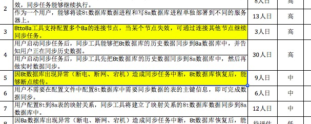 |
| 2016-08-01 15:29:59 | 你 | 做的黄色的这两个 和读写进程分离的 |
| 2016-08-01 15:30:15 | 你 | 优先级都挺高 |
| 2016-08-01 15:30:21 | 我 | 好的 |
| 2016-08-01 15:30:26 | 你 | 番薯又跟我说 做数据类型 被我拒绝了 |
| 2016-08-01 15:30:34 | 你 | 说卡卡提的需求 |
| 2016-08-01 15:30:40 | 你 | 我说等需求来了再说 |
| 2016-08-01 15:30:45 | 我 | 没错 |
| 2016-08-01 15:30:57 | 你 | 他有好多理由 不干 |
| 2016-08-01 15:31:19 | 你 | 反正我等他说完 然后说不理他这茬 该说我的说我的 |
| 2016-08-01 15:31:25 | 我 | 嗯 |
| 2016-08-01 15:31:41 | 你 | 因为他说话也没逻辑 也没思考 一点点小理由就能击垮他 |
| 2016-08-01 15:31:58 | 我 | 后面我让他当master，我当PO。 |
| 2016-08-01 15:32:04 | 你 | 好 |
| 2016-08-01 15:32:08 | 你 | 好啊 好啊 |
| 2016-08-01 15:32:14 | 我 | 然后因为我忙，就委托给你了 |
| 2016-08-01 15:32:28 | 你 | 这样我就可以学习学习了 |
| 2016-08-01 15:32:29 | 你 | 哈哈 |
| 2016-08-01 15:32:34 | 你 | 好好好 |
| 2016-08-01 15:32:39 | 你 | 还得等等 |
| 2016-08-01 15:32:50 | 我 | 等什么 |
| 2016-08-01 15:33:06 | 你 | 你什么时候做PO |
| 2016-08-01 15:33:15 | 我 | 今天 |
| 2016-08-01 15:33:23 | 你 | 也行 |
| 2016-08-01 15:33:24 | 我 | 开完反思会 |
| 2016-08-01 15:33:25 | 你 | 好 |
| 2016-08-01 15:33:27 | 你 | 好 |
| 2016-08-01 15:33:35 | 你 | 你太聪明了 |
| 2016-08-01 15:33:42 | 你 | 每次都能给我解决问题 |
| 2016-08-01 15:34:14 | 我 | 说这个我想起来个事情 |
| 2016-08-01 15:34:20 | 你 | 啥事 |
| 2016-08-01 15:34:23 | 我 | 你现在有空吗 |
| 2016-08-01 15:34:31 | 你 | 有啊 我没事干了 |
| 2016-08-01 15:34:32 | 我 | 我昨天写了点东西 |
| 2016-08-01 15:34:33 | 你 | 可以休息 |
| 2016-08-01 15:34:36 | 你 | 好 |
| 2016-08-01 15:34:40 | 你 | 在一起写里吗 |
| 2016-08-01 15:34:43 | 我 | 我发给你吧 |
| 2016-08-01 15:34:46 | 你 | 好 |
| 2016-08-01 15:34:51 | 你 | 用什么发 |
| 2016-08-01 15:35:21 | 我 | 先用微信吧，我写在手机里了 |
| 2016-08-01 15:35:27 | 你 | 好 |
| 2016-08-01 15:35:42 | 你 | 微信显示的有可能不全 |
| 2016-08-01 15:35:47 | 你 | 你发过来我看看吧 |
| 2016-08-01 15:36:12 | 我 | 我又看了几遍聊天记录，发现你成长的很快。下面我说说我的几点看法吧。 首先，你在道上又前进一步了。道其实就是规律，但是由于世界是分层的，因此规律也是分层的，还有就是规律是隐藏在世界运行背后的，因此如何寻找规律就是人类如何认识世界。结论就是规律是分维度的，有层次的。规律之上还有规律，就是规律的规律。先说说你这次发现的规律，就是我的计划。你是通过观察我的行为，逐渐的一点一点总结出来的，这就叫归纳法。归纳法是人类最常用的一种认识世界的方法。你现在自己已经开始有意识的使用归纳法来总结规律了，所以我说你在道上又前进一步了。 |
| 2016-08-01 15:36:52 | 我 | 另一个我要说的就是维度，你发现的我的规律是方法的维度，我发现你总是先学会方法，或者说你对方法比较感兴趣，每次你注意的都是我的方法，之前很多次聊天时你关注的也是我的方法，你总是想知道我是如何去做的。这次我从你说的中看，在方法这个维度上，你已经开始进入第二个层次了，就是已经开始凭着直觉进行判断了。这是一个好的现象，因为当你将一部分逻辑交给直觉的时候，这部分逻辑已经开始进入你的潜意识了，而你就可以更多的思考规律的规律，你现在也恰恰是这么做的。我说的这些东西你自己其实并没有完全意识到，还是基本上还是一种自发的行为，但是和之前相比已经是个巨大的进步了。 |
| 2016-08-01 15:37:24 | 我 | 不过就像我上面说到的一样，规律是分维度的，方法只是其中的一个维度，以现在的scrum为例，还有软件工程的维度、技术的维度、需求管理的维度。这些维度的知识在整个过程中比方法更重要。你在聊天中提到“而且我奇怪的是 我到现在还是不能预测一些问题 还有碰到新问题时 自己还依然想不出解决方案”，这就是因为你在其他维度上知识的缺失造成的。你看见我有计划，事情是按照我的计划进行的，其实我的计划是在研究其他几个维度的情况后制定的，我能预测问题是因为我掌握了这些规律，通过推理我知道会有这些问题，同时我也能分析出产生这些问题的根本原因，因此就可以制定计划去消除这些原因因而避免这些问题。因此后面你需要的就是要全面的学习并掌握其他这些维度的知识，包括你说的逻辑推理能力。 |
| 2016-08-01 15:40:05 | 我 | 能看吗？ |
| 2016-08-01 15:40:20 | 你 | 能看 |
| 2016-08-01 15:40:29 | 你 | 但是有不懂的地方 |
| 2016-08-01 15:41:11 | 我 | 后面还有一些，我回来放到一起写吧。现在我网不好，上不去 |
| 2016-08-01 15:41:18 | 你 | 好 |
| 2016-08-01 15:41:50 | 你 | 你到时候发到一起写上 我一起看 |
| 2016-08-01 15:42:16 | 我 | 好的 |
| 2016-08-01 15:43:04 | 你 | 今天我跟胡组会说话的时候 那三个男生 一句话不说 表情凝重 |
| 2016-08-01 15:43:06 | 你 | 哈哈 |
| 2016-08-01 15:43:28 | 你 | 最后胡组会想我妥协的时候 我当时想 我真是又进步了 |
| 2016-08-01 15:43:35 | 我 | 😄 |
| 2016-08-01 15:43:57 | 你 | 不急不乱 不像以前那么唯唯诺诺 |
| 2016-08-01 15:44:33 | 我 | 嗯 |
| 2016-08-01 16:28:04 | 我 | 好了，我放到一起写了 |
| 2016-08-01 16:28:12 | 你 | 好的 |
| 2016-08-01 16:30:04 | 我 | 就开这么一破会，我流量用了40M[流泪] |
| 2016-08-01 16:30:14 | 你 | 怎么这么快呢 |
| 2016-08-01 16:30:17 | 你 | 你看啥了 |
| 2016-08-01 16:30:27 | 我 | 看新闻了 |
| 2016-08-01 16:30:48 | 我 | 以后不能用自己的网看头条了 |
| 2016-08-01 16:31:06 | 你 | 是 |
| 2016-08-01 16:31:13 | 你 | 图片多的很费 |
| 2016-08-01 16:49:29 | 我 | 我重启路由器 |
| 2016-08-01 16:49:37 | 你 | 好 |
| 2016-08-01 16:52:11 | 我 | 重启了，你可以换过来了 |
| 2016-08-01 16:52:31 | 你 | 我换过来了 |
| 2016-08-01 16:52:45 | 我 | 好的 |
| 2016-08-01 16:54:07 | 我 | 你手机没连wifi吗 |
| 2016-08-01 16:54:22 | 我 | 没看见你的手机 |
| 2016-08-01 16:54:38 | 你 | 没连 |
| 2016-08-01 16:55:02 | 我 | 哦，我说呢 |
| 2016-08-01 16:55:25 | 我 | 又有两个不知道是谁连上来了 |
| 2016-08-01 16:55:38 | 你 | 哈哈 |
| 2016-08-01 16:55:43 | 我 | 待会看看谁喊没法上网 |
| 2016-08-01 16:56:01 | 你 | 哈哈 真搞笑 |
| 2016-08-01 16:56:06 | 你 | 你的问题 |
| 2016-08-01 16:56:12 | 你 | 人天生就有追求各种快乐的权力，但是我们去无法去追求所有的快乐，为什么呢？ |
| 2016-08-01 16:56:19 | 你 | 我给你说说我的答案 |
| 2016-08-01 16:56:33 | 我 | 这么快就有答案了 |
| 2016-08-01 16:56:47 | 你 | 是啊 |
| 2016-08-01 16:56:48 | 你 | 哈哈 |
| 2016-08-01 16:56:54 | 你 | 估计不对 |
| 2016-08-01 16:57:02 | 我 | 你说吧 |
| 2016-08-01 16:57:10 | 你 | 快乐是因为需求得到满足，需求是分层次的，相同的需求得到满足时不同层次的人获得的快乐不同。低层次的人无法体会高层次人的追求，也就理解不到高层次人的快乐，所以我们追求的快乐是由我们属于哪个层次的人决定的。如果想要追求所有的快乐，就需要成为最高层次的人，人层次是没头的，所以我们最求不到所有的快乐。 |
| 2016-08-01 16:57:49 | 你 | 哇塞 你是在练我的逻辑推理吗 |
| 2016-08-01 16:58:41 | 我 | 也算吧 |
| 2016-08-01 17:03:20 | 我 | 你前面说的都对，“如果想要追求所有的快乐，就需要成为最高层次的人，人层次是没头的，所以我们最求不到所有的快乐。”这句就不对了 |
| 2016-08-01 17:04:31 | 你 | 如果这句不对 那你的结论就应该是 有人能够追求所有的快乐 |
| 2016-08-01 17:04:38 | 你 | 有些人 |
| 2016-08-01 17:12:07 | 我 | 你离我这么远 |
| 2016-08-01 17:25:05 | 我 | 吓到你了？ |
| 2016-08-01 17:31:54 | 你 | 没有 |
| 2016-08-01 18:26:26 | 我 | 赶紧充电吧 |
| 2016-08-01 18:26:33 | 你 | 没事 |
| 2016-08-01 18:27:51 | 你 | 老是头疼 |
| 2016-08-01 18:28:49 | 我 | 着凉了 |
| 2016-08-01 18:29:01 | 我 | 让空调吹的 |
| 2016-08-01 18:29:04 | 你 | 不知道 最近老爱疼 |
| 2016-08-01 18:29:14 | 你 | 不是空调的事 在家也一直疼 |
| 2016-08-01 18:31:54 | 我 | 累着了，没睡够 |
| 2016-08-01 18:32:10 | 你 | 就是脑神经抽筋的感觉 |
| 2016-08-01 18:32:18 | 你 | 应该是习惯性的 |
| 2016-08-01 18:32:40 | 我 | 哦 |
| 2016-08-01 19:05:04 | 你 | 你自己走过去？ |
| 2016-08-01 19:05:11 | 你 | 快乐的那个还没说完呢 |
| 2016-08-01 19:05:18 | 我 | 是 |
| 2016-08-01 19:05:24 | 你 | 他说谁呢 |
| 2016-08-01 19:05:25 | 我 | 明天再说吧 |
| 2016-08-01 19:05:29 | 你 | 好 |
| 2016-08-01 19:05:31 | 你 | 田 |
| 2016-08-01 19:05:35 | 我 | 测试 |
| 2016-08-01 19:05:40 | 你 | 王国华吗 |
| 2016-08-01 19:05:57 | 我 | 应该是 |
| 2016-08-01 19:06:05 | 我 | 监控工具的事情 |
| 2016-08-01 19:06:12 | 你 | 好 |
| 2016-08-01 19:06:23 | 我 | 测试中发现了很多连接 |
| 2016-08-01 19:06:36 | 我 | 今天下午的会上田还说这个事情 |
| 2016-08-01 19:06:45 | 你 | 恩 |
| 2016-08-01 19:06:47 | 你 | 垮了 |
| 2016-08-01 19:06:58 | 我 | 张绍勇还说这个是个大问题，要追查 |
| 2016-08-01 19:07:06 | 你 | 恩 |
| 2016-08-01 19:07:18 | 你 | 把环境推了 是吧 |
| 2016-08-01 19:07:26 | 你 | 而且还有两天的数据 |
| 2016-08-01 19:07:32 | 我 | 嗯 |
| 2016-08-01 19:07:37 | 我 | 你几点走？ |
| 2016-08-01 19:07:43 | 你 | |
| 2016-08-01 19:07:48 | 你 | 李杰发的 |
| 2016-08-01 19:07:56 | 我 | |
| 2016-08-01 19:08:34 | 你 | 我的问题 你发现的 为什么随时说我呢 |
| 2016-08-01 19:08:37 | 你 | 伤心 |
| 2016-08-01 19:08:57 | 我 | 没看懂你说的 |
| 2016-08-01 19:09:02 | 你 | 为什么不随时说我呢 |
| 2016-08-01 19:09:03 | 我 | 我没说你呀 |
| 2016-08-01 19:09:19 | 你 | 我的问题 你发现的 为什么不随时说我呢 |
| 2016-08-01 19:09:21 | 我 | 应该让你自己体会 |
| 2016-08-01 19:09:27 | 你 | 好吧 |
| 2016-08-01 19:09:38 | 你 | 唉 |
| 2016-08-01 19:09:45 | 我 | 等你有了深刻的体会，你就会理解了 |
| 2016-08-01 19:09:50 | 你 | 让我自己发现自己是错的 |
| 2016-08-01 19:09:55 | 你 | 也对 |
| 2016-08-01 19:09:58 | 你 | 我走了 |
| 2016-08-01 19:10:02 | 你 | 你总有你的理由 |
| 2016-08-01 19:10:12 | 我 | 哦 |
| 2016-08-01 19:10:25 | 你 | 这句话说的好像有歧义 |
| 2016-08-01 19:10:28 | 我 | 说的我好像强词夺理似的 |
| 2016-08-01 19:10:34 | 你 | 不是不是 |
| 2016-08-01 19:10:36 | 你 | 当然不是 |
| 2016-08-01 19:10:43 | 我 | 我知道，逗你呢 |
| 2016-08-01 19:10:44 | 你 | 我说了 好像有歧义 |
| 2016-08-01 19:10:53 | 我 | 赶紧回家吧 |
| 2016-08-01 19:10:56 | 你 | 这个一点不好玩 |
| 2016-08-01 19:10:59 | 我 | 今天早点睡觉 |
| 2016-08-01 19:11:04 | 你 | 我都开始怀疑你了 |
| 2016-08-01 19:11:16 | 你 | 晚上吃凉皮 |
| 2016-08-01 19:11:17 | 我 | 怀疑什么 |
| 2016-08-01 19:11:25 | 你 | 我忘了 |
| 2016-08-01 19:11:27 | 你 | 哈哈 |
| 2016-08-01 19:11:29 | 你 | 太绕了 |
| 2016-08-01 19:11:43 | 你 | 等我回头再想想 |
| 2016-08-01 19:11:48 | 我 | 好的 |
| 2016-08-01 19:12:00 | 你 | 我是没见过猪跑的人 |
| 2016-08-01 19:12:16 | 你 | 回家了 |
| 2016-08-01 19:12:55 | 我 | 好 |
| 2016-08-01 19:15:41 | 你 | 走了 |
| 2016-08-01 19:15:49 | 我 | 嗯 |
{kind=link}
{kind=link}
2016-08-02¶
| 2016-08-02 08:34:42 | 我 | 亲，你好点吗 |
| 2016-08-02 08:34:51 | 你 | 没事 |
| 2016-08-02 08:35:07 | 你 | 你们的方案怎么老是这么多问题 |
| 2016-08-02 08:35:16 | 你 | 上周三开会不还说这事了吗 |
| 2016-08-02 08:35:23 | 我 | 是因为人不行 |
| 2016-08-02 08:36:55 | 你 | 唉 |
| 2016-08-02 08:39:35 | 你 | 你干嘛呢 |
| 2016-08-02 08:41:19 | 我 | 写日志 |
| 2016-08-02 08:41:25 | 我 | 汇总工时 |
| 2016-08-02 08:42:05 | 你 | 恩 |
| 2016-08-02 08:47:01 | 我 | 完事了 |
| 2016-08-02 08:49:06 | 你 | 前两天买的衣服都得退回去 |
| 2016-08-02 08:49:15 | 你 | 一个有毛病 一个太大 |
| 2016-08-02 08:49:33 | 我 | 哦，还好，我以为都太瘦呢 |
| 2016-08-02 08:49:43 | 你 | 你！！！！！！！！！！！！！！！！！ |
| 2016-08-02 08:50:06 | 我 | |
| 2016-08-02 08:52:53 | 我 | 亲，趁现在没事说说快乐的事情吧 |
| 2016-08-02 08:53:10 | 你 | 好啊 |
| 2016-08-02 08:53:20 | 我 | 我不直接告诉你答案，只给你一个提示，需要你自己去想 |
| 2016-08-02 08:54:08 | 你 | 好 |
| 2016-08-02 08:54:11 | 我 | 你昨天分析的不错，我可以理解为你是水平切分的 |
| 2016-08-02 08:54:31 | 你 | 哦 |
| 2016-08-02 08:54:34 | 我 | 按照认知的高低进行的切分 |
| 2016-08-02 08:54:43 | 我 | 这是一个维度 |
| 2016-08-02 08:54:50 | 你 | 恩 |
| 2016-08-02 08:55:16 | 我 | 那么现在从另一个正交的维度去试试 |
| 2016-08-02 08:56:09 | 我 | 比如从人这个个体去考虑 |
| 2016-08-02 08:56:19 | 你 | 恩 |
| 2016-08-02 08:56:41 | 我 | 然后考虑人与人之间的关系 |
| 2016-08-02 08:56:55 | 你 | 啊 |
| 2016-08-02 08:57:13 | 你 | 个体不能追求所有的快乐 |
| 2016-08-02 08:57:14 | 你 | 是吗 |
| 2016-08-02 08:57:36 | 我 | 我无法直接回答你 |
| 2016-08-02 08:57:44 | 我 | 我告诉你我的思路吧 |
| 2016-08-02 08:59:10 | 你 | 少透露点 |
| 2016-08-02 08:59:46 | 我 | 你昨天说的，我对其进行建模，我认为是水平切分，就是在认知这个维度上的，这个维度是对所有人的，因此类似于需求金字塔。 |
| 2016-08-02 09:00:30 | 我 | 然后我就想从另一个正交的维度看看会是什么样子，既然上一个维度是对所有人的，那么这次切分就已人为单位 |
| 2016-08-02 09:02:00 | 我 | 这个就是我的思路，我没有特定的目标需要证明，我只是从一个基础（单纯的维度切分）开始，利用逻辑推理去推导，所以我无法回答你的问题 |
| 2016-08-02 09:02:03 | 你 | 恩 |
| 2016-08-02 09:02:11 | 你 | 嗯嗯 |
| 2016-08-02 09:02:36 | 你 | 但是推导也是需要东西的 比如知识 |
| 2016-08-02 09:02:43 | 我 | 对 |
| 2016-08-02 09:03:01 | 我 | 这个过程就是一个学习知识的过程 |
| 2016-08-02 09:03:02 | 你 | 我之所以能在认知这个纬度推导下去 因为我掌握了这个知识 |
| 2016-08-02 09:03:20 | 我 | 在这个过程中发现自己欠缺什么就去学什么 |
| 2016-08-02 09:03:25 | 我 | 没错 |
| 2016-08-02 09:04:07 | 你 | ok |
| 2016-08-02 09:05:10 | 我 | 我再说一点更抽象的，你看看你能明白吗 |
| 2016-08-02 09:06:10 | 我 | 我刚才说这是一个学习知识的过程，其实这个过程和我昨天说的敏捷有异曲同工之处 |
| 2016-08-02 09:06:46 | 你 | 明白 |
| 2016-08-02 09:07:04 | 你 | 『在这个过程中发现自己欠缺什么就去学什么』你说这个时候我就想到了 |
| 2016-08-02 09:07:07 | 你 | 我觉得挺难的 |
| 2016-08-02 10:42:27 | 你 | 我回趟家都晒黑了 |
| 2016-08-02 10:42:30 | 你 | 你看出来了吗 |
| 2016-08-02 10:42:37 | 你 | 一直在外边玩 |
| 2016-08-02 10:42:39 | 我 | 没有 |
| 2016-08-02 10:42:57 | 你 | 我照镜子都察觉出来了 |
| 2016-08-02 10:43:06 | 我 | 只是觉得你很累 |
| 2016-08-02 10:43:10 | 你 | 可能我一直很黑 |
| 2016-08-02 10:43:12 | 你 | 对了 |
| 2016-08-02 10:43:22 | 你 | 我刚才特别想跟你发火 |
| 2016-08-02 10:43:27 | 我 | 为啥 |
| 2016-08-02 10:43:28 | 你 | 后来想想算了 |
| 2016-08-02 10:43:42 | 你 | 不说这个了 |
| 2016-08-02 10:47:01 | 我 | 我开了我的猫，你自己连吧。这个有3个G，用不完 |
| 2016-08-02 10:49:13 | 我 | 为啥不理我了，生我气了？ |
| 2016-08-02 11:59:14 | 我 | 亲，真生我的气啦？ |
| 2016-08-02 12:24:54 | 你 | 没有， |
| 2016-08-02 12:24:56 | 你 | 真没有 |
| 2016-08-02 12:25:04 | 你 | 我干嘛生你气啊 |
| 2016-08-02 12:25:06 | 你 | 笨蛋 |
| 2016-08-02 12:25:20 | 你 | 中午出了好多汗 |
| 2016-08-02 12:25:25 | 我 | 唉，你不理我，吓到我了 |
| 2016-08-02 12:25:32 | 你 | 脸上的粉估计都没了 |
| 2016-08-02 12:25:37 | 你 | 
|
| 2016-08-02 12:25:53 | 我 | 那就去洗洗 |
| 2016-08-02 12:26:14 | 你 | 不洗 |
| 2016-08-02 12:26:23 | 你 | 坚决不洗 |
| 2016-08-02 12:26:37 | 我 | 哦 |
| 2016-08-02 12:27:11 | 我 | 歇会吧 |
| 2016-08-02 12:27:15 | 你 | 恩 |
| 2016-08-02 13:47:14 | 我 | 你今天为啥想和我发火呀 |
| 2016-08-02 13:51:30 | 你 | 不为什么 |
| 2016-08-02 13:51:37 | 你 | 你别问了好吗 |
| 2016-08-02 13:51:44 | 你 | 我要是想说 早就跟你说了 |
| 2016-08-02 13:51:52 | 我 | 好吧 |
| 2016-08-02 13:52:09 | 我 | 不会是和东东闹别扭了吧 |
| 2016-08-02 13:52:52 | 你 | 跟他没关系 |
| 2016-08-02 13:53:12 | 我 | 看样子我罪过大了 |
| 2016-08-02 13:53:52 | 你 | 没事拉 |
| 2016-08-02 13:53:57 | 你 | 你别纠结了行吗 |
| 2016-08-02 13:54:15 | 你 | 跟你说个好玩的事 |
| 2016-08-02 13:54:19 | 你 | 今天在卫生间洗手的时候 有个女生用烘干机烘手 那个烘干机声音特别大 他哄了四次 我就很奇怪 为什么大夏天的要用那玩意 |
| 2016-08-02 13:54:31 | 你 | 结果我们同事过来的时候 就跟她吐槽 我说的声音还挺大的 然后说完看见那个烘手的女生就在离我不到2米的地方 瞪了我好几眼 |
| 2016-08-02 13:54:37 | 你 | 好尴尬 |
| 2016-08-02 13:54:54 | 我 | 哦 |
| 2016-08-02 13:55:25 | 你 | 不好玩吗 |
| 2016-08-02 13:55:55 | 我 | 是你吗？ |
| 2016-08-02 13:56:01 | 你 | 是啊 |
| 2016-08-02 13:56:02 | 你 | 我 |
| 2016-08-02 13:56:28 | 我 | 好吧 |
| 2016-08-02 13:56:42 | 你 | [敲打] |
| 2016-08-02 13:56:47 | 我 | 其实我真的没有觉得很好玩 |
| 2016-08-02 13:57:02 | 你 | 恩 |
| 2016-08-02 13:57:41 | 你 | 不好玩拉倒 |
| 2016-08-02 13:58:00 | 我 | |
| 2016-08-02 13:58:14 | 你 | 这个好玩啦？ |
| 2016-08-02 13:59:31 | 我 | 看你可爱呀 |
| 2016-08-02 14:00:21 | 你 | 给你发邮件了 |
| 2016-08-02 14:00:32 | 你 | 用户故事的 我写了两个 你看看对不对 |
| 2016-08-02 14:00:44 | 我 | 好 |
| 2016-08-02 14:01:17 | 我 | 亲，你又发错邮箱啦 |
| 2016-08-02 14:02:42 | 我 | 对了 |
| 2016-08-02 14:03:00 | 你 | OK |
| 2016-08-02 14:04:31 | 我 | 你的每一个detail都可以写成一个用户故事 |
| 2016-08-02 14:04:54 | 你 | 就是 detail就是细化后的用户故事 |
| 2016-08-02 14:04:57 | 你 | 可以吗 |
| 2016-08-02 14:05:09 | 我 | 可以 |
| 2016-08-02 14:05:23 | 你 | 有什么问题 |
| 2016-08-02 14:07:22 | 我 | 有几个我没有看懂 |
| 2016-08-02 14:10:50 | 你 | 没看懂竟然！ |
| 2016-08-02 14:10:52 | 你 | 我看看 |
| 2016-08-02 14:12:18 | 你 | 哪个不懂 |
| 2016-08-02 14:12:56 | 我 | 第一个里面有几个没看明白 |
| 2016-08-02 14:13:04 | 我 | 感觉说起来特别绕 |
| 2016-08-02 14:13:12 | 你 | 恩 |
| 2016-08-02 14:14:52 | 你 | 我再改改 |
| 2016-08-02 14:14:56 | 我 | 好的 |
| 2016-08-02 14:14:57 | 你 | 是有点欠妥 |
| 2016-08-02 14:16:02 | 你 | 配置文件中仅指定8t表名，建立8a表映射时，不但指定8a表名，还指定表中列名，同步工具报错，同步任务结束。 |
| 2016-08-02 14:16:45 | 我 | 不明白 |
| 2016-08-02 14:17:14 | 我 | 你是想说用户可以通过配置文件来指定需要同步的表的信息吧 |
| 2016-08-02 14:17:56 | 你 | 是 |
| 2016-08-02 14:17:58 | 你 | 而且 |
| 2016-08-02 14:18:10 | 你 | 配置文件配置时候有要求 |
| 2016-08-02 14:18:19 | 你 | 就跟咱们的ctl文件差不多 |
| 2016-08-02 14:19:01 | 你 | 他不是加载 加载ctl只定义目标表 |
| 2016-08-02 14:19:16 | 你 | 这个要定义源表和目标表 |
| 2016-08-02 14:19:21 | 我 | 这些都应该是细节吧 |
| 2016-08-02 14:19:22 | 你 | 但是不需要定义数据 |
| 2016-08-02 14:20:18 | 你 | 这个不用写在用户故事里是吗 |
| 2016-08-02 14:20:52 | 我 | 那么你需要区分是用户需要的细节还是设计细节 |
| 2016-08-02 14:21:40 | 我 | 也就是说用户是否关心这些细节，还是用户只关心是不是有这个，不关心是什么形式的 |
| 2016-08-02 14:23:21 | 你 | 这么说的话更像是设计细节 |
| 2016-08-02 14:23:28 | 我 | 对呀 |
| 2016-08-02 14:23:51 | 我 | 这样的应该让研发去决定 |
| 2016-08-02 14:24:02 | 你 | 要是配置文件的形式不定义 |
| 2016-08-02 14:24:13 | 你 | 那用户故事怎么分啊 |
| 2016-08-02 14:24:29 | 你 | 我觉得就剩第一和第二个了 |
| 2016-08-02 14:24:36 | 我 | 不明白 |
| 2016-08-02 14:24:44 | 我 | 需要定义什么形式 |
| 2016-08-02 14:25:07 | 你 | 不明白 |
| 2016-08-02 14:25:10 | 你 | 我也不明白 |
| 2016-08-02 14:25:14 | 你 | 要不我过去找你吧 |
| 2016-08-02 14:25:18 | 你 | 真费劲 |
| 2016-08-02 14:25:51 | 我 | 好 |
| 2016-08-02 14:29:05 | 我 | 谁这么配合你 |
| 2016-08-02 15:40:25 | 你 | 干嘛去了 |
| 2016-08-02 15:40:34 | 我 | 开会 |
| 2016-08-02 15:42:06 | 我 | 番薯他们的技术架构 |
| 2016-08-02 15:43:46 | 你 | 恩 在哪 |
| 2016-08-02 15:44:00 | 我 | 武总办公室 |
| 2016-08-02 15:44:30 | 我 | 和范振勇他们 |
| 2016-08-02 15:44:57 | 你 | 好 |
| 2016-08-02 15:55:57 | 我 | 你今天打球去吗 |
| 2016-08-02 15:56:29 | 你 | 去 |
| 2016-08-02 15:56:40 | 我 | 好的 |
| 2016-08-02 15:57:03 | 你 | 我好像知道你今天下午想表达的意思了 |
| 2016-08-02 15:57:18 | 我 | 说说 |
| 2016-08-02 15:57:49 | 你 | 你看看这两个故事的区别 |
| 2016-08-02 15:57:53 | 你 | 1、作为一个用户，想要通过指定8t的表名、表中某列或某几列名，并建立与8a表、列的映射关系，使用同步工具将8t中建立映射关系的列的数据同步到8a中。 |
| 2016-08-02 15:58:04 | 你 | 2、作为一个用户，想要同步8t表中指定列的内容到8a数据库中 |
| 2016-08-02 15:59:02 | 你 | 很明显故事一就有很多设计的成分 |
| 2016-08-02 15:59:11 | 你 | 故事二就更偏向用户 |
| 2016-08-02 16:00:20 | 我 | 是 |
| 2016-08-02 16:00:56 | 你 | 你再看一个 |
| 2016-08-02 16:01:16 | 你 | 1、作为一个用户，指定8t表中列数据类型与建立映射关系的8a表列数据类型不一致，同步工具报错，同步任务结束。 |
| 2016-08-02 16:01:27 | 你 | 2、作为一个用户，当他指定的8t表中列数据类型与建立映射关系的8a表列数据类型不一致时，能够获得出错提示信息，使其被告知不能启动数据同步。 |
| 2016-08-02 16:01:35 | 你 | 这两个角度就完全不同 |
| 2016-08-02 16:01:53 | 我 | 对 |
| 2016-08-02 16:02:11 | 你 | 第二个看着就很舒坦是不是 |
| 2016-08-02 16:02:31 | 我 | 是 |
| 2016-08-02 16:58:42 | 我 | 你现在还写吗 |
| 2016-08-02 16:59:20 | 你 | 不写 |
| 2016-08-02 17:12:36 | 你 | 你为啥笑我 |
| 2016-08-02 17:12:54 | 你 | 我一会打球 得吃点东西 |
| 2016-08-02 17:13:00 | 我 | 看你可爱呀 |
| 2016-08-02 17:13:13 | 你 | 不许笑 |
2016-08-03¶
| 2016-08-03 08:13:12 | 我 | 告诉你一个不幸的消息吧，我下午要去北京 |
| 2016-08-03 08:13:20 | 你 | 干嘛啊 |
| 2016-08-03 08:13:23 | 你 | 为啥啊 |
| 2016-08-03 08:13:29 | 你 | 出差？ |
| 2016-08-03 08:13:36 | 我 | 是 |
| 2016-08-03 08:34:27 | 你 | 亲 你今天忙吗 |
| 2016-08-03 08:34:49 | 我 | 应该不忙，有事吗 |
| 2016-08-03 08:35:13 | 你 | 没事 随便问问 |
| 2016-08-03 08:35:39 | 我 | 你是不是没事了 |
| 2016-08-03 08:35:47 | 你 | 我今天把jira那个弄个你能看的出来哈 |
| 2016-08-03 08:35:51 | 你 | 最近太忙了 |
| 2016-08-03 08:36:03 | 我 | 好的 |
| 2016-08-03 08:48:12 | 我 | 哈哈，你的日志比我写的晚1分钟 |
| 2016-08-03 08:48:36 | 你 | 你怎么也这么晚写啊 |
| 2016-08-03 08:48:58 | 我 | 昨天回家懒得写了 |
| 2016-08-03 08:49:47 | 你 | 恩 |
| 2016-08-03 08:52:47 | 我 | 你的手机一般是不连wifi还是连到了607上了，为啥我总是看不见你的手机呢，倒是每次都能看见你的本 |
| 2016-08-03 08:53:19 | 你 | 因为我连的4G |
| 2016-08-03 08:53:35 | 你 | 昨天到家根本没拿手机 一直在包里了 |
| 2016-08-03 08:54:06 | 我 | 你还特意关wifi吗，我一般都不关wifi |
| 2016-08-03 08:54:22 | 你 | 我昨天刷淘宝好像 关了 |
| 2016-08-03 08:55:41 | 我 | 606可以直接刷淘宝呀，你是不是连到607了，607是没法刷淘宝 |
| 2016-08-03 08:55:59 | 我 | 607好多网站都不行 |
| 2016-08-03 08:56:43 | 你 | 嗯嗯 |
| 2016-08-03 08:56:57 | 你 | 本来刷的好好的 后来就打不开了 |
| 2016-08-03 08:57:23 | 我 | 你的#15用户故事是一个史诗级的吗 |
| 2016-08-03 08:57:55 | 你 | 是 |
| 2016-08-03 08:58:02 | 我 | 打不开的时候我一般挂VPN |
| 2016-08-03 08:58:06 | 你 | 是映射关系的那个 |
| 2016-08-03 09:00:30 | 你 | 可以吗 |
| 2016-08-03 09:00:33 | 你 | 那个 |
| 2016-08-03 09:00:40 | 你 | 可以把整表的删掉 |
| 2016-08-03 09:01:01 | 你 | 你说用户有只同步部分列数据的需求吗 |
| 2016-08-03 09:01:09 | 你 | 我觉得加载有 这个可能也有 |
| 2016-08-03 09:01:12 | 我 | 你先写吧 |
| 2016-08-03 09:01:20 | 你 | 好 |
| 2016-08-03 09:01:21 | 我 | 回来整体再看看 |
| 2016-08-03 09:01:24 | 你 | 写完一起说 |
| 2016-08-03 09:01:26 | 你 | 嗯嗯 |
| 2016-08-03 09:04:30 | 我 | 你真勤快，这么一会写了好几个了 |
| 2016-08-03 09:05:05 | 你 | 我以前写的啊 |
| 2016-08-03 09:05:10 | 你 | 粘贴过去就行 |
| 2016-08-03 09:05:27 | 你 | 我发现子任务不在清单里显示 这样看不太直观 |
| 2016-08-03 09:05:41 | 你 | 我想研究研究那个史诗级任务 |
| 2016-08-03 09:05:45 | 你 | 史诗级故事 |
| 2016-08-03 09:05:46 | 我 | 可以 |
| 2016-08-03 09:06:09 | 你 | 而且本来我写的就是故事 他们到时候还得拆成task呢 |
| 2016-08-03 09:06:24 | 我 | 嗯 |
| 2016-08-03 09:06:37 | 你 | 那样我就没办法跟了 |
| 2016-08-03 09:06:41 | 你 | 赶紧改 |
| 2016-08-03 09:06:51 | 我 | 哈哈 |
| 2016-08-03 09:06:57 | 你 | 我们用的是TI的芯片 |
| 2016-08-03 09:06:59 | 你 | 你知道吗 |
| 2016-08-03 09:07:16 | 我 | 我知道，德仪的 |
| 2016-08-03 09:07:32 | 你 | 是吧 我刚才不确定 没敢说 |
| 2016-08-03 09:07:38 | 你 | 编译器是IAR |
| 2016-08-03 09:07:40 | 我 | TI 最著名的是DSP |
| 2016-08-03 09:07:41 | 你 | 算吧 |
| 2016-08-03 09:07:49 | 你 | 我也不知道 |
| 2016-08-03 10:15:14 | 你 | 王志为啥不用去了 |
| 2016-08-03 10:22:37 | 我 | 这次不涉及到技术，8t也就老陈一个人 |
| 2016-08-03 10:44:30 | 我 | 说不忙，结果忙死了 |
| 2016-08-03 10:46:20 | 你 | 恩 |
| 2016-08-03 10:46:23 | 你 | 忙吧 先 |
| 2016-08-03 11:18:48 | 我 | 忙的我都没空理你了 |
| 2016-08-03 11:19:00 | 你 | 没事 你先忙 |
| 2016-08-03 11:19:21 | 我 | 下午开会应该有空陪你 |
| 2016-08-03 11:19:37 | 你 | 你好好开会吧 |
| 2016-08-03 11:28:57 | 你 | 我的胳膊昨天打球累的快抬不起来了 |
| 2016-08-03 11:28:59 | 你 | 好酸 |
| 2016-08-03 11:29:38 | 我 | 看样子打的不错 |
| 2016-08-03 11:29:57 | 你 | 我现在可厉害了 |
| 2016-08-03 11:30:35 | 我 | 不错，等我腿好了一定和你一起打 |
| 2016-08-03 11:30:46 | 你 | 好吧 |
| 2016-08-03 13:30:56 | 我 | 上车了 |
| 2016-08-03 13:33:10 | 你 | 恩 |
| 2016-08-03 13:33:48 | 我 | 我看了你上午做的，很不错 |
| 2016-08-03 13:34:33 | 你 | 真的吗 |
| 2016-08-03 13:34:38 | 你 | 你又在安慰我 |
| 2016-08-03 13:34:46 | 你 | 为什么老是安慰我 |
| 2016-08-03 13:34:53 | 我 | 没有安慰你 |
| 2016-08-03 13:34:58 | 我 | 是很不错 |
| 2016-08-03 13:35:16 | 我 | 你已经找到诀窍了 |
| 2016-08-03 13:35:39 | 你 | 我今天中午睡觉的时候想你说的快乐的问题了 |
| 2016-08-03 13:36:02 | 你 | 我做的不好的地方 你一定要告诉我 不用照顾我的情绪 |
| 2016-08-03 13:36:08 | 我 | 好的 |
| 2016-08-03 13:38:34 | 你 | 有空吗 |
| 2016-08-03 13:38:44 | 你 | 跟你说说快乐的事 |
| 2016-08-03 13:38:53 | 我 | 有，在火车上 |
| 2016-08-03 13:38:56 | 我 | 好的 |
| 2016-08-03 13:39:03 | 你 | 没空你就跟我说 |
| 2016-08-03 13:39:22 | 我 | 好 |
| 2016-08-03 13:39:23 | 你 | 我想的可能太简单了 |
| 2016-08-03 13:39:58 | 你 | 说到个体不能追求所有的快乐这件事，我想到了我们的兴趣 |
| 2016-08-03 13:40:32 | 你 | 每个人的兴趣是不同的，坐感兴趣的事肯定能获得很大的快乐， |
| 2016-08-03 13:40:36 | 你 | 做 |
| 2016-08-03 13:40:57 | 你 | 因为兴趣不同，所以对快乐的体验也不同， |
| 2016-08-03 13:41:13 | 你 | 比如你喜欢计算机，我喜欢社交活动 |
| 2016-08-03 13:41:31 | 我 | 嗯 |
| 2016-08-03 13:41:45 | 你 | 计算机给我带来的快乐，比给你的就会差很多 |
| 2016-08-03 13:42:00 | 你 | 计算机的这个快乐是我追求不到的 |
| 2016-08-03 13:42:12 | 你 | 这是兴趣的一面 |
| 2016-08-03 13:42:33 | 我 | 嗯 |
| 2016-08-03 13:42:34 | 你 | 其次还有另一面， |
| 2016-08-03 13:43:21 | 你 | 这是在我们足够了解自己的兴趣的前提下，尽可能的做感兴趣的事，从而使快乐最大化 |
| 2016-08-03 13:43:43 | 你 | 如果我们根本不了解自己，不知道自己的兴趣是什么 |
| 2016-08-03 13:43:55 | 你 | 你不知道你喜欢计算机 |
| 2016-08-03 13:44:15 | 你 | 那你可能连计算机带给你的快乐都追求不到 |
| 2016-08-03 13:44:35 | 你 | 这更依赖于我们主体 |
| 2016-08-03 13:44:50 | 我 | 没错 |
| 2016-08-03 13:45:10 | 你 | 因为我们个人是可以通过学习，提高认知等方式，认清自己，了解自己的兴趣 |
| 2016-08-03 13:45:25 | 你 | 但是我们的兴趣点更像是客观的存在 |
| 2016-08-03 13:45:32 | 你 | 有点改变不了 |
| 2016-08-03 13:45:44 | 你 | 这是两个维度 |
| 2016-08-03 13:45:47 | 你 | 对吧 |
| 2016-08-03 13:46:47 | 我 | 对 |
| 2016-08-03 13:47:55 | 我 | 兴趣点不会改变，但是兴趣的程度会变 |
| 2016-08-03 13:48:31 | 我 | 比如饿极了就会觉得吃东西是快乐的事情 |
| 2016-08-03 13:49:05 | 我 | 吃饱了就不觉得吃饭的快乐的了 |
| 2016-08-03 13:50:09 | 你 | 你想让我思考的是这个方向吗 |
| 2016-08-03 13:50:27 | 你 | 你记得你问过我 我学习这些东西是否是基于我的兴趣 |
| 2016-08-03 13:50:30 | 你 | 这个问题吗 |
| 2016-08-03 13:50:48 | 我 | 不是 |
| 2016-08-03 13:51:01 | 我 | 这是一个开放的问题 |
| 2016-08-03 13:51:16 | 我 | 你刚才说的这些都是答案之一 |
| 2016-08-03 13:51:31 | 我 | 还有其他的答案 |
| 2016-08-03 13:51:53 | 我 | 你可以每个方向都去试试 |
| 2016-08-03 13:52:07 | 你 | 恩 |
| 2016-08-03 13:52:15 | 你 | 可以 |
| 2016-08-03 13:52:44 | 我 | 其实每个方向就可能是一个维度 |
| 2016-08-03 13:53:26 | 我 | 多思考几个方向对提高认知和逻辑思维能力有帮助 |
| 2016-08-03 13:53:51 | 你 | 恩 好 |
| 2016-08-03 14:24:13 | 我 | 恐怖的北京地铁😱 |
| 2016-08-03 14:24:36 | 你 | 哈哈 还那么多人么 |
| 2016-08-03 14:24:46 | 你 | 老杨更洪越到底干啥去了 |
| 2016-08-03 14:24:51 | 你 | 我看是新项目 |
| 2016-08-03 14:24:58 | 你 | 老杨让老范招人呢 |
| 2016-08-03 14:25:00 | 我 | 好像是交流 |
| 2016-08-03 14:25:06 | 我 | 嗯 |
| 2016-08-03 14:25:07 | 你 | 我看不是 |
| 2016-08-03 14:25:11 | 你 | 跟8t有关 |
| 2016-08-03 14:25:18 | 你 | 说什么战略级别的 |
| 2016-08-03 14:26:12 | 我 | 是 |
| 2016-08-03 14:26:31 | 我 | 具体我也不清除，老杨没说 |
| 2016-08-03 14:26:48 | 你 | 那好吧 |
| 2016-08-03 14:37:35 | 我 | 还要换乘[抓狂] |
| 2016-08-03 14:37:47 | 你 | 亲 如果咱们的同步工具在支持数据转换 现在的设计可以实现吗 |
| 2016-08-03 14:37:53 | 你 | 得加一层吧 |
| 2016-08-03 14:38:02 | 我 | 是 |
| 2016-08-03 14:38:20 | 你 | 这部分是可以支持扩展的对吧 |
| 2016-08-03 14:38:28 | 你 | 我看了阿里巴巴的那个了 |
| 2016-08-03 14:38:31 | 我 | 不好扩展 |
| 2016-08-03 14:38:38 | 你 | 列了他们的功能点 |
| 2016-08-03 14:38:41 | 你 | 发给你看下 |
| 2016-08-03 14:38:57 | 你 | 有时间看吗 |
| 2016-08-03 14:38:59 | 我 | 因为转换规则不好处理 |
| 2016-08-03 14:39:17 | 我 | 你发给吧 |
| 2016-08-03 14:39:42 | 你 | 他这个肯定是支持 但是我看是自己写的代码转换的 没有用户接口层的定义 |
| 2016-08-03 14:41:07 | 你 | 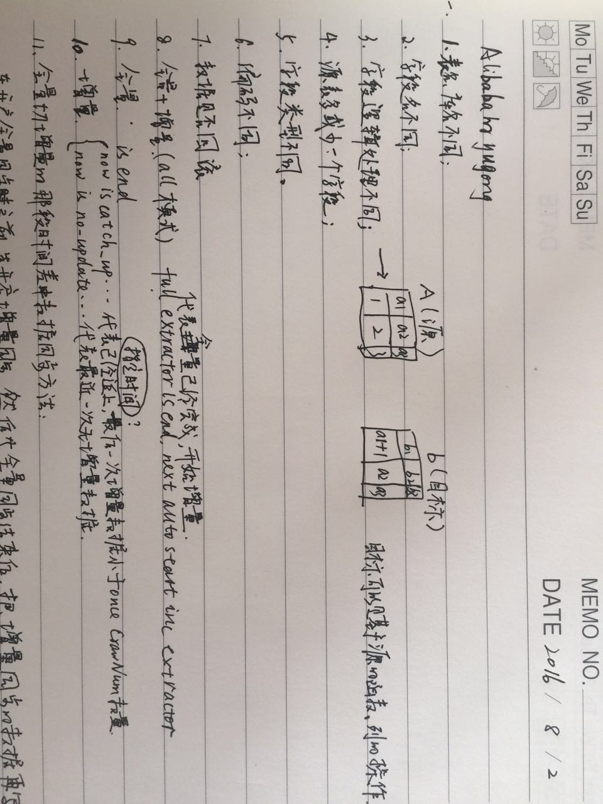 |
| 2016-08-03 14:41:08 | 你 | 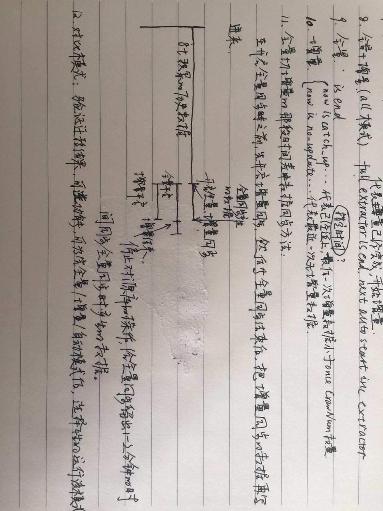 |
| 2016-08-03 14:48:02 | 我 | 他是不是更像ETL |
| 2016-08-03 14:54:18 | 你 | 他宣传的是迁移 |
| 2016-08-03 14:55:05 | 我 | 差不多，说性能的事情了吗 |
| 2016-08-03 14:55:12 | 你 | join操作都能做 |
| 2016-08-03 14:55:15 | 你 | 有说 |
| 2016-08-03 14:55:45 | 我 | 同步只是他的一部分功能 |
| 2016-08-03 14:56:13 | 你 | 测试结果： 总记录数:2610000,统计记录数:5000,数据同步TPS:115,最长时间:9736,最小时间:8161,平均时间:8658 |
| 2016-08-03 14:56:35 | 我 | 嗯 |
| 2016-08-03 14:57:53 | 你 |
|
| 2016-08-03 14:57:58 | 你 | 看不懂 |
| 2016-08-03 14:58:42 | 我 | 这些太技术了 |
| 2016-08-03 14:58:57 | 你 | 走了 |
| 2016-08-03 14:59:00 | 你 | 评审 |
| 2016-08-03 14:59:15 | 我 | 好 |
| 2016-08-03 15:29:23 | 我 | 到早了，得等一小时 |
| 2016-08-03 16:54:21 | 你 | 亲 交流呢吗 |
| 2016-08-03 16:54:42 | 你 | 刚评审完 |
| 2016-08-03 16:54:47 | 我 | 是 |
| 2016-08-03 16:55:01 | 我 | 没事，有空陪你 |
| 2016-08-03 16:55:23 | 你 | 好吧 刚才版本号的那个软需评审了 出了很多问题 |
| 2016-08-03 16:55:32 | 你 | 我都想骂街了 |
| 2016-08-03 16:55:39 | 我 | 是你写的吗 |
| 2016-08-03 16:55:54 | 你 | 是 |
| 2016-08-03 16:56:14 | 你 | 你知道老田说需求的对产品不熟悉吧 |
| 2016-08-03 16:56:18 | 我 | 都是谁提的 |
| 2016-08-03 16:56:21 | 我 | 是 |
| 2016-08-03 16:56:44 | 你 | 结果评审的时候 出了很多出现版本号的地方 我不知道 |
| 2016-08-03 16:57:05 | 我 | 哦 |
| 2016-08-03 16:57:09 | 你 | 然后王洪越也攻击我 气死我了 |
| 2016-08-03 16:57:15 | 你 | 他就是没事找事 |
| 2016-08-03 16:57:24 | 我 | 别理他 |
| 2016-08-03 16:57:30 | 你 | 我就不理他 |
| 2016-08-03 16:57:34 | 你 | 他神经病 |
| 2016-08-03 16:57:41 | 我 | 是 |
| 2016-08-03 16:57:42 | 你 | 可是我还是很生气 |
| 2016-08-03 16:57:57 | 我 | 你先说说吧 |
| 2016-08-03 16:58:18 | 你 | 那个文档 根本没有校对 |
| 2016-08-03 16:58:32 | 你 | 出现了多个字母 少个字母啥的事 |
| 2016-08-03 16:58:42 | 你 | 多个字少个字啥的 |
| 2016-08-03 16:58:51 | 你 | 还有王志 |
| 2016-08-03 16:59:00 | 你 | 逼逼 |
| 2016-08-03 17:03:15 | 我 | 王志是刷存在 |
| 2016-08-03 17:03:22 | 我 | 不用理他 |
| 2016-08-03 17:04:19 | 你 | 说我写的可选过程应该改为正常过程 |
| 2016-08-03 17:04:31 | 你 | 王洪越就帮着王志说 |
| 2016-08-03 17:04:39 | 你 | 我靠 你他妈早就知道你不早说 |
| 2016-08-03 17:05:01 | 你 | 等别人质疑需求组的这事的时候他才说 |
| 2016-08-03 17:05:06 | 你 | 你说他是不是故意的 |
| 2016-08-03 17:05:13 | 我 | 肯定是 |
| 2016-08-03 17:06:19 | 你 | 临了刘杰对的时候 说一些小毛病他就不记了 我说你少记点吧 我们这个是要考核的 |
| 2016-08-03 17:07:11 | 你 | 还有没有可选过程的 会写个可选过程 无 王洪越说没有可选 就别写了 |
| 2016-08-03 17:07:16 | 你 | 你说他就是找事 |
| 2016-08-03 17:07:36 | 我 | 是，就是找事 |
| 2016-08-03 17:07:52 | 你 | 王志新可选过程写O0010他都没说 我提过 还说说爱写啥写啥 |
| 2016-08-03 17:07:57 | 你 | 别管别人怎么写 |
| 2016-08-03 17:08:15 | 你 | 我先不生气了 为了这样的猪生气 不值得 |
| 2016-08-03 17:08:48 | 我 | 没错，等会议纪要出来以后再说 |
| 2016-08-03 17:08:58 | 我 | 我先去看看 |
| 2016-08-03 17:12:27 | 你 | 恩 好 |
| 2016-08-03 17:12:51 | 你 | 我没事了 我刚才发了条朋友圈 结果我姑姑 哥哥都在问我怎么了 |
| 2016-08-03 17:12:55 | 你 | 突然很后悔 |
| 2016-08-03 17:13:05 | 我 | 我也想问你呢 |
| 2016-08-03 17:13:27 | 你 | 恩 所以我又追了一条 |
| 2016-08-03 17:13:35 | 你 | 以后不干这种傻事了 |
| 2016-08-03 17:13:49 | 我 | 什么事情 |
| 2016-08-03 17:24:38 | 你 | 没什么 发了条朋友圈 |
| 2016-08-03 17:30:49 | 你 | 刚才杨总问我了 |
| 2016-08-03 17:30:53 | 你 | 问我怎了 |
| 2016-08-03 17:31:12 | 我 | 你怎么回的 |
| 2016-08-03 17:31:28 | 你 | 我回的评审的时候王洪越攻击我 烦他 |
| 2016-08-03 17:31:43 | 你 | 我是不是不该这样！ |
| 2016-08-03 17:31:47 | 我 | 不太好 |
| 2016-08-03 17:31:50 | 你 | 反正我已经说了 |
| 2016-08-03 17:31:57 | 你 | 爱怎么的就怎的么的吧 |
| 2016-08-03 17:32:00 | 我 | 就这样吧 |
| 2016-08-03 17:32:10 | 你 | 他说我不够成熟 要赶快成长起来 |
| 2016-08-03 17:32:28 | 你 | 二是说朋友圈发积极向上的 不然家人会担心 |
| 2016-08-03 17:32:36 | 你 | 我说我憋的难受没地发泄 |
| 2016-08-03 17:32:40 | 你 | 他说可以找他 |
| 2016-08-03 17:32:43 | 我 | 哦 |
| 2016-08-03 17:32:48 | 你 | 我搪塞两句就过去了 |
| 2016-08-03 17:33:01 | 你 | 我说我已经没事了 多谢关心 |
| 2016-08-03 17:33:25 | 你 | 我又好几周没跟他联系过了 |
| 2016-08-03 17:33:38 | 你 | 说实话我又义气用事 我自己知道 |
| 2016-08-03 17:33:48 | 我 | 没事，就这样吧 |
| 2016-08-03 17:33:51 | 你 | 我生性如此 不然会憋死的 |
| 2016-08-03 17:33:59 | 我 | 回来我给你报仇 |
| 2016-08-03 17:35:25 | 你 | 不用 没事的 你知道我要是真的看开 这都不叫事 所以是我自食苦果 |
| 2016-08-03 17:35:35 | 你 | 我也不是想毁了他 真的 |
| 2016-08-03 17:35:51 | 你 | 也不是看见他吃瘪我多好受 |
| 2016-08-03 17:35:54 | 我 | 我只是想知道你干了什么傻事 |
| 2016-08-03 17:36:19 | 你 | 就是发了条朋友圈『你要是个人，就他妈的赶紧给我好起来』 |
| 2016-08-03 17:36:30 | 你 | 我气自己学不会不生气 |
| 2016-08-03 17:36:49 | 我 | 哦 |
| 2016-08-03 17:36:57 | 我 | 你的目标错了 |
| 2016-08-03 17:37:06 | 你 | 怎么了 |
| 2016-08-03 17:37:25 | 我 | 不是学会不生气 |
| 2016-08-03 17:37:39 | 我 | 是学会控制自己的情绪 |
| 2016-08-03 17:59:39 | 我 | 回去 |
| 2016-08-03 17:59:53 | 你 | 也不早了 |
| 2016-08-03 18:01:16 | 我 | 是 |
| 2016-08-03 18:01:23 | 我 | 你好了吗 |
| 2016-08-03 18:01:29 | 你 | 好了 |
| 2016-08-03 18:02:53 | 我 | 你还是没有放下王洪越 |
| 2016-08-03 18:14:59 | 我 | 我看见会议纪要了 |
| 2016-08-03 18:15:44 | 我 | 等晚上我看看你写的软需吧 |
| 2016-08-03 18:15:52 | 你 | 别看了，没啥 |
| 2016-08-03 18:16:03 | 我 | 就这四条吗 |
| 2016-08-03 18:16:09 | 你 | 记得都是该记的 |
| 2016-08-03 18:16:24 | 你 | 别的小的刘杰都没记 |
| 2016-08-03 18:16:53 | 你 | 你看王志提的 |
| 2016-08-03 18:17:00 | 我 | 你还记得有哪些小的 |
| 2016-08-03 18:17:09 | 你 | 其他那两个确实有问题 |
| 2016-08-03 18:17:35 | 你 | 现在王洪越，旭明都在我身后跟别人说话呢 |
| 2016-08-03 18:29:14 | 你 | 走了 |
| 2016-08-03 18:29:16 | 你 | 你到哪了 |
| 2016-08-03 18:29:32 | 我 | 地铁 |
| 2016-08-03 18:29:42 | 你 | 恩 |
| 2016-08-03 18:29:53 | 你 | 哪些小的 你想知道吗？ |
| 2016-08-03 18:30:14 | 你 | 不关心我就不说了 |
| 2016-08-03 18:30:52 | 我 | 我想看看能不能帮你说话 |
| 2016-08-03 18:31:12 | 我 | 你把你认为他们说错的告诉我就可以了 |
| 2016-08-03 18:31:13 | 你 | 别 没事的 亲 不用在这些事上费心思 |
| 2016-08-03 18:31:14 | 你 | 不值 |
| 2016-08-03 18:31:27 | 我 | 为了你都值 |
| 2016-08-03 18:31:38 | 你 | 我是说咱俩都不值 |
| 2016-08-03 18:31:40 | 你 | 没事 |
| 2016-08-03 18:31:52 | 我 | 好吧 |
| 2016-08-03 18:31:58 | 你 | 心血来潮 就较真 就这么简单 |
| 2016-08-03 18:32:28 | 我 | 看他们把你气成那样我就生气 |
| 2016-08-03 18:32:54 | 你 | 你知道那次王洪越因为同步修改的事跟耿燕吵架吧 就是监控工具的需求 |
| 2016-08-03 18:33:03 | 我 | 知道 |
| 2016-08-03 18:33:16 | 你 | 然后在说PBC的时候 说我写的文档质量太差 从来没有那么多错误过 |
| 2016-08-03 18:33:23 | 你 | 你说多可笑 我能说什么 |
| 2016-08-03 18:33:34 | 你 | 而且那个文档 用例就几十个 |
| 2016-08-03 18:33:53 | 我 | 是 |
| 2016-08-03 18:33:54 | 你 | 这个人 人品就有问题 不小心被我发现了 |
| 2016-08-03 18:34:28 | 你 | 无所谓 我也不关心他 他乐意怎么着怎么着吧 我也不关系PBC那玩意 |
| 2016-08-03 18:36:44 | 你 | 而且现在跟你做scrum 做的很happy |
| 2016-08-03 18:36:54 | 你 | 需求这边让他自己玩吧 |
| 2016-08-03 18:40:12 | 我 | 好 |
| 2016-08-03 18:40:37 | 你 | 今天跟贺津聊了会天 |
| 2016-08-03 18:41:13 | 你 | 胡祖会去做数据类型的需求了 现在又剩下贺津和小布两个人干活 |
| 2016-08-03 18:42:12 | 我 | 我知道 |
| 2016-08-03 18:42:22 | 我 | 正好 |
| 2016-08-03 18:42:37 | 你 | 我跟贺津说了好几点 |
| 2016-08-03 18:42:52 | 你 | 贺津是个乖孩子 听得特别认真 而且非常认同 |
| 2016-08-03 18:42:59 | 我 | 是 |
| 2016-08-03 18:43:25 | 你 | 我说胡组会对scrum意见挺大的 他也说是 |
| 2016-08-03 18:43:27 | 我 | 他们组我就看上一个贺津 |
| 2016-08-03 18:43:33 | 你 | 我也是 |
| 2016-08-03 18:43:51 | 你 | 你看那个乔倩 阴阳怪气的 |
| 2016-08-03 18:43:57 | 我 | 是 |
| 2016-08-03 18:43:58 | 你 | 王凤臣也行 |
| 2016-08-03 18:44:16 | 你 | 我跟你说说和贺津说的话 |
| 2016-08-03 18:44:32 | 你 | 我写了篇日记 拍照片给你 我说的话都在这里 |
| 2016-08-03 18:45:00 | 你 | 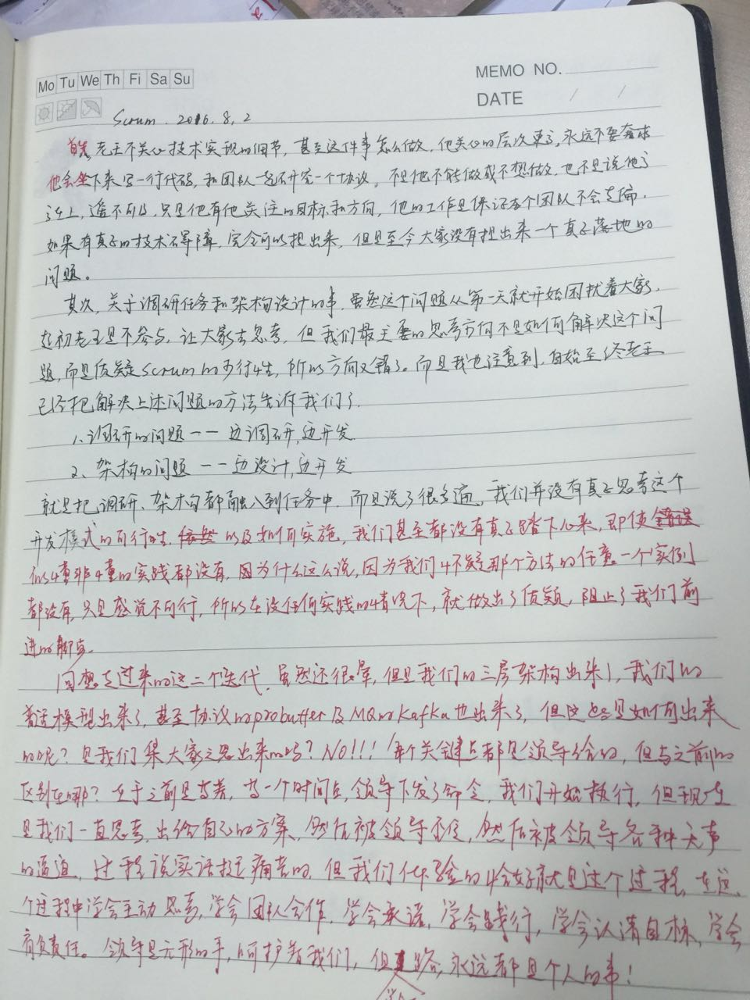 |
| 2016-08-03 18:45:22 | 我 | 好的 |
| 2016-08-03 18:45:53 | 你 | 然后强调了 我们是一个团队 我说的这些 我跟他们说不合适 让他在平时的讨论中渗透给其他人 |
| 2016-08-03 18:46:03 | 你 | 贺津真的很乖 |
| 2016-08-03 18:49:15 | 我 | 你说的好 |
| 2016-08-03 18:49:45 | 你 | 我是不是说的都在点上 虽然废话很多 字也很潦草 |
| 2016-08-03 18:50:45 | 我 | 亲，我还没看，准备检票上车 |
| 2016-08-03 18:51:12 | 你 | 恩 没事 |
| 2016-08-03 18:51:19 | 你 | 你先忙你的 别太分心 |
| 2016-08-03 18:51:36 | 我 | 我上车看 |
| 2016-08-03 18:51:53 | 你 | 好 |
| 2016-08-03 18:59:10 | 我 | 看完了 |
| 2016-08-03 18:59:17 | 我 | 写的不错 |
| 2016-08-03 19:00:05 | 你 | 写的废话太多 |
| 2016-08-03 19:00:09 | 你 | 你说我说的对吗 |
| 2016-08-03 19:00:22 | 你 | 我是在做对的事情吗 |
| 2016-08-03 19:00:47 | 我 | 你没错 |
| 2016-08-03 19:01:01 | 我 | 你的方向是对的 |
| 2016-08-03 19:01:15 | 你 | 做法是错的是吗 |
| 2016-08-03 19:01:30 | 我 | 你也没做错 |
| 2016-08-03 19:02:19 | 我 | 这是正常的认知过程 |
| 2016-08-03 19:02:34 | 你 | 嗯嗯 |
| 2016-08-03 19:02:52 | 我 | 大家对敏捷的质疑是正常的 |
| 2016-08-03 19:03:05 | 我 | 我在开始之前就知道 |
| 2016-08-03 19:03:34 | 我 | 所以他们每次抵触和质疑我都有办法对付 |
| 2016-08-03 19:04:06 | 你 | 哦 |
| 2016-08-03 19:04:12 | 你 | 可能只有我着急 |
| 2016-08-03 19:04:13 | 我 | 我不在乎他们，我关注是你的成长 |
| 2016-08-03 19:04:31 | 我 | 其实也就你真正成长了 |
| 2016-08-03 19:04:39 | 我 | 贺津还没有入门 |
| 2016-08-03 19:04:53 | 我 | 其他人根本就不想入门 |
| 2016-08-03 19:05:35 | 你 | 也不一定 |
| 2016-08-03 19:05:38 | 我 | 今天我说你用户故事写的好不是安慰你，是你真正写的好了 |
| 2016-08-03 19:05:44 | 你 | 但是胡组会的反应有点过 |
| 2016-08-03 19:06:34 | 我 | 胡祖会不是反应过了。她就是这样 |
| 2016-08-03 19:06:51 | 你 | 他为什么这么抵触呢 |
| 2016-08-03 19:06:58 | 我 | 即使是原来她也一样的态度 |
| 2016-08-03 19:06:59 | 你 | 贺津就没有 |
| 2016-08-03 19:07:12 | 你 | 小卜也还可以 |
| 2016-08-03 19:07:20 | 我 | 看起来她好像什么都抵触 |
| 2016-08-03 19:07:33 | 你 | 可能她就是这样的人 跟做什么没区别 |
| 2016-08-03 19:07:41 | 我 | 对 |
| 2016-08-03 19:07:50 | 我 | 但是影响不好 |
| 2016-08-03 19:07:57 | 你 | 恩 是 |
| 2016-08-03 19:08:12 | 你 | 那天我跟你说我跟她较量 |
| 2016-08-03 19:08:49 | 你 | 他也是 比跟你早上一起对峙还厉害 但是最后我也没让步 没有妥协 最后她听我的了 |
| 2016-08-03 19:09:14 | 你 | 影响真的挺不好的 |
| 2016-08-03 19:09:52 | 我 | 所以他们组我实在是找不出人了 |
| 2016-08-03 19:10:03 | 你 | 你说跟他没参加release会有关吗 |
| 2016-08-03 19:10:20 | 我 | 没有关系 |
| 2016-08-03 19:10:43 | 我 | 她有能力，但是不想担责任 |
| 2016-08-03 19:10:44 | 你 | 恩 好吧 |
| 2016-08-03 19:11:02 | 你 | 恩 |
| 2016-08-03 19:11:18 | 我 | 可是敏捷就是要团队承担责任 |
| 2016-08-03 19:11:24 | 你 | 是 |
| 2016-08-03 19:11:57 | 你 | 每次讨论 他都不是解决问题 都是在设置问题 |
| 2016-08-03 19:12:03 | 你 | 态度就不对 |
| 2016-08-03 19:12:15 | 我 | 是 |
| 2016-08-03 19:12:18 | 你 | 不然就把问题丢给你 |
| 2016-08-03 19:12:31 | 你 | 期望你能解决 |
| 2016-08-03 19:12:59 | 我 | 其实她不是想让别人解决问题 |
| 2016-08-03 19:13:27 | 我 | 她是想说如果失败了责任不在她 |
| 2016-08-03 19:13:37 | 你 | 恩 本质是这样的 |
| 2016-08-03 19:13:40 | 你 | 你说的对 |
| 2016-08-03 19:13:56 | 你 | 对了 我查了 同步工具确实有 |
| 2016-08-03 19:14:12 | 你 | Oracle的叫golden gate |
| 2016-08-03 19:14:13 | 我 | 所以我尽量不去和她讨论问题 |
| 2016-08-03 19:14:22 | 我 | 就是这个 |
| 2016-08-03 19:14:33 | 我 | 你可以参考一下 |
| 2016-08-03 19:14:39 | 你 | Oracle golden gate |
| 2016-08-03 19:14:43 | 你 | 简称OGG |
| 2016-08-03 19:14:49 | 你 | 正在看 |
| 2016-08-03 19:14:54 | 我 | 好的 |
| 2016-08-03 19:14:58 | 你 | 那个yuyong的 也差不多 |
| 2016-08-03 19:15:13 | 你 | 后来我又记了几个功能点 |
| 2016-08-03 19:15:44 | 我 | 好的 |
| 2016-08-03 19:15:54 | 你 | 我看的这两个跟咱们的架构都是一样的 |
| 2016-08-03 19:16:01 | 你 | 职责最起码是分开的 |
| 2016-08-03 19:16:08 | 你 | 读、存、写 |
| 2016-08-03 19:16:10 | 我 | 我让你看这些是怕你跟不上 |
| 2016-08-03 19:16:28 | 你 | 恩 挺好的 |
| 2016-08-03 19:16:34 | 你 | 我不说了 走了 |
| 2016-08-03 19:16:48 | 我 | 产品经理需要多看看竞品 |
| 2016-08-03 19:16:52 | 我 | 好的 |
| 2016-08-03 19:38:15 | 你 | 我老公还没有来 |
| 2016-08-03 19:38:25 | 你 | 我已经在路边等他半个小时了 |
| 2016-08-03 19:38:31 | 我 | 啊 |
| 2016-08-03 19:38:40 | 我 | 被咬了吗 |
| 2016-08-03 19:40:32 | 你 | 好像没有，我走来走去的 |
| 2016-08-03 19:40:48 | 我 | 好的 |
| 2016-08-03 19:40:49 | 你 | 你到天津了吗 |
| 2016-08-03 19:40:59 | 你 | 老陈岂不是还得回公司开车 |
| 2016-08-03 19:41:18 | 我 | 我下车了 |
| 2016-08-03 19:41:25 | 我 | 老陈没开车 |
| 2016-08-03 19:41:34 | 我 | 我可以走回家 |
| 2016-08-03 19:42:12 | 你 | 走回家？ |
| 2016-08-03 19:42:20 | 你 | 下哪个车？ |
| 2016-08-03 19:42:38 | 我 | 天津站 |
| 2016-08-03 19:42:57 | 你 | 恩， |
| 2016-08-03 19:43:00 | 你 | 好 |
| 2016-08-03 19:49:04 | 你 | 走了，别回 |
{kind=link}
{kind=link}
{kind=link}
2016-08-04¶
| 2016-08-04 08:27:02 | 我 | 你把jira启起来 |
| 2016-08-04 09:09:34 | 你 | 有空开会吗 |
| 2016-08-04 09:10:01 | 我 | 没有，等一会 |
| 2016-08-04 09:58:25 | 我 | 忘了和你说了，你的手机该充电了 |
| 2016-08-04 09:58:42 | 你 | en 好 |
| 2016-08-04 10:14:24 | 你 | 我把jira弄好了 |
| 2016-08-04 10:14:32 | 我 | 好的 |
| 2016-08-04 10:14:49 | 你 | 这个sprint就用这个跟就行 |
| 2016-08-04 10:15:02 | 你 | 我把时间调成跟咱们现在匹配的了 |
| 2016-08-04 10:15:10 | 我 | 好的，你就负责更新吧 |
| 2016-08-04 10:15:16 | 你 | 好 |
| 2016-08-04 10:35:29 | 我 | 亲，有空吗 |
| 2016-08-04 10:35:41 | 你 | 啥事 |
| 2016-08-04 10:35:59 | 我 | 想和你说说昨天评审的事情 |
| 2016-08-04 10:36:08 | 你 | 说吧 |
| 2016-08-04 10:36:11 | 你 | 有空 |
| 2016-08-04 10:44:44 | 我 | 稍等 |
| 2016-08-04 10:47:34 | 我 | 我看了你写的软需和他们的评审意见，我觉得每个工具写一个用例是不是太烦了 |
| 2016-08-04 10:47:57 | 你 | 什么意思 |
| 2016-08-04 10:48:01 | 你 | 没看明白 |
| 2016-08-04 10:48:11 | 你 | 你我写的太烦了是吗 |
| 2016-08-04 10:48:26 | 我 | 你原来的可选过程不就是每个工具一个吗 |
| 2016-08-04 10:48:39 | 我 | 后来他们让你改成单独的用例 |
| 2016-08-04 10:48:54 | 我 | 每个工具一个用例 |
| 2016-08-04 10:48:57 | 你 | 不是 |
| 2016-08-04 10:49:15 | 你 | 是把可选过程都改为正常过程 |
| 2016-08-04 10:49:44 | 你 | 用例整体不变 就是可选过程改为正常过程 以前的A1改为N2 |
| 2016-08-04 10:50:04 | 我 | 一个用例里面有N多个正常过程？ |
| 2016-08-04 10:50:10 | 你 | 对 |
| 2016-08-04 10:50:18 | 你 | 没有可选 全是正常 |
| 2016-08-04 10:50:49 | 我 | 这就更不对了 |
| 2016-08-04 10:51:11 | 你 | 王洪越的理由是从第一步N0010就分支 几应该是N2 |
| 2016-08-04 10:51:58 | 你 | 我一直不太明白那个N2，N3的怎么来的 |
| 2016-08-04 10:54:10 | 我 | 你看一下那本书上是怎么解释的 |
| 2016-08-04 10:54:51 | 你 | 恩 好 |
| 2016-08-04 10:55:43 | 你 | 用户操作到一个地方 有可选分支 很明显就是可选过程啊 |
| 2016-08-04 10:55:52 | 你 | 这跟第几步有什么关系 |
| 2016-08-04 10:55:55 | 我 | 对呀 |
| 2016-08-04 11:22:12 | 你 | 王志不是一般的怕你啊 |
| 2016-08-04 11:22:44 | 我 | 对 |
| 2016-08-04 11:23:09 | 我 | 因为他水平太低，经常说错 |
| 2016-08-04 13:50:18 | 你 | 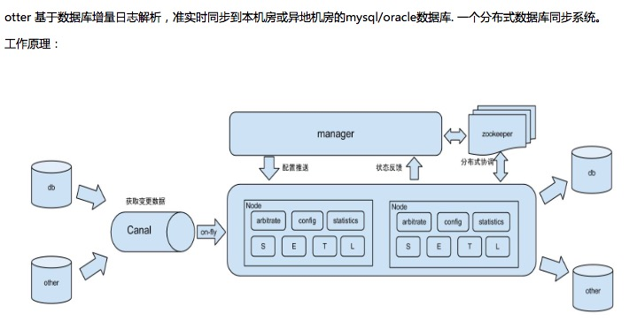 |
| 2016-08-04 13:50:30 | 你 | 看看这幅图 那个manger是干啥的 |
| 2016-08-04 13:50:57 | 你 | 原理描述： 1. 基于Canal开源产品，获取数据库增量日志数据。 什么是Canal, 请点击 2. 典型管理系统架构，manager(web管理)+node(工作节点) a. manager运行时推送同步配置到node节点 b. node节点将同步状态反馈到manager上 3. 基于zookeeper，解决分布式状态调度的，允许多node节点之间协同工作. |
| 2016-08-04 13:51:00 | 我 | 就是我们说的管理工具 |
| 2016-08-04 13:51:32 | 你 | 这里的node是干啥的 |
| 2016-08-04 13:51:36 | 你 | 高可用吗 |
| 2016-08-04 15:04:41 | 你 | 看番薯发的邮件 |
| 2016-08-04 15:04:44 | 你 | 多搞笑 |
| 2016-08-04 15:08:59 | 我 | 唉，太要命了 |
| 2016-08-04 15:14:58 | 你 | 他还振振有词 |
| 2016-08-04 15:15:15 | 你 | 我都知道前因后果的 都不知道他说的是啥 |
| 2016-08-04 15:15:25 | 你 | 一段大白字 |
| 2016-08-04 15:17:54 | 我 | 是 |
| 2016-08-04 15:18:06 | 我 | 愁死我了 |
| 2016-08-04 15:25:54 | 我 | 忙的我到现在还没空看你呢 |
| 2016-08-04 15:26:32 | 你 | 忙吧 我也很忙 |
| 2016-08-04 15:28:05 | 我 | 连你回的消息都没空看 |
| 2016-08-04 15:36:29 | 我 | 亲，关于版本号的软需我想和你商量一下 |
| 2016-08-04 15:38:20 | 你 | hao |
| 2016-08-04 15:38:29 | 你 | 我找你去说 还是这么说 |
| 2016-08-04 15:38:33 | 你 | 好像问题不小 |
| 2016-08-04 15:38:34 | 我 | 把各个组件的合并成一个用例，只用一个正常过程，在用例前面说明这个用例适用于多个组件 |
| 2016-08-04 15:38:50 | 我 | 然后列出组件列表 |
| 2016-08-04 15:39:20 | 我 | 就是原来4.1.1 4.1.2 4.1.3都合并 |
| 2016-08-04 15:39:57 | 你 | 这样写啊 |
| 2016-08-04 15:40:14 | 我 | 你觉得呢 |
| 2016-08-04 15:40:40 | 我 | 如果你觉得可以，我就在会议纪要上回复了 |
| 2016-08-04 15:41:01 | 你 | 等 |
| 2016-08-04 15:41:04 | 你 | 不行 |
| 2016-08-04 15:48:23 | 我 | 抢劫呀 |
| 2016-08-04 15:50:30 | 你 | 版本号这需求太扯了 |
| 2016-08-04 15:50:36 | 你 | 估计得重新评 |
| 2016-08-04 15:50:53 | 我 | 本来这个需求就是很扯 |
| 2016-08-04 15:51:14 | 我 | 是为了掩盖一线的无能才提出来的 |
| 2016-08-04 15:51:32 | 你 | 需求也挺无能的 |
| 2016-08-04 15:51:55 | 你 | 现在老田说把Copyright的也都改了 |
| 2016-08-04 15:52:14 | 我 | 纯粹是猫盖屎 |
| 2016-08-04 15:52:27 | 你 | 啥意思 |
| 2016-08-04 15:53:05 | 我 | 随便干干，不解决问题 |
| 2016-08-04 15:53:21 | 你 | 哈哈 |
| 2016-08-04 15:53:45 | 你 | 王洪越又说这是我的事了 |
| 2016-08-04 15:53:58 | 我 | 别理他 |
| 2016-08-04 15:54:01 | 你 | 他就是这样 他自己也不知道 出了事都推我身上 |
| 2016-08-04 15:54:14 | 我 | 最好重评，我正好去听听 |
| 2016-08-04 15:54:27 | 我 | 看看他们谁还敢欺负你 |
| 2016-08-04 15:54:43 | 你 | 必须得重新评了 改动很大 |
| 2016-08-04 15:55:13 | 我 | 你都写完了吗 |
| 2016-08-04 15:55:22 | 你 | 我还没写呢 |
| 2016-08-04 15:59:05 | 你 | 我这个文档打不开了 版本号的软需 |
| 2016-08-04 15:59:07 | 你 | 好奇怪 |
| 2016-08-04 15:59:16 | 你 | 从邮件上下载的也打不开 |
| 2016-08-04 15:59:28 | 我 | 那按照我说的写法你不是会少些不少吗 |
| 2016-08-04 15:59:36 | 我 | 你重启一下 |
| 2016-08-04 15:59:45 | 你 | 重启电脑？ |
| 2016-08-04 15:59:59 | 我 | Word就行吧 |
| 2016-08-04 16:00:00 | 你 | 是 你发吧 反正我也得重写 |
| 2016-08-04 16:01:29 | 我 | 你把那本用例的书给我 |
| 2016-08-04 16:01:45 | 你 | 编写有效用例的吗 |
| 2016-08-04 16:01:50 | 我 | 是 |
| 2016-08-04 16:02:23 | 你 | 放到同步里了 |
| 2016-08-04 16:02:40 | 我 | 好的 |
| 2016-08-04 16:05:30 | 我 | 你看第7章 |
| 2016-08-04 16:05:56 | 你 | 恩 |
| 2016-08-04 16:06:06 | 我 | 每一个用例有一个主成功场景 |
| 2016-08-04 16:06:34 | 我 | 其他的都是扩展 |
| 2016-08-04 16:06:38 | 你 | 是吧 |
| 2016-08-04 16:06:55 | 我 | 在11.1.5里面有RUP的格式 |
| 2016-08-04 16:07:39 | 我 | 也是只有一个基本流程，其他的叫可选流程 |
| 2016-08-04 16:08:16 | 你 | 你说多个主成功场景的目的是什么 |
| 2016-08-04 16:08:25 | 你 | 完全可以拆成多个用例啊 |
| 2016-08-04 16:09:22 | 我 | 是，可以拆成多个独立的用例，但是不能在一个用例里面写多个正常过程 |
| 2016-08-04 16:14:37 | 你 | 你说两个根本不共用任何操作步骤的 或其他东西的用例 用N1和N2连在一起不是很奇怪 |
| 2016-08-04 16:14:52 | 你 | 这样的在类图里有说明吗 |
| 2016-08-04 16:15:03 | 你 | shit |
| 2016-08-04 16:15:14 | 我 | 你等会看我的邮件吧 |
| 2016-08-04 16:15:31 | 你 | 好 |
| 2016-08-04 16:37:31 | 我 | 写完了 |
| 2016-08-04 16:47:29 | 我 | 看邮件了吗 |
| 2016-08-04 16:47:47 | 你 | 看了 |
| 2016-08-04 16:48:07 | 我 | 这么写没事吧 |
| 2016-08-04 16:54:49 | 我 | 怎么啦 |
| 2016-08-04 16:54:56 | 我 | 不高兴？ |
| 2016-08-04 16:54:57 | 你 | 没事啊 |
| 2016-08-04 16:54:58 | 你 | 怎么啦 |
| 2016-08-04 16:55:00 | 你 | 没有啊 |
| 2016-08-04 17:03:33 | 你 | 你怎么了 老是咳嗽 |
| 2016-08-04 17:04:02 | 我 | 嗓子肿了 |
| 2016-08-04 17:04:09 | 我 | 已经快好了 |
| 2016-08-04 17:10:47 | 我 | 亲，你忙吗 |
| 2016-08-04 17:11:07 | 你 | 还行 |
| 2016-08-04 17:11:39 | 我 | 哦，那你忙吧，我没事了 |
| 2016-08-04 17:12:00 | 你 | 聊天呗 |
| 2016-08-04 17:12:09 | 我 | 好呀 |
| 2016-08-04 17:12:44 | 我 | 我最近一直在思考一个问题，关于忠诚 |
| 2016-08-04 17:13:26 | 我 | 想了很多，不过打字不好说，等哪天面谈的时候和你说说吧 |
| 2016-08-04 17:13:51 | 你 | 是啊 |
| 2016-08-04 17:13:54 | 你 | 好 |
| 2016-08-04 17:14:49 | 我 | 昨天我回家想了想你生气的事情 |
| 2016-08-04 17:15:09 | 我 | 感觉你这次有点出乎我意料 |
| 2016-08-04 17:16:13 | 你 | 生你气？ |
| 2016-08-04 17:16:16 | 你 | 什么时候 |
| 2016-08-04 17:16:27 | 你 | 周二那天 |
| 2016-08-04 17:16:35 | 我 | 昨天评审的事情 |
| 2016-08-04 17:17:05 | 我 | 你生我的气那件事情我已经放弃了，反正你也不会告诉我 |
| 2016-08-04 17:17:54 | 你 | 哦 评审的事啊 |
| 2016-08-04 17:17:58 | 你 | 是挺生气的 |
| 2016-08-04 17:18:01 | 你 | 非常生气 |
| 2016-08-04 17:18:38 | 我 | 我知道，我想的是你生气的原因 |
| 2016-08-04 17:19:30 | 你 | en 你说说 |
| 2016-08-04 17:19:34 | 你 | 深层次的 |
| 2016-08-04 17:20:18 | 我 | 我也说不好，我之所以想是因为我觉得你这次生气有点出乎我的意料 |
| 2016-08-04 17:20:30 | 我 | 而且也从来没有看见你生过这么大气 |
| 2016-08-04 17:21:01 | 我 | 虽然你是一个比较感性的人，但是这种情况也太少见了 |
| 2016-08-04 17:21:09 | 你 | 有吗？ |
| 2016-08-04 17:21:26 | 我 | 有 |
| 2016-08-04 17:22:00 | 我 | 我猜的，有可能是因为不是一个人去挑你的错 |
| 2016-08-04 17:22:33 | 我 | 王洪越会挑你的错，你自己其实是有心理准备的 |
| 2016-08-04 17:22:42 | 你 | 错了 |
| 2016-08-04 17:23:05 | 你 | 其实我不在乎别人挑我的错 真的 包括志哥提的那个 我都没在乎 |
| 2016-08-04 17:23:14 | 你 | 后半句 |
| 2016-08-04 17:23:22 | 你 | 你说『王洪越会挑你的错，你自己其实是有心理准』 |
| 2016-08-04 17:23:26 | 你 | 这句也是错的 |
| 2016-08-04 17:24:17 | 我 | 你说说 |
| 2016-08-04 17:24:29 | 你 | 是因为 上次面谈后 洪越对我的态度真的是有变化 至少说话不是以前那样哼来哼去的 而且最近我忙于scrum 也没怎么留意他 |
| 2016-08-04 17:25:07 | 你 | 所以我以为他不会故意挑事 所以心里准备也没做好 |
| 2016-08-04 17:25:28 | 我 | 嗯 |
| 2016-08-04 17:25:30 | 你 | 置于别人 说实话 要不是他搅和 我觉得 我完全可以应付 |
| 2016-08-04 17:25:48 | 你 | 该接受的接受 不改接受的 据理力争 |
| 2016-08-04 17:26:15 | 我 | 嗯 |
| 2016-08-04 17:26:16 | 你 | 而且 王志说的 哪些是评审的范围 哪些不是 我都很清楚 |
| 2016-08-04 17:26:26 | 你 | 就是王洪越瞎搅和 |
| 2016-08-04 17:26:53 | 你 | 所以 我跟王洪越 又回到解放前了 |
| 2016-08-04 17:27:05 | 你 | 表面上还可以 装呗 |
| 2016-08-04 17:27:12 | 你 | 可能是我昨天没跟你说清楚 |
| 2016-08-04 17:27:16 | 我 | 好吧 |
| 2016-08-04 17:27:39 | 你 | 而且我今早上跟王志吵吵 也跟王志没关 我就是想问清楚王志后 好跟王洪越叫板 |
| 2016-08-04 17:27:48 | 我 | 可是你为啥会生那么大的气，我说的是程度 |
| 2016-08-04 17:27:50 | 你 | 自己学艺不精 还瞎说 |
| 2016-08-04 17:28:06 | 你 | 我就是很生气 但没有太大吧 |
| 2016-08-04 17:28:19 | 你 | 你从哪判断的 我生的气太大 |
| 2016-08-04 17:30:05 | 我 | 还有就是你和老杨说王洪越欺负你 |
| 2016-08-04 17:30:14 | 你 | 哦 |
| 2016-08-04 17:30:15 | 我 | 我觉得你是被气晕了 |
| 2016-08-04 17:30:22 | 你 | 我真的很生气啊 |
| 2016-08-04 17:30:28 | 你 | 而且你又不在 |
| 2016-08-04 17:30:35 | 你 | 你看我都发朋友圈了 |
| 2016-08-04 17:30:47 | 你 | 主要跟你不在有关 |
| 2016-08-04 17:34:52 | 我 | 嗯 |
| 2016-08-04 17:35:10 | 我 | 看样子还是和我有关 |
| 2016-08-04 17:35:31 | 你 | 是 |
| 2016-08-04 17:35:34 | 我 | 我的分析过程特意把我的影响剔除了 |
| 2016-08-04 17:35:50 | 我 | 所以才会觉得奇怪 |
| 2016-08-04 17:35:53 | 你 | 为什么剔除 |
| 2016-08-04 17:36:18 | 我 | 我自己掌握不好程度 |
| 2016-08-04 18:39:24 | 你 | 看一遍呗 |
| 2016-08-04 18:39:30 | 你 | 你不看我都不放心了 |
| 2016-08-04 18:39:42 | 我 | 好 |
| 2016-08-04 18:41:21 | 我 | 你发给我了吗 |
| 2016-08-04 18:46:10 | 我 | 执行集群组件程序的—version（-V）指令 |
| 2016-08-04 18:46:15 | 我 | 这么写不好 |
| 2016-08-04 18:46:52 | 你 | 改成啥 |
| 2016-08-04 18:48:22 | 我 | 用户使用如下命令获取版本号信息：XXX –version 或者 XXX -V；其中XXX为程序组件的名称 |
| 2016-08-04 18:49:39 | 我 | 4.1.4 里面的客户端指的是什么 |
| 2016-08-04 18:49:47 | 你 | gccli |
| 2016-08-04 18:49:57 | 我 | 包括JDBC吗 |
| 2016-08-04 18:50:14 | 你 | 包括 |
| 2016-08-04 18:50:24 | 我 | 好的 |
| 2016-08-04 18:51:20 | 我 | 4.1.7不应该是独立的用例吧 |
| 2016-08-04 18:51:51 | 你 | 这个现在我也不知道哪会有copyright |
| 2016-08-04 18:51:57 | 我 | Copyright信息应该是其他操作显示信息的一部分吧 |
| 2016-08-04 18:51:59 | 你 | 执行那个程序的时候会有 |
| 2016-08-04 18:52:07 | 你 | 对啊 |
| 2016-08-04 18:52:29 | 我 | 还是加一个说明比较好 |
| 2016-08-04 18:52:36 | 你 | 所以我没有说执行什么操作会单独显示copyright |
| 2016-08-04 18:52:54 | 我 | 这么写是不对的 |
| 2016-08-04 18:53:17 | 你 | 怎么不对法 |
| 2016-08-04 18:53:36 | 我 | 我是说在附录或者其他地方说如果显示信息里面有Copyright信息，则应该是什么样子 |
| 2016-08-04 18:54:20 | 你 | 那这个用例不要了吗 你过来跟我说吧 我不想打字了 |
| 2016-08-04 18:54:23 | 你 | 动动呗 |
| 2016-08-04 18:54:30 | 我 | 好吧 |
| 2016-08-04 18:54:35 | 你 | 不然我去找你也行 |
| 2016-08-04 19:04:00 | 你 | 我在软件概述里写了 |
| 2016-08-04 19:04:13 | 你 | 这样就直接把用例删除就OK |
| 2016-08-04 19:04:27 | 我 | 好的 |
| 2016-08-04 19:22:09 | 我 | 你怎么还没走 |
| 2016-08-04 19:22:33 | 你 | 东东不下班，我走不了 |
| 2016-08-04 19:22:36 | 你 | 唉 |
| 2016-08-04 19:22:50 | 我 | 唉，最近东东很忙 |
| 2016-08-04 19:23:12 | 你 | 他明天出差 |
| 2016-08-04 19:23:24 | 你 | 周一都不一定回来 |
| 2016-08-04 19:23:30 | 我 | 你明天去北京吗 |
| 2016-08-04 19:31:18 | 我 | 我走了 |
| 2016-08-04 19:31:33 | 你 | 恩 |
{kind=link}
2016-08-05¶
| 2016-08-05 08:34:24 | 你 | 东东对我还是很好很好的 |
| 2016-08-05 08:34:25 | 你 | 真的 |
| 2016-08-05 08:38:33 | 我 | 我知道，其实我还想劝你呢 |
| 2016-08-05 08:38:42 | 你 | 劝我啥啊 |
| 2016-08-05 08:39:06 | 你 | 劝我正确看待东东出差这事？ |
| 2016-08-05 08:39:12 | 我 | 东东很好呀 |
| 2016-08-05 08:39:22 | 你 | 是 |
| 2016-08-05 08:40:10 | 我 | 他也是为了自己的前途，就像你现在努力一样 |
| 2016-08-05 08:40:48 | 你 | 嗯嗯 是 |
| 2016-08-05 08:41:10 | 你 | 要是他没工作 在家呆着 那倒是天天陪着我 |
| 2016-08-05 08:41:15 | 你 | 有什么用 |
| 2016-08-05 08:41:24 | 我 | 只是我觉得你好可怜，心疼你 |
| 2016-08-05 08:41:34 | 你 | 我可怜什么 |
| 2016-08-05 08:41:57 | 我 | 得一个人呆着呀 |
| 2016-08-05 09:43:29 | 你 | 老杨又心血来潮 |
| 2016-08-05 09:43:57 | 我 | 是 |
| 2016-08-05 09:46:36 | 我 | 番薯也来劲了 |
| 2016-08-05 09:50:25 | 你 | 他等着的就是番薯 |
| 2016-08-05 09:52:27 | 我 | 是 |
| 2016-08-05 10:03:44 | 你 | 老杨主要说的就是老范 |
| 2016-08-05 10:04:00 | 你 | 王洪越差点掉坑 |
| 2016-08-05 10:04:03 | 你 | 哈哈 |
| 2016-08-05 10:04:08 | 我 | 是 |
| 2016-08-05 10:04:32 | 我 | 你看见王洪越的邮件吗 |
| 2016-08-05 10:05:29 | 你 | 看见了 |
| 2016-08-05 10:05:39 | 你 | 你是专家级别的 |
| 2016-08-05 10:05:47 | 你 | 以后软需你快去吧 |
| 2016-08-05 10:11:50 | 我 | 这次也怨我，本来王洪越和我商量说这个评审会是不是推迟一下，我不知道是你写的，就说不用了 |
| 2016-08-05 10:12:10 | 你 | 无所谓 |
| 2016-08-05 10:12:12 | 你 | 没事 |
| 2016-08-05 10:12:20 | 我 | 要是我去至少不会让你这么生气 |
| 2016-08-05 10:12:22 | 你 | 斗呗 不斗多没意思 |
| 2016-08-05 10:14:40 | 我 | 看你那么生气我很心疼的 |
| 2016-08-05 10:15:05 | 你 | 没事没事 |
| 2016-08-05 10:15:09 | 你 | 早好了 |
| 2016-08-05 10:15:22 | 你 | 你说番薯他们那么差 领导会不会怪你 |
| 2016-08-05 10:15:25 | 我 | 那也是生过气呀 |
| 2016-08-05 10:15:38 | 我 | 早就怪我了 |
| 2016-08-05 10:15:49 | 我 | 上次PBC的时候就说了 |
| 2016-08-05 10:16:00 | 你 | 是吧 |
| 2016-08-05 10:16:04 | 你 | 我看也是 |
| 2016-08-05 10:16:13 | 我 | 今天到是和我关系不大 |
| 2016-08-05 10:16:39 | 我 | 他是因为王洪越现在做的8t的需求的事情 |
| 2016-08-05 10:16:58 | 我 | 最近番薯他们这边事情会特别多 |
| 2016-08-05 10:17:08 | 我 | 而且武总可能也比较关注他们 |
| 2016-08-05 10:17:23 | 我 | 老杨那边的压力有点大 |
| 2016-08-05 10:18:01 | 我 | 今天正好是赶上了番薯脑子糊涂 |
| 2016-08-05 10:18:04 | 你 | 是 |
| 2016-08-05 10:18:21 | 你 | 他除非故意 不然他们组本来就差 |
| 2016-08-05 10:18:33 | 你 | 每天晚上都没有加班的 到点就走 |
| 2016-08-05 10:18:44 | 你 | 监控工具送测 那么多bug |
| 2016-08-05 10:19:00 | 我 | 唉 |
| 2016-08-05 10:19:32 | 我 | 等他们犯错吧，犯错了我才有借口管他们 |
| 2016-08-05 10:24:23 | 我 | 你说王洪越是不是从邮件里看出来了我生气了，赶紧找借口，把王志扔出来 |
| 2016-08-05 10:24:52 | 你 | 而且这件事自始至终没有杨丽颖的事 |
| 2016-08-05 10:25:14 | 你 | 只有王志一个人提的 丽影连呛都没帮 |
| 2016-08-05 10:25:55 | 我 | 哈哈，鄙视他 |
| 2016-08-05 10:35:07 | 我 | 你在写软需吗 |
| 2016-08-05 10:35:28 | 你 | 没有 |
| 2016-08-05 11:01:14 | 我 | 亲，你累吗 |
| 2016-08-05 11:01:29 | 你 | 不累 |
| 2016-08-05 11:01:30 | 你 | 怎么了 |
| 2016-08-05 11:01:55 | 我 | 感觉你有点蔫 |
| 2016-08-05 11:02:02 | 我 | 是心情不好吗 |
| 2016-08-05 11:02:03 | 你 | 没有 |
| 2016-08-05 11:02:04 | 你 | 真的 |
| 2016-08-05 11:02:06 | 你 | 没有 |
| 2016-08-05 11:02:07 | 你 | 挺好的 |
| 2016-08-05 11:02:19 | 我 | 哈哈 |
| 2016-08-05 11:02:34 | 你 | 笑啥 |
| 2016-08-05 11:02:44 | 我 | 早上是不是又和东东闹别扭了 |
| 2016-08-05 11:03:37 | 你 | 没有 真的 很好 |
| 2016-08-05 11:04:15 | 我 | 好吧 |
| 2016-08-05 12:13:05 | 你 | 一楼空调都不开 人特多 |
| 2016-08-05 12:13:08 | 你 | 特别热 |
| 2016-08-05 12:13:36 | 我 | 以后你们热完了就上来吃吧 |
| 2016-08-05 12:13:46 | 你 | 算了 |
| 2016-08-05 12:14:00 | 你 | 没准下周就开了呢[微笑] |
| 2016-08-05 12:14:39 | 我 | 唉 |
| 2016-08-05 12:16:51 | 我 | 你不睡觉吗 |
| 2016-08-05 12:17:05 | 你 | 睡 |
| 2016-08-05 12:17:07 | 你 | 必须睡 |
| 2016-08-05 12:17:18 | 我 | 赶紧睡吧 |
| 2016-08-05 12:18:08 | 你 | OK |
| 2016-08-05 13:33:18 | 你 | 我看我的周报应该发给你、王洪越、老田三个人 |
| 2016-08-05 13:33:21 | 你 | 一人一部分 |
| 2016-08-05 13:33:23 | 你 | 哈哈 |
| 2016-08-05 13:33:35 | 我 | [微笑] |
| 2016-08-05 13:43:38 | 你 | 那个文档模板的跟咱们没关系是吧 |
| 2016-08-05 13:44:08 | 我 | 你说的是哪个 |
| 2016-08-05 13:44:24 | 你 | 就是oa上的 严丹刚发的邮件 |
| 2016-08-05 13:44:29 | 我 | 耿燕发的一个内网SVN的是咱们要用的 |
| 2016-08-05 13:44:41 | 我 | 这个和咱们没关系 |
| 2016-08-05 13:44:48 | 你 | 恩 好 |
| 2016-08-05 13:45:10 | 你 | 我的周报你看嘛 |
| 2016-08-05 13:45:31 | 我 | 看 |
| 2016-08-05 13:46:03 | 你 | 用发给你吗 |
| 2016-08-05 13:46:18 | 我 | 行 |
| 2016-08-05 13:46:31 | 你 | 我发王洪越的时候抄送你吧 |
| 2016-08-05 13:46:39 | 我 | 好的 |
| 2016-08-05 13:47:45 | 你 | 理论上该发给你吗 |
| 2016-08-05 13:47:57 | 我 | 不该 |
| 2016-08-05 13:48:03 | 你 | 那不发了 |
| 2016-08-05 13:49:06 | 我 | 好 |
| 2016-08-05 14:05:57 | 我 | 你们俩说的是啥事？ |
| 2016-08-05 14:06:25 | 你 | 周报的事 我给leader们发改写建议了 刚发完范树磊和王国华的 |
| 2016-08-05 14:06:39 | 你 | 老田说让我看看 不改的找他 |
| 2016-08-05 14:06:56 | 你 | 我每个组单发的 抄送的老田 |
| 2016-08-05 14:07:06 | 我 | 哦 |
| 2016-08-05 14:07:34 | 我 | 为啥我没收到范树磊的？ |
| 2016-08-05 14:08:08 | 你 | 周报没发呢 范树磊只发了人力分解的 |
| 2016-08-05 14:08:18 | 你 | 什么意思？ |
| 2016-08-05 14:08:21 | 我 | 好的 |
| 2016-08-05 14:08:25 | 你 | 我忘记抄送你了 |
| 2016-08-05 14:09:10 | 你 | 旭明这个问题太多 |
| 2016-08-05 14:09:26 | 我 | 他发给你了吗？ |
| 2016-08-05 14:09:32 | 你 | 没有 |
| 2016-08-05 14:09:37 | 我 | 是人力分解还是周报？ |
| 2016-08-05 14:09:38 | 你 | 我看的上周的 |
| 2016-08-05 14:09:44 | 你 | 周报都没发呢 |
| 2016-08-05 14:09:50 | 你 | 别误导你 |
| 2016-08-05 14:19:43 | 我 | 困死我了，到现在还没醒盹呢 |
| 2016-08-05 15:10:00 | 你 | 你今天很忙 |
| 2016-08-05 15:10:14 | 我 | 还行吧，你呢 |
| 2016-08-05 15:11:22 | 你 | 不算忙 |
| 2016-08-05 15:11:41 | 你 | 我调研的同步工具的竞品 需要给你调研报告啥的吗 |
| 2016-08-05 15:12:41 | 我 | 不用了 |
| 2016-08-05 15:13:54 | 我 | 我让你调研是用来写用户故事的 |
| 2016-08-05 15:14:41 | 你 | 恩 |
| 2016-08-05 15:15:27 | 我 | 是你的手机没电了吗 |
| 2016-08-05 15:15:39 | 你 | 是 |
| 2016-08-05 15:18:12 | 我 | 你在写周报吗？ |
| 2016-08-05 15:18:46 | 你 | 准备写人力分解的 |
| 2016-08-05 15:19:24 | 我 | 你写吧，我找点事情干 |
| 2016-08-05 15:21:54 | 你 | 我可以陪你聊天 |
| 2016-08-05 15:21:57 | 你 | 没事的 |
| 2016-08-05 15:22:04 | 你 | 那个我现在已经会写了 |
| 2016-08-05 15:22:20 | 我 | 好的 |
| 2016-08-05 15:22:38 | 你 | 上次你说到忠诚了 |
| 2016-08-05 15:22:41 | 你 | 你记得吗 |
| 2016-08-05 15:22:50 | 我 | 记得 |
| 2016-08-05 15:22:51 | 你 | 今天可以聊天的时候说说 |
| 2016-08-05 15:23:00 | 你 | 面谈的时候 |
| 2016-08-05 15:23:05 | 我 | 我也是这么想的 |
| 2016-08-05 15:24:53 | 我 | 我上次和你说的快乐的事情，你后来又想了吗 |
| 2016-08-05 15:25:18 | 你 | 没有 |
| 2016-08-05 15:28:42 | 你 | 你昨天写的那封邮件 有多少个目的 |
| 2016-08-05 15:30:41 | 我 | 什么意思？ |
| 2016-08-05 15:31:16 | 你 | 就是你的本意是啥 |
| 2016-08-05 15:31:24 | 你 | 回邮件的目的 |
| 2016-08-05 15:31:50 | 我 | 帮你呀，指出王洪越和王志是错误的 |
| 2016-08-05 15:32:11 | 你 | 你看王洪越理解成啥了 |
| 2016-08-05 15:32:27 | 我 | 你说说 |
| 2016-08-05 15:33:43 | 你 | 『当时主要是基于王志和杨丽颖两名研发人员同时对此处描述存在异议及不理解。』先把你们的人扯出来 |
| 2016-08-05 15:34:00 | 你 | 当时只有他和王志在坚持 别人根本没意见 |
| 2016-08-05 15:34:21 | 你 | 『需求编写的最大原则是能向研发及测试人员说清楚“需求”是什么』强调模板不重要 |
| 2016-08-05 15:34:59 | 你 | 『在后续的需求编写过程中，也请李辉注意，一个用例只考虑写一个正常流程即可。』跟我有毛关系 |
| 2016-08-05 15:35:26 | 你 | 刚才说模板不重要 然后说模板有问题 是我的问题 |
| 2016-08-05 15:35:40 | 你 | 我根本没写过那样的模板 我需要注意什么 |
| 2016-08-05 15:35:59 | 你 | 『因为模板本身的设计允许具备多个正常流程的场景』这跟模板有什么关系 |
| 2016-08-05 15:36:48 | 你 | 先把你们人拉下水 —- 然后给自己对需求文档的理解带个高帽子 —– 然后说是我的问题 |
| 2016-08-05 15:36:52 | 你 | 真想骂他 |
| 2016-08-05 15:38:01 | 你 | 你看人家态度多谦卑 多无辜 |
| 2016-08-05 16:00:04 | 我 | 对不起，刚才有事 |
| 2016-08-05 16:00:11 | 你 | 没事 |
| 2016-08-05 16:00:16 | 你 | 真没事 |
| 2016-08-05 16:00:18 | 你 | 忙你的 |
| 2016-08-05 16:00:26 | 我 | 我今天上午就说过，王洪越可能是看出来我生气了 |
| 2016-08-05 16:00:45 | 我 | 他那么写一个是赶紧把自己摘清楚 |
| 2016-08-05 16:01:00 | 你 | 睁眼说瞎话 |
| 2016-08-05 16:01:02 | 我 | 另一个就是把我的人推到前面 |
| 2016-08-05 16:01:13 | 你 | 懒得理他 |
| 2016-08-05 16:01:15 | 我 | 特别是把杨丽莹推出来 |
| 2016-08-05 16:01:28 | 我 | 还告诉你一个细节把 |
| 2016-08-05 16:02:29 | 你 | 说说 |
| 2016-08-05 16:02:42 | 我 | 今天下午杨丽莹突然问我回复邮件的事情，她说她的想法和王志他们一样，应该写成多个正常过程 |
| 2016-08-05 16:03:07 | 你 | 哦？ |
| 2016-08-05 16:03:16 | 你 | 我记得他当时没有说啊 |
| 2016-08-05 16:03:23 | 我 | 我怀疑是王洪越中午挑拨的 |
| 2016-08-05 16:05:50 | 我 | 就像你说的，本来杨丽莹也没有说 |
| 2016-08-05 16:06:04 | 你 | 对啊 她跟本没说 |
| 2016-08-05 16:06:08 | 你 | 这我就不知道了 |
| 2016-08-05 16:06:32 | 你 | 杨丽颖怎么这么笨 让人当枪使 还替人说话 |
| 2016-08-05 16:06:37 | 你 | 我真是不理解她 |
| 2016-08-05 16:06:56 | 你 | 你都回邮件了 他是明显不认可你啊 |
| 2016-08-05 16:07:03 | 我 | 架不住王洪越甜言蜜语 |
| 2016-08-05 16:07:06 | 你 | 再说 这本来就是需求的事 |
| 2016-08-05 16:07:16 | 你 | 到底是正常还是可选 跟你们也没关系 |
| 2016-08-05 16:07:22 | 你 | 他至于的嘛 |
| 2016-08-05 16:07:32 | 我 | 你没有理解他 |
| 2016-08-05 16:07:47 | 我 | 在这点上他比你聪明 |
| 2016-08-05 16:08:13 | 我 | 他从我的邮件里面看出来了，我其实是针对的他，是为你报仇去的 |
| 2016-08-05 16:08:27 | 我 | 所以他就把我的人扔出来 |
| 2016-08-05 16:08:45 | 我 | 这就是政治，和什么事情没有关系 |
| 2016-08-05 16:08:55 | 我 | 他知道自己欺负你了 |
| 2016-08-05 16:08:58 | 你 | 我说的是杨丽颖 |
| 2016-08-05 16:09:15 | 我 | 她呀，我就不管了 |
| 2016-08-05 16:09:18 | 你 | 王洪越清楚的狠 |
| 2016-08-05 16:09:27 | 你 | 他知道我给他上纲上线了 |
| 2016-08-05 16:10:13 | 你 | 然后我跟王志说的时候他肯定也偷听了 他发现你有过问 而且还摆明立场 所以他赶紧给你说好话 |
| 2016-08-05 16:10:30 | 你 | 你看那邮件回的 他真恶心 |
| 2016-08-05 16:10:45 | 我 | 没错 |
| 2016-08-05 16:11:10 | 我 | 不过我也挺坏的 |
| 2016-08-05 16:11:13 | 你 | 我早上跟他说的时候 他特意跟王志问 是不是他理解错了 |
| 2016-08-05 16:11:21 | 你 | 搞得王志很尴尬 他就是故意的 |
| 2016-08-05 16:11:51 | 我 | 他是想拿王志当挡箭牌 |
| 2016-08-05 16:11:52 | 你 | 你看番薯的人力分解： |
| 2016-08-05 16:11:56 | 你 | 『1.单机企业管理器（build7）：必要bug及功能完善梳理（例如单机上tablespase等功能需要进行屏蔽和修改）；乔倩，陈铁；100% 』 |
| 2016-08-05 16:12:05 | 你 | 这可是给武总看的 |
| 2016-08-05 16:12:13 | 你 | 必要的bug 谁知道是啥 |
| 2016-08-05 16:12:18 | 你 | 我真服了他了 |
| 2016-08-05 16:12:28 | 你 | 还拉着杨丽颖 |
| 2016-08-05 16:13:01 | 我 | 他知道王志不够份量，所以拉着杨丽莹 |
| 2016-08-05 16:13:16 | 你 | 切 恶心 |
| 2016-08-05 16:13:27 | 你 | 你知道刚才他跟领导说出差的事吗 |
| 2016-08-05 16:13:47 | 我 | 没注意 |
| 2016-08-05 16:13:50 | 你 | 我看他那意思是要拉着咱们这边研发的 领导拒绝了 |
| 2016-08-05 16:14:03 | 你 | 本来就是了解需求 领导没让 |
| 2016-08-05 16:14:21 | 你 | 其实他心里很清楚 自己技术不行 拉着研发的 又给他垫背 |
| 2016-08-05 16:14:32 | 你 | 功劳都是他的 苦劳都是研发的 |
| 2016-08-05 16:15:02 | 我 | 是，以前在RDB的时候他就是这样 |
| 2016-08-05 16:15:14 | 你 | 领导没让 |
| 2016-08-05 16:16:43 | 我 | 嗯 |
| 2016-08-05 16:17:01 | 你 | 算了 不说他了 |
| 2016-08-05 16:17:05 | 你 | 一点不好玩 |
| 2016-08-05 16:17:11 | 我 | 哈哈 |
| 2016-08-05 16:17:19 | 我 | 那好，我问问你 |
| 2016-08-05 16:17:31 | 你 | 好 |
| 2016-08-05 16:17:35 | 我 | 你看出来我回复邮件的奥妙了吗 |
| 2016-08-05 16:18:27 | 你 | 说实话 没有 我就看出你说我写的是对的 |
| 2016-08-05 16:18:34 | 你 | 然后就是写的啰嗦了 |
| 2016-08-05 16:18:44 | 我 | 哈哈 |
| 2016-08-05 16:18:57 | 你 | 虽然看上去也是要改 但原则问题没有错 |
| 2016-08-05 16:19:03 | 你 | 只是细节的错吧 |
| 2016-08-05 16:19:08 | 你 | 大概就是这个意思 |
| 2016-08-05 16:19:19 | 我 | 我慢慢给你讲，你也涨点经验 |
| 2016-08-05 16:19:47 | 你 | 好啊 |
| 2016-08-05 16:19:59 | 你 | 就喜欢听这样的 |
| 2016-08-05 16:20:19 | 我 | 首先我要复仇，那么我先从会议结论里面找，先看看是谁提的，我的目标是王洪越，当然是先找他提的 |
| 2016-08-05 16:20:38 | 你 | 嗯嗯 |
| 2016-08-05 16:20:46 | 你 | 复仇！！！！哈哈 |
| 2016-08-05 16:20:49 | 我 | 其次我要看人家提的有没有漏洞，记住不是对不对，要找漏洞 |
| 2016-08-05 16:20:54 | 你 | 大暖男 |
| 2016-08-05 16:21:02 | 我 | 第一条明显没有漏洞，所以不能用 |
| 2016-08-05 16:21:28 | 我 | 而第二条其实不能算错，但是在逻辑上是有漏洞的 |
| 2016-08-05 16:21:56 | 我 | 然后我让你给我用例的那本书，我就是从中找支持我的论据 |
| 2016-08-05 16:22:17 | 我 | 我找到了一个用例只能有一个主成功场景 |
| 2016-08-05 16:23:02 | 我 | 但是咱们是正常过程，和主成功场景还是不完全一样的，在这还是有逻辑链的脱节 |
| 2016-08-05 16:23:24 | 我 | 后来我又找到了RUP上说的和咱们说的类似 |
| 2016-08-05 16:23:46 | 我 | 然后我把这些连起来 |
| 2016-08-05 16:23:58 | 你 | 恩 |
| 2016-08-05 16:24:18 | 你 | 找漏洞 找依据 |
| 2016-08-05 16:24:27 | 我 | 在回复的时候我不提具体的人，只说事情，摆上逻辑链 |
| 2016-08-05 16:24:57 | 我 | 虽然明眼人都明白我是护着你，但是从字面上他们找不到证据 |
| 2016-08-05 16:25:18 | 你 | 哈哈 |
| 2016-08-05 16:26:08 | 你 | 哈哈 |
| 2016-08-05 16:26:11 | 你 | 太搞笑了 |
| 2016-08-05 16:26:44 | 我 | 王洪越看出来我的用心了，所以他才那样回复邮件 |
| 2016-08-05 16:26:57 | 我 | 他采用的方式也和我类似 |
| 2016-08-05 16:26:58 | 你 | 是吧 |
| 2016-08-05 16:27:12 | 你 | 可是我觉得他老是针对我 |
| 2016-08-05 16:27:49 | 你 | 360度想证明：李 辉 不 行、李 辉 很 差 |
| 2016-08-05 16:28:07 | 我 | 先是肯定我，然后说这事不是我干的，是你们的人干的，我是被你们的人带沟里面的 |
| 2016-08-05 16:28:32 | 我 | 后面他说你只是给自己找面子 |
| 2016-08-05 16:28:48 | 你 | 是 |
| 2016-08-05 16:29:30 | 我 | 也是一种变相的警告，意思是即使老王这么护着你李辉，你的工作最后也得是他安排 |
| 2016-08-05 16:29:50 | 你 | 哈哈 |
| 2016-08-05 16:29:51 | 你 | 随便 |
| 2016-08-05 16:31:17 | 你 | 你说我scrum的工作 从来没跟王洪越汇报过 |
| 2016-08-05 16:31:30 | 你 | 他还得给我挖坑 |
| 2016-08-05 16:31:41 | 我 | 他又干啥了 |
| 2016-08-05 16:36:32 | 我 | 王志这个笨蛋，测试有问题了先去找老田问 |
| 2016-08-05 16:36:40 | 我 | 到现在也不来问我 |
| 2016-08-05 16:36:47 | 你 | 唉 |
| 2016-08-05 16:36:58 | 你 | 测出问题了是吗 |
| 2016-08-05 16:37:12 | 我 | 应该是suse不能编译 |
| 2016-08-05 16:37:52 | 我 | 你手机充电了吗 |
| 2016-08-05 16:38:12 | 你 | 没呢 |
| 2016-08-05 16:38:19 | 你 | 刚充上 |
| 2016-08-05 17:05:47 | 我 | 咱俩5点半走吧 |
| 2016-08-05 17:05:54 | 你 | 好 |
| 2016-08-05 17:06:00 | 你 | 番薯写的这个乱七八糟的 |
| 2016-08-05 17:06:04 | 你 | 我都看不懂 |
| 2016-08-05 17:06:12 | 你 | 上次一个样 现在一个样 |
| 2016-08-05 17:06:16 | 我 | 我知道，我也看不懂 |
| 2016-08-05 17:14:22 | 你 | 咱们走过去吗 |
| 2016-08-05 17:15:56 | 我 | 宋文彬送咱们 |
| 2016-08-05 17:16:28 | 你 | 好 |
| 2016-08-05 19:08:19 | 你 | 到你家了 |
| 2016-08-05 19:08:56 | 我 | 嗯 |
| 2016-08-05 19:11:17 | 你 | 哈哈 |
| 2016-08-05 19:11:21 | 你 | 好神奇 |
| 2016-08-05 19:12:20 | 你 | 杨丽颖想要专宠，我就说她太不了解你了 |
| 2016-08-05 19:13:12 | 我 | 是 |
| 2016-08-05 19:14:16 | 你 | 你知道吗，以前我跟你因为她生气的时候，我就知道，这种要求是不能提的 |
| 2016-08-05 19:14:56 | 我 | 她哪有你那么聪明 |
| 2016-08-05 19:15:26 | 你 | 人跟人的差别太大，想法也不一样 |
| 2016-08-05 19:15:37 | 你 | 不过她肯定不是很好受 |
| 2016-08-05 19:16:03 | 我 | 是 |
| 2016-08-05 19:17:32 | 你 | 最近老杨逼洪越逼的特别狠 |
| 2016-08-05 19:17:36 | 你 | 你注意到了吗 |
| 2016-08-05 19:17:47 | 我 | 是 |
| 2016-08-05 19:18:00 | 你 | 就因为706那事 |
| 2016-08-05 19:18:17 | 我 | 是，这个有钱 |
| 2016-08-05 19:18:30 | 你 | 恩 |
| 2016-08-05 19:18:42 | 你 | 你回家吧，我不能跟你说了，我得想想 |
| 2016-08-05 19:18:48 | 你 | [微笑] |
| 2016-08-05 19:19:02 | 我 | 好的 |
2016-08-08¶
| 2016-08-08 09:09:50 | 我 | 上车了吗 |
| 2016-08-08 09:20:06 | 你 | 刚上车 |
| 2016-08-08 09:20:24 | 你 | 我终于知道为啥你每次需要送你家大宝贝了 |
| 2016-08-08 09:20:40 | 你 | [大哭][大哭][大哭][大哭] |
| 2016-08-08 09:20:42 | 我 | 哈哈 |
| 2016-08-08 09:20:58 | 你 | 怎么画风跟天津到北京一点不一样捏 |
| 2016-08-08 09:21:03 | 你 | 老田到了吗 |
| 2016-08-08 09:21:08 | 我 | 到了 |
| 2016-08-08 09:21:16 | 你 | 我不用跟谁请假吧 |
| 2016-08-08 09:21:38 | 我 | 不用，只要没人找你就没事 |
| 2016-08-08 09:21:47 | 我 | 有人找你会给你打电话的 |
| 2016-08-08 09:22:22 | 你 | 恩，没事，我这周没啥事 |
| 2016-08-08 09:22:33 | 你 | 车开了 |
| 2016-08-08 09:22:36 | 我 | 好的 |
| 2016-08-08 09:22:49 | 我 | scrum也没事 |
| 2016-08-08 09:22:53 | 你 | 嗯嗯 |
| 2016-08-08 09:22:58 | 你 | 那就好 |
| 2016-08-08 09:24:22 | 你 | 我姐早上六点半就起床了，给我做的早点 |
| 2016-08-08 09:24:51 | 我 | 哦，你几点出门的 |
| 2016-08-08 09:25:04 | 你 | 七点半 |
| 2016-08-08 09:25:27 | 你 | 座公交20分钟，地铁3站 |
| 2016-08-08 09:25:34 | 你 | 折腾两个小时 |
| 2016-08-08 09:25:40 | 你 | My god |
| 2016-08-08 09:25:55 | 我 | 差不多，北京就是这样 |
| 2016-08-08 09:26:25 | 你 | 安检限流，坐电梯限流 |
| 2016-08-08 09:26:29 | 你 | 候车室人超多 |
| 2016-08-08 09:27:34 | 我 | 嗯 |
| 2016-08-08 10:06:56 | 你 | 阿娇换地了吗 |
| 2016-08-08 10:07:04 | 你 | 老田去阿娇那吗？ |
| 2016-08-08 10:07:10 | 你 | 什么情况 |
| 2016-08-08 10:07:40 | 我 | 阿娇座位漏水 |
| 2016-08-08 10:07:54 | 你 | 恩 |
| 2016-08-08 10:07:57 | 你 | 知道了 |
| 2016-08-08 10:09:00 | 你 | 这丫头，吓我一天 |
| 2016-08-08 10:09:02 | 你 | 跳 |
| 2016-08-08 10:17:49 | 我 | 你还挺快 |
| 2016-08-08 10:21:50 | 你 | 恩 到站就坐车 |
| 2016-08-08 10:21:53 | 你 | 一会就到了 |
| 2016-08-08 10:22:03 | 你 | 这要是在北京 估计11点也到不了 |
| 2016-08-08 10:22:14 | 我 | 是 |
| 2016-08-08 10:22:36 | 我 | 你姐到公司需要多久 |
| 2016-08-08 10:23:01 | 你 | 他都是7：45出门 9：30上班 |
| 2016-08-08 10:23:24 | 我 | 还行 |
| 2016-08-08 10:36:18 | 我 | 你累吗 |
| 2016-08-08 10:37:50 | 你 | 还行 |
| 2016-08-08 10:38:01 | 你 | 周末歇的还可以 |
| 2016-08-08 10:38:02 | 你 | 没事 |
| 2016-08-08 10:39:00 | 我 | 好的 |
| 2016-08-08 10:43:16 | 我 | 你的版本号的需求要让DMD评审 |
| 2016-08-08 10:44:09 | 你 | 啊？ |
| 2016-08-08 10:44:41 | 你 | 评呗 也没啥 |
| 2016-08-08 10:44:54 | 我 | 是 |
| 2016-08-08 11:05:51 | 你 | 刚才刘甲来了 叫我出去 给了我两张代金券 |
| 2016-08-08 11:05:59 | 你 | 大铁勺的 |
| 2016-08-08 11:07:51 | 我 | 好 |
| 2016-08-08 11:08:31 | 你 | 在中厅坐着的时候 还碰到杨总了 |
| 2016-08-08 11:08:49 | 我 | 你们俩吗 |
| 2016-08-08 11:08:59 | 你 | 是 |
| 2016-08-08 11:09:16 | 我 | 没事 |
| 2016-08-08 11:41:19 | 我 | 你去哪吃？ |
| 2016-08-08 11:41:49 | 你 | 我带饭了[微笑] |
| 2016-08-08 11:42:14 | 我 | 你姐做的？ |
| 2016-08-08 11:42:55 | 你 | 恩，我和我姐一起做的 |
| 2016-08-08 13:29:10 | 我 | 醒了？ |
| 2016-08-08 13:29:16 | 你 | 恩 |
| 2016-08-08 13:29:20 | 你 | 你也醒了 |
| 2016-08-08 13:29:28 | 我 | 我没睡 |
| 2016-08-08 13:29:58 | 你 | 哦 不困吗 |
| 2016-08-08 13:30:36 | 我 | 不是，一直忙 |
| 2016-08-08 13:30:49 | 我 | 下午我有两个会 |
| 2016-08-08 13:30:54 | 你 | 嗯 这么忙啊 |
| 2016-08-08 13:31:03 | 你 | 啊？这么多会 |
| 2016-08-08 13:31:07 | 我 | 是 |
| 2016-08-08 13:31:13 | 我 | 都是武总的 |
| 2016-08-08 13:31:30 | 你 | 恩 是例会吗 |
| 2016-08-08 13:31:46 | 我 | 有一个是 |
| 2016-08-08 13:47:48 | 我 | 今天忙的都没空陪你了 |
| 2016-08-08 13:47:58 | 你 | 没事 你先忙你的 |
| 2016-08-08 13:48:30 | 我 | 你今天几点回家 |
| 2016-08-08 13:48:40 | 你 | 不知道 随便 反正我自己 |
| 2016-08-08 13:48:45 | 你 | 我想几点就几点 |
| 2016-08-08 13:49:00 | 我 | 好的 |
| 2016-08-08 13:49:21 | 你 | 咱们这次开发主要还是架构的重构 对功能的完善比较少 |
| 2016-08-08 13:49:25 | 你 | 你心里有个数啊 |
| 2016-08-08 13:49:37 | 我 | 我知道 |
| 2016-08-08 13:50:05 | 你 | 恩 那就好 |
| 2016-08-08 13:50:32 | 你 | 还有KaFKa那块 |
| 2016-08-08 13:50:49 | 我 | 嗯 |
| 2016-08-08 13:53:11 | 我 | 你今天有没有想和我聊的 |
| 2016-08-08 13:53:28 | 你 | 没有 |
| 2016-08-08 13:53:41 | 我 | 哦 |
| 2016-08-08 14:00:07 | 我 | 没有信号 |
| 2016-08-08 14:00:26 | 你 | 啊？ |
| 2016-08-08 14:00:30 | 你 | 为啥没信号 |
| 2016-08-08 14:00:56 | 我 | 武总这信号差 |
| 2016-08-08 14:13:10 | 我 | 这个项目武总的愿景非常大 |
| 2016-08-08 14:13:39 | 我 | 不仅仅是个同步工具 |
| 2016-08-08 14:13:45 | 你 | 是啊 |
| 2016-08-08 14:13:46 | 我 | 而是数据服务 |
| 2016-08-08 14:13:50 | 你 | 看来很重视 |
| 2016-08-08 14:13:54 | 我 | 是 |
| 2016-08-08 14:14:13 | 你 | 我调研的说国产数据库这块都没有 |
| 2016-08-08 14:14:48 | 你 | OGG CDC还有阿里的 等都有界面 |
| 2016-08-08 14:14:53 | 你 | 都有监控 |
| 2016-08-08 14:15:06 | 我 | 是 |
| 2016-08-08 14:15:07 | 你 | 是个非常完备的产品 |
| 2016-08-08 14:16:38 | 我 | 咱们后面就要考虑界面的事情了 |
| 2016-08-08 14:17:11 | 我 | 我现在让你调研也是为了下一步 |
| 2016-08-08 14:17:32 | 你 | 恩 |
| 2016-08-08 14:17:36 | 你 | 好 |
| 2016-08-08 14:21:11 | 我 | 可惜你不会技术，不然这些会你就可以参加了。 |
| 2016-08-08 14:21:34 | 你 | 没事 你可以给我讲 |
| 2016-08-08 14:25:23 | 我 | 可惜时间太少了 |
| 2016-08-08 14:33:01 | 我 | 你忙啥呢？我好无聊 |
| 2016-08-08 14:33:06 | 你 | 哈哈 |
| 2016-08-08 14:33:11 | 你 | 我也没啥事 |
| 2016-08-08 14:33:15 | 你 | 看OGG呢 |
| 2016-08-08 14:33:25 | 你 | 我姐他们公司有个OGG的大牛 |
| 2016-08-08 14:33:30 | 你 | 跟我姐特别好 |
| 2016-08-08 14:33:37 | 我 | 好呀 |
| 2016-08-08 14:33:47 | 你 | 以后有什么问题可以请教 |
| 2016-08-08 14:34:02 | 我 | 是 |
| 2016-08-08 14:34:41 | 你 | 我跟我姐 见面的需求怎么越来越强烈呢 |
| 2016-08-08 14:34:49 | 你 | 你说以后咋整 |
| 2016-08-08 14:35:24 | 我 | 是想看见呢还是需要交流 |
| 2016-08-08 14:35:42 | 你 | 见面 |
| 2016-08-08 14:35:45 | 你 | 聊天 |
| 2016-08-08 14:35:57 | 你 | 就是很默契 |
| 2016-08-08 14:36:02 | 你 | 超级默契 |
| 2016-08-08 14:36:14 | 我 | 嗯 |
| 2016-08-08 14:36:24 | 你 | 我看我姐夫对我姐有点不好 一直打游戏 也不帮我姐干家务 |
| 2016-08-08 14:36:31 | 你 | 特心疼她 |
| 2016-08-08 14:36:35 | 我 | 以后还是多见面吧 |
| 2016-08-08 14:36:44 | 我 | 哦 |
| 2016-08-08 14:36:56 | 你 | 恩 我想了 反正我姐有房子了 不像以前 |
| 2016-08-08 14:36:58 | 我 | 你姐怎么认为的 |
| 2016-08-08 14:37:29 | 你 | 我姐还好 说正好就当锻炼身体了 |
| 2016-08-08 14:37:47 | 你 | 其实我觉得也是 指着做家务也不累 |
| 2016-08-08 14:37:52 | 我 | 嗯 |
| 2016-08-08 14:37:56 | 你 | 到是个锻炼的方法 |
| 2016-08-08 14:38:06 | 你 | 别的都还行啦 |
| 2016-08-08 14:38:31 | 你 | 主要我怕我姐夫没干惯了 将来有了小孩 会很累 |
| 2016-08-08 14:38:34 | 你 | 看吧 |
| 2016-08-08 14:38:38 | 我 | 我觉得还是因为你心疼你姐 |
| 2016-08-08 14:38:41 | 你 | 未来的事 |
| 2016-08-08 14:38:46 | 你 | 嗯嗯 可能 |
| 2016-08-08 14:38:52 | 你 | 他俩挺好的 |
| 2016-08-08 14:39:42 | 我 | 是 |
| 2016-08-08 14:39:57 | 我 | 不然你姐也不会这么说 |
| 2016-08-08 14:40:09 | 你 | 是 整体很不错 |
| 2016-08-08 14:41:51 | 你 | 说啥了开会 |
| 2016-08-08 14:42:13 | 你 | 我看老田和杨总也都去了是不 |
| 2016-08-08 14:42:17 | 我 | 很乱 |
| 2016-08-08 14:42:25 | 我 | 回去和你讲吧 |
| 2016-08-08 14:42:55 | 你 | 哦 |
| 2016-08-08 14:42:59 | 你 | 不讲也行 |
| 2016-08-08 14:43:02 | 你 | 我随便问的 |
| 2016-08-08 15:03:23 | 我 | 回来了 |
| 2016-08-08 15:03:28 | 你 | 恩 |
| 2016-08-08 15:28:00 | 我 | 你和胖子嘀咕啥呢 |
| 2016-08-08 15:28:23 | 你 | 他的魔方 |
| 2016-08-08 15:29:27 | 我 | 哦 |
| 2016-08-08 15:43:00 | 我 | 我刚才在你后面，看你的头发很不错，真想看看你姐的头发是啥样的 |
| 2016-08-08 15:43:12 | 你 | 是吗 |
| 2016-08-08 15:43:21 | 你 | 看你今天心情不错 |
| 2016-08-08 15:43:23 | 我 | 是 |
| 2016-08-08 15:47:19 | 你 | 为啥心情好 |
| 2016-08-08 15:47:49 | 我 | 看见你心情就好 |
| 2016-08-08 15:48:16 | 你 | 哈哈 |
| 2016-08-08 15:53:05 | 我 | 你干啥呢 |
| 2016-08-08 15:53:15 | 你 | 跟我姐聊天呢 |
| 2016-08-08 15:53:31 | 我 | 好的 |
| 2016-08-08 16:07:00 | 你 | 我就觉得这个矩阵应该质控的做 |
| 2016-08-08 16:07:13 | 你 | 他们那东西全 我的都不全 |
| 2016-08-08 16:07:18 | 你 | 他们跟踪完全可以 |
| 2016-08-08 16:07:20 | 我 | 什么矩阵 |
| 2016-08-08 16:07:29 | 你 | 需求跟踪矩阵 |
| 2016-08-08 16:07:57 | 你 | 需求的指定哪个做 哪个不做就行 |
| 2016-08-08 16:08:10 | 你 | 这里边的基础数据都在他们那 |
| 2016-08-08 16:08:12 | 我 | 这个质控不管呀 |
| 2016-08-08 16:08:18 | 你 | 好吧 |
| 2016-08-08 16:08:21 | 我 | 他们不应该有 |
| 2016-08-08 16:08:26 | 你 | 我也不知道库在哪 |
| 2016-08-08 16:08:35 | 你 | 文档都在他们的库里 |
| 2016-08-08 16:08:47 | 我 | 这些是需求的具体内容，本身质控不知道 |
| 2016-08-08 16:08:56 | 我 | 文档他们只是归档 |
| 2016-08-08 16:09:10 | 你 | 就是一句话的事 |
| 2016-08-08 16:09:16 | 我 | 你可以把他们当成档案室 |
| 2016-08-08 16:09:21 | 你 | 我就是抱怨一句 没别的意思 |
| 2016-08-08 16:09:23 | 你 | 我知道 |
| 2016-08-08 16:09:39 | 我 | 这其实涉及到的是职责划分 |
| 2016-08-08 16:09:42 | 你 | 而且他们那个什么库啥的 唉 |
| 2016-08-08 16:09:45 | 你 | 我知道 |
| 2016-08-08 16:09:51 | 我 | 就是三权分立的意思 |
| 2016-08-08 16:10:16 | 我 | 对内容负责的人不能管理，否则就会监守自盗 |
| 2016-08-08 16:19:37 | 你 | 问你个问题 |
| 2016-08-08 16:19:47 | 你 | 你说潜意识会决定性格吗 |
| 2016-08-08 16:20:02 | 我 | 会 |
| 2016-08-08 16:20:25 | 我 | 怎么想起来问这个问题了 |
| 2016-08-08 16:20:47 | 你 | 那性格中由潜意识造成的、不好的那部分 怎么改正？ |
| 2016-08-08 16:21:24 | 我 | 通过心理调整 |
| 2016-08-08 16:22:28 | 你 | 这种调整应该是主动的吧 |
| 2016-08-08 16:22:42 | 我 | 不是 |
| 2016-08-08 16:22:55 | 我 | 其实潜意识是很难自己去调整的 |
| 2016-08-08 16:23:07 | 我 | 因为大部分人都无法意识到迁移输出 |
| 2016-08-08 16:23:23 | 我 | 潜意识 |
| 2016-08-08 16:23:39 | 你 | 你说的对 |
| 2016-08-08 16:23:51 | 你 | 但是人们可以意识到自己的性格啊 |
| 2016-08-08 16:24:03 | 你 | 虽然这点也有点难 但是还是可以做到的 |
| 2016-08-08 16:24:05 | 我 | 那没有用，你不知道这种性格的原因 |
| 2016-08-08 16:24:15 | 我 | 还是没有办法解决问题 |
| 2016-08-08 16:24:28 | 你 | 如果知道了呢 |
| 2016-08-08 16:24:34 | 我 | 比如说有人易怒，他就自己控制 |
| 2016-08-08 16:24:54 | 我 | 其实他不知道这可能是由于他童年的某件事情导致的 |
| 2016-08-08 16:25:28 | 你 | 如果知道了呢？ |
| 2016-08-08 16:25:33 | 我 | 知道了相对来说会容易一点 |
| 2016-08-08 16:25:49 | 我 | 但是也不是大多数人能做得到的 |
| 2016-08-08 16:25:55 | 我 | 这么和你说吧 |
| 2016-08-08 16:26:00 | 你 | 恩 |
| 2016-08-08 16:26:14 | 我 | 对于潜意识，业界公认的方法就是催眠 |
| 2016-08-08 16:26:25 | 我 | 这事最安全最有效的方法 |
| 2016-08-08 16:26:45 | 我 | 如果你自己能够自我催眠，那么是可以治疗自己的 |
| 2016-08-08 16:26:55 | 你 | 啊？ |
| 2016-08-08 16:27:09 | 我 | 如果做不到，那么只要请专业的催眠师了 |
| 2016-08-08 16:27:31 | 我 | 其他方法都会有比较高的危险性或者副作用 |
| 2016-08-08 16:27:41 | 你 | 哦 知道了 |
| 2016-08-08 16:28:05 | 你 | 你说的那种十年怕井绳的方法 对这点有效吗 |
| 2016-08-08 16:28:15 | 你 | 还是说 催眠就是这个方法 |
| 2016-08-08 16:28:16 | 我 | 有 |
| 2016-08-08 16:28:32 | 你 | 但是不好复现了 |
| 2016-08-08 16:28:34 | 你 | 哈哈 |
| 2016-08-08 16:28:50 | 我 | 催眠比这个方法对患者来说痛苦小 |
| 2016-08-08 16:29:51 | 你 | 恩 |
| 2016-08-08 16:30:03 | 我 | 其实懂一点心理学的知识，一些比较浅显的潜意识还是能做的 |
| 2016-08-08 16:30:21 | 我 | 你怎么会想到潜意识了 |
| 2016-08-08 16:30:58 | 你 | 没有 今天我姐跟我聊天聊起来了 |
| 2016-08-08 16:31:13 | 我 | 你姐也知道潜意识？ |
| 2016-08-08 16:31:27 | 你 | 她不知道 |
| 2016-08-08 16:31:32 | 你 | 我俩聊的比较多 |
| 2016-08-08 16:31:36 | 我 | 哦 |
| 2016-08-08 16:32:02 | 你 | 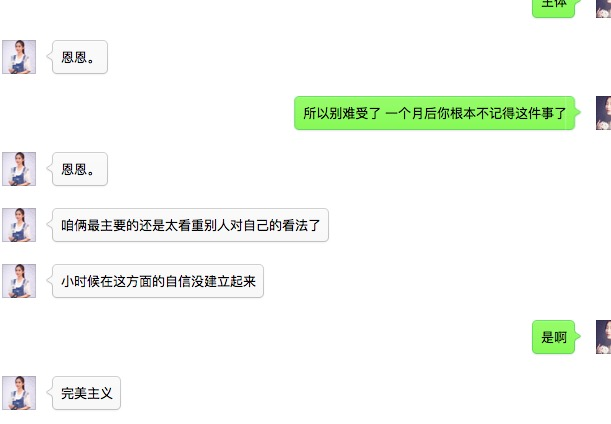 |
| 2016-08-08 16:32:32 | 我 | 是说太敏感吗 |
| 2016-08-08 16:32:41 | 你 | 恩 |
| 2016-08-08 16:32:49 | 你 | 敏感然后受伤 |
| 2016-08-08 16:33:27 | 我 | 你认为这个和潜意识有关？ |
| 2016-08-08 16:33:56 | 你 | 你看见我俩的聊天记录了吗 |
| 2016-08-08 16:34:01 | 你 | 我截屏给你的 |
| 2016-08-08 16:34:48 | 我 | 看了 |
| 2016-08-08 16:35:36 | 你 | 『敏感，不自信，希望得到别人的认可，同理心强』这些都是性格问题—>小时候造成的–>跟潜意识有关 |
| 2016-08-08 16:36:06 | 我 | 最后这步推理有问题 |
| 2016-08-08 16:36:18 | 你 | 有吗？ |
| 2016-08-08 16:36:46 | 我 | 你说的性格上的东西现在一般认为和基因相关 |
| 2016-08-08 16:37:18 | 我 | 和心理相关的比如你对出轨的恐惧，这个是潜意识的问题 |
| 2016-08-08 16:38:19 | 我 | 换句话说，潜意识大都对具体的事情，而你说的性格是一种普遍规律性的东西，很难直接和潜意识挂钩 |
| 2016-08-08 16:38:32 | 我 | 除非说到具体的事情上 |
| 2016-08-08 16:38:42 | 你 | 是啊 |
| 2016-08-08 16:38:58 | 你 | 但是自卑、自闭这种 抑郁 也是基因级别的吗 |
| 2016-08-08 16:39:05 | 你 | 跟环境不是也有关系 |
| 2016-08-08 16:39:06 | 我 | 这也是心理学最困难的部分，无法完全区分基因和后天性格 |
| 2016-08-08 16:39:14 | 我 | 你说的这些不是 |
| 2016-08-08 16:39:21 | 你 | 顺便说一句你上边说的 我听懂了 |
| 2016-08-08 16:39:31 | 你 | 以前我的理解确实是有点偏差 |
| 2016-08-08 16:39:42 | 你 | 哪些不是 |
| 2016-08-08 16:39:43 | 我 | 但是你得承认，有的人就容易自卑，有的人就不会自卑 |
| 2016-08-08 16:40:04 | 我 | 自卑、自闭这种 抑郁，这些不是 |
| 2016-08-08 16:40:56 | 你 | 不是什么 |
| 2016-08-08 16:41:03 | 我 | 性格内向的人容易抑郁。性格内向大部分是基因决定的，但是抑郁是环境造成的 |
| 2016-08-08 16:41:06 | 你 | 不是基因 还是不是后天的 |
| 2016-08-08 16:41:27 | 我 | 这就是内因和外因的关系。二者缺一不可 |
| 2016-08-08 16:41:36 | 我 | 基因决定内因 |
| 2016-08-08 16:42:24 | 我 | 环境决定外因 |
| 2016-08-08 16:45:47 | 我 | 这么说你明白了吗 |
| 2016-08-08 16:46:10 | 你 | 明白了 |
| 2016-08-08 17:01:55 | 我 | 我有一件事情想问你 |
| 2016-08-08 17:02:51 | 你 | 好啊 |
| 2016-08-08 17:02:53 | 你 | 问吧 |
| 2016-08-08 17:03:57 | 我 | 对于你来说，当一个产品经理是一个目标还是一个手段？ |
| 2016-08-08 17:04:28 | 你 | 目标吧 |
| 2016-08-08 17:04:56 | 你 | 等我真正成为产品经理了 可能还会变 |
| 2016-08-08 17:05:01 | 你 | 是个长期目标 |
| 2016-08-08 17:05:12 | 我 | 那我换一个问法 |
| 2016-08-08 17:05:14 | 你 | 一时半会出不来啊 哈哈 |
| 2016-08-08 17:05:18 | 你 | 嗯嗯 好 |
| 2016-08-08 17:05:41 | 我 | 在你知道产品经理之前，你有目标吗 |
| 2016-08-08 17:06:22 | 你 | 这个问题我也没办法回答啊 不知道你想问什么 |
| 2016-08-08 17:06:29 | 你 | 应该说有 |
| 2016-08-08 17:06:43 | 你 | 目标是做研发 学技术 |
| 2016-08-08 17:07:11 | 我 | 好吧，我告诉你我的想法吧 |
| 2016-08-08 17:08:15 | 你 | 好 |
| 2016-08-08 17:08:36 | 你 | 你是想问我为什么想做产品经理吗 |
| 2016-08-08 17:08:50 | 我 | 我是想知道你对人生的真正的目标是什么。比如如果你只是想当一个事业成功的人，那么当产品经理只是你实现事业成功的一种手段 |
| 2016-08-08 17:09:20 | 你 | 事业怎么样算成功呢 |
| 2016-08-08 17:09:26 | 你 | 没有上升空间吗 |
| 2016-08-08 17:09:28 | 我 | 还可以有其他的手段，比如当个营销专家 |
| 2016-08-08 17:10:10 | 你 | 那应该是手段 |
| 2016-08-08 17:10:38 | 你 | 目标和手段有什么区别吗 |
| 2016-08-08 17:10:42 | 我 | 对，这和我的感觉一样 |
| 2016-08-08 17:10:47 | 我 | 有区别 |
| 2016-08-08 17:10:50 | 我 | 比如说我 |
| 2016-08-08 17:11:06 | 我 | 我的目标就是程序设计，架构师 |
| 2016-08-08 17:11:19 | 我 | 不是事业成功 |
| 2016-08-08 17:11:31 | 你 | 恩 |
| 2016-08-08 17:11:32 | 我 | 所以我一直不离开技术一线 |
| 2016-08-08 17:11:38 | 你 | 恩 |
| 2016-08-08 17:11:40 | 你 | 明白 |
| 2016-08-08 17:11:44 | 我 | 不去当行政领导 |
| 2016-08-08 17:11:51 | 你 | 嗯嗯 |
| 2016-08-08 17:12:07 | 我 | 如果我的目标是事业成功，那么我去会去当行政领导 |
| 2016-08-08 17:12:41 | 你 | 嗯嗯 |
| 2016-08-08 17:14:44 | 你 | 没了啊？ |
| 2016-08-08 17:14:48 | 你 | 就问个这？ |
| 2016-08-08 17:14:51 | 我 | 有 |
| 2016-08-08 17:15:02 | 我 | 问这个当然是有目的的啦 |
| 2016-08-08 17:15:52 | 我 | 你现在的目标是产品经理，但是我认为这只是你的手段，那么你的目标到底是什么 |
| 2016-08-08 17:16:58 | 你 | 与你的技术相映射的东西我不知道 |
| 2016-08-08 17:17:11 | 你 | 因为我喜欢社交 |
| 2016-08-08 17:17:16 | 你 | 被关注 |
| 2016-08-08 17:17:26 | 你 | 所以我喜欢这种工作 |
| 2016-08-08 17:17:35 | 你 | 但是我不知道这个是什么 |
| 2016-08-08 17:17:38 | 我 | 嗯，这个才有可能是你的目标 |
| 2016-08-08 17:17:46 | 你 | 对啊 |
| 2016-08-08 17:18:29 | 你 | 而且我事业心重 希望我的出现会让别人有所不同 |
| 2016-08-08 17:18:35 | 你 | 等等吧 之类的 |
| 2016-08-08 17:18:46 | 你 | 包括汇报 |
| 2016-08-08 17:18:51 | 我 | 明白 |
| 2016-08-08 17:18:52 | 你 | 其实我也挺喜欢的 |
| 2016-08-08 17:19:07 | 你 | 给领导汇报啥的 这类的吧 |
| 2016-08-08 17:19:18 | 我 | 所以对你来说，职业并不重要 |
| 2016-08-08 17:19:35 | 你 | 对啊 |
| 2016-08-08 17:19:52 | 我 | 好的 |
| 2016-08-08 17:22:22 | 我 | 我问你这个是因为我在想未来如何帮你 |
| 2016-08-08 17:22:53 | 你 | 哈哈 |
| 2016-08-08 17:23:16 | 你 | 其实我大概能猜到 |
| 2016-08-08 17:23:25 | 你 | 因为以前你问过我差不多的问题 |
| 2016-08-08 17:23:34 | 我 | 你的目标是产品经理和你的目标是事业成功是不一样的 |
| 2016-08-08 17:24:59 | 你 | 说说呗 |
| 2016-08-08 17:25:52 | 我 | 如果你的目标是产品经理，那么我就多教一些产品经理的知识 |
| 2016-08-08 17:26:19 | 我 | 如果是事业成功那么我光教你产品经理的知识就不够了 |
| 2016-08-08 17:26:27 | 你 | 恩 |
| 2016-08-08 17:26:29 | 你 | 是 |
| 2016-08-08 17:26:41 | 你 | 不是我做不了研发 只是我志不在此 |
| 2016-08-08 17:26:46 | 你 | 真的 我很清楚这点 |
| 2016-08-08 17:27:05 | 你 | 所以我要学的不仅仅是知识这一层的规律 |
| 2016-08-08 17:27:18 | 我 | 你还记得火车上，你说过你对操控人心感兴趣 |
| 2016-08-08 17:27:26 | 你 | 嗯嗯 |
| 2016-08-08 17:27:28 | 你 | 记得 |
| 2016-08-08 17:27:35 | 我 | 我这两天就一直在思考这件事 |
| 2016-08-08 17:27:43 | 我 | 所以才会有刚才的问题 |
| 2016-08-08 17:27:47 | 你 | 哈哈 |
| 2016-08-08 17:28:47 | 我 | 现在我了解了，所以就知道该怎么教你了 |
| 2016-08-08 17:29:44 | 你 | 哈哈 |
| 2016-08-08 17:29:48 | 你 | 你太逗了 |
| 2016-08-08 17:29:57 | 你 | 我跟你说说我 背后的逻辑 |
| 2016-08-08 17:30:00 | 我 | 怎么了 |
| 2016-08-08 17:30:04 | 我 | 好的 |
| 2016-08-08 17:30:30 | 你 | 我想说 这个过程其实很难的 而且是个很漫长的过程 也是认识我自己的过程 |
| 2016-08-08 17:30:40 | 我 | 嗯 |
| 2016-08-08 17:31:02 | 你 | 我的动力之一 是我不想等几十年后 发现自己干的工作自己并不喜欢 |
| 2016-08-08 17:31:14 | 你 | 我想把兴趣当成工作 |
| 2016-08-08 17:31:52 | 你 | 记得六人行里Chandler |
| 2016-08-08 17:32:25 | 我 | 嗯 |
| 2016-08-08 17:32:32 | 你 | 他最后辞职了 换成自己喜欢的工作 自己快40了 跟20的一起竞争 |
| 2016-08-08 17:50:59 | 我 | 还有吗 |
| 2016-08-08 18:01:53 | 我 | ？ |
| 2016-08-08 18:02:19 | 你 | 不想说了 |
| 2016-08-08 18:02:25 | 你 | 下次再说吧 |
| 2016-08-08 18:02:28 | 你 | 这个也不重要 |
| 2016-08-08 18:02:35 | 我 | 怎么了，心情不好了？ |
| 2016-08-08 18:02:42 | 你 | 没有 |
| 2016-08-08 18:02:50 | 你 | 在想他们拆分的这个task |
| 2016-08-08 18:06:01 | 我 | 有问题吗 |
| 2016-08-08 18:06:11 | 我 | 需要我和你一起研究吗 |
| 2016-08-08 18:06:25 | 你 | 没啥大问题 |
| 2016-08-08 18:17:08 | 你 | 就是同步工具支持事务呗 |
| 2016-08-08 18:17:12 | 你 | 对吧 |
| 2016-08-08 18:17:29 | 我 | 对 |
| 2016-08-08 18:18:07 | 我 | 老田的思路就是项目的 |
| 2016-08-08 18:18:17 | 我 | 不是产品的 |
| 2016-08-08 18:18:30 | 你 | en |
| 2016-08-08 18:18:34 | 你 | 别理他 |
| 2016-08-08 18:39:22 | 你 | 我走了啊 |
| 2016-08-08 18:39:38 | 我 | 走吧 |
| 2016-08-08 18:39:50 | 我 | 晚上有人陪你吗 |
{kind=link}
2016-08-09¶
| 2016-08-09 08:32:19 | 你 | 昨天也没找你 |
| 2016-08-09 08:32:25 | 你 | 那个电视剧真的很好看 |
| 2016-08-09 08:32:49 | 我 | 嗯 |
| 2016-08-09 08:33:05 | 我 | 你高兴就好 |
| 2016-08-09 08:33:15 | 我 | 你今天还打球吗 |
| 2016-08-09 08:33:20 | 你 | 应该打 |
| 2016-08-09 08:33:34 | 我 | 好的 |
| 2016-08-09 08:36:36 | 你 | 你有没有怪我啊 |
| 2016-08-09 08:36:43 | 你 | 看电视剧也没跟你说下 |
| 2016-08-09 08:37:23 | 我 | 哈哈，其实有一点怪你，但是现在没事了，看见你就没事了，只剩下心疼你了 |
| 2016-08-09 08:38:05 | 你 | 真的很抱歉 我昨天回到家就想着看电视 |
| 2016-08-09 08:38:13 | 你 | 在我姐那的时候我们一起发现的 |
| 2016-08-09 08:38:18 | 我 | 没事的 |
| 2016-08-09 08:38:29 | 你 | 后来一看上就停不下来 |
| 2016-08-09 08:38:35 | 我 | 嗯 |
| 2016-08-09 08:38:49 | 你 | 我想我应该跟你说下的 结果不知道为啥就没说 |
| 2016-08-09 08:38:56 | 你 | 所以还是很抱歉 |
| 2016-08-09 08:39:06 | 我 | 没事 |
| 2016-08-09 08:41:04 | 我 | 咋啦 |
| 2016-08-09 08:41:41 | 你 | 有个飞虫 排死了 有血 |
| 2016-08-09 08:41:53 | 我 | 啊 |
| 2016-08-09 08:56:22 | 你 | 大叔 你说傅红雪怎么那么帅呢 |
| 2016-08-09 08:56:46 | 我 | 可爱呀 |
| 2016-08-09 10:36:06 | 我 | 你忙啥呢 |
| 2016-08-09 10:36:16 | 你 | 困呢 |
| 2016-08-09 10:36:47 | 我 | 睡会吧，你早上几点起的 |
| 2016-08-09 10:36:54 | 你 | 不睡 |
| 2016-08-09 10:43:46 | 我 | 要不你喝茶吧 |
| 2016-08-09 10:43:51 | 我 | 能提神 |
| 2016-08-09 10:44:46 | 你 | 不用 |
| 2016-08-09 10:56:29 | 你 | 我啥也不想干 |
| 2016-08-09 10:57:52 | 我 | 那就不干 |
| 2016-08-09 10:58:09 | 你 | 感觉自己啥也不会 |
| 2016-08-09 10:58:45 | 我 | ？ |
| 2016-08-09 11:41:57 | 你 | 怎么突然想起给我茶叶了 |
| 2016-08-09 11:42:20 | 我 | 早就想给你了 |
| 2016-08-09 11:42:37 | 你 | 多谢，我喝什么都行 |
| 2016-08-09 11:42:49 | 我 | 你买新杯子的时候就想给你，老是忘 |
| 2016-08-09 11:42:54 | 你 | 我现在沉浸到武侠剧里不能自拔了 |
| 2016-08-09 11:43:37 | 我 | 哈哈 |
| 2016-08-09 13:11:27 | 你 | 你没睡觉吗 |
| 2016-08-09 13:11:35 | 我 | 没有 |
| 2016-08-09 13:11:41 | 你 | 不困吗 |
| 2016-08-09 13:11:52 | 我 | 不困 |
| 2016-08-09 13:11:57 | 我 | 你睡好了吗 |
| 2016-08-09 13:12:14 | 你 | 还行吧 一直睡了醒 醒了睡的 |
| 2016-08-09 13:12:19 | 你 | 倒是睡着了 |
| 2016-08-09 13:12:32 | 你 | 我中午不能睡太多 |
| 2016-08-09 13:12:35 | 我 | 好的，下午别干活了 |
| 2016-08-09 13:13:00 | 你 | 为啥 |
| 2016-08-09 13:13:14 | 我 | 歇着吧 |
| 2016-08-09 13:13:24 | 我 | 晚上你还要打球呢 |
| 2016-08-09 13:13:56 | 你 | GoldenGate并不是对所有的数据库都支持ddl操作 Extract进程会捕获所有已配置的需要同步的对象变化，但只会将已提交的事务发送到远程的trail文件用于同步。当事务提交时，所有和该事务相关的 日志记录被以事务为单元顺序的记录到trail文件中。 |
| 2016-08-09 13:14:32 | 我 | 嗯 |
| 2016-08-09 13:14:51 | 你 | 这些我有的都看不懂 |
| 2016-08-09 13:15:14 | 我 | 没事的，这些都是技术细节 |
| 2016-08-09 13:16:04 | 我 | 你说说哪里不懂，我看看能不能给你解释一下 |
| 2016-08-09 13:16:31 | 你 | 『但只会将已提交的事务发送到远程的trail文件用于同步』 |
| 2016-08-09 13:16:36 | 你 | 这句话说明什么？ |
| 2016-08-09 13:16:51 | 我 | 你知道什么是事务吧 |
| 2016-08-09 13:17:01 | 你 | 知道 |
| 2016-08-09 13:17:07 | 你 | 当然！！！！！！ |
| 2016-08-09 13:17:49 | 我 | 他说的意思就是没有完成的事务不会同步 |
| 2016-08-09 13:18:03 | 我 | 提交的事务就是已完成的事务 |
| 2016-08-09 13:18:37 | 你 | 那跟我理解的一样的 |
| 2016-08-09 13:18:46 | 你 | 那这算是支持事务同步吗 |
| 2016-08-09 13:18:57 | 我 | 算 |
| 2016-08-09 13:19:15 | 你 | 那得记录事务开始和结束状态吧 |
| 2016-08-09 13:19:39 | 你 | 不然如何判断事务是否结束呢 |
| 2016-08-09 13:19:40 | 我 | 没错 |
| 2016-08-09 13:21:10 | 你 | Extract进程利用其内在的checkpoint机制，周期性的记录其读写的位置，这种机制是 为了保证Extract进程终止或操作系统当机，重新启动Extract后，GoldenGate可以恢复到之前的状态，从上一个断点继续往下运行。通过 上面的两个机制，就可以保证数据的完整性了。 |
| 2016-08-09 13:21:28 | 你 | 这个是断点续传机制跟事务支持没啥关系吧 |
| 2016-08-09 13:23:20 | 我 | 有 |
| 2016-08-09 13:24:14 | 我 | 这个checkpoint其实是和事务相关的，这里面的技术比较复杂 |
| 2016-08-09 13:24:56 | 我 | 简单一点说，checkpoint是保存事务的中间状态 |
| 2016-08-09 13:26:00 | 你 | 恩 |
| 2016-08-09 13:26:12 | 你 | 这个是回滚用的吗 |
| 2016-08-09 13:26:25 | 你 | 如果是已完成的事务就没用了吧 |
| 2016-08-09 13:26:35 | 我 | 这个主要是为了应对宕机用的 |
| 2016-08-09 13:27:01 | 我 | 已完成的就没用了 |
| 2016-08-09 13:27:17 | 你 | 宕机指的是通过你不工具宕机吗？ |
| 2016-08-09 13:28:13 | 我 | 在这指的是Extract，对于咱们就是读端 |
| 2016-08-09 13:31:55 | 我 | 还有问题吗 |
| 2016-08-09 13:32:04 | 你 | 我再看看啊 |
| 2016-08-09 13:32:33 | 我 | 好的，我需要重启一下路由器 |
| 2016-08-09 13:32:47 | 你 | 恩 |
| 2016-08-09 13:50:06 | 我 | 行了，你把手机换到606吧，这个比较快 |
| 2016-08-09 13:50:49 | 你 | 恩 |
| 2016-08-09 14:03:40 | 我 | 现在这个路由器隔几天就得重启一次，以前是每天早上我来重启 |
| 2016-08-09 14:04:03 | 你 | 哦 |
| 2016-08-09 14:05:00 | 你 | 我看OGG同步数据时 在目标端是在目标库执行一遍解析完的SQL语句 |
| 2016-08-09 14:05:03 | 你 | 咱们的是吗 |
| 2016-08-09 14:05:16 | 我 | 不是 |
| 2016-08-09 14:12:45 | 我 | 咱们现在对语句进行了合并 |
| 2016-08-09 14:13:05 | 我 | 所以咱们的模型其实是无法保证事务的 |
| 2016-08-09 14:13:06 | 你 | 是直接写到DC中吗 |
| 2016-08-09 14:13:17 | 我 | 不是，用的SQL |
| 2016-08-09 14:13:30 | 你 | 是执行顺序不一样吗 |
| 2016-08-09 14:13:38 | 我 | 同步工具是JAVA写的，只能使用JDBC |
| 2016-08-09 14:13:47 | 我 | 对，有不一致的情况 |
| 2016-08-09 14:13:55 | 你 | 晕了 |
| 2016-08-09 14:14:03 | 我 | 你还记得他们有一个故事是使用loader吗 |
| 2016-08-09 14:14:11 | 你 | 记得 全量的 |
| 2016-08-09 14:14:30 | 我 | 这个是用gbloader，直接写DC的 |
| 2016-08-09 14:14:42 | 你 | 那是忽略了所有的事务吗 |
| 2016-08-09 14:14:47 | 你 | 我晕了 啊啊啊啊啊 |
| 2016-08-09 14:15:45 | 我 | 你不晕才不对呢 |
| 2016-08-09 14:15:54 | 我 | 这里面太多的事情你不知道呢 |
| 2016-08-09 14:16:11 | 我 | 简单一点说就是咱们写入是不支持事务的 |
| 2016-08-09 14:16:53 | 我 | 在读端我们是解析事务，把事务里面的语句进行合并，在写端执行语句 |
| 2016-08-09 14:48:58 | 你 | format4 不支持包围符 |
| 2016-08-09 14:49:04 | 你 | 会报错 |
| 2016-08-09 14:49:24 | 我 | 我知道 |
| 2016-08-09 14:49:42 | 你 | 恩 |
| 2016-08-09 14:49:46 | 我 | 现在导出没说禁止，我们就做 |
| 2016-08-09 14:50:10 | 你 | 我说的是加载啊 导出我不知道 |
| 2016-08-09 14:50:39 | 我 | 是，这次导出和导入不对称了 |
| 2016-08-09 14:51:00 | 我 | 我也不打算指出来了 |
| 2016-08-09 14:51:08 | 你 | 本来就不一致啊 |
| 2016-08-09 14:51:12 | 我 | 折腾的时间太长了 |
| 2016-08-09 14:51:17 | 你 | 根本没关系 需求也没要求 |
| 2016-08-09 14:51:33 | 我 | 老田要求导出的可以导入 |
| 2016-08-09 14:51:53 | 你 | 需求根本没要求 当时评审的时候测试的就是这么提的 |
| 2016-08-09 14:52:05 | 你 | 需求的一直坚持 不需要导出的也可以导入 |
| 2016-08-09 14:53:59 | 我 | 我知道，关键是这些信息在文档里面都没有 |
| 2016-08-09 14:54:17 | 我 | 等到最后还不知道是什么样子呢 |
| 2016-08-09 14:54:31 | 你 | 满足软需不就行了 |
| 2016-08-09 14:55:25 | 我 | 你看吧，这个用户需求满足了，等哪天另一个现场一用，没准就就会这么要求 |
| 2016-08-09 14:55:41 | 我 | 到时候没准老杨又该骂人了 |
| 2016-08-09 14:55:50 | 你 | 那倒是 |
| 2016-08-09 14:56:01 | 你 | 那也不是研发的错 |
| 2016-08-09 14:56:14 | 你 | 再说老田怎么不搞清楚需求呢 |
| 2016-08-09 14:56:15 | 我 | 肯定不是这个样子的 |
| 2016-08-09 14:56:39 | 我 | 哪次不是说研发怎么连这个都想不到 |
| 2016-08-09 14:57:48 | 我 | 上次GBK的问题，楼下修复的，结果第一句还是说研发一组怎么没有做，后来才说测试 |
| 2016-08-09 14:58:08 | 你 | 恩 |
| 2016-08-09 14:58:21 | 你 | 那倒是 |
| 2016-08-09 15:22:11 | 我 | 你干啥呢 |
| 2016-08-09 15:22:25 | 你 | 看纯银的微博呢 |
| 2016-08-09 15:22:32 | 你 | 没事干 |
| 2016-08-09 15:22:46 | 我 | 好 |
| 2016-08-09 15:22:59 | 你 | 咱们现在同步工具要是有两条数据一样 delete的时候会造成数据不一致 |
| 2016-08-09 15:23:11 | 你 | 就得看业务数据了 |
| 2016-08-09 15:23:24 | 我 | 是，现在的方案是这样 |
| 2016-08-09 15:23:50 | 你 | 事务都是最终一致性的 |
| 2016-08-09 15:23:57 | 我 | 不是 |
| 2016-08-09 15:23:58 | 你 | 你看OGG不也是嘛 |
| 2016-08-09 15:24:05 | 你 | 哼 |
| 2016-08-09 15:24:17 | 我 | 亲，不是一回事的 |
| 2016-08-09 15:24:22 | 你 | 好吧 |
| 2016-08-09 15:24:26 | 我 | 事务是数据库的概念 |
| 2016-08-09 15:24:32 | 你 | 你有空给我讲讲 |
| 2016-08-09 15:24:44 | 我 | OGG是以事务为单位进行同步的 |
| 2016-08-09 15:25:03 | 你 | 不是我说的事务一致性指的是同步工具保证的是数据最终一致性 |
| 2016-08-09 15:25:06 | 我 | 同步是最终一致性，事务是强一致性 |
| 2016-08-09 15:25:52 | 你 | 恩 |
| 2016-08-09 15:35:08 | 你 | 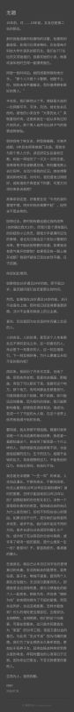 |
| 2016-08-09 15:35:18 | 你 | 你看过纯银的这篇文章吗 |
| 2016-08-09 15:36:22 | 我 | 看过 |
| 2016-08-09 15:37:39 | 我 | 你怎么看他写的 |
| 2016-08-09 15:40:11 | 你 | 你看他一直强调变化 |
| 2016-08-09 15:40:48 | 你 | 『回想起我历任的前女友们，没一个是我喜欢的类型』 |
| 2016-08-09 15:41:28 | 你 | 『知道自己过去为什么迷恋他们，却找不到现在还动心的理由』 |
| 2016-08-09 16:25:33 | 你 | 还在老范那吗 |
| 2016-08-09 16:26:05 | 我 | 回来了 |
| 2016-08-09 16:28:54 | 你 | 你今天比较忙啊 |
| 2016-08-09 16:29:33 | 我 | 是呗 |
| 2016-08-09 16:29:40 | 我 | 你几点去打球 |
| 2016-08-09 16:29:51 | 你 | 不知道 五点半或六点的 |
| 2016-08-09 16:30:23 | 我 | 今天人多吗 |
| 2016-08-09 16:30:34 | 你 | 不知道 |
| 2016-08-09 16:30:39 | 我 | 是去工大吗 |
| 2016-08-09 16:30:42 | 你 | 现在都不统计了 |
| 2016-08-09 16:30:47 | 你 | 去城建 |
| 2016-08-09 16:31:37 | 我 | 是公司组织的吗？ |
| 2016-08-09 16:31:44 | 你 | 是 |
| 2016-08-09 16:31:47 | 你 | 公司组织的 |
| 2016-08-09 16:31:59 | 我 | 好的 |
| 2016-08-09 16:32:09 | 我 | 我不干活了 |
| 2016-08-09 16:32:18 | 你 | 陪我？ |
| 2016-08-09 16:32:27 | 我 | 陪你 |
| 2016-08-09 16:33:32 | 我 | 你今天晚上还要看电视剧吧 |
| 2016-08-09 16:34:00 | 你 | 我回家吃完饭估计得9点了 |
| 2016-08-09 16:34:16 | 你 | 我得看心情 |
| 2016-08-09 16:34:34 | 我 | 你回家自己做饭吗 |
| 2016-08-09 16:34:46 | 你 | 恩 自己做点 |
| 2016-08-09 16:34:57 | 你 | 主要是得带饭 |
| 2016-08-09 16:35:09 | 你 | 要是不带饭我就随便吃点速食的就行 |
| 2016-08-09 16:35:19 | 我 | 是，好辛苦 |
| 2016-08-09 16:35:20 | 你 | 我今天吃炒凉皮 |
| 2016-08-09 16:35:30 | 我 | 对了，食堂空调好了吗 |
| 2016-08-09 16:35:33 | 你 | 不辛苦啦 主要是一个人 会害怕 |
| 2016-08-09 16:35:37 | 你 | 不知道 |
| 2016-08-09 16:35:51 | 你 | 吃饭的时候聊这个事了 |
| 2016-08-09 16:35:58 | 你 | 大家都会害怕 |
| 2016-08-09 16:36:06 | 我 | 嗯 |
| 2016-08-09 16:36:52 | 你 | 有什么声音的话 会精神紧绷 |
| 2016-08-09 16:37:05 | 你 | 男的会这样吗？你会害怕吗 |
| 2016-08-09 16:37:16 | 我 | 不会 |
| 2016-08-09 16:37:34 | 我 | 其实这是一种心理暗示 |
| 2016-08-09 16:37:45 | 你 | 什么 |
| 2016-08-09 16:38:13 | 我 | 平时有这些声音的时候，你自己不会有什么反应 |
| 2016-08-09 16:38:43 | 你 | 是 |
| 2016-08-09 16:38:47 | 我 | 当你缺乏安全感的时候，就会有这些反应了 |
| 2016-08-09 16:39:00 | 你 | 恩 |
| 2016-08-09 16:39:10 | 我 | 而你缺乏安全感就是一种心理暗示 |
| 2016-08-09 16:39:23 | 我 | 因为屋里少了一个人 |
| 2016-08-09 16:39:36 | 我 | 所以你会暗示自己现在没有以前安全 |
| 2016-08-09 16:39:37 | 你 | 然后呢 |
| 2016-08-09 16:39:42 | 你 | 哦 |
| 2016-08-09 16:39:44 | 你 | 原来如此 |
| 2016-08-09 16:39:59 | 我 | 我小时候会有这种情况 |
| 2016-08-09 16:40:12 | 我 | 后来我就暗示自己我是安全的 |
| 2016-08-09 16:40:29 | 你 | how？ |
| 2016-08-09 16:40:37 | 我 | 比如我会把家里所有的锁都检查一遍 |
| 2016-08-09 16:40:50 | 我 | 所有的窗户都锁好 |
| 2016-08-09 16:41:16 | 我 | 还有水槽的口都堵上等等 |
| 2016-08-09 16:41:42 | 我 | 确认不会有人或者其他动物能进来 |
| 2016-08-09 16:41:48 | 你 | 哈哈 |
| 2016-08-09 16:41:55 | 我 | 然后就会感觉比较安全了 |
| 2016-08-09 16:42:04 | 你 | 嗯嗯 |
| 2016-08-09 16:42:42 | 你 | 回去试试 |
| 2016-08-09 16:42:46 | 我 | 其实这也是一种心理暗示 |
| 2016-08-09 16:43:06 | 我 | 就是做一些能给自己理由认为安全的事情 |
| 2016-08-09 16:43:13 | 我 | 比如说反锁门 |
| 2016-08-09 16:43:20 | 我 | 开着大灯 |
| 2016-08-09 16:43:41 | 我 | 手边放一个棍子等等 |
| 2016-08-09 16:43:51 | 你 | 我的话因为没有人说话 所以我一定会打开电视 |
| 2016-08-09 16:44:00 | 我 | 还有一个最重要的 |
| 2016-08-09 16:44:01 | 你 | 让家里有动静 |
| 2016-08-09 16:44:09 | 你 | 还要放棍子啊 |
| 2016-08-09 16:44:13 | 我 | 就是自己一定要相信这些有用 |
| 2016-08-09 16:44:21 | 你 | 哈哈 |
| 2016-08-09 16:44:28 | 我 | 否则只会雪上加霜 |
| 2016-08-09 16:44:43 | 你 | 恩 |
| 2016-08-09 16:47:52 | 我 | 你昨天和你姐聊天说到太在意别人的看法，缺乏自信 |
| 2016-08-09 16:48:04 | 你 | 恩 |
| 2016-08-09 16:48:13 | 我 | 然后你还和我谈潜意识 |
| 2016-08-09 16:48:26 | 你 | 恩 |
| 2016-08-09 16:48:28 | 你 | 怎么了 |
| 2016-08-09 16:49:01 | 我 | 我想说说你们这个性格 |
| 2016-08-09 16:49:13 | 你 | 恩 说呗 |
| 2016-08-09 16:49:49 | 我 | 其实原因很多，很复杂。我先说简单的 |
| 2016-08-09 16:50:02 | 你 | 好 |
| 2016-08-09 16:50:10 | 我 | 首先是敏感 |
| 2016-08-09 16:50:50 | 我 | 你不像严丹那么大条 |
| 2016-08-09 16:51:00 | 你 | 恩 |
| 2016-08-09 16:51:17 | 我 | 其次就是安全感 |
| 2016-08-09 16:51:28 | 你 | 恩 |
| 2016-08-09 16:51:45 | 我 | 你昨天说的潜意识，在你身上的表现大多是安全感的问题 |
| 2016-08-09 16:52:03 | 你 | 你接着说 |
| 2016-08-09 16:52:16 | 你 | 我说过这句话吗？ |
| 2016-08-09 16:52:34 | 我 | 没有，我推断的 |
| 2016-08-09 16:52:52 | 你 | 这块有的错误 |
| 2016-08-09 16:52:55 | 你 | 点 |
| 2016-08-09 16:53:04 | 我 | 哪里 |
| 2016-08-09 16:53:15 | 你 | 主要是因为我把潜意识对人的影响搞乱了 |
| 2016-08-09 16:53:30 | 你 | 我以为性格的塑造由潜意识决定 |
| 2016-08-09 16:53:31 | 我 | 是 |
| 2016-08-09 16:53:38 | 你 | 后来你告诉我是基因 |
| 2016-08-09 16:53:48 | 你 | 还有一部分可能是潜意识的 |
| 2016-08-09 16:53:54 | 我 | 对 |
| 2016-08-09 16:54:12 | 我 | 内因和外因的关系 |
| 2016-08-09 16:54:13 | 你 | 我只是想跟你说 我的性格缺陷的那部分 我想改变 |
| 2016-08-09 16:54:21 | 你 | 但是不知道用什么方法 |
| 2016-08-09 16:54:36 | 我 | 好，我们就先说说你的性格缺陷 |
| 2016-08-09 16:54:48 | 你 | 我想到你说潜意识的 井绳的问题 是不是复现就会改变 |
| 2016-08-09 16:54:57 | 我 | 你认为你的性格有哪些缺陷 |
| 2016-08-09 16:55:08 | 你 | 不自信 |
| 2016-08-09 16:55:12 | 你 | 敏感 |
| 2016-08-09 16:55:18 | 你 | 太在意别人 |
| 2016-08-09 16:55:30 | 我 | 这些不一定是缺陷 |
| 2016-08-09 16:55:38 | 你 | 我正想说 |
| 2016-08-09 16:55:53 | 你 | 这不一定是缺陷 但它深深的影响我 |
| 2016-08-09 16:56:01 | 你 | 而且是坏的影响 |
| 2016-08-09 16:56:22 | 你 | 我觉得这种对自己性格的突破 也是提升的过程 |
| 2016-08-09 16:56:31 | 我 | 这倒是 |
| 2016-08-09 16:57:00 | 我 | 我可以帮你 |
| 2016-08-09 16:57:08 | 你 | 可是我觉得真的真的好难 |
| 2016-08-09 16:57:09 | 你 | 真的 |
| 2016-08-09 16:57:11 | 你 | 不骗你 |
| 2016-08-09 16:57:18 | 你 | 现在我姐遇到跟我一样的问题 |
| 2016-08-09 16:57:19 | 我 | 我知道 |
| 2016-08-09 16:57:38 | 我 | 你还记得你说的操控人心的事情吗 |
| 2016-08-09 16:57:39 | 你 | 道理差不多懂 但是还是不能指导自己的思想 |
| 2016-08-09 16:57:45 | 你 | 你先听我说玩 |
| 2016-08-09 16:57:46 | 你 | 完 |
| 2016-08-09 16:57:49 | 我 | 好的 |
| 2016-08-09 16:58:00 | 你 | 我怕一打断我就忘了 |
| 2016-08-09 16:59:18 | 你 | 就是比如王洪越 |
| 2016-08-09 16:59:27 | 你 | 我就是看不开 现在好多了 |
| 2016-08-09 16:59:41 | 我 | 好 |
| 2016-08-09 16:59:42 | 你 | 比如我姐一直纠结跟她领导的意见不一致 |
| 2016-08-09 16:59:52 | 你 | 然后就自己很生气 |
| 2016-08-09 17:00:03 | 你 | 觉得对方真的真的太奇葩 |
| 2016-08-09 17:00:13 | 你 | 世界上怎么会有这种人 |
| 2016-08-09 17:01:01 | 你 | 在我看来就是各种『不尊重客观规律（什么鸟都有）的逆势而为』 |
| 2016-08-09 17:01:04 | 你 | 很痛苦 |
| 2016-08-09 17:01:29 | 我 | 哦 |
| 2016-08-09 17:02:09 | 你 | 没有了 |
| 2016-08-09 17:03:29 | 我 | 你姐的事情我知道了，和你的情况不太一样，以后有空咱俩再聊 |
| 2016-08-09 17:03:39 | 我 | 我说我的 |
| 2016-08-09 17:03:52 | 你 | 好 |
| 2016-08-09 17:03:53 | 我 | 我说的会层次比较高 |
| 2016-08-09 17:03:56 | 你 | 嗯嗯 |
| 2016-08-09 17:04:07 | 你 | 你说吧 我又到瓶颈了 |
| 2016-08-09 17:04:44 | 我 | 还是举例吧，比如你晚上自己一个人在家会害怕 |
| 2016-08-09 17:04:50 | 你 | 恩 |
| 2016-08-09 17:04:57 | 我 | 我刚才说了这是一种心理暗示 |
| 2016-08-09 17:05:13 | 我 | 解决的办法也是心理暗示 |
| 2016-08-09 17:05:31 | 我 | 你还记得你说的操控人心的事情吗 |
| 2016-08-09 17:05:50 | 我 | 其实这也是一种对人心的操控，对自己的操控 |
| 2016-08-09 17:08:15 | 我 | 由于人的心理的复杂性，没有一个通用的特别有效的方法 |
| 2016-08-09 17:08:24 | 你 | 你说 我看着呢 |
| 2016-08-09 17:08:34 | 你 | 嗯嗯 |
| 2016-08-09 17:08:40 | 我 | 而且很多方法其实是有一定的条件的 |
| 2016-08-09 17:09:40 | 我 | 比如我刚才教给你的方法，核心就是一定要让自己所做的事情是有效的，否则你会感觉到更不安全，更会害怕 |
| 2016-08-09 17:10:14 | 我 | 我说我能帮你，是因为我自己和你一样，也是很敏感的人 |
| 2016-08-09 17:10:33 | 我 | 我自己在高中就意识到了自己的问题 |
| 2016-08-09 17:11:11 | 我 | 在上大学的时候阅读了大量的心理学的书，逐渐的自己慢慢治疗自己 |
| 2016-08-09 17:11:36 | 我 | 你现在看见我非常自信，甚至自负 |
| 2016-08-09 17:11:51 | 你 | 哈哈 |
| 2016-08-09 17:11:55 | 你 | 自负 |
| 2016-08-09 17:12:12 | 我 | 其实你不知道我当初比你还差，还不自信 |
| 2016-08-09 17:13:14 | 我 | 自信一方面来自于我自身的实力，另一部分来自于对自己治疗 |
| 2016-08-09 17:14:10 | 你 | 明白 |
| 2016-08-09 17:14:18 | 我 | 你所说的这些我大多经历过 |
| 2016-08-09 17:14:59 | 我 | 我猜你是不是认为你现在的性格的缺陷和你爸的行为也有很大关系 |
| 2016-08-09 17:15:43 | 你 | 对 |
| 2016-08-09 17:15:48 | 你 | 还有我姑姑 |
| 2016-08-09 17:16:34 | 我 | 我小时候也经常被我爸打 |
| 2016-08-09 17:17:10 | 你 | 我是精神摧残 |
| 2016-08-09 17:17:16 | 你 | 偶尔也会被打 |
| 2016-08-09 17:17:32 | 我 | 我告诉你一个秘密，不准告诉别人 |
| 2016-08-09 17:17:40 | 你 | 恩 |
| 2016-08-09 17:18:50 | 我 | 我小时候有一次考试考了95，有一道题做错了，我爸回家痛揍我一顿，中午不让我吃饭，让我吃白水煮萝卜 |
| 2016-08-09 17:19:05 | 我 | 从那以后我就不吃萝卜 |
| 2016-08-09 17:19:15 | 你 | 不是吧 |
| 2016-08-09 17:19:18 | 你 | 怎么会这样 |
| 2016-08-09 17:19:30 | 我 | 严重的时候一吃就呕吐 |
| 2016-08-09 17:19:45 | 我 | 现在我自己调节的已经很好了 |
| 2016-08-09 17:19:51 | 我 | 已经可以吃了 |
| 2016-08-09 17:20:09 | 我 | 但是还是尽量避免吃 |
| 2016-08-09 17:20:10 | 你 | 好吧 |
| 2016-08-09 17:20:54 | 我 | 而且你知道吗，我不是对萝卜敏感 |
| 2016-08-09 17:21:03 | 我 | 是对这个概念敏感 |
| 2016-08-09 17:21:12 | 你 | 知道 |
| 2016-08-09 17:21:38 | 我 | 有一次我姥姥家包饺子，有萝卜馅的 |
| 2016-08-09 17:22:32 | 我 | 他们都忘了，我也没吃出来，等吃完了，我舅妈突然说有萝卜馅的，我当时就吐了 |
| 2016-08-09 17:22:42 | 我 | 我自己就控制不住 |
| 2016-08-09 17:23:04 | 我 | 这就是心理对生理的影响 |
| 2016-08-09 17:23:28 | 我 | 这些事情你可千万别说出去 |
| 2016-08-09 17:23:55 | 我 | 还有我现在不爱吃鸡肉其实也是心理原因 |
| 2016-08-09 17:24:17 | 我 | 只是程度没有那么厉害，我也没有刻意去治疗 |
| 2016-08-09 17:24:56 | 你 | 真的好厉害啊 |
| 2016-08-09 17:25:19 | 你 | 我不说 |
| 2016-08-09 17:25:23 | 你 | 肯定不说 |
| 2016-08-09 17:25:59 | 我 | 所以我说我可以帮你 |
| 2016-08-09 17:26:14 | 你 | OK啦 |
| 2016-08-09 17:27:08 | 我 | 具体要怎么做，靠聊天是不行的，还是找时间面谈吧 |
| 2016-08-09 17:27:19 | 你 | 好 |
| 2016-08-09 17:31:46 | 我 | 咱俩是怎么聊到这的 |
| 2016-08-09 17:32:01 | 你 | 我本来想聊的就是这个 |
| 2016-08-09 17:32:23 | 我 | 哦 |
| 2016-08-09 17:40:06 | 你 | 工大的场地都被定出去了 |
| 2016-08-09 17:40:25 | 我 | 估计是 |
| 2016-08-09 17:40:37 | 我 | 不然他们早就定了 |
| 2016-08-09 17:44:09 | 我 | 你几点走 |
| 2016-08-09 17:44:20 | 你 | 等耿燕 |
| 2016-08-09 22:40:55 | 你 | 追剧中 |
| 2016-08-09 22:41:22 | 我 | 嗯，me too |
| 2016-08-09 22:41:34 | 你 | 什么剧 |
| 2016-08-09 22:42:34 | 我 | suits |
| 2016-08-09 23:01:01 | 我 | 洗澡去，回来接着追[呲牙] |
{kind=link}
2016-08-10¶
| 2016-08-10 08:44:03 | 你 | 嗨 昨天熬到几点 |
| 2016-08-10 08:44:15 | 我 | 12点吧，你呢 |
| 2016-08-10 08:44:30 | 你 | 我躺床上是12：48 |
| 2016-08-10 08:45:06 | 我 | 早上几点起的？ |
| 2016-08-10 08:45:22 | 你 | 7：41 |
| 2016-08-10 08:45:25 | 你 | 你呢 |
| 2016-08-10 08:45:40 | 我 | 我7.30就已经到了 |
| 2016-08-10 08:45:46 | 你 | 哈哈 |
| 2016-08-10 08:46:07 | 你 | 你说那个映射的用户故事写的还是有点简单 感觉 |
| 2016-08-10 08:46:24 | 我 | 嗯 |
| 2016-08-10 08:54:37 | 我 | 别忘了给手机充电 |
| 2016-08-10 08:55:00 | 你 | ？ |
| 2016-08-10 08:55:17 | 我 | 待会开会呀，好聊天 |
| 2016-08-10 08:55:34 | 你 | 开什么会？ |
| 2016-08-10 08:55:39 | 你 | 月会是明天 |
| 2016-08-10 08:55:51 | 我 | ，我记错了 |
| 2016-08-10 08:56:05 | 你 | 你以为今天是周四？ |
| 2016-08-10 08:56:06 | 你 | 哈哈 |
| 2016-08-10 08:56:08 | 我 | 我以为今天是周四呢 |
| 2016-08-10 08:56:39 | 你 | 好惨 |
| 2016-08-10 08:57:00 | 我 | 为啥惨 |
| 2016-08-10 08:57:19 | 你 | 要是以为是周二 比较好 |
| 2016-08-10 08:58:13 | 我 | 哦 |
| 2016-08-10 08:58:32 | 我 | 其实我是因为想和你聊天想的 |
| 2016-08-10 08:58:45 | 我 | 月会我就可以和你一直聊天 |
| 2016-08-10 08:58:56 | 我 | 平时没准我会有什么事情 |
| 2016-08-10 08:59:28 | 你 | 那倒是 |
| 2016-08-10 08:59:31 | 你 | 肯定得 |
| 2016-08-10 08:59:42 | 你 | 而且我最近一直追剧 也没聊 |
| 2016-08-10 09:00:35 | 我 | 嗯 |
| 2016-08-10 09:00:44 | 我 | 今天东东回来吗 |
| 2016-08-10 09:00:59 | 你 | 不回 |
| 2016-08-10 09:01:55 | 我 | 啊，这么久啦，说什么时候回来了吗 |
| 2016-08-10 09:03:12 | 你 | 不知道 |
| 2016-08-10 09:03:20 | 我 | 哦 |
| 2016-08-10 09:05:10 | 你 | 昨天晚上东东给我打电话 |
| 2016-08-10 09:05:15 | 你 | 说给我买七夕礼物 |
| 2016-08-10 09:05:24 | 你 | 说给我买件睡衣 |
| 2016-08-10 09:05:28 | 我 | 好呀 |
| 2016-08-10 09:05:56 | 你 | 是可爱型的 说着就说给她外甥女也买件 |
| 2016-08-10 09:06:01 | 你 | 我就生气了 |
| 2016-08-10 09:06:09 | 你 | 跟他发脾气 |
| 2016-08-10 09:06:12 | 我 | 啊 |
| 2016-08-10 09:06:18 | 我 | 有点过份呀 |
| 2016-08-10 09:06:32 | 你 | 说我肯定不要睡衣了 |
| 2016-08-10 09:06:41 | 我 | 嗯 |
| 2016-08-10 09:06:43 | 你 | 他爱给谁买给谁买 |
| 2016-08-10 09:06:58 | 你 | 他说都买了 我说别让我看见 |
| 2016-08-10 09:07:07 | 你 | 你说他多气人 |
| 2016-08-10 09:07:21 | 你 | 其实我也没要礼物 |
| 2016-08-10 09:07:26 | 你 | 我也不在乎这些 |
| 2016-08-10 09:07:37 | 你 | 你说买就买吧 还得给外甥女买 |
| 2016-08-10 09:07:41 | 我 | 是呢 |
| 2016-08-10 09:07:50 | 你 | 买也没事 |
| 2016-08-10 09:07:56 | 我 | 东东有点傻 |
| 2016-08-10 09:08:04 | 你 | 难不成非得七夕的时候给她买吗 |
| 2016-08-10 09:08:08 | 你 | 气死我了 |
| 2016-08-10 09:08:39 | 你 | 我早就跟他说过很多次 你要是给我买的东西 就是我的 多好多不坏我都不嫌弃 |
| 2016-08-10 09:08:45 | 你 | 关键是给我买的 |
| 2016-08-10 09:08:56 | 你 | 他老是说给我买 然后就给别人 |
| 2016-08-10 09:08:59 | 我 | 没错 |
| 2016-08-10 09:09:07 | 你 | 他姐 他外甥女 |
| 2016-08-10 09:10:19 | 我 | 算了，东东还不太懂事呢 |
| 2016-08-10 09:10:34 | 我 | 他就没意识到你是唯一的 |
| 2016-08-10 09:12:31 | 我 | 你今天还生气吗 |
| 2016-08-10 09:14:07 | 你 | 我也不知道 |
| 2016-08-10 09:14:12 | 你 | 反正当时很生气 |
| 2016-08-10 09:15:58 | 我 | 你今天头发有点乱 |
| 2016-08-10 09:16:18 | 你 | 昨天洗了 |
| 2016-08-10 09:16:30 | 我 | 嗯 |
| 2016-08-10 09:16:39 | 我 | 你应该扑点水 |
| 2016-08-10 09:16:53 | 你 | 没事 |
| 2016-08-10 09:16:58 | 你 | 就这样吧 |
| 2016-08-10 09:17:01 | 我 | 你用的什么洗发水，好像每次洗完了都有点干 |
| 2016-08-10 09:17:15 | 你 | 海飞丝滴 |
| 2016-08-10 09:17:20 | 我 | 你的发质应该是中性的吧 |
| 2016-08-10 09:17:43 | 你 | 是 |
| 2016-08-10 09:18:10 | 我 | 你试过潘婷的吗？ |
| 2016-08-10 09:18:37 | 你 | 上次用的就是 |
| 2016-08-10 09:18:41 | 我 | 你的头发之前染过，可以用一些滋润养护的 |
| 2016-08-10 09:18:44 | 你 | 啥都差不多 |
| 2016-08-10 09:19:10 | 我 | 那说明你自己不够上心 |
| 2016-08-10 09:19:14 | 你 | 昨天没吹干 就睡觉了 |
| 2016-08-10 09:20:12 | 我 | |
| 2016-08-10 09:20:32 | 我 | 刚才整理邮件的时候看见的 |
| 2016-08-10 09:20:57 | 你 | 哈哈 |
| 2016-08-10 09:21:36 | 我 | 照片比你现在胖 |
| 2016-08-10 09:21:52 | 你 | 那是我姐的照片 |
| 2016-08-10 09:22:15 | 我 | 啊 |
| 2016-08-10 09:24:00 | 我 | 你果然很调皮 |
| 2016-08-10 09:24:18 | 你 | 哈哈 我没有那么正式的照片 |
| 2016-08-10 09:24:24 | 你 | 就找了个我姐姐的 |
| 2016-08-10 09:25:54 | 我 | 确实看不出来 |
| 2016-08-10 09:25:59 | 你 | 哈哈 |
| 2016-08-10 09:26:11 | 你 | 我工卡上 oa上都是这张 |
| 2016-08-10 09:26:20 | 我 | 嗯 |
| 2016-08-10 09:26:36 | 我 | 我见过你的工卡，一直以为是你以前的 |
| 2016-08-10 09:27:26 | 你 | 被骗了吧 |
| 2016-08-10 09:27:28 | 你 | 哈哈 |
| 2016-08-10 09:27:41 | 我 | 是 |
| 2016-08-10 09:31:35 | 我 | 你这就是操纵了人心。利用了人性中的盲点 |
| 2016-08-10 10:00:18 | 你 | 哦哦 咋了 |
| 2016-08-10 10:00:21 | 你 | 吵啥呢 |
| 2016-08-10 10:00:32 | 我 | 技术上的事情 |
| 2016-08-10 10:02:03 | 你 | 这个方案是宋文斌写的吗 |
| 2016-08-10 10:02:12 | 我 | 不是，王东江的 |
| 2016-08-10 10:02:38 | 我 | 其实和方案无关，是自测的时候发现的一个bug |
| 2016-08-10 10:03:10 | 你 | [闭嘴] |
| 2016-08-10 10:05:01 | 我 | 嗯 |
| 2016-08-10 10:15:23 | 我 | 你忙啥呢 |
| 2016-08-10 10:17:08 | 你 | 写一个用需 |
| 2016-08-10 10:17:32 | 我 | 什么的 |
| 2016-08-10 10:18:05 | 你 | 一个PST提的 |
| 2016-08-10 10:18:10 | 你 | 帮助信息不全 |
| 2016-08-10 10:18:13 | 你 | 33420 |
| 2016-08-10 10:18:18 | 我 | 好的 |
| 2016-08-10 10:18:32 | 你 | 你跟杨丽英没事吧 |
| 2016-08-10 10:18:36 | 你 | 暗流涌动 |
| 2016-08-10 10:19:07 | 我 | 不知道，这取决于她 |
| 2016-08-10 10:20:22 | 你 | 你没事就好 |
| 2016-08-10 10:20:30 | 你 | 她我就更不关心了 |
| 2016-08-10 10:20:42 | 我 | 我没事 |
| 2016-08-10 10:20:51 | 我 | 我的心思都在你身上 |
| 2016-08-10 10:21:00 | 你 | 那好吧 |
| 2016-08-10 10:21:11 | 我 | 还在担心你会不会因为东东心情不好呢 |
| 2016-08-10 10:22:04 | 你 | 没事拉 本来也没啥事 |
| 2016-08-10 10:39:14 | 你 | 你干嘛呢 |
| 2016-08-10 10:39:32 | 我 | 没事干 |
| 2016-08-10 10:40:17 | 我 | 你写完了？ |
| 2016-08-10 10:41:06 | 你 | 没呢 |
| 2016-08-10 10:41:24 | 我 | 你写吧 |
| 2016-08-10 10:41:35 | 你 | 哦 |
| 2016-08-10 10:41:49 | 我 | 怎么了 |
| 2016-08-10 10:42:07 | 你 | meishi |
| 2016-08-10 10:42:23 | 你 | 我从哪看gccli都支持哪些参数啊 |
| 2016-08-10 10:42:31 | 你 | 手册里有吗 |
| 2016-08-10 10:42:43 | 我 | 你就按照手册写吧 |
| 2016-08-10 10:43:00 | 你 | 手册里哪有啊 没找到 |
| 2016-08-10 10:43:30 | 我 | 我也不知道 |
| 2016-08-10 10:43:41 | 你 | 找到了 |
| 2016-08-10 10:44:19 | 我 | 好的 |
| 2016-08-10 11:14:04 | 我 | 今天中午我们吃饭的人少 |
| 2016-08-10 11:14:14 | 我 | 就仨人 |
| 2016-08-10 11:34:48 | 你 | 你看领导 |
| 2016-08-10 11:34:58 | 我 | 怎么啦 |
| 2016-08-10 11:34:59 | 你 | 跟洪越 |
| 2016-08-10 11:35:00 | 你 | 唉 |
| 2016-08-10 11:35:32 | 我 | 没办法，洪越想法有问题 |
| 2016-08-10 11:39:15 | 你 | 你看领导对他跟耿燕的态度多像 |
| 2016-08-10 11:39:52 | 你 | 都是自己zuo 出来了的 |
| 2016-08-10 11:40:07 | 我 | 是 |
| 2016-08-10 11:48:02 | 我 | 我今天本来就想和你聊聊你姐的事情，就是如何和领导相处的问题 |
| 2016-08-10 11:48:55 | 你 | 恩 |
| 2016-08-10 11:48:57 | 你 | 好 |
| 2016-08-10 11:49:13 | 我 | 我以为今天月会，能有时间和你好好聊呢[呲牙] |
| 2016-08-10 11:50:27 | 我 | 等下午有空再聊吧 |
| 2016-08-10 11:50:47 | 我 | 或者找时间面谈也行 |
| 2016-08-10 13:17:47 | 你 | OK |
| 2016-08-10 13:17:58 | 我 | 醒了 |
| 2016-08-10 13:18:09 | 你 | 5分就醒了 |
| 2016-08-10 13:18:17 | 你 | 你没睡？ |
| 2016-08-10 13:18:25 | 我 | 没有，今天不困 |
| 2016-08-10 13:18:33 | 我 | 我好像有点兴奋 |
| 2016-08-10 13:18:47 | 你 | 为啥兴奋 |
| 2016-08-10 13:18:53 | 你 | 我看你最近心情不错 |
| 2016-08-10 13:18:57 | 我 | 不知道呢 |
| 2016-08-10 13:19:21 | 我 | 是，最近比以前好了很多 |
| 2016-08-10 13:19:46 | 你 | 好吧 |
| 2016-08-10 13:20:02 | 你 | 没理由、 |
| 2016-08-10 13:20:03 | 你 | ？ |
| 2016-08-10 13:20:18 | 我 | 肯定有 |
| 2016-08-10 13:20:30 | 我 | 不过我得想想 |
| 2016-08-10 13:21:05 | 我 | 好像不只一个原因 |
| 2016-08-10 13:21:15 | 你 | 别想了 想那干啥 |
| 2016-08-10 13:21:27 | 我 | 因为你问呀 |
| 2016-08-10 13:21:58 | 你 | 别想了 |
| 2016-08-10 13:22:01 | 你 | 我随便问的 |
| 2016-08-10 13:22:14 | 我 | 好的 |
| 2016-08-10 14:02:11 | 我 | 困了 |
| 2016-08-10 15:11:32 | 我 | 你去哪了 |
| 2016-08-10 15:20:09 | 你 | 开会 |
| 2016-08-10 15:20:24 | 你 | 企业管理器支持UP的需求收集会 |
| 2016-08-10 15:20:39 | 我 | 番薯的吗 |
| 2016-08-10 15:20:43 | 你 | 是 |
| 2016-08-10 15:21:00 | 我 | 知道了 |
| 2016-08-10 15:21:12 | 我 | 怎么样 |
| 2016-08-10 15:30:22 | 你 | 没啥事 |
| 2016-08-10 15:30:27 | 你 | 就是需求收集 |
| 2016-08-10 15:30:31 | 我 | 好的 |
| 2016-08-10 15:40:55 | 我 | 我知道我心情好的原因之一了，就是你。 |
| 2016-08-10 15:41:18 | 我 | 你刚才去开会的这段时间我就明显没有心情了 |
| 2016-08-10 15:41:50 | 你 | 哈哈 |
| 2016-08-10 15:41:54 | 你 | 我只是之一 |
| 2016-08-10 15:41:55 | 你 | 哈哈 |
| 2016-08-10 15:42:26 | 我 | 嗯，我倒是害怕是唯一的原因 |
| 2016-08-10 15:42:31 | 你 | 哈哈 |
| 2016-08-10 16:14:39 | 我 | 你忙啥呢 |
| 2016-08-10 16:14:57 | 你 | 我姐写了个PPT 让我帮他看下 |
| 2016-08-10 16:15:09 | 我 | 好的，等你 |
| 2016-08-10 16:15:17 | 你 | 我看完了 |
| 2016-08-10 16:16:27 | 我 | 好 |
| 2016-08-10 16:16:32 | 我 | 我也没事了 |
| 2016-08-10 16:16:38 | 你 | 那聊天呗 |
| 2016-08-10 16:17:35 | 我 | 好呀 |
| 2016-08-10 16:20:53 | 我 | 咱俩聊啥呀 |
| 2016-08-10 16:21:26 | 你 | 不知道 |
| 2016-08-10 16:21:55 | 我 | 你知道我发现一个你的规律 |
| 2016-08-10 16:22:05 | 你 | 说说 |
| 2016-08-10 16:22:30 | 我 | 你要是有事，你会不停的和我说，说很多 |
| 2016-08-10 16:22:47 | 我 | 等事情说完了，你就会突然非常安静 |
| 2016-08-10 16:22:54 | 你 | 是？ |
| 2016-08-10 16:24:07 | 我 | 这么说吧，你心里有事的时候，你会和我说，而且会说很多 |
| 2016-08-10 16:24:22 | 你 | 憋不住是吗 |
| 2016-08-10 16:24:23 | 我 | 一旦把事情说明白了，你就突然安静了 |
| 2016-08-10 16:24:31 | 我 | 有点像 |
| 2016-08-10 16:24:39 | 你 | 不然呢 不明白的话的肯定要问的 |
| 2016-08-10 16:24:54 | 你 | 而且我心里特别不能藏事 |
| 2016-08-10 16:25:07 | 你 | 这个彩虹糖都是我不喜欢的口味的 |
| 2016-08-10 16:25:21 | 我 | 我只是描述我感觉到的 |
| 2016-08-10 16:25:34 | 我 | 你买的时候没看口味吗 |
| 2016-08-10 16:25:41 | 你 | 没有 东东买的 |
| 2016-08-10 16:25:45 | 你 | 嘿嘿 |
| 2016-08-10 16:25:51 | 你 | 哈哈 |
| 2016-08-10 16:26:08 | 我 | 那你应该告诉他 |
| 2016-08-10 16:26:18 | 你 | 我要是说个没完 说明我还有事 |
| 2016-08-10 16:26:27 | 你 | 他不是给我买的 |
| 2016-08-10 16:26:44 | 我 | 哦 |
| 2016-08-10 16:26:46 | 你 | 可能是想给小孩买的 结果放车里了 我那天拿过来 |
| 2016-08-10 16:27:01 | 我 | 哈哈 |
| 2016-08-10 16:27:29 | 你 | 你知道吗 |
| 2016-08-10 16:27:42 | 你 | 我发现我对领导一点没有原来的那种感觉了 |
| 2016-08-10 16:27:46 | 你 | 你说多奇怪 |
| 2016-08-10 16:27:55 | 你 | 无聊 随便说的啊 |
| 2016-08-10 16:27:56 | 我 | 正常呀 |
| 2016-08-10 16:28:00 | 你 | 啊？？？ |
| 2016-08-10 16:28:03 | 你 | 真的吗 |
| 2016-08-10 16:28:06 | 我 | 是 |
| 2016-08-10 16:28:15 | 我 | 很正常 |
| 2016-08-10 16:28:19 | 你 | 而且跟他说话也不那么紧张了 |
| 2016-08-10 16:28:27 | 你 | 你说说这背后的逻辑 |
| 2016-08-10 16:28:52 | 我 | 我说不好，因为我不是很了解你的心理变化 |
| 2016-08-10 16:29:07 | 我 | 我说正常有两个原因 |
| 2016-08-10 16:29:13 | 你 | 你还不了解啊 我把我的想法都跟你说了 |
| 2016-08-10 16:29:30 | 我 | 不是的 |
| 2016-08-10 16:29:52 | 我 | 我的意思是说我没有深挖你的心理 |
| 2016-08-10 16:29:58 | 你 | 恩 |
| 2016-08-10 16:30:06 | 我 | 也没有去分析你和领导之间的事情 |
| 2016-08-10 16:30:07 | 你 | 那说说你的原因 |
| 2016-08-10 16:30:11 | 你 | 恩 好 |
| 2016-08-10 16:31:06 | 我 | 第一个原因是这种变化符合心理学里面的一些规律，我知道这些规律，但是没法准确的表述出来 |
| 2016-08-10 16:31:31 | 你 | 嗯嗯 |
| 2016-08-10 16:32:09 | 你 | 只是这些事发生在我身上挺奇怪的 |
| 2016-08-10 16:32:15 | 我 | 第二个原因是你对我也有类似的心理变化。我是说有变化，不是说你有相同的感觉 |
| 2016-08-10 16:32:37 | 我 | 你觉得哪里奇怪 |
| 2016-08-10 16:33:37 | 你 | 哦 |
| 2016-08-10 16:33:55 | 你 | 你这个问题这么说吧 |
| 2016-08-10 16:34:33 | 你 | 你的话呢 我觉得我以前有感觉后来没了 是因为你的活动对我有影响 |
| 2016-08-10 16:34:52 | 我 | 嗯 |
| 2016-08-10 16:34:54 | 你 | 或者说 咱们沟通太频繁了 聊的也比较深 |
| 2016-08-10 16:34:59 | 你 | 但是领导不一样啊 |
| 2016-08-10 16:35:13 | 你 | 你的话说来话长 |
| 2016-08-10 16:36:00 | 你 | 我现在也不知道你真正吸引我到喜欢你的程度 的东西是什么 |
| 2016-08-10 16:36:18 | 你 | 现在有印象的就是你的一件衬衣穿着很好看 |
| 2016-08-10 16:36:30 | 我 | 哈哈 |
| 2016-08-10 16:37:28 | 你 | 你别笑 |
| 2016-08-10 16:37:54 | 你 | 当时真的特别喜欢 很性感 |
| 2016-08-10 16:37:56 | 你 | 哈哈 |
| 2016-08-10 16:38:09 | 你 | 你看我当时说喜欢领导也是他的衣服 |
| 2016-08-10 16:38:20 | 我 | 是 |
| 2016-08-10 16:38:24 | 你 | 可能这就是传说中的感觉吧 |
| 2016-08-10 16:38:35 | 我 | 是 |
| 2016-08-10 16:39:26 | 你 | 你看你对我很好 |
| 2016-08-10 16:39:30 | 你 | 平时 |
| 2016-08-10 16:39:41 | 你 | 很照顾我 |
| 2016-08-10 16:39:49 | 你 | 生活上也有 工作上也有 |
| 2016-08-10 16:39:55 | 你 | 但是我全忘了 |
| 2016-08-10 16:40:02 | 我 | 哦 |
| 2016-08-10 16:40:04 | 你 | 只记得你穿衬衣的样子 |
| 2016-08-10 16:40:13 | 你 | 还有在我家 脱毛衣的样子 |
| 2016-08-10 16:40:21 | 你 | 这两个场景非常深刻 |
| 2016-08-10 16:40:40 | 你 | 包括你技术很牛 |
| 2016-08-10 16:40:44 | 你 | 我都忘了 |
| 2016-08-10 16:41:04 | 我 | 唉，我好伤心呀[流泪] |
| 2016-08-10 16:41:12 | 你 | 哈哈 |
| 2016-08-10 16:41:14 | 你 | 别伤心 |
| 2016-08-10 16:41:22 | 你 | 但是我记住都是最美好的 |
| 2016-08-10 16:41:24 | 你 | 多好 |
| 2016-08-10 16:41:29 | 我 | 是 |
| 2016-08-10 16:41:39 | 你 | 你发脾气的我也没记着啊 |
| 2016-08-10 16:41:40 | 你 | 笨蛋 |
| 2016-08-10 16:41:51 | 我 | 我知道[微笑] |
| 2016-08-10 16:42:12 | 我 | 我可以给你找到一种解释 |
| 2016-08-10 16:42:16 | 你 | 好 |
| 2016-08-10 16:42:19 | 你 | 我听听 |
| 2016-08-10 16:42:53 | 我 | 首先是因为你是感性的 |
| 2016-08-10 16:43:08 | 你 | 恩 没逻辑 |
| 2016-08-10 16:43:13 | 我 | 对 |
| 2016-08-10 16:43:32 | 我 | 所以你的记忆应该是以感性作为索引的 |
| 2016-08-10 16:43:50 | 你 | 是 |
| 2016-08-10 16:44:24 | 你 | 我绝对是外貌协会的 |
| 2016-08-10 16:44:41 | 我 | 你说的忘记的我的那些东西其实都在你的脑子里，只是不是索引，不能一下就想起来 |
| 2016-08-10 16:45:00 | 我 | 对，这是你的基因决定的 |
| 2016-08-10 16:45:01 | 你 | 恩 是 |
| 2016-08-10 16:45:07 | 你 | 真的啊？ |
| 2016-08-10 16:45:27 | 我 | 是，你的基因决定了你对外貌敏感 |
| 2016-08-10 16:45:33 | 我 | 但是 |
| 2016-08-10 16:46:02 | 我 | 你其实还注重内涵 |
| 2016-08-10 16:46:20 | 我 | 这么说吧，外貌只是第一层过滤器 |
| 2016-08-10 16:46:34 | 你 | 那必须的 |
| 2016-08-10 16:46:43 | 我 | 先保留基因优秀的 |
| 2016-08-10 16:46:52 | 我 | 然后再继续筛选 |
| 2016-08-10 16:47:02 | 我 | 我说的对吧 |
| 2016-08-10 16:47:15 | 你 | 对 |
| 2016-08-10 16:47:22 | 你 | 哈哈 |
| 2016-08-10 16:47:27 | 你 | 太逗了 |
| 2016-08-10 16:47:28 | 我 | 所以你是个感性的人 |
| 2016-08-10 16:47:36 | 你 | 超级感性 |
| 2016-08-10 16:48:13 | 我 | 是，但是你的内心是理性的 |
| 2016-08-10 16:48:31 | 你 | 说说 |
| 2016-08-10 16:48:34 | 我 | 你是不是打算反驳我啦[呲牙] |
| 2016-08-10 16:48:42 | 你 | 没有 |
| 2016-08-10 16:48:49 | 你 | 我也不是一点理性都没有 |
| 2016-08-10 16:49:57 | 我 | 你的理性是处于一种介于无意识和自发之间的一种状态，就是有点随性的感觉，不是能很好的控制 |
| 2016-08-10 16:50:39 | 我 | 表现就是有时候会特别理性，有时候就又不那么理性。而且理性出现的也有一定的随机性 |
| 2016-08-10 16:51:04 | 我 | 同样的场景或者事情，以前能理性不代表以后同样会理性 |
| 2016-08-10 17:25:51 | 你 | 啊？ |
| 2016-08-10 17:26:09 | 我 | 咋了 |
| 2016-08-10 17:30:25 | 你 | 不聊了啊 |
| 2016-08-10 17:30:30 | 你 | 还没聊完呢 |
| 2016-08-10 17:30:40 | 我 | 聊呀 |
| 2016-08-10 17:30:58 | 我 | 你看看我说的有道理吗 |
| 2016-08-10 17:31:17 | 你 | 是对的 |
| 2016-08-10 17:35:59 | 我 | 好了，我觉得这个有结论了 |
| 2016-08-10 17:37:55 | 你 | 什么结论 |
| 2016-08-10 17:38:20 | 我 | 你的性格呀，感性加理性 |
| 2016-08-10 17:38:28 | 我 | 感性为主，理性为辅 |
| 2016-08-10 17:38:48 | 我 | 你现在是想让自己是理性为主的，对不对 |
| 2016-08-10 17:39:04 | 你 | 对 |
| 2016-08-10 17:39:24 | 你 | 你知道咱俩聊的是啥吗 |
| 2016-08-10 17:39:30 | 我 | 这就不是聊天能解决的问题了 |
| 2016-08-10 17:39:32 | 你 | 最开始我的问题 |
| 2016-08-10 17:39:42 | 我 | 我知道，领导的事情 |
| 2016-08-10 17:39:56 | 我 | 然后说到我 |
| 2016-08-10 17:40:15 | 我 | 然后我给你讲这里面的规律性的东西 |
| 2016-08-10 17:40:25 | 我 | 最后就得到这个结论了 |
| 2016-08-10 17:40:40 | 你 | 那我为什么对领导没感觉了呢 |
| 2016-08-10 17:40:45 | 你 | 而且一点没了 |
| 2016-08-10 17:42:01 | 我 | 我说不好 |
| 2016-08-10 17:42:15 | 我 | 我刚才说了，我没有分析过 |
| 2016-08-10 17:42:38 | 我 | 我直觉是因为你的理性 |
| 2016-08-10 17:43:45 | 你 | 恩 你说的很对 |
| 2016-08-10 17:43:52 | 你 | 应该是 |
| 2016-08-10 17:44:17 | 我 | 你知道我突然想到什么吗 |
| 2016-08-10 17:44:28 | 我 | 你姐会不会和你一样 |
| 2016-08-10 17:44:46 | 你 | 一样 |
| 2016-08-10 17:45:03 | 我 | 明白了 |
| 2016-08-10 17:45:12 | 你 | 我给你说个现象 |
| 2016-08-10 17:45:19 | 你 | 或者更偏重规律 |
| 2016-08-10 17:45:24 | 我 | 好的 |
| 2016-08-10 17:46:13 | 你 | 我从小就跟我姐一起 经历几乎是一样的 包括需求的满足上 |
| 2016-08-10 17:46:34 | 你 | 我俩上大学后就不一样了 在不同的环境下上学 |
| 2016-08-10 17:46:47 | 你 | 那时候我发现跟 我姐越来越不像 |
| 2016-08-10 17:46:48 | 我 | 嗯 |
| 2016-08-10 17:47:01 | 你 | 我以为我俩会变得不像 |
| 2016-08-10 17:47:23 | 你 | 然后前后有8，9年的时间 不在一起 |
| 2016-08-10 17:47:34 | 我 | 嗯 |
| 2016-08-10 17:47:51 | 你 | 但是 从我工作后 我发现我俩又开始一模一样了 |
| 2016-08-10 17:48:05 | 你 | 我想说 影响性格的都是上大学以前 |
| 2016-08-10 17:48:24 | 你 | 上大学几乎对我俩的性格塑造没有造成任何影响 |
| 2016-08-10 17:48:36 | 我 | 嗯 |
| 2016-08-10 17:48:42 | 你 | 我们工作后 处理事情的方式 还是基于大学以前 |
| 2016-08-10 17:49:06 | 你 | 但是我俩还是有点区别 |
| 2016-08-10 17:49:11 | 你 | 我俩的感情路不一样 |
| 2016-08-10 17:49:29 | 你 | 我更大胆一些我觉得 |
| 2016-08-10 17:49:35 | 你 | 我姐会比我保守 |
| 2016-08-10 17:49:42 | 我 | 嗯 |
| 2016-08-10 17:50:10 | 你 | 我听着李杰给我描述的工作中的那些事 |
| 2016-08-10 17:50:17 | 你 | 就跟我一样一样的 |
| 2016-08-10 17:50:24 | 你 | 只是换了一帮人 |
| 2016-08-10 17:50:25 | 我 | |
| 2016-08-10 17:50:32 | 你 | 换了事情的内容 |
| 2016-08-10 17:50:44 | 你 | 我们是数据库 他们是电商 |
| 2016-08-10 17:50:48 | 你 | 其他的根本没区别 |
| 2016-08-10 17:50:49 | 你 | 真的 |
| 2016-08-10 17:50:52 | 你 | 多神奇 |
| 2016-08-10 17:51:04 | 你 | 就是方向是一样的 |
| 2016-08-10 17:51:16 | 你 | 但是现在我比她强很多 |
| 2016-08-10 17:51:27 | 你 | 每次都是我给她讲东西 |
| 2016-08-10 17:51:28 | 我 | 嗯 |
| 2016-08-10 17:51:34 | 你 | 我也会批评她 |
| 2016-08-10 17:51:35 | 你 | 哈哈 |
| 2016-08-10 17:51:38 | 我 | |
| 2016-08-10 17:51:51 | 你 | 会说她没长进 |
| 2016-08-10 17:51:55 | 你 | 只是量变 |
| 2016-08-10 17:51:58 | 你 | 没有质变 |
| 2016-08-10 17:52:20 | 你 | 但是我俩沟通起来 效率特别高 |
| 2016-08-10 17:52:24 | 你 | 特别高 |
| 2016-08-10 17:52:30 | 我 | 嗯 |
| 2016-08-10 17:52:31 | 你 | 你都想象不到多高 |
| 2016-08-10 17:52:47 | 我 | 我 真想亲眼看看 |
| 2016-08-10 17:52:58 | 你 | 哈哈 |
| 2016-08-10 17:53:14 | 你 | 那种感觉太美妙了 |
| 2016-08-10 17:53:26 | 你 | 就像我看过的一部电影 |
| 2016-08-10 17:53:28 | 我 | 是，我知道那种感觉 |
| 2016-08-10 17:53:48 | 你 | 《爱在黎明破晓前》 |
| 2016-08-10 17:53:59 | 你 | 爱情三部曲里的 |
| 2016-08-10 17:54:26 | 你 | 我以前认为我姐不爱听 |
| 2016-08-10 17:54:39 | 你 | 现在想想 他跟我一样渴望这些指点 |
| 2016-08-10 17:54:46 | 我 | 哦 |
| 2016-08-10 17:54:50 | 你 | 就像我当初渴望你指点我一样 |
| 2016-08-10 17:55:05 | 我 | 哦 |
| 2016-08-10 17:55:22 | 我 | 你怎么觉得她不爱听呢 |
| 2016-08-10 17:55:37 | 你 | 你怎么觉得的 |
| 2016-08-10 17:56:32 | 你 | 咱们的同步工具对事务的支持等这些做完就该做了 |
| 2016-08-10 17:56:43 | 我 | 是 |
| 2016-08-10 17:57:05 | 我 | 我现在已经非常习惯你的思维跳跃了 |
| 2016-08-10 17:57:33 | 你 | 哈哈 |
| 2016-08-10 17:57:34 | 我 | 我想问的是你是从你姐的什么行为上判断她不爱听的 |
| 2016-08-10 17:57:35 | 你 | 哈哈 |
| 2016-08-10 17:58:04 | 你 | 就是会排斥 |
| 2016-08-10 17:58:47 | 我 | 哦，知道了 |
| 2016-08-10 17:58:52 | 你 | 最开始我会说这是你告诉我的 （ 我想是因为我并没有吸收到 把它成为我自己的知识） |
| 2016-08-10 17:58:53 | 我 | 你继续说 |
| 2016-08-10 17:59:05 | 你 | 然后他会 针对『你』来反驳 |
| 2016-08-10 17:59:13 | 我 | 明白 |
| 2016-08-10 17:59:14 | 你 | 后来我就不说你了 说我自己 |
| 2016-08-10 17:59:30 | 你 | 他听过以后会有自己的思考主要 |
| 2016-08-10 17:59:34 | 你 | 发现我说的对 |
| 2016-08-10 17:59:41 | 你 | 就会一直趴着我问 |
| 2016-08-10 17:59:44 | 你 | 分享 |
| 2016-08-10 17:59:56 | 你 | 越来越多 |
| 2016-08-10 18:00:11 | 你 | 我们已经形成良性循环了 |
| 2016-08-10 18:00:14 | 我 | |
| 2016-08-10 18:00:20 | 我 | 真不错 |
| 2016-08-10 18:00:43 | 我 | 什么时候咱俩也能一样呀 |
| 2016-08-10 18:02:19 | 你 | 不行 |
| 2016-08-10 18:02:36 | 你 | 因为你跟我的思维方式不同 |
| 2016-08-10 18:02:48 | 你 | 对信息的侧重也不同 |
| 2016-08-10 18:02:49 | 我 | 哦[委屈] |
| 2016-08-10 18:03:00 | 我 | 我太羡慕你了 |
| 2016-08-10 18:03:03 | 你 | 有些话可能你觉得很简单 但是我需要反应很久 |
| 2016-08-10 18:03:25 | 我 | 嗯，我以后注意 |
| 2016-08-10 18:04:11 | 你 | 这不是注意就能注意的 不过我不理解的都会趴着跟你问 |
| 2016-08-10 18:04:21 | 我 | 好 |
| 2016-08-10 18:04:24 | 你 | 咱们现在也很不错了 |
| 2016-08-10 18:04:33 | 你 | 你看你说的很多话我都能听懂 |
| 2016-08-10 18:04:34 | 我 | 是 |
| 2016-08-10 18:04:40 | 我 | 嗯 |
| 2016-08-10 18:07:51 | 你 | 我又说了一大大大大堆 |
| 2016-08-10 18:08:04 | 我 | 你还没说完呢 |
| 2016-08-10 18:08:15 | 你 | 还有吗 |
| 2016-08-10 18:08:17 | 我 | 现在是你说，我打岔 |
| 2016-08-10 18:08:27 | 你 | 我说完了感觉 |
| 2016-08-10 18:08:54 | 我 | 好的 |
| 2016-08-10 18:09:24 | 我 | 所以最近你姐也特别想你，是不是 |
| 2016-08-10 18:09:52 | 你 | 对对对 |
| 2016-08-10 18:10:21 | 我 | 太羡慕你们俩这种共鸣了 |
| 2016-08-10 18:11:00 | 我 | 你还记得当初你问我，我帮你我能得到什么 |
| 2016-08-10 18:11:42 | 你 | 嗯嗯 |
| 2016-08-10 18:12:05 | 你 | how could I forget |
| 2016-08-10 18:12:14 | 我 | 你还记得我的回答吗 |
| 2016-08-10 18:14:44 | 你 | 因为我快乐你就会快乐 |
| 2016-08-10 18:14:50 | 你 | 诸如此类的吧 |
| 2016-08-10 18:15:12 | 我 | 有一个很重要的，朋友 |
| 2016-08-10 18:15:50 | 我 | 你应该记得我给你看过的关于朋友的那篇文章 |
| 2016-08-10 18:16:17 | 我 | 其实那种感觉就很像你和你姐现在的感觉 |
| 2016-08-10 18:17:10 | 我 | 你们两个应该能从中感觉到非常多的快乐 |
| 2016-08-10 18:18:56 | 你 | 是 |
| 2016-08-10 18:19:10 | 你 | 有正反馈 |
| 2016-08-10 18:19:15 | 我 | 你要知道，像我这种已经快看破红尘的人，能让我真正快乐的东西已经不多了。这也是我为什么特别羡慕你俩 |
| 2016-08-10 18:20:00 | 我 | 这是可遇而不可求的 |
| 2016-08-10 18:20:12 | 我 | 其实我遇到你就已经是很幸运的事情了 |
| 2016-08-10 18:20:35 | 我 | 我当初没有想到咱俩会是这样的关系 |
| 2016-08-10 18:20:44 | 你 | 哈哈 |
| 2016-08-10 18:20:47 | 你 | 多好 |
| 2016-08-10 18:20:49 | 你 | 哈哈 |
| 2016-08-10 18:21:00 | 我 | 是 |
| 2016-08-10 18:21:08 | 你 | 我也很幸运遇到你 |
| 2016-08-10 18:21:10 | 你 | 真的 |
| 2016-08-10 18:21:35 | 我 | 所以现在能帮上你，看着你快乐，我真的觉得很满足 |
| 2016-08-10 18:23:40 | 你 | 嗯嗯 |
| 2016-08-10 18:24:08 | 你 | 我现在越来越能理解你对我的感情了 |
| 2016-08-10 18:24:11 | 你 | 真的 |
| 2016-08-10 18:24:22 | 我 | 而且能通过你帮上你姐，就更好了 |
| 2016-08-10 18:24:29 | 我 | 我知道 |
| 2016-08-10 18:24:48 | 你 | 你已经在帮了 帮我就等于帮他 |
| 2016-08-10 18:24:56 | 我 | 是 |
| 2016-08-10 18:24:57 | 你 | 你看你公德无量啊 |
| 2016-08-10 18:24:59 | 你 | 哈哈 |
| 2016-08-10 18:25:31 | 我 | 所以古人才说助人为乐 |
| 2016-08-10 18:25:58 | 你 | 古人说的话 有糟粕 更有精华 |
| 2016-08-10 18:26:05 | 我 | 是 |
| 2016-08-10 18:28:47 | 我 | 我是坚决不能讲，耽误我和你聊天 |
| 2016-08-10 18:29:06 | 你 | 哈哈 |
| 2016-08-10 18:29:12 | 你 | 就是 你不需要那个刷存在 |
| 2016-08-10 18:29:29 | 我 | 没错 |
| 2016-08-10 18:30:05 | 你 | 没什么事 想下班 |
| 2016-08-10 18:30:29 | 我 | 那就走吧，回家追剧去 |
| 2016-08-10 18:30:39 | 我 | 早点看，早点睡觉 |
| 2016-08-10 18:31:11 | 你 | 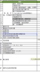 |
| 2016-08-10 18:31:16 | 你 | 看看这些功能 |
| 2016-08-10 18:31:22 | 你 | 将来同步工具要做的 |
| 2016-08-10 18:31:40 | 我 | 不错，整理的挺细的 |
| 2016-08-10 18:32:06 | 你 | 我是觉得跟映射的那个有有依赖的 |
| 2016-08-10 18:32:09 | 你 | 但是看不出来 |
| 2016-08-10 18:32:23 | 你 | 找你去说说 |
| 2016-08-10 18:32:27 | 我 | 好 |
| 2016-08-10 18:32:31 | 我 | 你过来吧 |
| 2016-08-10 18:45:09 | 我 | 你赶快回家吧 |
| 2016-08-10 18:45:15 | 你 | 恩 |
| 2016-08-10 18:45:22 | 你 | 我是不是对旭明太残忍了 |
| 2016-08-10 18:45:30 | 我 | 没事 |
| 2016-08-10 18:45:43 | 我 | 皮糙肉厚 |
{kind=link}
{kind=link}
2016-08-11¶
{kind=link}
{kind=link}
2016-08-12¶
{kind=link}
2016-08-15¶
| 2016-08-15 08:15:51 | 你 | 还没来 |
| 2016-08-15 08:16:14 | 我 | 路上呢 |
| 2016-08-15 09:04:43 | 你 | 今天怎么来晚了 |
| 2016-08-15 09:06:04 | 我 | 下雨，起晚了 |
| 2016-08-15 09:06:20 | 我 | 你没睡够吗 |
| 2016-08-15 09:07:07 | 你 | 我们家昨晚没电了 停电的那一霎那 空调卡卡的 想了几下 我不知道是因为没电 吓死我了 |
| 2016-08-15 09:07:24 | 你 | 吓得我后半夜睡得好难受 |
| 2016-08-15 09:07:42 | 我 | 啊 |
| 2016-08-15 09:07:52 | 你 | 我老公睡得猪一样 |
| 2016-08-15 09:08:29 | 我 | 唉，估计他是累坏了 |
| 2016-08-15 09:08:44 | 我 | 刚才睡着了吗 |
| 2016-08-15 09:08:52 | 你 | 没有 |
| 2016-08-15 09:08:54 | 你 | 趴了会 |
| 2016-08-15 09:09:23 | 我 | 好心疼 |
| 2016-08-15 09:09:30 | 你 | 没事 |
| 2016-08-15 09:09:35 | 你 | 没事没事 |
| 2016-08-15 09:09:58 | 你 | 一会开会了 |
| 2016-08-15 09:10:02 | 我 | 嗯 |
| 2016-08-15 09:29:43 | 你 | 亲 你忙吗 |
| 2016-08-15 09:29:54 | 我 | 不忙 |
| 2016-08-15 09:30:41 | 我 | 有事吗 |
| 2016-08-15 09:30:53 | 你 | 没事 |
| 2016-08-15 09:30:55 | 你 | 随便问问 |
| 2016-08-15 09:31:02 | 你 | 感觉好久没联系了 |
| 2016-08-15 09:31:05 | 你 | 哈哈 |
| 2016-08-15 09:31:16 | 我 | 没有呀，就是一个周末而已 |
| 2016-08-15 09:31:48 | 我 | review会议是今天还是明天 |
| 2016-08-15 09:32:12 | 你 | 明天 |
| 2016-08-15 09:32:14 | 你 | 明天上午 |
| 2016-08-15 09:32:29 | 我 | 好的，明天我要好好听听 |
| 2016-08-15 09:32:42 | 你 | 就是演示 |
| 2016-08-15 09:32:47 | 你 | 你想听什么 |
| 2016-08-15 09:33:07 | 我 | 看看他们的成果 |
| 2016-08-15 09:33:13 | 你 | 恩 |
| 2016-08-15 09:33:15 | 你 | 是 |
| 2016-08-15 09:33:28 | 我 | 主要还是我觉得他们的态度不好 |
| 2016-08-15 09:33:59 | 你 | 一直这样 |
| 2016-08-15 09:34:19 | 你 | 要是胡组会下个迭代也不跟 可能好点 |
| 2016-08-15 09:34:51 | 你 | 旭明工作安排好了吗 |
| 2016-08-15 09:36:00 | 我 | 是，一组的工作我不担心，毕竟是我自己带出来的 |
| 2016-08-15 09:36:17 | 你 | 恩 那倒是 |
| 2016-08-15 09:36:22 | 你 | 我也不担心 |
| 2016-08-15 09:48:38 | 我 | 亲，有空吗 |
| 2016-08-15 09:48:52 | 你 | 有 |
| 2016-08-15 09:49:02 | 我 | 问你一个问题 |
| 2016-08-15 09:49:16 | 你 | 好 |
| 2016-08-15 09:49:45 | 我 | 上周你在群里说的关于scrum的那些东西就是你自己的想到的吗 |
| 2016-08-15 09:50:00 | 你 | 是啊 |
| 2016-08-15 09:50:19 | 我 | 没有藏私吧 |
| 2016-08-15 09:50:20 | 你 | 说错还是说对了？ |
| 2016-08-15 09:50:34 | 你 | 啥叫藏私啊 当然是我想的啦 |
| 2016-08-15 09:50:51 | 你 | 我有什么私可藏滴 |
| 2016-08-15 09:51:17 | 我 | 我感觉你和我认为你达到的高度还有段距离 |
| 2016-08-15 09:51:42 | 你 | 还不够是吗 |
| 2016-08-15 09:51:55 | 我 | 嗯 |
| 2016-08-15 09:52:24 | 我 | 但是我不知道你缺哪 |
| 2016-08-15 09:52:28 | 你 | 哈哈 |
| 2016-08-15 09:52:37 | 你 | 那就是还没理解透彻 |
| 2016-08-15 09:53:43 | 我 | 也许吧，大部分的东西我都和你讲过，培训时也专门说过 |
| 2016-08-15 09:54:37 | 你 | 是 |
| 2016-08-15 10:00:55 | 你 | 你指的是我说的那句话啊 |
| 2016-08-15 10:00:58 | 你 | 哪 |
| 2016-08-15 10:01:21 | 我 | 不是哪句，是你的整体认识 |
| 2016-08-15 10:02:28 | 你 | 我都说啥了 |
| 2016-08-15 10:03:00 | 你 | 你判断的是依据我说的话 我是怕我写的可能不是不想的 |
| 2016-08-15 10:03:12 | 你 | 而且我也不知道你说的是啥 |
| 2016-08-15 10:03:20 | 我 | 这是两个问题 |
| 2016-08-15 10:03:44 | 我 | 我关注的是的认识，不关注这次你能做成什么样 |
| 2016-08-15 10:05:23 | 我 | 你还记得那天你发了很多牢骚吗 |
| 2016-08-15 10:06:34 | 你 | 记得 |
| 2016-08-15 10:07:01 | 你 | 你说的是scrum吗 |
| 2016-08-15 10:07:06 | 我 | 是 |
| 2016-08-15 10:08:28 | 你 | 是说我对scrum理解不够 是吗 |
| 2016-08-15 10:08:47 | 你 | 这跟发牢骚之间的关系是? |
| 2016-08-15 10:09:06 | 我 | 不光是scrum，是敏捷，更大里说是软件工程 |
| 2016-08-15 10:10:03 | 我 | 你发的牢骚有一些其实是由于软件工程的内在规律决定的 |
| 2016-08-15 10:20:42 | 你 | what |
| 2016-08-15 10:21:10 | 你 | 每天普及一遍西医知识 |
| 2016-08-15 10:21:20 | 我 | 谁呀 |
| 2016-08-15 10:21:28 | 你 | 老田 |
| 2016-08-15 10:21:47 | 我 | 哈哈 |
| 2016-08-15 10:22:16 | 我 | 其实他好多概念是错的，懒得和他说 |
| 2016-08-15 10:22:43 | 你 | 说啥啊 |
| 2016-08-15 10:22:50 | 你 | 让他说呗 |
| 2016-08-15 10:23:10 | 我 | 就是 |
| 2016-08-15 10:33:02 | 我 | 你回来有空再听听我的软件工程的培训吧 |
| 2016-08-15 10:33:21 | 你 | 软件工程历史的那个吗 |
| 2016-08-15 10:33:39 | 你 | 好 |
| 2016-08-15 10:33:48 | 我 | 是 |
| 2016-08-15 10:34:41 | 我 | 主要听我讲的，PPT上的东西你都懂了 |
| 2016-08-15 10:34:53 | 你 | 嗯嗯 |
| 2016-08-15 10:34:58 | 你 | 我得跟严丹找 |
| 2016-08-15 10:35:06 | 我 | 好 |
| 2016-08-15 10:35:29 | 你 | OK |
| 2016-08-15 11:17:41 | 你 | 王志怎么这么事多 |
| 2016-08-15 11:20:05 | 我 | 又是什么事情 |
| 2016-08-15 11:20:14 | 你 | 没事 |
| 2016-08-15 11:20:17 | 你 | 小事 |
| 2016-08-15 11:21:48 | 我 | 说说吧 |
| 2016-08-15 11:22:07 | 你 | 今天开会有事吗 |
| 2016-08-15 11:22:29 | 你 | 你说的那个release时能做的功能 以列表的形式列行吗 |
| 2016-08-15 11:30:40 | 我 | 你先做个列表吧。武总关心的是这次release之后这个产品能干什么？能给哪个项目用 |
| 2016-08-15 11:30:52 | 你 | 恩 好 |
| 2016-08-15 11:31:02 | 你 | 那咱们release后 还好测吗 |
| 2016-08-15 11:31:08 | 你 | 还要测吗 |
| 2016-08-15 11:31:30 | 你 | 我先列出来 你看吧 不行我再改 |
| 2016-08-15 11:31:36 | 我 | 好的 |
| 2016-08-15 11:33:05 | 你 | 完了 版本号那个我好像把加载工具组件的帮助信息显示完整的版本号给丢了 |
| 2016-08-15 11:33:18 | 你 | 先不说了 以后再说吧 |
| 2016-08-15 11:34:03 | 我 | 发起评审了吗 |
| 2016-08-15 11:34:20 | 你 | 软需邮件评审的 |
| 2016-08-15 11:34:29 | 你 | 第一次评完后 问题特别大 |
| 2016-08-15 11:34:35 | 你 | 等等我下午再看吧 |
| 2016-08-15 11:34:41 | 我 | 嗯 |
| 2016-08-15 14:21:14 | 我 | 亲，忙啥呢 |
| 2016-08-15 14:24:51 | 你 | 有个新需求 企业管理器的 让我看看 |
| 2016-08-15 14:25:10 | 我 | 好的 |
| 2016-08-15 14:50:11 | 你 | 亲 你干啥呢 |
| 2016-08-15 14:50:35 | 我 | 没事，等你呢 |
| 2016-08-15 14:52:05 | 你 | 在等会啊 |
| 2016-08-15 14:52:15 | 我 | 不急 |
| 2016-08-15 15:01:11 | 你 | 完了 |
| 2016-08-15 15:01:24 | 我 | 好 |
| 2016-08-15 15:04:23 | 我 | 没事了 |
| 2016-08-15 15:04:35 | 你 | 恩 没事了 |
| 2016-08-15 15:04:38 | 我 | 老毛还是不行 |
| 2016-08-15 15:04:52 | 你 | 是啊 |
| 2016-08-15 15:04:59 | 你 | 比旭明差很多吗 |
| 2016-08-15 15:05:53 | 我 | 管理不行，不在路上。 |
| 2016-08-15 15:06:19 | 我 | 技术没有问题，就是不知道事情该怎么干 |
| 2016-08-15 15:07:01 | 你 | 这些做技术的 都没做过管理 慢慢来吧 |
| 2016-08-15 15:07:12 | 你 | 而且他们都不怎么屑于做管理 |
| 2016-08-15 15:07:13 | 你 | 好像是 |
| 2016-08-15 15:07:24 | 我 | 是 |
| 2016-08-15 15:12:14 | 我 | 我周五还要出差[抓狂] |
| 2016-08-15 15:12:24 | 你 | 去哪啊 |
| 2016-08-15 15:12:30 | 你 | 为什么你老出去 |
| 2016-08-15 15:12:37 | 你 | 交流去吗？ |
| 2016-08-15 15:12:55 | 我 | 还是上次intel的事情 |
| 2016-08-15 15:13:10 | 我 | 这次是和技术部门会面 |
| 2016-08-15 15:14:06 | 你 | 去一天？ |
| 2016-08-15 15:14:47 | 我 | 是 |
| 2016-08-15 15:15:00 | 你 | 好吧 |
| 2016-08-15 15:15:04 | 你 | 那也得去啊 |
| 2016-08-15 15:15:05 | 你 | 哈哈 |
| 2016-08-15 15:15:19 | 你 | 下周旭明才回来是吗 |
| 2016-08-15 15:15:23 | 我 | 是 |
| 2016-08-15 15:15:35 | 你 | 那你们组可是群龙无首了 |
| 2016-08-15 15:15:37 | 你 | 哈哈 |
| 2016-08-15 15:16:06 | 我 | 是 |
| 2016-08-15 15:16:18 | 我 | 好在这周不用送测 |
| 2016-08-15 15:16:43 | 你 | 恩 |
| 2016-08-15 15:16:44 | 你 | 好吧 |
| 2016-08-15 15:16:48 | 你 | 没事 |
| 2016-08-15 15:35:15 | 你 | 你跟严丹整啥呢 |
| 2016-08-15 15:35:36 | 我 | 她在自己的本上整了一个问题库 |
| 2016-08-15 15:35:42 | 我 | 我想用 |
| 2016-08-15 15:36:00 | 你 | 外网的吗 |
| 2016-08-15 15:36:05 | 我 | 对 |
| 2016-08-15 15:36:12 | 你 | 哦哦 |
| 2016-08-15 15:37:02 | 我 | 旭明不在，老毛不给力，我只能自己想办法了 |
| 2016-08-15 15:37:30 | 你 | 哈哈 |
| 2016-08-15 15:37:33 | 你 | 我可以帮你吗 |
| 2016-08-15 15:37:41 | 我 | 暂时不用 |
| 2016-08-15 15:37:59 | 我 | 最近jira你更新了吗 |
| 2016-08-15 15:38:08 | 你 | 更了 |
| 2016-08-15 15:38:19 | 你 | 每天站立会结束我就更新 |
| 2016-08-15 15:38:30 | 你 | 中间弄错了一次 好像是周四 |
| 2016-08-15 15:38:32 | 我 | 好的，我去看看 |
| 2016-08-15 15:38:36 | 你 | 那个图稍微错了一点 |
| 2016-08-15 15:38:49 | 我 | 没事 |
| 2016-08-15 15:43:57 | 我 | 你能进jira吗 |
| 2016-08-15 15:44:13 | 你 | 能啊 |
| 2016-08-15 15:44:16 | 你 | 密码1234 |
| 2016-08-15 15:44:29 | 我 | 我的页面出不来 |
| 2016-08-15 15:44:47 | 你 | 我早上进的时候可以 |
| 2016-08-15 15:44:53 | 你 | 我现在试试 |
| 2016-08-15 15:44:54 | 我 | 我看看是什么原因吧 |
| 2016-08-15 15:53:06 | 你 | 我的也打不开 |
| 2016-08-15 15:53:18 | 我 | 那就明天再说吧 |
| 2016-08-15 15:53:22 | 我 | 聊天吗 |
| 2016-08-15 15:54:02 | 你 | 聊吧 |
| 2016-08-15 15:54:05 | 你 | 你周末干啥了 |
| 2016-08-15 15:54:15 | 我 | 颓废 |
| 2016-08-15 15:54:19 | 我 | 睡了一天 |
| 2016-08-15 15:54:25 | 我 | 看了一天的电视 |
| 2016-08-15 15:55:12 | 你 | 我看了两天电视 |
| 2016-08-15 15:55:33 | 我 | 还是追剧吗 |
| 2016-08-15 15:57:54 | 你 | 待会给你个大而全的表 |
| 2016-08-15 15:58:01 | 你 | 咱们做的同步工具的 |
| 2016-08-15 15:58:08 | 我 | 好的 |
| 2016-08-15 15:58:13 | 你 | 四个迭代的用户故事和task |
| 2016-08-15 15:58:21 | 我 | 好 |
| 2016-08-15 15:59:22 | 你 | 也算产出物 |
| 2016-08-15 15:59:34 | 我 | 嗯 |
| 2016-08-15 16:09:31 | 你 | 发给你了 你看下 |
| 2016-08-15 16:09:38 | 我 | 好的 |
| 2016-08-15 16:10:21 | 你 | 主要看user story title 那部分 |
| 2016-08-15 16:10:37 | 你 | 你看跟武总汇报的话这个写法有没有很外行 |
| 2016-08-15 16:10:44 | 你 | 我去打个电话 |
| 2016-08-15 16:10:56 | 我 | 好 |
| 2016-08-15 16:36:09 | 我 | 我已经看完了 |
| 2016-08-15 16:36:32 | 你 | 恩 |
| 2016-08-15 16:36:41 | 我 | 给武总的，就用title就够了 |
| 2016-08-15 16:36:52 | 你 | 恩 那个title写的行吗 |
| 2016-08-15 16:37:08 | 你 | 你要哪几列 我给你摘出来 |
| 2016-08-15 16:37:09 | 我 | 可以 |
| 2016-08-15 16:37:18 | 你 | 哈哈 |
| 2016-08-15 16:37:27 | 你 | 我偷懒了 |
| 2016-08-15 16:37:36 | 我 | 没事 |
| 2016-08-15 16:40:14 | 我 | 你弟弟走了吗 |
| 2016-08-15 16:40:51 | 你 | 走了 |
| 2016-08-15 16:41:00 | 你 | 我有个高中的老师 |
| 2016-08-15 16:41:13 | 你 | 跟我关系特别好 要在天津买房子 |
| 2016-08-15 16:41:22 | 我 | 哦 |
| 2016-08-15 16:41:33 | 我 | 是要积分落户吗 |
| 2016-08-15 16:41:41 | 你 | 两口子来了 也不知道买哪个小区 啥也不知道 |
| 2016-08-15 16:41:45 | 你 | 跟我问消息 |
| 2016-08-15 16:44:04 | 我 | 那就推荐你家附近的 |
| 2016-08-15 16:44:40 | 你 | 我不想让她离我很近 她很烦人 |
| 2016-08-15 16:44:53 | 我 | 哦 |
| 2016-08-15 17:05:10 | 你 | 我这个老师是个奇葩 |
| 2016-08-15 17:05:18 | 我 | ? |
| 2016-08-15 17:05:48 | 你 | 不跟他说了 |
| 2016-08-15 17:05:53 | 你 | 跟你聊 |
| 2016-08-15 17:06:04 | 我 | 好的 |
| 2016-08-15 17:08:33 | 你 | 你被三个男人包围了 |
| 2016-08-15 17:09:27 | 我 | [流泪] |
| 2016-08-15 17:14:53 | 我 | 我当初给胖子交待过要做的事情，没做 |
| 2016-08-15 17:15:01 | 我 | 被测出来了 |
| 2016-08-15 17:15:13 | 我 | 幸好不是我们改的 |
| 2016-08-15 17:15:14 | 你 | 呵呵 |
| 2016-08-15 17:15:23 | 你 | DMD改的 |
| 2016-08-15 17:15:26 | 你 | 那个版本 |
| 2016-08-15 17:15:27 | 你 | 哪个 |
| 2016-08-15 17:15:36 | 我 | 1.8 |
| 2016-08-15 17:16:31 | 我 | 季业也是没有质量意识 |
| 2016-08-15 17:16:33 | 你 | 为什么我们现在这么多问题啊 |
| 2016-08-15 17:16:44 | 你 | 这些都得慢慢来 |
| 2016-08-15 17:16:46 | 我 | 几个原因 |
| 2016-08-15 17:17:11 | 我 | 一 最近发版太多，只保进度了。 |
| 2016-08-15 17:17:35 | 我 | 二 DMD合并的代码质量太差 |
| 2016-08-15 17:17:55 | 我 | 三 旭明的管理水平太低 |
| 2016-08-15 17:18:04 | 你 | 发版多是因为问题多吧 |
| 2016-08-15 17:18:10 | 我 | 不是 |
| 2016-08-15 17:18:29 | 我 | 是抗不住现场的压力 |
| 2016-08-15 17:18:57 | 你 | 恩 跟我们系统稳定性差有关系吗 |
| 2016-08-15 17:19:04 | 你 | 肯定是现场比较强势 |
| 2016-08-15 17:19:08 | 我 | 关系不大 |
| 2016-08-15 17:19:17 | 你 | 但是强势也不能多这么多吧 |
| 2016-08-15 17:19:32 | 我 | 唉 |
| 2016-08-15 17:19:33 | 你 | 去年是不是只接的11.4 |
| 2016-08-15 17:19:40 | 我 | 是 |
| 2016-08-15 17:19:42 | 你 | 今年是11.4和11.5两个 |
| 2016-08-15 17:19:54 | 我 | 现在也只是11.5 |
| 2016-08-15 17:19:55 | 你 | 而且项目肯定也多了 |
| 2016-08-15 17:20:34 | 我 | 这些都是客观原因 |
| 2016-08-15 17:20:51 | 你 | 那主观原因是什么 |
| 2016-08-15 17:21:18 | 我 | 没有把质量放在首位 |
| 2016-08-15 17:22:09 | 我 | 如此多的发版必然会导致质量下降 |
| 2016-08-15 17:22:57 | 你 | 哪个是鸡 哪个是蛋 |
| 2016-08-15 17:23:02 | 我 | 短期内的冲刺可以，这样长期的肯定会出问题 |
| 2016-08-15 17:23:21 | 我 | 质量意识是源头 |
| 2016-08-15 17:23:37 | 我 | 而且这个质量意识不是简单的客户满意 |
| 2016-08-15 17:23:51 | 我 | 对于客户来说，他也是短视的 |
| 2016-08-15 17:23:57 | 你 | 稳定性 |
| 2016-08-15 17:24:04 | 你 | 这不也是质量嘛 |
| 2016-08-15 17:24:12 | 我 | 肯定是先满足时间，再满足质量 |
| 2016-08-15 17:25:20 | 我 | 咱们换个场景举例 |
| 2016-08-15 17:25:27 | 我 | 比如说你网购 |
| 2016-08-15 17:25:38 | 你 | 恩 |
| 2016-08-15 17:26:08 | 我 | 你希望便宜，你希望包邮，你希望次日达 |
| 2016-08-15 17:26:18 | 你 | 是 |
| 2016-08-15 17:26:24 | 我 | 在这之后你希望的是东西质量好 |
| 2016-08-15 17:26:54 | 我 | 其实大家都明白，质量好的东西一定要付出溢价的 |
| 2016-08-15 17:27:25 | 我 | 比如顺丰就是要比韵达快 |
| 2016-08-15 17:27:35 | 你 | 是 |
| 2016-08-15 17:27:48 | 我 | 所有这些都需要成本 |
| 2016-08-15 17:27:55 | 你 | 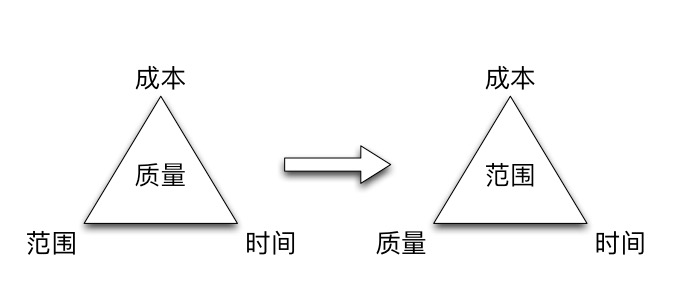 |
| 2016-08-15 17:28:08 | 你 | 你讲这页的时候 我给你拿快递去了 |
| 2016-08-15 17:28:10 | 你 | 正好没听到 |
| 2016-08-15 17:28:18 | 我 | 嗯 |
| 2016-08-15 17:28:34 | 你 | 这个箭头表示什么 |
| 2016-08-15 17:28:47 | 我 | 由于质量对用户的感知一定是滞后的，所以大多数的时候牺牲的就是质量 |
| 2016-08-15 17:29:25 | 我 | 左边是理想，右边是现实。箭头说明我们从理想到现实的转变 |
| 2016-08-15 17:30:09 | 你 | 为什么范围成了中心 |
| 2016-08-15 17:30:54 | 我 | 范围就是我们要提交的功能，这个一般是不好减少的 |
| 2016-08-15 17:31:31 | 你 | 三角形的三个脚有涵义吗 |
| 2016-08-15 17:32:21 | 我 | 其实用三角形是说三角形的不可变性 |
| 2016-08-15 17:32:43 | 我 | 就是说这三个因素如果有一个变化，则其他的也必须变化 |
| 2016-08-15 17:33:02 | 你 | 恩 |
| 2016-08-15 17:33:05 | 你 | 知道了 |
| 2016-08-15 17:37:08 | 我 | 我问你件事 |
| 2016-08-15 17:37:30 | 你 | 那个scrum的PPT你讲的时候 录下来了吧 |
| 2016-08-15 17:37:38 | 你 | 你那有音频吗 发给我下 |
| 2016-08-15 17:37:42 | 你 | 问吧 |
| 2016-08-15 17:37:56 | 我 | 我给你了，同步文件夹里 |
| 2016-08-15 17:38:19 | 你 | 恩 看到了 |
| 2016-08-15 17:38:22 | 我 | 你上周说你的性格对你现在有影响 |
| 2016-08-15 17:38:46 | 你 | 是 |
| 2016-08-15 17:39:22 | 我 | 我想我先给你普及一些心理学的东西 |
| 2016-08-15 17:39:33 | 你 | 嗯嗯 说手 |
| 2016-08-15 17:39:36 | 你 | 说 |
| 2016-08-15 17:40:03 | 我 | 等以后有机会面谈的时候再说你的性格的问题 |
| 2016-08-15 17:40:16 | 你 | 好 |
| 2016-08-15 17:40:48 | 我 | 以后有空我就和你说说这些事情 |
| 2016-08-15 17:41:14 | 你 | 恩 好 |
| 2016-08-15 17:42:09 | 你 | 你说一个人事业的高度 受限于很多因素 |
| 2016-08-15 17:42:29 | 你 | 我想 有一个很重要的 很难发现的就是个人的性格 |
| 2016-08-15 17:43:02 | 我 | 是 |
| 2016-08-15 17:43:18 | 你 | 天花板吧 |
| 2016-08-15 17:43:25 | 你 | 有时候是知识 |
| 2016-08-15 17:43:31 | 我 | 是 |
| 2016-08-15 17:43:54 | 你 | 知识成为天花板的话 学习能力强 完全可以搞定 |
| 2016-08-15 17:44:27 | 我 | 是 |
| 2016-08-15 17:45:20 | 你 | 我有的时候就能感觉自己性格成天花板了 |
| 2016-08-15 17:45:40 | 你 | 这点让我最有感觉的两个人就是王洪越、田志敏 |
| 2016-08-15 17:45:45 | 我 | 说说 |
| 2016-08-15 17:46:20 | 你 | 我在听你的PPT |
| 2016-08-15 17:46:52 | 我 | 好的 |
| 2016-08-15 17:46:57 | 你 | release note 是啥 |
| 2016-08-15 17:47:11 | 你 | release中的功能？ |
| 2016-08-15 17:47:13 | 我 | 就是这次发版的发版说明 |
| 2016-08-15 17:47:34 | 你 | 恩 |
| 2016-08-15 17:47:52 | 我 | 你看看每次APP升级时写的东西就是 |
| 2016-08-15 17:47:54 | 你 | 你看王洪越 你早就说过他 说他偷奸耍滑 |
| 2016-08-15 17:48:06 | 你 | 恩 知道了 |
| 2016-08-15 17:48:44 | 你 | 其实他能力可以 但是他这种偷奸耍滑的本性 使他就这样了 |
| 2016-08-15 17:48:54 | 你 | 而且他自己可能都感觉不出来 |
| 2016-08-15 17:48:58 | 我 | 是 |
| 2016-08-15 17:49:00 | 你 | 不愿意担责任 |
| 2016-08-15 17:49:18 | 你 | 就一个进度 还跟我说瞎写出事的话别找他 |
| 2016-08-15 17:49:21 | 你 | 真恶心 |
| 2016-08-15 17:49:46 | 我 | 没错 |
| 2016-08-15 17:49:59 | 你 | 而且他自己很难发现 |
| 2016-08-15 17:50:07 | 你 | 这事也不会有人跟他说 |
| 2016-08-15 17:50:21 | 你 | 知识天花板的时候 有很多方式感知到 |
| 2016-08-15 17:50:28 | 你 | 性格的就很难 |
| 2016-08-15 17:50:32 | 我 | 是 |
| 2016-08-15 17:50:47 | 我 | 你觉得你的性格哪里限制你了 |
| 2016-08-15 17:51:06 | 你 | 就是我的所谓的在乎别人的看法 |
| 2016-08-15 17:51:14 | 你 | 这点就比较难突破 |
| 2016-08-15 17:51:20 | 我 | 嗯 |
| 2016-08-15 17:51:23 | 你 | 不过现在好很多了很多了 |
| 2016-08-15 17:51:39 | 你 | 因为我这个毛病 导致我做事的时候很容易偏离正确的目标 |
| 2016-08-15 17:51:43 | 我 | 其实这个不一定 |
| 2016-08-15 17:52:01 | 我 | 我也很在乎别人的看法 |
| 2016-08-15 17:52:14 | 你 | 可是你很理性啊 |
| 2016-08-15 17:52:23 | 我 | 我觉得你是缺乏自信 |
| 2016-08-15 17:52:49 | 你 | 恩 也可能 这个我思考的不多 |
| 2016-08-15 17:53:06 | 我 | 我发现你很容易向人道歉 |
| 2016-08-15 17:53:09 | 你 | 我给你举个例子 |
| 2016-08-15 17:53:14 | 我 | 好 |
| 2016-08-15 17:53:27 | 你 | 是？ |
| 2016-08-15 17:53:58 | 你 | 你记得我总是很介意男女的事 |
| 2016-08-15 17:54:02 | 你 | 以前 |
| 2016-08-15 17:54:08 | 我 | 是 |
| 2016-08-15 17:54:11 | 你 | 其实就是在乎别人看法的事 |
| 2016-08-15 17:54:28 | 我 | 嗯 |
| 2016-08-15 17:54:45 | 你 | 这件事很明显我就偏了 |
| 2016-08-15 17:55:13 | 你 | 搞得自己跟暴露在众目睽睽下一样 |
| 2016-08-15 17:55:24 | 你 | 其实也是我假想出来的 |
| 2016-08-15 17:55:31 | 你 | 没什么人在乎 |
| 2016-08-15 17:55:38 | 我 | 是 |
| 2016-08-15 17:55:58 | 你 | 就是『在乎别人的看法』 让我老是为别人活 别人给我画了个框 |
| 2016-08-15 17:56:09 | 我 | 嗯 |
| 2016-08-15 17:56:10 | 你 | 结果我这也不能干 那也不能干 |
| 2016-08-15 17:56:26 | 你 | 可能干这个我不但没有损失 我还收获很多很多的快乐 |
| 2016-08-15 17:56:39 | 我 | 没错 |
| 2016-08-15 17:56:52 | 我 | 这正是我一直想告诉你的 |
| 2016-08-15 17:56:58 | 你 | 是 |
| 2016-08-15 17:57:03 | 你 | 我现在深有体会 |
| 2016-08-15 17:57:11 | 你 | 正在慢慢的改 |
| 2016-08-15 17:57:17 | 我 | 嗯 |
| 2016-08-15 17:57:28 | 你 | 总结下就是知道自己真正想要什么 |
| 2016-08-15 17:57:41 | 你 | 我不是要别人夸我懂事 我要的是我快乐 |
| 2016-08-15 17:57:54 | 我 | 没错 |
| 2016-08-15 17:58:00 | 你 | 就像我现在不在乎其他人 只在乎领导们一样 |
| 2016-08-15 17:58:09 | 你 | 要是以前的我 就我姐现在还是 |
| 2016-08-15 17:58:24 | 我 | 嗯 |
| 2016-08-15 17:58:35 | 你 | 就是跟同级的 搞得很好 非得让自己成为社交的焦点 |
| 2016-08-15 17:59:09 | 你 | 甲跟我好 乙对我好 张三喜欢跟我发牢骚 李四喜欢跟我分享 |
| 2016-08-15 17:59:28 | 你 | 非得让大家围着我转 |
| 2016-08-15 17:59:38 | 你 | 其实这有什么用啊 |
| 2016-08-15 17:59:44 | 我 | 嗯 |
| 2016-08-15 18:00:12 | 你 | 可能有用 但对于我这样的人来说没用 适当的留意就行了 |
| 2016-08-15 18:00:27 | 我 | 也不是这么说 |
| 2016-08-15 18:00:37 | 我 | 我先就这个说两句 |
| 2016-08-15 18:00:50 | 你 | 你说吧 |
| 2016-08-15 18:01:03 | 你 | 我现在一半听你说话 一半说这些 |
| 2016-08-15 18:01:15 | 我 | 让大家围着自己转，其实是人几乎都希望这样 |
| 2016-08-15 18:01:29 | 我 | 关键是要知道自己的目标 |
| 2016-08-15 18:01:40 | 我 | 或者说自己快乐的源头 |
| 2016-08-15 18:01:41 | 你 | 是吗？ |
| 2016-08-15 18:01:46 | 我 | 是的 |
| 2016-08-15 18:02:04 | 你 | 找自己的目标这件事本身也不容易 |
| 2016-08-15 18:02:17 | 我 | 如果只是希望自己是焦点，那么很快就会失去这种快乐的 |
| 2016-08-15 18:02:58 | 我 | 如果希望自己得到认可，那么这种快乐就会比前一种时间长 |
| 2016-08-15 18:03:20 | 你 | 恩 |
| 2016-08-15 18:04:06 | 我 | 最后，也是最难的就是成为领袖，到那时你就不需要去找别人了，是别人来找你 |
| 2016-08-15 18:04:18 | 我 | 同样这种快乐也是最久的 |
| 2016-08-15 18:04:21 | 你 | 是 |
| 2016-08-15 18:04:26 | 你 | 对的 |
| 2016-08-15 18:04:35 | 我 | 同样都是成为焦点 |
| 2016-08-15 18:04:47 | 你 | 你若盛开 清风自来 |
| 2016-08-15 18:04:55 | 我 | 没错 |
| 2016-08-15 18:05:24 | 你 | 一味的牺牲自己的利益挣得的所谓的认可 一定是弱不禁风的 |
| 2016-08-15 18:05:28 | 你 | 就像范树磊 |
| 2016-08-15 18:05:34 | 我 | 没错 |
| 2016-08-15 18:05:56 | 你 | 这种拥护太表象 |
| 2016-08-15 18:06:10 | 我 | 没错 |
| 2016-08-15 18:06:22 | 我 | 你能自己想到这些，我就特别高兴 |
| 2016-08-15 18:06:36 | 我 | 以前我也曾经和你说过这些 |
| 2016-08-15 18:06:46 | 我 | 但是我了解你的性格 |
| 2016-08-15 18:06:47 | 你 | 哈哈 |
| 2016-08-15 18:06:59 | 你 | 我以前就是这样 |
| 2016-08-15 18:07:02 | 我 | 所以我不敢往深里说 |
| 2016-08-15 18:07:03 | 你 | 老是委屈自己 |
| 2016-08-15 18:07:53 | 我 | 你自己能悟透了这是最好的 |
| 2016-08-15 18:09:50 | 我 | 虽然后面的路还很长 |
| 2016-08-15 18:10:29 | 我 | 不过最困难最重要的一关你已经过了 |
| 2016-08-15 18:11:07 | 我 | 我现在越来越相信自己的眼光，真的没有看错你 |
| 2016-08-15 18:11:37 | 我 | 想想你刚来的时候，到现在之间的差距 |
| 2016-08-15 18:11:50 | 你 | 是啊 |
| 2016-08-15 18:11:53 | 你 | 差很多 |
| 2016-08-15 18:11:54 | 我 | 关键是你一直在努力，一直在向着正确的方向前进 |
| 2016-08-15 18:12:01 | 你 | 哈哈 |
| 2016-08-15 18:12:11 | 你 | 就是有时候会懈怠 |
| 2016-08-15 18:12:17 | 你 | 最近就有点 |
| 2016-08-15 18:12:30 | 我 | ，没事的 |
| 2016-08-15 18:12:39 | 我 | 总得有放松的时候 |
| 2016-08-15 18:12:55 | 你 | 恩 |
| 2016-08-15 18:13:08 | 你 | 没事 我知道自己想要什么 |
| 2016-08-15 18:13:37 | 我 | 好的 |
| 2016-08-15 18:13:42 | 我 | 你几点走 |
| 2016-08-15 18:14:02 | 你 | 等东东 |
| 2016-08-15 18:14:08 | 你 | 我得接着听 |
| 2016-08-15 18:14:26 | 你 | 你知道你讲设计的那个PPT 我听了不知道多少遍 |
| 2016-08-15 18:14:30 | 你 | 明白了很多事 |
| 2016-08-15 18:14:33 | 我 | 哦 |
| 2016-08-15 18:14:45 | 你 | 这次这个再听的时候 还是有很大的收获 |
| 2016-08-15 18:15:30 | 我 | 温故知新 |
| 2016-08-15 18:16:59 | 我 | 番薯举着一只壁虎 |
| 2016-08-15 18:32:14 | 我 | 玩啥呢 |
| 2016-08-15 18:33:23 | 你 | 听你讲的呢 |
| 2016-08-15 18:33:35 | 我 | 好 |
| 2016-08-15 18:34:37 | 你 | 用户没有提出的边界值，用在用户故事中定义吗 |
| 2016-08-15 18:35:09 | 我 | 可以定义，也可以不定义 |
| 2016-08-15 18:36:19 | 你 | 那测吗 |
| 2016-08-15 18:36:46 | 我 | 定义了就应该测 |
| 2016-08-15 18:37:12 | 你 | 明白了 |
| 2016-08-15 18:42:08 | 你 | 我好像把用户故事的范围和粒度给混了 |
| 2016-08-15 18:42:17 | 你 | 所以细节处理的不好 |
| 2016-08-15 18:42:46 | 我 | 哦 |
| 2016-08-15 18:42:59 | 你 | 你看软需中 |
| 2016-08-15 18:43:23 | 你 | 用需把范围定了以后 软需是要写细 要多细有多细 |
| 2016-08-15 18:43:30 | 你 | 但是用户故事不是 |
| 2016-08-15 18:43:36 | 我 | 嗯 |
| 2016-08-15 18:43:51 | 你 | 看起来用户故事没有定义细节 |
| 2016-08-15 18:44:17 | 你 | 其实是 没有定义细节的用户故事 细节也不在范围内 |
| 2016-08-15 18:44:29 | 我 | 对 |
| 2016-08-15 18:44:36 | 你 | 用户故事定义的就是范围和细节 |
| 2016-08-15 18:44:54 | 你 | 只是 我们没有碰到定义细节的用户故事而已 |
| 2016-08-15 18:45:25 | 我 | 没错 |
| 2016-08-15 18:45:34 | 我 | 孺子可教 |
| 2016-08-15 18:45:35 | 你 | 你面对我这样时不时蹦出一句话是不是很崩溃 |
| 2016-08-15 18:45:41 | 我 | 不是呀 |
| 2016-08-15 18:45:50 | 我 | 我特别高兴 |
| 2016-08-15 18:46:18 | 你 | 而且上一次可能跟这次说的根本不一样 |
| 2016-08-15 18:46:31 | 你 | 这可能就是认知的过程吧 |
| 2016-08-15 18:46:32 | 我 | 你知道吗，你说的话大部分我都能在第一时间听懂 |
| 2016-08-15 18:46:38 | 我 | 没错 |
| 2016-08-15 18:47:04 | 你 | 哈哈 |
| 2016-08-15 18:47:05 | 我 | 今天你已经两次让我高兴啦 |
| 2016-08-15 18:47:08 | 你 | 唉 |
| 2016-08-15 18:47:21 | 你 | 真的吗 |
| 2016-08-15 18:47:22 | 你 | 哈哈 |
| 2016-08-15 18:47:26 | 我 | 真的 |
| 2016-08-15 18:47:57 | 我 | 两个不同维度，你都有突破 |
| 2016-08-15 18:49:04 | 你 | 想明白这些太重要 |
| 2016-08-15 18:49:09 | 我 | 是 |
| 2016-08-15 18:49:26 | 你 | 这可能就是建模的过程 |
| 2016-08-15 18:49:28 | 你 | 是不是 |
| 2016-08-15 18:49:31 | 我 | 是 |
| 2016-08-15 18:49:39 | 你 | 最后就找到自己的模型了 |
| 2016-08-15 18:49:43 | 我 | 对 |
| 2016-08-15 18:49:52 | 你 | 而且 你看我说的这些小点 都是有逻辑的 |
| 2016-08-15 18:50:09 | 我 | 对呀 |
| 2016-08-15 18:50:16 | 你 | 就像你说的摸象一样 |
| 2016-08-15 18:50:21 | 你 | 今天摸得是大腿 |
| 2016-08-15 18:50:23 | 你 | 哈哈 |
| 2016-08-15 18:50:27 | 你 | 摸一会 了解点 |
| 2016-08-15 18:50:28 | 我 | 你的逻辑其实不差 |
| 2016-08-15 18:50:35 | 你 | 明天摸一会 |
| 2016-08-15 18:51:04 | 你 | 慢慢最后就摸全了 当然除了摸 还能通过推理得出来一部分 |
| 2016-08-15 18:51:09 | 我 | 是 |
| 2016-08-15 18:52:49 | 你 | 你讲到敏捷失败的因素了 |
| 2016-08-15 18:52:54 | 你 | 哈哈 |
| 2016-08-15 18:52:57 | 你 | 我要走了 |
| 2016-08-15 18:53:04 | 我 | 好 |
| 2016-08-15 18:53:13 | 我 | 明天见 |
| 2016-08-15 18:58:25 | 你 | 你干啥呢，不回家吗 |
| 2016-08-15 18:59:01 | 我 | 待会 |
| 2016-08-15 18:59:18 | 你 | 恩， |
| 2016-08-15 18:59:19 | 我 | 今天晚，多加会 |
| 2016-08-15 18:59:27 | 你 | 哈哈， |
| 2016-08-15 18:59:44 | 你 | 我都是想什么时候走就什么时候走，你总是有计划 |
| 2016-08-15 18:59:52 | 我 | 嗯 |
| 2016-08-15 19:00:08 | 你 | 不说了 |
| 2016-08-15 19:00:20 | 我 | 好的 |
{kind=link}
2016-08-16¶
| 2016-08-16 08:05:26 | 你 | 干嘛呢 |
| 2016-08-16 08:05:32 | 你 | 这么认真 |
| 2016-08-16 08:06:04 | 我 | 玩游戏 |
| 2016-08-16 08:06:38 | 我 | 你回来把群的名字换了吧 |
| 2016-08-16 08:06:55 | 我 | 现在这样应该会显示我的名字 |
| 2016-08-16 08:06:56 | 你 | 恩 不知道叫啥 |
| 2016-08-16 08:16:13 | 你 | 改了 |
| 2016-08-16 08:16:38 | 我 | 好的 |
| 2016-08-16 08:18:14 | 你 | 这个名字可以吗 |
| 2016-08-16 08:20:19 | 我 | 挺好 |
| 2016-08-16 08:23:40 | 我 | 你还记得我以前给你说过的三个我吗？ |
| 2016-08-16 08:24:30 | 你 | 恩 |
| 2016-08-16 08:24:47 | 你 | 本我 自我 超我 |
| 2016-08-16 08:26:41 | 我 | 人格分成三个部分 ：自我 （ego，即有意识 、理性的自我 ）、超我 （ superego ，即道德良心 ，有时会过于拘泥于社会规范 ）以及本我 （id ，即享乐的欲望 ，各种欲望 ，总想及时行乐 ） 。弗洛伊德认为 ，精神分析的目的就是通过强化自我 ，让自我能更好地控制本我 ，并摆脱超我的束缚 。 |
| 2016-08-16 08:28:15 | 你 | 哦哦 |
| 2016-08-16 08:28:17 | 我 | 本我是利己的，超我是利他的 |
| 2016-08-16 08:28:21 | 你 | 经典 |
| 2016-08-16 08:30:26 | 我 | 你昨天说的你性格的那部分，其实就可以用这个理论来分析 |
| 2016-08-16 08:31:02 | 你 | 恩 感觉像是 |
| 2016-08-16 08:31:54 | 我 | 你自己先想想 |
| 2016-08-16 08:32:19 | 你 | 好 |
| 2016-08-16 08:46:23 | 我 | 我刚才一扭头，正好看见刘杰的侧脸，你猜怎么着 |
| 2016-08-16 08:46:32 | 你 | 咋了 |
| 2016-08-16 08:46:44 | 你 | 好大的一张脸 |
| 2016-08-16 08:47:09 | 我 | 从她耳后到下巴有一道明显的分界线 |
| 2016-08-16 08:47:28 | 你 | 粉吗 |
| 2016-08-16 08:47:44 | 我 | 不知道 |
| 2016-08-16 08:47:57 | 我 | 但是很明显 |
| 2016-08-16 08:47:58 | 你 | 应该是擦得粉 |
| 2016-08-16 08:48:04 | 我 | 待会开会的时候你可以看看 |
| 2016-08-16 08:48:10 | 你 | 有的人就那样 |
| 2016-08-16 08:48:12 | 你 | 嗯嗯 好 |
| 2016-08-16 11:04:43 | 我 | 他们太欺负你了 |
| 2016-08-16 11:04:53 | 你 | 是 |
| 2016-08-16 11:05:16 | 我 | 你自己也有原因 |
| 2016-08-16 11:05:18 | 你 | 我现在啥也不懂 慢慢就欺负不住我了 |
| 2016-08-16 11:05:20 | 你 | 哈哈 |
| 2016-08-16 11:05:30 | 你 | 是 太无知 |
| 2016-08-16 11:10:16 | 我 | 我说的不是这个原因 |
| 2016-08-16 11:10:28 | 我 | 我是说你性格上 |
| 2016-08-16 11:10:35 | 你 | 性格？ |
| 2016-08-16 11:10:38 | 我 | 对他们有点软 |
| 2016-08-16 11:10:40 | 你 | 不够强势吗 |
| 2016-08-16 11:10:51 | 你 | 恩 |
| 2016-08-16 11:11:00 | 你 | 没事 我心里有数 |
| 2016-08-16 11:11:14 | 你 | 我不能跟你一样 |
| 2016-08-16 11:11:30 | 你 | 我不知道东西太多了 还有很多规则没掌握 |
| 2016-08-16 11:11:48 | 你 | 你在的时候 我心理上更依赖你 老是想听你说 |
| 2016-08-16 11:11:51 | 我 | 但是你应该一直站在用户的角度和他们说 |
| 2016-08-16 11:12:08 | 你 | 是啊 我就说我自己没掌握 |
| 2016-08-16 11:12:44 | 你 | review的时候 你不知道 他们每次都是我还没说话的时候 就把他们准备好的东西跑起来 这次已经好很多了 |
| 2016-08-16 11:12:53 | 你 | 上次胡组会更是 |
| 2016-08-16 11:13:11 | 你 | 所以我都先让他们说 我连熟悉熟悉 然后我再说我的 |
| 2016-08-16 11:13:26 | 我 | 唉 |
| 2016-08-16 11:13:33 | 你 | 但是站在用户角度这个东西还是会差点 |
| 2016-08-16 11:13:42 | 你 | 我自己这边很容易被他们带着走 |
| 2016-08-16 11:13:56 | 你 | 其实这个会应该是我牵着他们走才对 |
| 2016-08-16 11:14:06 | 我 | 可是你不知道你这样其实是助长他们 |
| 2016-08-16 11:14:12 | 你 | 而且他们老是嘲笑我 |
| 2016-08-16 11:14:31 | 你 | 好像一直说我这都不懂 这有什么测得之类的 |
| 2016-08-16 11:14:50 | 你 | 我知道 你既然提出来了 下次我注意 |
| 2016-08-16 11:19:19 | 我 | 唉，我估计你姐也是一样 |
| 2016-08-16 11:19:31 | 你 | 是 |
| 2016-08-16 11:19:57 | 你 | 咱们这个读、写组件叫啥啊 |
| 2016-08-16 11:20:21 | 你 | 安装三个组件 读、kafka、写 |
| 2016-08-16 11:20:26 | 我 | 先叫读、写吧 |
| 2016-08-16 11:20:38 | 我 | 我忘了武总是怎么说的了 |
| 2016-08-16 11:20:53 | 你 | 搜搜其他竞品的要不 |
| 2016-08-16 11:21:24 | 我 | 你可以去看看 |
| 2016-08-16 11:34:29 | 我 | 我想和你说的是你不要怕不懂技术，PO就是不懂技术，要是PO懂技术还要他们干什么 |
| 2016-08-16 11:35:10 | 我 | PO不懂技术是理直气壮的 |
| 2016-08-16 11:37:21 | 你 | 哈哈，知道了 |
| 2016-08-16 11:37:25 | 你 | 知道了 |
| 2016-08-16 11:37:55 | 我 | 你要对自己有信心 |
| 2016-08-16 11:37:58 | 你 | 旭明不在，你是不是特憋手 |
| 2016-08-16 11:38:05 | 我 | 是 |
| 2016-08-16 11:39:22 | 你 | 恩， |
| 2016-08-16 11:39:29 | 你 | 知道了， |
| 2016-08-16 11:51:32 | 我 | [链接] 为何越努力就越纠结？——《架构师成长之路》NO.7（超级大礼包） |
| 2016-08-16 11:58:10 | 我 | 你快去问问你姐是什么情况 |
| 2016-08-16 12:36:03 | 我 | 你睡觉吗 |
| 2016-08-16 12:36:24 | 你 | 睡会吧 |
| 2016-08-16 12:36:42 | 我 | 好的，赶紧睡吧 |
| 2016-08-16 13:14:56 | 我 | 睡好了吗 |
| 2016-08-16 13:15:18 | 你 | 还行吧 睡着了 |
| 2016-08-16 13:16:19 | 你 | 李杰说的 邱总只是个做事的人 |
| 2016-08-16 13:16:20 | 我 | 你记得你有一次也因为王洪越欺负你，气的给我打电话 |
| 2016-08-16 13:16:27 | 你 | 没有谁不是做事的人 |
| 2016-08-16 13:16:35 | 我 | 我知道 |
| 2016-08-16 13:16:44 | 你 | 但是环境如此 谁都不是天生下来爱干这些事 |
| 2016-08-16 13:16:46 | 你 | 你说呢 |
| 2016-08-16 13:17:06 | 你 | 李杰对邱的判断也不一定对 因为我俩起初比较傻 总觉得是这样 |
| 2016-08-16 13:17:12 | 你 | 但是不是 |
| 2016-08-16 13:17:25 | 我 | 嗯 |
| 2016-08-16 13:17:36 | 你 | 就像 以前我看领导也是做事的人 但现在看来 其实他也很会玩 |
| 2016-08-16 13:17:47 | 你 | 这个邱是北大毕业的 |
| 2016-08-16 13:17:50 | 你 | 高材生 |
| 2016-08-16 13:17:55 | 我 | 嗯 |
| 2016-08-16 13:18:28 | 我 | 先等你姐今天面谈以后再说吧 |
| 2016-08-16 13:19:18 | 你 | 恩 |
| 2016-08-16 13:19:19 | 你 | 哈哈 |
| 2016-08-16 13:19:22 | 你 | 累不累啊 |
| 2016-08-16 13:19:29 | 我 | 不累呀 |
| 2016-08-16 13:19:52 | 我 | 说实话我今天挺怕李杰控制不住呢 |
| 2016-08-16 13:20:01 | 我 | 感觉她今天真的是气坏了 |
| 2016-08-16 13:20:03 | 你 | 会的 |
| 2016-08-16 13:20:07 | 你 | 是 |
| 2016-08-16 13:20:43 | 你 | 看吧 以我俩的性格 兜底是必须的 |
| 2016-08-16 13:20:57 | 你 | 对方给两句话就兜了 |
| 2016-08-16 13:20:58 | 我 | 嗯 |
| 2016-08-16 13:21:26 | 你 | 但是 不知道他会不会摸出阎红彦的底牌 |
| 2016-08-16 13:21:30 | 你 | 别傻了吧唧的 |
| 2016-08-16 13:21:42 | 你 | 你看李杰 你可能不了解 跟我刚开始是一样的 |
| 2016-08-16 13:21:44 | 我 | [微笑] |
| 2016-08-16 13:21:55 | 你 | 你知道他为啥这么大气吗 而且理直气壮的 |
| 2016-08-16 13:22:09 | 你 | 因为她觉得她真干活了 |
| 2016-08-16 13:22:15 | 你 | 其实根本不够 |
| 2016-08-16 13:22:25 | 你 | 让她自己撞撞吧 |
| 2016-08-16 13:22:48 | 你 | 她以为她每天累的跟狗似的 领导就得体谅她 |
| 2016-08-16 13:22:51 | 你 | 其实不是 |
| 2016-08-16 13:23:06 | 我 | 哦 |
| 2016-08-16 13:23:17 | 我 | 你以前也有这样的想法吗 |
| 2016-08-16 13:23:23 | 你 | 有啊 |
| 2016-08-16 13:23:33 | 你 | 可是我一直没机会 |
| 2016-08-16 13:23:43 | 你 | 没机会在自己啥也不会的时候累成狗 |
| 2016-08-16 13:23:50 | 你 | 所以我走的都是捷径 |
| 2016-08-16 13:23:55 | 我 | 哦 |
| 2016-08-16 13:24:17 | 你 | 李杰是啥也不会 还一直往前冲 要不她成炮灰 |
| 2016-08-16 13:24:31 | 我 | 唉 |
| 2016-08-16 13:24:52 | 我 | 是不是当初我要是不管你，你也一样呀 |
| 2016-08-16 13:25:02 | 你 | 我可能真走了 |
| 2016-08-16 13:25:16 | 你 | 你当初不管我 我可能真离职 |
| 2016-08-16 13:25:26 | 你 | 这点即使现在看来也是一样的 |
| 2016-08-16 13:25:27 | 我 | 哦 |
| 2016-08-16 13:28:18 | 你 | 作为一个用户，他想要自行编写读数据组件的配置文件，然后通过解压安装包的形式安装读数据组件。安装完成后，系统能够把他写的配置文件的信息配置到读数据组件上。安装过程中，他希望能够在屏幕上看到配置信息，经过他确认后安装。 |
| 2016-08-16 13:28:26 | 你 | 你看这个用户故事可以吗 |
| 2016-08-16 13:28:40 | 我 | 不行 |
| 2016-08-16 13:28:54 | 你 | 为啥 |
| 2016-08-16 13:29:16 | 你 | 看的可真快 |
| 2016-08-16 13:29:35 | 我 | 因为第一句就不对 |
| 2016-08-16 13:29:55 | 我 | 要考虑用户价值 |
| 2016-08-16 13:30:18 | 我 | 写配置文件是什么用户价值？ |
| 2016-08-16 13:30:26 | 你 | 恩 明白了 |
| 2016-08-16 13:30:32 | 你 | 你等会 我改改 |
| 2016-08-16 13:30:39 | 你 | 我知道错哪了 |
| 2016-08-16 13:35:00 | 你 | 作为一个用户，他想要通过解压安装包的形式安装读数据组件。安装过程中，他希望能够在屏幕上看到配置信息，经过他确认后安装。安装成功后，他希望屏幕上能够打印安装成功、读数据组件启动等提示信息。 |
| 2016-08-16 13:35:03 | 你 | 这个呢 |
| 2016-08-16 13:35:24 | 我 | 这个不错 |
| 2016-08-16 13:35:41 | 你 | 但是那个配置信息 怎么处置 |
| 2016-08-16 13:36:11 | 我 | 这个应该是未来的，不是这一期的 |
| 2016-08-16 13:36:22 | 你 | 你看看这么写行吗 |
| 2016-08-16 13:36:40 | 你 | 看的太快了 |
| 2016-08-16 13:36:57 | 你 | 我看咱们监控工具安装过程就是这样的 |
| 2016-08-16 13:37:12 | 你 | 会把配置信息打印在屏幕上 让用户确认 |
| 2016-08-16 13:37:28 | 你 | 还有一些默认的 都是用户确认的 |
| 2016-08-16 13:38:09 | 我 | 你看看有没有对用户来说是需要特别关心的，如果有就明示出来 |
| 2016-08-16 13:38:26 | 你 | 恩 好 |
| 2016-08-16 13:38:49 | 你 | 你不觉得杨丽颖的短裤特别短吗 |
| 2016-08-16 13:39:05 | 我 | 是 |
| 2016-08-16 13:39:12 | 我 | 她好像比较喜欢 |
| 2016-08-16 13:39:35 | 我 | 从她到公司来的时候就经常这么穿 |
| 2016-08-16 13:39:42 | 你 | 而且他不穿袜子 |
| 2016-08-16 13:40:11 | 我 | 你是说丝袜吗？ |
| 2016-08-16 13:40:26 | 你 | 是 |
| 2016-08-16 13:40:45 | 我 | 没见他穿过 |
| 2016-08-16 14:21:36 | 我 | 你听我怎么说 |
| 2016-08-16 14:22:39 | 我 | 你就不看我 |
| 2016-08-16 14:22:53 | 我 | [抓狂] |
| 2016-08-16 14:23:09 | 我 | 你被他带沟里了 |
| 2016-08-16 14:37:45 | 你 | 没事吧 |
| 2016-08-16 14:38:30 | 我 | 你没有必要和他们讨论管理模块 |
| 2016-08-16 14:38:52 | 我 | 不要和他们讨论技术 |
| 2016-08-16 14:39:16 | 我 | 技术是他们的地盘，你要在自己的地盘和他们打 |
| 2016-08-16 14:52:12 | 我 | 你越界了 |
| 2016-08-16 14:52:19 | 我 | 你在做设计 |
| 2016-08-16 14:54:20 | 你 | 随便吧 |
| 2016-08-16 14:54:26 | 你 | 他们想去 |
| 2016-08-16 14:54:44 | 你 | 先打完再说 |
| 2016-08-16 14:55:08 | 我 | 你老是和他们讨论设计，他们当然看不起你了 |
| 2016-08-16 14:55:34 | 我 | 你要和他们讨论需求和用户 |
| 2016-08-16 14:56:14 | 你 | 设计他们也说不过我 |
| 2016-08-16 14:56:18 | 你 | 哈哈 |
| 2016-08-16 14:56:26 | 你 | 没事 |
| 2016-08-16 14:56:40 | 我 | 不是的 |
| 2016-08-16 14:56:56 | 你 | 我没事，我也没生气 |
| 2016-08-16 14:57:01 | 你 | 装的 |
| 2016-08-16 14:57:06 | 我 | 只不过是他们糊涂 |
| 2016-08-16 14:57:29 | 我 | 否则肯定让你无话可说 |
| 2016-08-16 14:57:43 | 我 | 你知道我想起谁了吗 |
| 2016-08-16 14:58:00 | 你 | 那管理模块也不可能写用户故事啊 |
| 2016-08-16 14:59:22 | 你 | 你帮我说话根本不行， |
| 2016-08-16 15:00:31 | 你 | 你看刘杰一说，老范立马来劲了 |
| 2016-08-16 15:00:39 | 你 | 就讨厌这样的 |
| 2016-08-16 15:12:05 | 你 | 我有个scrum的群 |
| 2016-08-16 15:12:20 | 我 | 好 |
| 2016-08-16 15:12:34 | 我 | 我不要进去 |
| 2016-08-16 15:12:52 | 你 | 我没说要拉你啊 |
| 2016-08-16 15:13:04 | 我 | 好 |
| 2016-08-16 15:13:45 | 我 | 待会等完事了我有好多话和你说 |
| 2016-08-16 15:14:14 | 你 | 哦 |
| 2016-08-16 15:41:21 | 我 | 如果你姐和你一样的状态去和闫谈，恐怕要搞砸 |
| 2016-08-16 16:01:02 | 你 | 唉，就这样，怎么办 |
| 2016-08-16 16:01:19 | 我 | 不知道 |
| 2016-08-16 16:02:41 | 你 | 刘杰多能说 |
| 2016-08-16 16:02:52 | 我 | 是 |
| 2016-08-16 16:03:07 | 我 | 这次终于有机会说了 |
| 2016-08-16 16:11:05 | 你 | 我是不是老说错话 |
| 2016-08-16 16:11:19 | 你 | 估计讨厌我的人，会被我恶心死 |
| 2016-08-16 16:11:41 | 我 | 😄 |
| 2016-08-16 17:01:29 | 你 | 头疼 |
| 2016-08-16 17:01:33 | 你 | 你累不累 |
| 2016-08-16 17:01:41 | 我 | 不累 |
| 2016-08-16 17:02:00 | 我 | 你是不是冻着了 |
| 2016-08-16 17:02:04 | 你 | 我是不是很蠢 |
| 2016-08-16 17:02:17 | 我 | 不是呀 |
| 2016-08-16 17:03:46 | 你 | 你注意到马姐 老是跟领导他媳妇聊天了吗 |
| 2016-08-16 17:03:53 | 你 | 我至少碰到过4次 |
| 2016-08-16 17:06:57 | 我 | 是，我看见了 |
| 2016-08-16 17:37:23 | 我 | 李杰是不是很忙 |
| 2016-08-16 17:37:41 | 你 | 恩 他领导还没找他 |
| 2016-08-16 17:37:54 | 你 | 你会不会特别在乎他 不在乎我了 |
| 2016-08-16 17:38:22 | 我 | 你说呢 |
| 2016-08-16 17:38:30 | 我 | 怎么可能 |
| 2016-08-16 17:38:32 | 你 | 我不允许 |
| 2016-08-16 17:39:00 | 我 | 我发誓，绝不会的 |
| 2016-08-16 17:43:21 | 你 | 恩 我相信你 |
| 2016-08-16 17:43:53 | 我 | 唉，你知道我有多心疼你吗 |
| 2016-08-16 17:44:36 | 你 | 我知道你心疼我 但是你这把说的不知道指什么 |
| 2016-08-16 17:44:57 | 我 | 你怕我不在乎你呀 |
| 2016-08-16 17:45:19 | 你 | 是啊 很怕 |
| 2016-08-16 17:45:23 | 我 | 你得受过多大的伤害呀 |
| 2016-08-16 17:46:11 | 你 | 还好吧 |
| 2016-08-16 17:47:23 | 你 | 你说我今天那个样子（很激动） 你会不会不喜欢 |
| 2016-08-16 17:47:30 | 我 | 放心吧，我不会不在乎你的 |
| 2016-08-16 17:47:53 | 我 | 不会，非常肯定 |
| 2016-08-16 17:48:10 | 你 | 其实我心里一直很忐忑 |
| 2016-08-16 17:48:23 | 你 | 我怕你会不喜欢我这个样子 |
| 2016-08-16 17:48:32 | 我 | 我只是担心你会吃亏 |
| 2016-08-16 17:48:45 | 你 | 我也没有想过隐瞒你我的坏脾气 |
| 2016-08-16 17:48:50 | 你 | 我就是这样子的 |
| 2016-08-16 17:49:12 | 你 | 给你打电话的时候 也声嘶力竭的哭过 |
| 2016-08-16 17:49:39 | 我 | 嗯 |
| 2016-08-16 17:56:32 | 我 | 你知道的，我喜欢你是感性的。所以会喜欢你的一切，也会包容你的一切 |
| 2016-08-16 17:56:45 | 你 | 真的吗 |
| 2016-08-16 17:56:54 | 我 | 当然啦 |
| 2016-08-16 17:56:55 | 你 | 我何其幸运 |
| 2016-08-16 17:57:02 | 你 | 真的 真的 |
| 2016-08-16 17:57:07 | 我 | 真的 |
| 2016-08-16 17:57:44 | 你 | 你能感觉出我怕你不在乎了的那种不安全感吗 |
| 2016-08-16 17:58:04 | 我 | 能，所以才会心疼你 |
| 2016-08-16 17:59:09 | 你 | 恩 你现在就像是我的镜子 |
| 2016-08-16 18:00:06 | 你 | 总是帮我认识我自己 |
| 2016-08-16 18:00:19 | 我 | 哦，我只是镜子呀 |
| 2016-08-16 18:00:26 | 我 | 完了完了 |
| 2016-08-16 18:00:40 | 你 | 你别扫兴嘛 |
| 2016-08-16 18:00:43 | 我 | 没有人会爱上镜子的[流泪] |
| 2016-08-16 18:00:53 | 你 | 你想让我爱上你啊 |
| 2016-08-16 18:02:35 | 你 | 我一会就回家了 |
| 2016-08-16 18:02:52 | 我 | 至少存点幻想嘛 |
| 2016-08-16 18:02:53 | 你 | 有点头疼 |
| 2016-08-16 18:02:57 | 你 | 哈哈 |
| 2016-08-16 18:02:59 | 你 | 好吧 |
| 2016-08-16 18:03:08 | 你 | 我现在已经很爱你了 |
| 2016-08-16 18:03:11 | 我 | 早点回去，好好歇着 |
| 2016-08-16 18:03:15 | 你 | 咱俩这样不好 |
| 2016-08-16 18:03:16 | 我 | 嗯 |
| 2016-08-16 18:03:23 | 我 | 怎么不好 |
| 2016-08-16 18:03:35 | 你 | 表白啊 |
| 2016-08-16 18:03:39 | 我 | 😄 |
| 2016-08-16 18:03:52 | 我 | 快乐就好 |
| 2016-08-16 18:04:01 | 你 | 嗯嗯 是 |
| 2016-08-16 18:15:56 | 你 | 怎么了 |
| 2016-08-16 18:16:21 | 我 | 没事，楼下找事 |
| 2016-08-16 18:19:43 | 你 | 怎么了 |
| 2016-08-16 18:20:55 | 我 | 还是刚才的事情 |
| 2016-08-16 18:21:09 | 我 | 楼下说1.9编译不过 |
| 2016-08-16 18:21:10 | 你 | 田 找你吧 |
| 2016-08-16 18:21:13 | 我 | 是 |
| 2016-08-16 18:21:14 | 你 | 没事吧 |
| 2016-08-16 18:21:24 | 我 | 正在处理 |
2016-08-17¶
| 2016-08-17 08:12:02 | 我 | [链接] 王雪松和田志敏的聊天记录 |
| 2016-08-17 08:12:28 | 我 | 你还头疼吗 |
| 2016-08-17 08:13:57 | 你 | 还好 最近一受点凉就头疼 |
| 2016-08-17 08:14:05 | 你 | 我看昨天你那么着急 |
| 2016-08-17 08:14:15 | 你 | 老田也挺着急 估计挺严重 |
| 2016-08-17 08:14:37 | 我 | 其实没事 |
| 2016-08-17 08:15:04 | 我 | 昨天他们发了一个内网邮件，说编译不过去，感觉我们坑了他了 |
| 2016-08-17 08:15:14 | 我 | 我都没当回事，也没有回邮件 |
| 2016-08-17 08:15:32 | 我 | 后来是田非得小题大做 |
| 2016-08-17 08:15:50 | 我 | 我生气是和田生气 |
| 2016-08-17 08:16:04 | 你 | 你觉得田肯定不是你们的错吗 |
| 2016-08-17 08:16:31 | 我 | 是 |
| 2016-08-17 08:16:59 | 我 | 我一开始就和田说这个是发过版的，绝不会出现这种问题 |
| 2016-08-17 08:17:11 | 我 | 田就不信我，非让我去复现一下 |
| 2016-08-17 08:17:24 | 你 | 恩 |
| 2016-08-17 08:17:31 | 你 | 然后呢 |
| 2016-08-17 08:17:45 | 我 | 我没理他，后来他就打电话把我喊下去，当着DMD的面命令我去复现 |
| 2016-08-17 08:17:54 | 我 | 你说我能不生气吗 |
| 2016-08-17 08:18:26 | 你 | 我晕 |
| 2016-08-17 08:18:29 | 你 | 神经病 |
| 2016-08-17 08:18:30 | 我 | 特别是当时岳通还趾高气昂的 |
| 2016-08-17 08:18:40 | 你 | 拿着你们当枪使 |
| 2016-08-17 08:18:46 | 我 | 对呀 |
| 2016-08-17 08:18:48 | 你 | 他就是一神经病 |
| 2016-08-17 08:19:51 | 我 | 他早早就回家了，为了这事我都快9点才走 |
| 2016-08-17 08:20:11 | 你 | 神经病 |
| 2016-08-17 08:20:13 | 你 | 别搭理他 |
| 2016-08-17 08:20:20 | 你 | 不知道自己姓啥 |
| 2016-08-17 08:21:53 | 你 | 你别搭理他了 犯不上跟他生气 |
| 2016-08-17 08:22:13 | 我 | 嗯，我现在没事了 |
| 2016-08-17 08:27:37 | 我 | 你昨天给李杰打电话了吗 |
| 2016-08-17 08:27:43 | 你 | 没有 |
| 2016-08-17 08:36:48 | 你 | 你俩干啥呢 |
| 2016-08-17 08:36:51 | 你 | 太逗了 |
| 2016-08-17 08:37:07 | 我 | 看车票 |
| 2016-08-17 08:43:46 | 我 | 今天王洪越出差 |
| 2016-08-17 08:47:45 | 你 | 是 |
| 2016-08-17 08:47:51 | 你 | 组织团建的事 |
| 2016-08-17 08:48:16 | 我 | 不是，是RDB的事情 |
| 2016-08-17 08:48:28 | 我 | 和裴飞去的 |
| 2016-08-17 08:48:44 | 你 | 是 |
| 2016-08-17 08:48:47 | 你 | 说事务的事 |
| 2016-08-17 08:48:59 | 我 | 是 |
| 2016-08-17 08:49:02 | 你 | 刚才田找我 说让我组织团建的事 |
| 2016-08-17 08:49:24 | 我 | 哦，你说的是这事呀 |
| 2016-08-17 08:49:39 | 我 | 咱俩又跑偏了 |
| 2016-08-17 08:49:49 | 你 | 是我太跳跃 |
| 2016-08-17 08:50:51 | 我 | 昨天晚上王洪越给我发微信 |
| 2016-08-17 08:51:28 | 我 | 问我华三的版本是否支持改安装目录 |
| 2016-08-17 08:51:53 | 我 | 他说他也问了国华了 |
| 2016-08-17 08:52:09 | 你 | 然后呢 |
| 2016-08-17 08:52:20 | 我 | 今天早上要给华三回话 |
| 2016-08-17 08:52:35 | 我 | 我以为他会和田说 |
| 2016-08-17 08:52:46 | 我 | 现在看好像他没说 |
| 2016-08-17 08:52:56 | 你 | 哈哈 |
| 2016-08-17 08:53:06 | 我 | 我刚才已经给王洪越回了 |
| 2016-08-17 08:53:48 | 你 | 他特别发怵跟老田说话 |
| 2016-08-17 08:56:54 | 我 | 你说开发中心四个核心，一组、二组、测试和需求，我们两个平分，各有一个铁杆，也互相挖墙角[呲牙] |
| 2016-08-17 09:05:55 | 你 | 哈哈 是 |
| 2016-08-17 09:13:00 | 我 | 你看看我转给你的邮件，太要命了 |
| 2016-08-17 09:28:00 | 你 | 等会 |
| 2016-08-17 09:30:12 | 你 | 唉 |
| 2016-08-17 09:33:16 | 我 | 你手机没电了吧 |
| 2016-08-17 09:33:22 | 你 | 是 |
| 2016-08-17 09:43:50 | 你 | 老田要同步工具的成果物 |
| 2016-08-17 09:44:48 | 我 | 什么成果物 |
| 2016-08-17 09:44:57 | 你 | 用户故事 task |
| 2016-08-17 09:45:02 | 你 | 会议纪要 |
| 2016-08-17 09:45:32 | 我 | 我统一发，别人不准发 |
| 2016-08-17 09:45:41 | 你 | 他让范树磊发给他 |
| 2016-08-17 09:45:45 | 你 | 刚才要的 |
| 2016-08-17 09:46:12 | 我 | 待会我去问番薯 |
| 2016-08-17 10:21:55 | 我 | 你回来了 |
| 2016-08-17 10:22:09 | 你 | 恩 |
| 2016-08-17 10:32:25 | 你 | Manager进程 Manager进程是GoldenGate的控制进程，运行在源端和目标端上。它主要作用有以下几个方面：启动、监控、重启Goldengate的其他进程，报告错误及事件，分配数据存储空间，发布阀值报告等。在目标端和源端有且只有一个manager进程，其运行状态为running好stopped。 在windows系统上，manager进程作为一个服务来启动，二在Linux/Unix系统上则是一个系统进程。 |
| 2016-08-17 10:32:34 | 你 | 这是OGG的一个模块的简介 |
| 2016-08-17 10:32:41 | 你 | 番薯工作不到位啊 |
| 2016-08-17 10:33:02 | 我 | 就是，还不如你呢 |
| 2016-08-17 10:33:11 | 你 | 哈哈 |
| 2016-08-17 10:33:17 | 你 | 我咋这爱听呢 |
| 2016-08-17 10:33:38 | 我 | 😄 |
| 2016-08-17 10:34:09 | 我 | 你知道刚才看你和他们讨论时候，我特别喜欢你的样子 |
| 2016-08-17 10:34:56 | 你 | 真的吗 |
| 2016-08-17 10:35:06 | 我 | 对呀 |
| 2016-08-17 10:36:36 | 你 | 那我以后多跟他们讨论 |
| 2016-08-17 10:36:54 | 我 | 可以 |
| 2016-08-17 10:37:06 | 我 | 那也得我在旁边看着呀 |
| 2016-08-17 10:37:07 | 你 | 我今天要整理个邮件 架构的 一起发给番薯 抄给你 |
| 2016-08-17 10:37:12 | 我 | 好的 |
| 2016-08-17 10:37:16 | 你 | 使劲给他们打打脸 |
| 2016-08-17 10:37:22 | 我 | 对 |
| 2016-08-17 10:37:34 | 你 | 让他老是不知道干啥 |
| 2016-08-17 10:38:09 | 我 | 嗯 |
| 2016-08-17 10:38:27 | 你 | 架构的这些东西 我还是能懂点的 |
| 2016-08-17 10:38:31 | 你 | 真的 |
| 2016-08-17 10:38:42 | 你 | 我听你说的听的 |
| 2016-08-17 10:38:49 | 你 | 你看学点啥都不白学 |
| 2016-08-17 10:38:57 | 我 | 是，没错 |
| 2016-08-17 10:39:20 | 我 | 其实你也应该发现了，这些的规律是相同的 |
| 2016-08-17 11:44:46 | 我 | 你的邮件写完了吗 |
| 2016-08-17 11:59:50 | 你 | zhengzaixie |
| 2016-08-17 12:08:34 | 我 | 好的 |
| 2016-08-17 12:08:41 | 你 | 发出去了 |
| 2016-08-17 12:08:44 | 你 | 你看看吧 |
| 2016-08-17 12:09:03 | 我 | 好的，你睡觉吧 |
| 2016-08-17 12:09:35 | 我 | 要是冷就把空调调高点 |
| 2016-08-17 12:13:38 | 你 | 没事 |
| 2016-08-17 12:13:41 | 你 | 我有衣服 |
| 2016-08-17 12:13:56 | 我 | 👌 |
| 2016-08-17 13:13:50 | 我 | 醒了 |
| 2016-08-17 13:14:04 | 你 | 恩 |
| 2016-08-17 13:14:09 | 你 | 我下午没啥事 |
| 2016-08-17 13:14:24 | 我 | 好的 |
| 2016-08-17 13:21:52 | 我 | 你姐还没有消息吗 |
| 2016-08-17 13:22:31 | 你 | 不知道 |
| 2016-08-17 13:22:37 | 你 | 没管她 |
| 2016-08-17 13:22:43 | 我 | 好的 |
| 2016-08-17 13:24:04 | 我 | 你今天还有头疼吗 |
| 2016-08-17 13:24:30 | 你 | 没事 |
| 2016-08-17 13:24:34 | 你 | 不疼了 |
| 2016-08-17 13:24:54 | 我 | 嗯，以后自己要注意别着凉 |
| 2016-08-17 13:25:02 | 你 | 是 |
| 2016-08-17 13:25:04 | 你 | 知道了 |
| 2016-08-17 13:25:12 | 你 | 李工办公室在哪 |
| 2016-08-17 13:25:19 | 你 | 我得问问他团建的事 |
| 2016-08-17 13:25:52 | 我 | 好像就在咱们屋子的下面 |
| 2016-08-17 13:26:05 | 我 | 阳面 |
| 2016-08-17 13:26:11 | 你 | 一组算上你一共20个人是吗 |
| 2016-08-17 13:26:23 | 你 | 17个你们的 刘新亮+陈鹏 |
| 2016-08-17 13:26:53 | 你 | 29个 |
| 2016-08-17 13:26:57 | 你 | 19个 |
| 2016-08-17 13:27:02 | 我 | 我怎么记得是16个人 |
| 2016-08-17 13:27:12 | 我 | 不算我 |
| 2016-08-17 13:27:24 | 你 | 对着呢 |
| 2016-08-17 13:27:34 | 你 | 16+你+刘新亮+陈鹏 |
| 2016-08-17 13:27:40 | 你 | 19个一共 |
| 2016-08-17 13:27:41 | 我 | 好的 |
| 2016-08-17 14:09:04 | 我 | 你忙啥呢 |
| 2016-08-17 14:09:49 | 你 | 你给武总汇报的那个功能列表 我帮你写写 |
| 2016-08-17 14:10:42 | 我 | 谢谢 |
| 2016-08-17 14:11:40 | 你 | 还有就是我想把jira更新下 但是老上不去 |
| 2016-08-17 14:12:08 | 我 | 你重启一下jira |
| 2016-08-17 14:24:00 | 我 | 我看你的邮件了，感觉东西不少，就是还缺乏点力度 |
| 2016-08-17 14:24:51 | 你 | 哪个邮件 |
| 2016-08-17 14:25:03 | 我 | 汇报的功能点 |
| 2016-08-17 14:25:12 | 你 | 哦 |
| 2016-08-17 14:25:30 | 你 | 你快跟我说说 力度指什么 |
| 2016-08-17 14:26:24 | 我 | 说不清，感觉就是不抓眼球 |
| 2016-08-17 14:27:01 | 你 | 不够高大上 |
| 2016-08-17 14:27:15 | 我 | 嗯 |
| 2016-08-17 14:50:45 | 我 | 干啥呢 |
| 2016-08-17 14:50:57 | 你 | 没事干 |
| 2016-08-17 14:51:07 | 我 | 聊天吧 |
| 2016-08-17 14:51:14 | 你 | 好啊 |
| 2016-08-17 14:51:16 | 你 | 聊 |
| 2016-08-17 14:51:31 | 我 | 聊啥呢 |
| 2016-08-17 14:51:46 | 你 | 聊什么呢？ |
| 2016-08-17 14:52:06 | 我 | 说说心理学吧 |
| 2016-08-17 14:52:12 | 你 | 好滴 |
| 2016-08-17 14:52:47 | 我 | 上次和你说的你还记得吗 |
| 2016-08-17 14:53:03 | 你 | 不记得了 |
| 2016-08-17 14:53:16 | 我 | 我给你重新发吧 |
| 2016-08-17 14:53:37 | 你 | 好 |
| 2016-08-17 14:54:33 | 我 | 人格分成三个部分 ：自我 （ ego ，即有意识 、理性的自我 ） 、超我 （ superego ，即道德良心 ，有时会过于拘泥于社会规范 ）以及本我 （ id ，即享乐的欲望 ，各种欲望 ，总想及时行乐 ） 。弗洛伊德认为 ，精神分析的目的就是通过强化自我 ，让自我能更好地控制本我 ，并摆脱超我的束缚 。 |
| 2016-08-17 14:55:21 | 你 | 恩 |
| 2016-08-17 14:59:12 | 我 | 番薯来干嘛 |
| 2016-08-17 14:59:29 | 你 | 这句话我昨天还在想 |
| 2016-08-17 14:59:36 | 你 | 问我条件怎么样 |
| 2016-08-17 14:59:44 | 你 | 团建的条件 |
| 2016-08-17 14:59:47 | 我 | 哦 |
| 2016-08-17 14:59:58 | 我 | 你想的怎么样 |
| 2016-08-17 15:00:26 | 你 | 我觉得说的挺对的 |
| 2016-08-17 15:00:49 | 我 | 那当然了 |
| 2016-08-17 15:00:59 | 我 | 我是说你的理解 |
| 2016-08-17 15:01:01 | 你 | 哈哈 |
| 2016-08-17 15:01:19 | 你 | 我想的没啥 我就是想人家怎么提出来的 |
| 2016-08-17 15:02:41 | 我 | 这个你还得需要一段时间 |
| 2016-08-17 15:02:55 | 我 | 你先说说你的理解吧 |
| 2016-08-17 15:03:05 | 你 | 我没啥理解 真的 |
| 2016-08-17 15:04:18 | 我 | 这三个我你现在明白吗 |
| 2016-08-17 15:04:26 | 你 | 明白了 |
| 2016-08-17 15:06:38 | 你 | 你今天很忙 |
| 2016-08-17 15:06:57 | 我 | 这几天都很忙 |
| 2016-08-17 15:07:14 | 我 | 我问你一个问题 |
| 2016-08-17 15:07:52 | 我 | 比较好的情况，是哪个我占主要 |
| 2016-08-17 15:09:13 | 你 | 我的话 我觉得是超我 |
| 2016-08-17 15:09:28 | 你 | 现在平衡的比以前好些了 |
| 2016-08-17 15:10:32 | 我 | 弗洛伊德认为 ，精神分析的目的就是通过强化自我 ，让自我能更好地控制本我 ，并摆脱超我的束缚 |
| 2016-08-17 15:10:41 | 我 | 你再仔细看看这句话 |
| 2016-08-17 15:11:22 | 你 | 怎么了 |
| 2016-08-17 15:11:54 | 我 | 很显然是自我呀 |
| 2016-08-17 15:12:41 | 你 | 分布太清 |
| 2016-08-17 15:12:46 | 你 | 分不太清 |
| 2016-08-17 15:13:03 | 你 | 自我不是偏重于理性一些 |
| 2016-08-17 15:13:10 | 我 | 对 |
| 2016-08-17 15:13:25 | 你 | 可是我觉得我理性很差啊 |
| 2016-08-17 15:14:24 | 我 | 嗯，我是说考虑一种理想情况下，应该是自我占主要 |
| 2016-08-17 15:15:01 | 你 | 恩 |
| 2016-08-17 15:15:06 | 我 | 现在你的情况是超我占主要 |
| 2016-08-17 15:15:22 | 我 | 所以你现在需要调整 |
| 2016-08-17 15:17:20 | 你 | 哦 |
| 2016-08-17 15:17:24 | 你 | 那怎么调整呢 |
| 2016-08-17 15:17:34 | 我 | 你说呢 |
| 2016-08-17 15:18:30 | 你 | 稍等 |
| 2016-08-17 16:27:51 | 你 | 每次我跟严丹都想不到一块去 |
| 2016-08-17 16:27:53 | 你 | 哈哈 |
| 2016-08-17 16:28:06 | 我 | 哦 |
| 2016-08-17 16:29:07 | 你 | 哦？ |
| 2016-08-17 16:29:51 | 我 | 怎么啦 |
| 2016-08-17 16:30:26 | 我 | 你们最后定了吗 |
| 2016-08-17 16:30:34 | 你 | 没有 |
| 2016-08-17 16:30:40 | 你 | 就把她说的那部分定了 |
| 2016-08-17 16:30:51 | 你 | 没事 这活动我以前也组织过 |
| 2016-08-17 16:30:55 | 我 | 没有采纳你的？ |
| 2016-08-17 16:31:25 | 你 | 不是方案的事 是定哪些事的事 |
| 2016-08-17 16:32:37 | 你 | 没啥事 |
| 2016-08-17 16:32:41 | 我 | 好的 |
| 2016-08-17 17:17:54 | 你 | 你以前参与过篝火晚会吗 |
| 2016-08-17 17:20:39 | 我 | 没有 |
| 2016-08-17 17:21:01 | 你 | 我也没有 那做做游戏得了 正好老田也不乐意 |
| 2016-08-17 17:21:06 | 你 | 先篝火贵 |
| 2016-08-17 17:21:13 | 我 | 好 |
| 2016-08-17 17:59:33 | 你 | 你们组的开会去了啊 |
| 2016-08-17 18:23:27 | 你 | 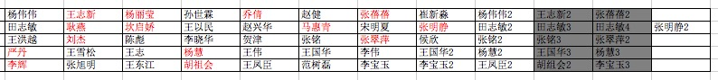 |
| 2016-08-17 18:23:40 | 你 | 我随机分出来的组 你看看需要调不 |
| 2016-08-17 18:23:47 | 你 | 需要的话我可以调 |
| 2016-08-17 18:23:51 | 我 | 好的 |
| 2016-08-17 18:24:37 | 我 | 是竖着看还是横着看 |
| 2016-08-17 18:24:45 | 你 | 横着 |
| 2016-08-17 18:24:49 | 你 | 一共5组 |
| 2016-08-17 18:26:08 | 你 | 明天再说吧 |
| 2016-08-17 18:26:18 | 你 | 我老公来了 你好好看看 我随机排的 |
| 2016-08-17 18:26:23 | 你 | 明天见 |
| 2016-08-17 18:27:46 | 你 | 我走了 |
| 2016-08-17 18:27:54 | 你 | 你一下午都不在 |
| 2016-08-17 18:28:01 | 我 | 好 |
{kind=link}
2016-08-18¶
| 2016-08-18 08:25:43 | 我 | 我明天去北京出差 |
| 2016-08-18 08:47:12 | 你 | 我知道 |
| 2016-08-18 08:47:16 | 你 | 去北京 |
| 2016-08-18 08:55:16 | 你 | 王洪越多来劲 |
| 2016-08-18 08:55:48 | 我 | 是 |
| 2016-08-18 08:59:32 | 你 | 你是真不陪我玩吗 |
| 2016-08-18 09:00:06 | 我 | 不是呀 |
| 2016-08-18 09:00:24 | 我 | 陪你玩呀 |
| 2016-08-18 09:00:55 | 你 | 恩 好吧 |
| 2016-08-18 09:01:58 | 我 | 你那么在意呀 |
| 2016-08-18 09:02:19 | 你 | 没有 |
| 2016-08-18 09:02:23 | 你 | 听你早上说的 |
| 2016-08-18 09:03:02 | 我 | 逗你都没听出来吗 |
| 2016-08-18 09:04:09 | 你 | 没有 |
| 2016-08-18 09:08:02 | 我 | 李杰这两天联系你了吗 |
| 2016-08-18 09:08:11 | 你 | 没有 |
| 2016-08-18 09:09:18 | 我 | 那就是没事了吧 |
| 2016-08-18 09:09:34 | 你 | 应该是吧 |
| 2016-08-18 09:09:46 | 你 | 不知道 等我问问他吧 有事他肯定会找我 |
| 2016-08-18 09:10:42 | 我 | 好的 |
| 2016-08-18 09:18:59 | 我 | 你对技术细节感兴趣？ |
| 2016-08-18 09:19:27 | 你 | 是 我想知道知道 |
| 2016-08-18 09:19:39 | 你 | 这也不是技术细节吧 |
| 2016-08-18 09:19:46 | 我 | 这些是 |
| 2016-08-18 09:19:50 | 你 | 哦 |
| 2016-08-18 09:19:58 | 你 | 我就是想知道他们每天干的活 |
| 2016-08-18 09:20:13 | 你 | 其实这些我都听得懂 |
| 2016-08-18 09:20:21 | 你 | 只是他们没时间给我讲 |
| 2016-08-18 09:20:23 | 我 | 我知道 |
| 2016-08-18 09:20:30 | 你 | 等待会我找范树磊去 |
| 2016-08-18 09:20:34 | 你 | 让他给我讲 |
| 2016-08-18 09:20:36 | 我 | 但是你的角色不适合 |
| 2016-08-18 09:20:56 | 我 | 还是我说的越界的问题 |
| 2016-08-18 09:20:58 | 你 | 私下里了解了解行吗 |
| 2016-08-18 09:21:12 | 我 | 你了解可以 |
| 2016-08-18 09:21:15 | 你 | 好吧 那我就不找了 |
| 2016-08-18 09:21:20 | 你 | 我只是想了解下 |
| 2016-08-18 09:21:31 | 我 | 那么你就不能在会上要求他们 |
| 2016-08-18 09:21:35 | 你 | 没有别的意思 我也管不着啊 |
| 2016-08-18 09:21:41 | 我 | 不是的 |
| 2016-08-18 09:22:20 | 我 | 前天开会的时候你就用你了解的东西要求他们 |
| 2016-08-18 09:23:03 | 我 | 实际上你充当了部分技术决策人的角色 |
| 2016-08-18 09:23:09 | 你 | 哦 |
| 2016-08-18 09:23:11 | 你 | 我知道了 |
| 2016-08-18 09:23:21 | 你 | 我知道了 |
| 2016-08-18 09:23:29 | 我 | 而你又是以PO的身份要求他们 |
| 2016-08-18 09:23:33 | 你 | 我越界了 |
| 2016-08-18 09:23:37 | 你 | 是 |
| 2016-08-18 09:24:06 | 我 | 技术细节你可以来找我 |
| 2016-08-18 09:24:41 | 你 | 哦 我知道了 我看你很忙 |
| 2016-08-18 09:24:59 | 我 | 你现在这样会让他们觉得教给你东西以后你又难为他们 |
| 2016-08-18 09:25:21 | 我 | 上次番薯和你吵也是这个原因 |
| 2016-08-18 09:25:33 | 我 | 这样很不好 |
| 2016-08-18 09:25:52 | 你 | 怎么？没看懂 |
| 2016-08-18 09:26:05 | 你 | 看懂了 |
| 2016-08-18 09:26:06 | 你 | 知道了 |
| 2016-08-18 09:27:44 | 我 | 那天开会我其实是偏袒你了 |
| 2016-08-18 09:28:24 | 你 | 恩 |
| 2016-08-18 09:28:27 | 我 | 我在他们不会太拿你怎么样 |
| 2016-08-18 09:28:54 | 我 | 我是担心我不在的时候出现上次需求评审的事情 |
| 2016-08-18 09:36:08 | 我 | 我刚想起来的，团建你不带家属吗 |
| 2016-08-18 09:36:31 | 你 | 不带 |
| 2016-08-18 09:36:43 | 我 | 哦 |
| 2016-08-18 09:37:48 | 你 | 没有认识的人，而且这次我可能事比较多，照顾不好他 |
| 2016-08-18 09:38:30 | 我 | 啊，东东还需要你照顾吗 |
| 2016-08-18 09:45:27 | 你 | 需要啊， |
| 2016-08-18 09:45:45 | 我 | 哦 |
| 2016-08-18 09:51:31 | 我 | 你可以带你姐呀，你姐不用你照顾吧 |
| 2016-08-18 09:51:54 | 你 | 我问问 我没想到她 |
| 2016-08-18 09:52:41 | 我 | 你有空吗 |
| 2016-08-18 09:53:09 | 你 | 现在吗 |
| 2016-08-18 09:53:11 | 你 | 有空 |
| 2016-08-18 09:53:22 | 我 | 和你聊点事情吧 |
| 2016-08-18 09:53:32 | 你 | 严丹把联系车的事也交给我了 她是啥也不相管了 |
| 2016-08-18 09:53:37 | 你 | 联系就联系 |
| 2016-08-18 09:53:41 | 我 | 嗯 |
| 2016-08-18 09:53:46 | 你 | 我联系我说了算 没空请示他们 |
| 2016-08-18 09:53:56 | 我 | 是 |
| 2016-08-18 09:54:25 | 我 | 我正想和你说这事呢 |
| 2016-08-18 09:54:29 | 你 | 你想说啥事 |
| 2016-08-18 09:54:30 | 你 | 说吧 |
| 2016-08-18 09:54:32 | 你 | 说吧 |
| 2016-08-18 09:54:54 | 我 | 你是不是喜欢这类的组织活动的事情 |
| 2016-08-18 09:55:18 | 你 | 还好吧 我以前也没组织过 |
| 2016-08-18 09:55:32 | 你 | 我觉得挺好玩的 |
| 2016-08-18 09:55:41 | 我 | 好的 |
| 2016-08-18 09:55:51 | 你 | 主要咱们公司的太费劲 老田太抠 严丹事太多 |
| 2016-08-18 09:56:09 | 我 | 我从昨天看你和他们讨论的时候就想到了 |
| 2016-08-18 09:56:20 | 你 | 想到什么 |
| 2016-08-18 09:56:29 | 我 | 你想做leader |
| 2016-08-18 10:01:23 | 我 | 我接着说 |
| 2016-08-18 10:01:28 | 你 | 好 |
| 2016-08-18 10:01:33 | 我 | 你以前说过你想做焦点 |
| 2016-08-18 10:02:00 | 我 | 还有scrum中你经常越界的行为 |
| 2016-08-18 10:02:07 | 你 | 恩 |
| 2016-08-18 10:02:23 | 我 | 这次团建你又比较兴奋 |
| 2016-08-18 10:02:39 | 你 | 我兴奋了吗 |
| 2016-08-18 10:02:47 | 我 | 是 |
| 2016-08-18 10:02:54 | 我 | 其实你比严丹兴奋 |
| 2016-08-18 10:03:19 | 你 | 你接着说吧 |
| 2016-08-18 10:03:42 | 我 | 这些都连起来就说明你的性格了 |
| 2016-08-18 10:04:05 | 我 | 其实是不是想当leader到不重要 |
| 2016-08-18 10:04:23 | 我 | 重要的是你想当焦点 |
| 2016-08-18 10:04:40 | 我 | 而且感觉你有控制欲 |
| 2016-08-18 10:04:51 | 我 | 你怎么啦，着凉了？ |
| 2016-08-18 10:05:37 | 你 | 可能是吧 焦点还是控制欲我分不清楚 |
| 2016-08-18 10:05:57 | 你 | 组织团建这样的事 我以前没干过 所以想经历经历 |
| 2016-08-18 10:06:17 | 你 | 等组织两次了 可能我连管都不想管了 |
| 2016-08-18 10:06:30 | 你 | 每次出门都是我老公管这些 我都没管过 |
| 2016-08-18 10:06:53 | 我 | 我说的不是这些具体的事情 |
| 2016-08-18 10:07:15 | 我 | 我是说你有当组织者的潜能 |
| 2016-08-18 10:07:32 | 你 | 恩 |
| 2016-08-18 10:07:36 | 你 | 是 |
| 2016-08-18 10:07:56 | 我 | 这样的人都有一定的控制欲 |
| 2016-08-18 10:08:17 | 你 | 是 |
| 2016-08-18 10:08:46 | 你 | 我肯定是有的 |
| 2016-08-18 10:09:03 | 我 | 我和你说这些是因为还是和之前的其他事情一样，你现在还是处于朦胧自发的阶段 |
| 2016-08-18 10:09:45 | 我 | 还是基本上是靠着本能去做 |
| 2016-08-18 10:10:08 | 你 | 是 |
| 2016-08-18 10:11:07 | 我 | 可以说我现在是帮助你认知自己 |
| 2016-08-18 10:14:00 | 你 | 嗯嗯 我姐他们3号也去团建 去唐山 |
| 2016-08-18 10:14:03 | 你 | 真晕 |
| 2016-08-18 10:17:39 | 你 | 老田这种人 怎么对钱这么磨叽 |
| 2016-08-18 10:24:51 | 我 | 他就是这样的，对钱特别在意 |
| 2016-08-18 10:25:05 | 你 | 唉 |
| 2016-08-18 10:25:12 | 我 | 算计小钱 |
| 2016-08-18 10:25:16 | 你 | 租大巴没有保险吗 |
| 2016-08-18 10:25:32 | 你 | 为什么找大巴非得经过旅行社呢 |
| 2016-08-18 10:25:36 | 你 | 我就奇怪了 |
| 2016-08-18 10:25:56 | 我 | 主要还是怕有意外 |
| 2016-08-18 10:26:21 | 你 | 大巴也有保险啊 |
| 2016-08-18 10:26:26 | 我 | 通过旅行社比较简单 |
| 2016-08-18 10:26:43 | 你 | 主要他们旅行不想跟旅行社 就用下车 |
| 2016-08-18 10:26:50 | 你 | 为什么要找旅行社 |
| 2016-08-18 10:26:56 | 我 | 这个涉及到法律上的一些东西 |
| 2016-08-18 10:27:47 | 你 | 哦 好吧 |
| 2016-08-18 10:28:23 | 我 | 通过旅行社，有些手续旅行社就代办了 |
| 2016-08-18 10:28:47 | 我 | 自己找需要自己去办，或者不办 |
| 2016-08-18 10:29:07 | 我 | 不出事，这些都没用 |
| 2016-08-18 10:29:11 | 你 | 我指的是 大巴车为什么找旅行社？ |
| 2016-08-18 10:29:13 | 我 | 就怕出事 |
| 2016-08-18 10:29:29 | 你 | 我就是不知道旅行社给找大巴中间他们帮着干了什么事 |
| 2016-08-18 10:29:54 | 我 | 旅行社帮着上保险 |
| 2016-08-18 10:30:11 | 我 | 否则你就得自己去上 |
| 2016-08-18 10:30:14 | 你 | 上啥保险 |
| 2016-08-18 10:30:30 | 我 | 意外之类的 |
| 2016-08-18 10:31:00 | 我 | 有的大巴租赁也管这些事情 |
| 2016-08-18 10:31:02 | 你 | 我没事了 |
| 2016-08-18 10:31:07 | 你 | 你忙吧 |
| 2016-08-18 10:31:09 | 你 | 我先找车 |
| 2016-08-18 10:31:13 | 我 | 好的 |
| 2016-08-18 10:32:43 | 我 | 是谁让找旅行社的 |
| 2016-08-18 10:32:49 | 你 | 严丹 |
| 2016-08-18 10:33:10 | 你 | 说保险需要旅行社上 我不知道是啥保险 |
| 2016-08-18 10:33:11 | 我 | 我估计就是 |
| 2016-08-18 10:33:19 | 你 | 非得通过旅行社 |
| 2016-08-18 10:33:24 | 你 | 也不跟团 |
| 2016-08-18 10:33:29 | 我 | 主要就是意外 |
| 2016-08-18 10:33:30 | 你 | 就用旅行社的车 |
| 2016-08-18 10:33:39 | 你 | 意外大巴车不管吗 |
| 2016-08-18 10:33:49 | 你 | 我们把钱给大巴 大巴不给上吗 |
| 2016-08-18 10:33:53 | 你 | 不纠结 |
| 2016-08-18 10:34:08 | 我 | 单独的大巴肯定不管 |
| 2016-08-18 10:34:19 | 我 | 需要找租赁公司 |
| 2016-08-18 10:34:57 | 我 | 主要是咱们不知道都需要做什么 |
| 2016-08-18 11:09:22 | 我 | 没事了 |
| 2016-08-18 11:31:13 | 我 | 亲，不要烦 |
| 2016-08-18 11:31:22 | 你 | 不烦 |
| 2016-08-18 11:31:29 | 你 | 小心驶得万年船 |
| 2016-08-18 11:31:44 | 我 | 你组织过几次就知道了 |
| 2016-08-18 11:32:29 | 我 | 其实这些事情挺锻炼人的 |
| 2016-08-18 11:32:40 | 你 | 嗯嗯 不好意思 我刚才跟你态度不好 |
| 2016-08-18 11:32:43 | 你 | 有点着急 |
| 2016-08-18 11:32:54 | 我 | 没事的 |
| 2016-08-18 11:33:10 | 我 | 我能理解你的心情 |
| 2016-08-18 11:33:16 | 你 | 欣姐同学那个说座险都有 |
| 2016-08-18 11:33:56 | 你 | 我完了 这里边事好多啊 |
| 2016-08-18 11:34:19 | 你 | 人家说不用签合同 是私对私 |
| 2016-08-18 11:34:29 | 我 | 哦 |
| 2016-08-18 11:35:01 | 我 | 你就收集信息，让严丹拿主意 |
| 2016-08-18 13:17:14 | 我 | 醒了 |
| 2016-08-18 13:17:21 | 你 | 早就醒了 |
| 2016-08-18 13:17:53 | 我 | 好的 |
| 2016-08-18 13:20:48 | 我 | 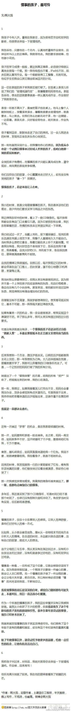 |
| 2016-08-18 13:28:23 | 我 | 你是懂事的孩子吗 |
| 2016-08-18 13:28:51 | 你 | 是 |
| 2016-08-18 13:28:59 | 你 | 我也觉得好可怜 |
| 2016-08-18 13:29:17 | 我 | 是 |
| 2016-08-18 13:29:26 | 你 | 你觉得我是吗 |
| 2016-08-18 13:29:32 | 我 | 是 |
| 2016-08-18 13:29:41 | 我 | 我看见第一个想到的就是你 |
| 2016-08-18 13:30:24 | 你 | 是吗 |
| 2016-08-18 13:30:30 | 你 | 我为什么是这样的呢 |
| 2016-08-18 13:30:57 | 你 | 我姐也是 |
| 2016-08-18 13:30:59 | 我 | 本性和教育的结果 |
| 2016-08-18 13:31:03 | 我 | 嗯 |
| 2016-08-18 13:31:07 | 你 | 恩 是 |
| 2016-08-18 13:33:45 | 我 | 其实小时候我也是 |
| 2016-08-18 13:34:02 | 我 | 但是高中的时候就不是了 |
| 2016-08-18 13:34:05 | 你 | 我刚想问你是不是 |
| 2016-08-18 13:34:14 | 我 | 大学的时候就比较叛逆了 |
| 2016-08-18 13:34:17 | 你 | 后来想到你说你很叛逆 就放弃了 |
| 2016-08-18 13:34:45 | 你 | 我对象也是比较懂事的那种 |
| 2016-08-18 13:34:52 | 你 | 他比我还厉害 |
| 2016-08-18 13:34:57 | 我 | 我小时候挨打比较多 |
| 2016-08-18 13:35:08 | 我 | 我本性还是叛逆的 |
| 2016-08-18 13:35:24 | 我 | 就是小时候被打成懂事的了 |
| 2016-08-18 13:35:42 | 你 | 是吧 |
| 2016-08-18 13:35:48 | 我 | 你的本性里面既有叛逆，也有懂事 |
| 2016-08-18 13:35:53 | 你 | 我是被吓的 |
| 2016-08-18 13:35:55 | 我 | 你的叛逆没有我多 |
| 2016-08-18 13:36:01 | 你 | 是 |
| 2016-08-18 13:36:38 | 我 | 其实咱俩从心理上说差不多，都受到了伤害 |
| 2016-08-18 13:36:51 | 我 | 只是外在的形式不一样 |
| 2016-08-18 13:36:57 | 你 | 是 |
| 2016-08-18 13:37:10 | 你 | 心里受到伤害的人也不少 |
| 2016-08-18 13:37:13 | 你 | 挺多的 |
| 2016-08-18 13:37:15 | 我 | 没错 |
| 2016-08-18 13:37:23 | 我 | 中国的教育模式就是这样 |
| 2016-08-18 13:37:30 | 你 | 这么大了 没有几个没有故事的 |
| 2016-08-18 13:37:38 | 你 | 各有各的悲惨 |
| 2016-08-18 13:37:43 | 我 | 嗯 |
| 2016-08-18 13:38:08 | 你 | 我现在想想 刚才跟你的态度真的很差 |
| 2016-08-18 13:38:11 | 你 | 对不起啊 |
| 2016-08-18 13:38:21 | 你 | 我真的不该这样 |
| 2016-08-18 13:38:31 | 我 | 没事的 |
| 2016-08-18 13:38:44 | 我 | 我真的不介意 |
| 2016-08-18 13:38:57 | 你 | 可是我介意 |
| 2016-08-18 13:40:50 | 我 | 我知道，其实你也不用介意的 |
| 2016-08-18 13:41:33 | 我 | 我就是你避风的港湾，你心情不好，和我发出来你就好了 |
| 2016-08-18 13:42:07 | 我 | 你又不能和别人去说，看着你难受的样子，我更难受 |
| 2016-08-18 13:42:25 | 你 | 唉 我不该对对我好的人这样 |
| 2016-08-18 13:42:26 | 我 | 还不如这样，你说出来就好了，我也没事 |
| 2016-08-18 13:42:43 | 我 | 你不用自责 |
| 2016-08-18 13:42:49 | 你 | 你这是在惯着我 |
| 2016-08-18 13:42:57 | 你 | 你不该这样 |
| 2016-08-18 13:43:02 | 我 | 对，我就是在惯着你 |
| 2016-08-18 13:43:58 | 我 | 其实对你好就是体现在这，就是能让你撒气的人 |
| 2016-08-18 13:44:13 | 你 | 恩 |
| 2016-08-18 13:44:29 | 你 | 你别这么说 越这么说我越难受 |
| 2016-08-18 13:44:37 | 我 | 你想想看，哪个对你好的人不是能包容你的人 |
| 2016-08-18 13:45:07 | 我 | 既然我们选择的对你好，就是选择了负担这个 |
| 2016-08-18 13:45:13 | 我 | 所以你不用自责 |
| 2016-08-18 13:45:29 | 我 | 以后你也会包容别人的 |
| 2016-08-18 13:45:38 | 我 | 这是一样的 |
| 2016-08-18 13:45:52 | 我 | 这就是广义上的爱 |
| 2016-08-18 13:45:58 | 你 | 恩 |
| 2016-08-18 13:46:08 | 你 | 我也应该学会包容别人 |
| 2016-08-18 13:46:09 | 我 | 这种爱是可以传播的 |
| 2016-08-18 13:46:18 | 你 | 还是我不够平和 |
| 2016-08-18 13:46:43 | 我 | 也不是啦 |
| 2016-08-18 13:47:43 | 我 | 你不要自责了 |
| 2016-08-18 13:48:36 | 我 | 说句你可能不爱听的，这样的自责除了让关心你的人更加担心你以外没有别的用处 |
| 2016-08-18 13:50:19 | 你 | 好伤人 |
| 2016-08-18 13:50:26 | 你 | 你不用管我 |
| 2016-08-18 13:50:32 | 你 | 我一会就没事了 |
| 2016-08-18 13:50:47 | 我 | 我还是想管 |
| 2016-08-18 13:50:49 | 你 | 可是我这种心里反应是很惯性的 |
| 2016-08-18 13:50:53 | 我 | 我想让你快乐 |
| 2016-08-18 13:51:01 | 我 | 我知道呀 |
| 2016-08-18 13:51:11 | 我 | 所以你需要理性呀 |
| 2016-08-18 13:51:29 | 我 | 你的理性应该能分辨我说的是不是对的 |
| 2016-08-18 13:51:44 | 我 | 只是你的感性还没有适应 |
| 2016-08-18 13:52:13 | 我 | 你还记得你说过你现在看电视剧写不出以前那么多东西了 |
| 2016-08-18 13:52:21 | 你 | 是 |
| 2016-08-18 13:52:36 | 我 | 就是因为你的感性已经开始被理性影响了 |
| 2016-08-18 13:52:47 | 你 | 这个我知道 |
| 2016-08-18 13:53:18 | 我 | 在你现在这个阶段，理性是压抑感性的 |
| 2016-08-18 13:53:40 | 我 | 等你到了下一个阶段，理性和感性就是合作的关系了 |
| 2016-08-18 13:54:46 | 我 | 感性和理性都可以尽情发挥自己的长处而不会带来伤害 |
| 2016-08-18 13:59:00 | 你 | 可能还需要一段时间 |
| 2016-08-18 13:59:29 | 我 | 是，可能需要很长的一段时间 |
| 2016-08-18 13:59:31 | 你 | 我大部分时间还是快乐的 但是遇到事的时候 就会有情绪 |
| 2016-08-18 13:59:51 | 我 | 所以才需要我呀[呲牙] |
| 2016-08-18 14:00:00 | 你 | 而且有些情绪 可能不但非理性 还很任性 很矫情 |
| 2016-08-18 14:00:08 | 我 | 我知道 |
| 2016-08-18 14:00:11 | 你 | 特别讨厌自己这样 |
| 2016-08-18 14:00:19 | 我 | 你也可以把这看成一种保护呀 |
| 2016-08-18 14:00:41 | 我 | 你和我闹情绪不会带给你伤害 |
| 2016-08-18 14:01:01 | 我 | 你要是和别人闹情绪，就有可能会给你带来伤害 |
| 2016-08-18 14:01:02 | 你 | 可是我怕时间长了你会烦 |
| 2016-08-18 14:01:08 | 我 | 怎么可能呢 |
| 2016-08-18 14:01:17 | 我 | 我不会烦的 |
| 2016-08-18 14:01:25 | 你 | 因为在我的世界里 不应该有你这样的人出现啊 |
| 2016-08-18 14:01:36 | 我 | 啊，为啥 |
| 2016-08-18 14:01:39 | 你 | 或者说 在我的认知里 没有你这样的人 |
| 2016-08-18 14:01:47 | 我 | 嗯 |
| 2016-08-18 14:01:58 | 你 | 我又转回来了 |
| 2016-08-18 14:02:59 | 我 | 首先，你说的是对的，我确实是个奇葩，所以你的认知是不会有我的 |
| 2016-08-18 14:04:47 | 我 | 其次，我之所以不会烦是因为我不关注事情，我关注的是你，是你的快乐。你和我闹完情绪，你好了，我的目的就达到了，所以我不会烦。 |
| 2016-08-18 14:15:56 | 你 | 刚才有个电话 |
| 2016-08-18 14:16:07 | 你 | 定了 订的不经过旅行社的 |
| 2016-08-18 14:16:16 | 你 | 就是我说的那个 严丹也没搞清楚 |
| 2016-08-18 14:16:24 | 我 | 好的 |
| 2016-08-18 14:18:12 | 我 | 你心情好了吧 |
| 2016-08-18 14:20:38 | 你 | 恩 好多了 |
| 2016-08-18 14:20:57 | 我 | 那就好 |
| 2016-08-18 14:21:43 | 我 | 我只关心你是否快乐 |
| 2016-08-18 14:21:59 | 你 | 恩 知道 |
| 2016-08-18 14:37:30 | 我 | 田在找茬呢 |
| 2016-08-18 14:40:00 | 你 | 我知道 |
| 2016-08-18 14:40:17 | 你 | 他心里想什么 我都有个数 |
| 2016-08-18 14:40:21 | 我 | 你应对的挺好 |
| 2016-08-18 14:40:30 | 你 | 他在给景喜发邮件 |
| 2016-08-18 14:40:41 | 你 | 景喜想知道咱们这个同步工具有什么功能 |
| 2016-08-18 14:40:46 | 我 | 好的 |
| 2016-08-18 14:41:05 | 你 | 而且田那个得瑟样 让人很讨厌 |
| 2016-08-18 14:41:28 | 我 | 是，一副小人得志 |
| 2016-08-18 14:41:56 | 我 | 今天早上他也是这样 |
| 2016-08-18 14:41:59 | 你 | 就是 |
| 2016-08-18 14:42:03 | 你 | 得得瑟瑟的 |
| 2016-08-18 14:42:12 | 你 | 不过表面上我对他还是不错的 |
| 2016-08-18 14:42:25 | 我 | 是 |
| 2016-08-18 14:42:43 | 我 | 其实你和洪越表面上也还可以 |
| 2016-08-18 14:42:53 | 我 | 李杰可能就不如你了 |
| 2016-08-18 14:43:04 | 你 | 是 |
| 2016-08-18 14:43:18 | 你 | 我知道他们心里想什么 所以早有准备 |
| 2016-08-18 14:43:30 | 我 | 嗯 |
| 2016-08-18 14:43:31 | 你 | 我有这种变化 多亏你 |
| 2016-08-18 14:43:43 | 你 | 不然自己被卖了 还替人数钱呢 |
| 2016-08-18 14:43:55 | 我 | 也是你自己能悟出来 |
| 2016-08-18 14:44:16 | 你 | 恩 你带领着吧 |
| 2016-08-18 14:45:03 | 我 | 咱俩就不用互相表扬了[偷笑] |
| 2016-08-18 14:45:58 | 我 | 我站起来就是专门看你笑的 |
| 2016-08-18 14:48:36 | 你 | 看到我笑了？ |
| 2016-08-18 14:49:21 | 我 | 看见啦 |
| 2016-08-18 14:49:46 | 你 | 看王志新的态度 |
| 2016-08-18 14:50:03 | 我 | 是 |
| 2016-08-18 14:50:44 | 你 | 不过啊 老田 王洪越这样的缺这样的治他们 |
| 2016-08-18 14:50:46 | 你 | 活该 |
| 2016-08-18 14:50:59 | 我 | 没错 |
| 2016-08-18 14:55:42 | 我 | 刚才洪越和我抱怨田呢 |
| 2016-08-18 14:55:52 | 你 | 呵呵 |
| 2016-08-18 14:55:57 | 你 | 他跟你没别的事 |
| 2016-08-18 14:56:04 | 我 | 是 |
| 2016-08-18 14:56:25 | 我 | 限田管的太多了 |
| 2016-08-18 14:57:02 | 我 | 每一个细节都管 |
| 2016-08-18 14:57:05 | 你 | 而且老田的态度永远都是该管的管 不该管的也得管 |
| 2016-08-18 14:57:11 | 我 | 嗯 |
| 2016-08-18 14:57:23 | 你 | 不该管的管错了 我们的错 不管 我们的错 |
| 2016-08-18 14:57:41 | 我 | 嗯 |
| 2016-08-18 14:57:46 | 我 | 你有空教我九宫吧 |
| 2016-08-18 14:58:58 | 你 | 九宫格？ |
| 2016-08-18 15:02:10 | 我 | 输入法 |
| 2016-08-18 15:02:23 | 我 | 我现在用的双拼 |
| 2016-08-18 15:02:33 | 你 | 哈哈 |
| 2016-08-18 15:02:49 | 你 | 怎么突然想用九格 |
| 2016-08-18 15:03:31 | 我 | 因为不好用呀 |
| 2016-08-18 15:03:37 | 我 | 想找一个好用的 |
| 2016-08-18 15:03:49 | 我 | 我以前试着用过九宫格 |
| 2016-08-18 15:03:58 | 我 | 完全没有概念 |
| 2016-08-18 15:04:10 | 我 | 都不知道怎么输入了 |
| 2016-08-18 15:05:07 | 你 | 哈哈 |
| 2016-08-18 15:05:18 | 你 | 王洪越找王志新谈心去了 |
| 2016-08-18 15:05:19 | 你 | 哈哈 |
| 2016-08-18 15:05:56 | 我 | 恶人还得恶人磨 |
| 2016-08-18 15:07:20 | 你 | 九格很好用 |
| 2016-08-18 15:07:26 | 你 | 你用了就知道 |
| 2016-08-18 15:07:33 | 你 | 我一句话就能把你教会 |
| 2016-08-18 15:07:36 | 我 | 好的 |
| 2016-08-18 15:44:48 | 我 | 无聊 |
| 2016-08-18 15:44:56 | 你 | 正想说 |
| 2016-08-18 15:44:57 | 我 | 我给你手机备份吧 |
| 2016-08-18 15:44:59 | 你 | 真无聊 |
| 2016-08-18 15:45:07 | 我 | 咱俩真同步 |
| 2016-08-18 15:45:32 | 你 | 哈哈 |
| 2016-08-18 15:45:40 | 你 | 他们讨论的这些东西 就很无聊 |
| 2016-08-18 15:45:52 | 我 | 是 |
| 2016-08-18 15:46:54 | 我 | 你手机没联网吗 |
| 2016-08-18 15:46:55 | 我 | 看不见你 |
| 2016-08-18 15:48:33 | 我 | 看见了 |
| 2016-08-18 15:48:56 | 你 | 刚才不在 |
| 2016-08-18 15:49:05 | 你 | 没连 |
| 2016-08-18 15:49:14 | 我 | 找个话题聊吧 |
| 2016-08-18 15:49:33 | 你 | 好 |
| 2016-08-18 15:49:37 | 我 | 说说番薯他们的设计 |
| 2016-08-18 15:49:40 | 你 | 好 |
| 2016-08-18 15:49:46 | 我 | 你想听吗 |
| 2016-08-18 15:50:12 | 你 | 想啊 |
| 2016-08-18 15:50:14 | 你 | 很响 |
| 2016-08-18 15:52:36 | 我 | 他们的架构你知道吧 |
| 2016-08-18 15:54:52 | 你 | 知道 |
| 2016-08-18 15:55:29 | 我 | 这个架构叫做静态架构 |
| 2016-08-18 15:56:00 | 你 | 哦 |
| 2016-08-18 15:56:02 | 我 | 这是无法表现系统运行的时候各个组件之间的协作关系 |
| 2016-08-18 15:56:13 | 你 | 静态架构？那也有动态架构啦 |
| 2016-08-18 15:56:19 | 你 | 嗯嗯 |
| 2016-08-18 15:56:20 | 我 | 有 |
| 2016-08-18 15:56:24 | 你 | 你接着说 |
| 2016-08-18 15:56:28 | 你 | 我特想听这个 |
| 2016-08-18 15:57:12 | 我 | 动态的部分我们一般称为协作，或者是协议，用序列图来表示 |
| 2016-08-18 15:57:25 | 你 | en |
| 2016-08-18 15:59:21 | 我 | 所谓的协议就是两个模块之间约定的术语。比如他们现在的读端和写端就要约定好一个协议，这样写就知道读发过来的东西是什么 |
| 2016-08-18 16:00:40 | 我 | 协议的核心是数据，你可以认为协议规定的就是数据的格式。 |
| 2016-08-18 16:04:33 | 你 | 你说吧 我听着呢 |
| 2016-08-18 16:04:58 | 我 | 后面这个非常重要 |
| 2016-08-18 16:05:03 | 你 | 协议我知道 我当时做的水表的那个也有协议 |
| 2016-08-18 16:05:43 | 你 | 协议就是定义数据的格式 前边按照格式写进去数据 后边安装格式解析出来 |
| 2016-08-18 16:05:44 | 我 | 数据根据业务需求会分成几类 |
| 2016-08-18 16:05:46 | 你 | 这个我知道 |
| 2016-08-18 16:05:58 | 你 | 嗯嗯 |
| 2016-08-18 16:06:02 | 我 | 一般是数据和元数据 |
| 2016-08-18 16:06:06 | 你 | 明白 |
| 2016-08-18 16:06:52 | 我 | 比如同步的数据库里面的数据，就是协议里面的数据 |
| 2016-08-18 16:07:04 | 我 | 表的定义，就是元数据 |
| 2016-08-18 16:07:05 | 你 | 恩 |
| 2016-08-18 16:07:08 | 你 | 明白 |
| 2016-08-18 16:07:17 | 你 | 还有源库的信息 |
| 2016-08-18 16:07:20 | 你 | 等等吧 |
| 2016-08-18 16:07:31 | 我 | 还可以有其他维度的元数据，比如insert update |
| 2016-08-18 16:07:48 | 你 | 这类的 当初咱们说要做成这样 就是把协议做成可扩展的 |
| 2016-08-18 16:07:55 | 我 | 对 |
| 2016-08-18 16:07:59 | 你 | 扩展源库的信息 |
| 2016-08-18 16:08:05 | 你 | 这个我知道 |
| 2016-08-18 16:08:21 | 你 | 我不知道管理模块和读、写及协议的关系 |
| 2016-08-18 16:08:26 | 我 | 刚才我说了，这些东西要分析业务需求 |
| 2016-08-18 16:08:32 | 你 | 嗯嗯 |
| 2016-08-18 16:08:34 | 你 | 是 |
| 2016-08-18 16:08:44 | 你 | 这些来源于需求 |
| 2016-08-18 16:09:18 | 你 | 就像 映射关系的中的配置 这些都是需求提出来 |
| 2016-08-18 16:09:22 | 我 | 就是说我们现在的业务需求里面有同步的数据，还要知道表结构，还要区分是insert语句还是update语句 |
| 2016-08-18 16:09:32 | 你 | 嗯嗯 |
| 2016-08-18 16:09:35 | 你 | 这部分我也知道 |
| 2016-08-18 16:09:47 | 我 | 管理工具也一样 |
| 2016-08-18 16:09:55 | 你 | 就是你说的 设计要提炼需求 |
| 2016-08-18 16:10:02 | 你 | 要分析需求 |
| 2016-08-18 16:10:03 | 我 | 没错 |
| 2016-08-18 16:10:17 | 我 | 所以现在是要提炼管理工具的需求 |
| 2016-08-18 16:10:21 | 你 | 是 |
| 2016-08-18 16:10:30 | 我 | 从中得到模型 |
| 2016-08-18 16:10:34 | 你 | 哪些需求要放到管理工具中 |
| 2016-08-18 16:10:35 | 你 | 是吧 |
| 2016-08-18 16:10:45 | 我 | 从模型中得到协议的数据模型 |
| 2016-08-18 16:10:46 | 你 | 就是要靠管理模块实现 |
| 2016-08-18 16:10:53 | 你 | 嗯嗯 |
| 2016-08-18 16:10:54 | 我 | 对 |
| 2016-08-18 16:11:23 | 我 | 所以我一直说番薯的配置文件的设计是有问题的 |
| 2016-08-18 16:11:39 | 我 | 是因为他的设计不是从需求来的，是从实现来的 |
| 2016-08-18 16:11:44 | 你 | 是 |
| 2016-08-18 16:12:18 | 我 | 现在咱们对管理工具分析的还不够 |
| 2016-08-18 16:12:28 | 你 | 是 |
| 2016-08-18 16:12:36 | 你 | 我觉得这块很有意思 |
| 2016-08-18 16:12:37 | 我 | 我也不敢做设计决策 |
| 2016-08-18 16:12:43 | 你 | 嗯嗯 |
| 2016-08-18 16:13:05 | 我 | 所以你先要帮我把管理模块的需求整理出来 |
| 2016-08-18 16:13:07 | 你 | 梳理一下 把100%确定的确定下来 |
| 2016-08-18 16:13:15 | 我 | 我才能去做设计 |
| 2016-08-18 16:13:25 | 你 | 是这样啊？ |
| 2016-08-18 16:14:35 | 你 | 那度进程的启动停止 |
| 2016-08-18 16:14:45 | 你 | 写进程的启动停止 |
| 2016-08-18 16:14:52 | 你 | 这些就是管理模块的需求 |
| 2016-08-18 16:15:01 | 我 | 对 |
| 2016-08-18 16:15:10 | 我 | 包括监控 |
| 2016-08-18 16:15:27 | 你 | 我知道这些需求肯定是我提的 但是我总觉得 这些需求是否要放到管理模块 是分析我的需求后得到的 |
| 2016-08-18 16:16:58 | 我 | 你说的对，只是现在咱们的架构基本上定了，这些没做的功能大部分都是管理模块的，具体的职责划分的细节可以等到具体设计的时候再决定 |
| 2016-08-18 16:20:02 | 你 | 恩 你的意思是 由于咱们现状决定的吧 |
| 2016-08-18 16:20:10 | 我 | 对 |
| 2016-08-18 16:20:14 | 你 | 要把能想到的需求 今早的提出来 |
| 2016-08-18 16:20:19 | 我 | 是 |
| 2016-08-18 16:20:24 | 你 | 这样管理模块的设计会更完善 |
| 2016-08-18 16:20:28 | 你 | 你说的对 |
| 2016-08-18 16:20:32 | 你 | 我觉得也是 |
| 2016-08-18 16:20:43 | 你 | 可能那天老范想表达的也是这个意思 |
| 2016-08-18 16:20:46 | 你 | 唉 |
| 2016-08-18 16:20:47 | 我 | 我说的这些其实都是一些原则性的东西，具体实施的时候会有很多变化 |
| 2016-08-18 16:20:53 | 你 | 是 说得对 |
| 2016-08-18 16:21:15 | 你 | 理想和现实总是隔着深深的沟壑 |
| 2016-08-18 16:21:23 | 我 | 正是因为有这些变化，就没有办法说某种处理方式就一定是对的 |
| 2016-08-18 16:23:00 | 我 | 所以番薯一直觉得他的做法也没错 |
| 2016-08-18 16:27:40 | 你 | 嗯嗯 |
| 2016-08-18 16:27:43 | 你 | 说得对 |
| 2016-08-18 16:28:01 | 我 | 我为啥一直说番薯是错的 |
| 2016-08-18 16:28:11 | 你 | 恩 |
| 2016-08-18 16:28:13 | 你 | 你说说 |
| 2016-08-18 16:28:15 | 我 | 是因为他的出发点不对 |
| 2016-08-18 16:28:28 | 我 | 他是从实现的角度说的 |
| 2016-08-18 16:28:43 | 我 | 总是想着他们如何去实现这个东西 |
| 2016-08-18 16:29:26 | 我 | 这种方式就是我说的自底向上的方式，做设计要自顶向下。 |
| 2016-08-18 16:29:43 | 我 | 这是两种设计哲学 |
| 2016-08-18 16:30:30 | 我 | 不是不能混用这两者，但是需要非常高的设计能力和掌控能力，没有这种能力就不要混用 |
| 2016-08-18 16:52:58 | 你 | 恩 |
| 2016-08-18 16:53:08 | 你 | 他离这一步还远着呢 |
| 2016-08-18 16:53:11 | 我 | 你忙吧 |
| 2016-08-18 16:53:39 | 你 | 不忙 |
| 2016-08-18 16:53:48 | 你 | 都是破烂事 |
| 2016-08-18 16:55:22 | 我 | 昨天也是咱俩一聊天，你们就讨论团建 |
| 2016-08-18 16:56:11 | 你 | 是 |
| 2016-08-18 16:56:19 | 你 | 今天是胡组会挑的头 |
| 2016-08-18 16:56:30 | 你 | 你看严丹 一言不合 就。。。。 |
| 2016-08-18 16:57:07 | 你 | 不说他们了 无所谓 |
| 2016-08-18 16:57:13 | 你 | 每个人都有每个人的活法 |
| 2016-08-18 16:57:16 | 我 | 是 |
| 2016-08-18 17:01:59 | 你 | 接着聊呗 |
| 2016-08-18 17:02:11 | 你 | 说我给你提供需求的事 |
| 2016-08-18 17:02:23 | 你 | 监控肯定是一大项 |
| 2016-08-18 17:02:28 | 你 | 还有异常处理部分 |
| 2016-08-18 17:02:29 | 我 | 是 |
| 2016-08-18 17:02:35 | 我 | 异常不是 |
| 2016-08-18 17:02:43 | 我 | 日志应该是 |
| 2016-08-18 17:02:44 | 你 | 启动、监控、重启Goldengate的其他进程，报告错误及事件，分配数据存储空间，发布阀值报告 |
| 2016-08-18 17:02:53 | 你 | 这个的OGG的 |
| 2016-08-18 17:03:05 | 你 | 那现在的异常也是管理模块干的 |
| 2016-08-18 17:03:24 | 我 | 你说的异常太宽泛了 |
| 2016-08-18 17:22:01 | 你 | 东东明天晚上值班 |
| 2016-08-18 17:22:08 | 你 | 明天不是周五嘛 |
| 2016-08-18 17:22:13 | 我 | 对呀 |
| 2016-08-18 17:24:08 | 我 | 可怜的宝 |
| 2016-08-18 17:27:38 | 你 | 我也是你的宝贝吗 |
| 2016-08-18 17:27:39 | 你 | 哈哈 |
| 2016-08-18 17:27:45 | 我 | 对呀 |
| 2016-08-18 17:28:05 | 你 | 这么好 |
| 2016-08-18 17:28:29 | 我 | 你喜欢吗 |
| 2016-08-18 17:28:32 | 你 | 喜欢啊 |
| 2016-08-18 17:28:40 | 我 | 那就好 |
| 2016-08-18 17:28:42 | 你 | 咱们还没说完呢 |
| 2016-08-18 17:28:55 | 我 | 嗯，接着说 |
| 2016-08-18 17:29:01 | 你 | 其实跟你在一块我还是很快乐很快乐的 |
| 2016-08-18 17:29:03 | 你 | 真的 |
| 2016-08-18 17:29:13 | 我 | 呢 |
| 2016-08-18 17:29:21 | 你 | 我想你媳妇应该是个非常幸福的女人 |
| 2016-08-18 17:29:32 | 我 | 是 |
| 2016-08-18 17:30:28 | 你 | 你说 像咱们这种知识分子对精神需求比物质还要多 |
| 2016-08-18 17:30:44 | 你 | 至少我是 |
| 2016-08-18 17:30:51 | 我 | 是 |
| 2016-08-18 17:30:55 | 你 | 我对生活的要求并不高 |
| 2016-08-18 17:31:11 | 我 | 我也一样 |
| 2016-08-18 17:31:16 | 你 | 我觉得也是 |
| 2016-08-18 17:31:39 | 我 | 精神的快乐比物质的快乐更真实、更持久 |
| 2016-08-18 17:31:42 | 你 | 不过我也挺幸福的 |
| 2016-08-18 17:31:57 | 你 | 我有你这样的知己啊 |
| 2016-08-18 17:31:58 | 我 | 你当然幸福啦 |
| 2016-08-18 17:32:04 | 你 | 婚姻有东东 |
| 2016-08-18 17:32:09 | 你 | 哈哈 |
| 2016-08-18 17:32:13 | 我 | 东东那么爱你 |
| 2016-08-18 17:32:14 | 你 | 比你媳妇幸福 |
| 2016-08-18 17:32:16 | 你 | 是 |
| 2016-08-18 17:32:22 | 你 | 你知道东东爱我吗 |
| 2016-08-18 17:32:26 | 我 | 知道呀 |
| 2016-08-18 17:32:27 | 你 | 他真的很爱我 |
| 2016-08-18 17:32:32 | 我 | 是 |
| 2016-08-18 17:33:06 | 你 | 你说这种爱 是基于什么的 |
| 2016-08-18 17:33:11 | 你 | 你为什么还爱你媳妇 |
| 2016-08-18 17:33:25 | 我 | 这是两种爱好不好 |
| 2016-08-18 17:33:39 | 你 | 不是啊 |
| 2016-08-18 17:33:49 | 你 | 东东爱我 和你爱你媳妇 是一种吧 |
| 2016-08-18 17:34:16 | 我 | 这个是一种 |
| 2016-08-18 17:34:52 | 我 | 我会一直爱我媳妇呀 |
| 2016-08-18 17:35:12 | 我 | 没有原因说不爱呀 |
| 2016-08-18 17:35:31 | 你 | 我就说你爱你媳妇的这种爱是基于什么的 |
| 2016-08-18 17:35:37 | 你 | 你为什么爱她 |
| 2016-08-18 17:35:41 | 你 | 你爱她什么 |
| 2016-08-18 17:35:50 | 我 | 太多了 |
| 2016-08-18 17:36:10 | 我 | 价值观相同是最重要的 |
| 2016-08-18 17:36:24 | 我 | 在生活中互帮互助 |
| 2016-08-18 17:36:29 | 我 | 还有孩子 |
| 2016-08-18 17:36:48 | 我 | 当然还有sex啦 |
| 2016-08-18 17:37:17 | 你 | 哈哈 |
| 2016-08-18 17:37:28 | 你 | 那这样的人还有很多 |
| 2016-08-18 17:37:34 | 你 | 你为什么不爱别人 |
| 2016-08-18 17:37:55 | 我 | 价值观不同就少了很多人啦 |
| 2016-08-18 17:38:29 | 我 | 你也应该知道我是非常宠人的 |
| 2016-08-18 17:38:38 | 我 | 但是也得是能值得我宠的 |
| 2016-08-18 17:38:48 | 我 | 能让我看上的太少了 |
| 2016-08-18 17:39:40 | 你 | 是 |
| 2016-08-18 17:39:52 | 你 | 你是我见过最能宠人的人了 |
| 2016-08-18 17:40:51 | 我 | 这是因为我的理性和感性分开的缘故 |
| 2016-08-18 17:41:08 | 我 | 有理性做后盾，我可以更感性 |
| 2016-08-18 17:41:22 | 你 | 真的啊 |
| 2016-08-18 17:41:28 | 你 | 不知道那是什么感觉 |
| 2016-08-18 17:41:34 | 我 | 理性用来分析别人需要什么 |
| 2016-08-18 17:41:41 | 我 | 感性用来宠人 |
| 2016-08-18 17:42:09 | 我 | 所以我宠人不是瞎宠 |
| 2016-08-18 17:42:42 | 你 | 哈哈 |
| 2016-08-18 17:42:43 | 我 | 不该宠或不能宠的绝不宠 |
| 2016-08-18 17:43:17 | 你 | 为什么你从来都不会怪我呢 |
| 2016-08-18 17:43:33 | 你 | 我是说 我好像做什么 你都不会觉得意外 |
| 2016-08-18 17:43:47 | 你 | 可能跟你总是做最坏的打算有关 |
| 2016-08-18 17:43:48 | 我 | 你又没做出格的事情，我为什么要怪你 |
| 2016-08-18 17:43:57 | 我 | 你猜错了 |
| 2016-08-18 17:44:00 | 你 | 有的时候会觉得我做错了 |
| 2016-08-18 17:44:22 | 我 | 是，但是我知道你的错不是你主观故意的 |
| 2016-08-18 17:44:44 | 我 | 你之前写软需的时候偷懒我也一样说过你 |
| 2016-08-18 17:45:32 | 你 | 你后来发现我偷懒了吗 |
| 2016-08-18 17:45:44 | 你 | 说实话我都没感觉自己偷懒了 |
| 2016-08-18 17:46:02 | 我 | 没有 |
| 2016-08-18 17:47:37 | 你 | 你还记得我怎么偷懒了吗 |
| 2016-08-18 17:47:55 | 我 | 记得 |
| 2016-08-18 17:48:20 | 你 | 快跟我说说 |
| 2016-08-18 17:48:28 | 我 | 我让你改，你不改，说已经写了这么多了，不想改 |
| 2016-08-18 17:48:54 | 我 | 有一次我让你必须改 |
| 2016-08-18 17:49:36 | 你 | 我都不记得 |
| 2016-08-18 17:56:12 | 我 | 我知道 |
| 2016-08-18 18:01:01 | 你 | 你当时生气了吗 |
| 2016-08-18 18:01:33 | 我 | 生气到不至于 |
| 2016-08-18 18:13:10 | 我 | 你干什么呢 |
| 2016-08-18 18:13:16 | 你 | 测试 |
| 2016-08-18 18:13:24 | 你 | 你是不是特别不想去北京啊 |
| 2016-08-18 18:13:53 | 我 | 我想陪着你，看着你 |
| 2016-08-18 18:14:14 | 你 | 恩 |
| 2016-08-18 18:15:51 | 你 | 感觉是 |
| 2016-08-18 18:16:00 | 你 | 你干嘛呢 |
| 2016-08-18 18:16:26 | 我 | 看微博，等你和我聊天 |
| 2016-08-18 18:16:32 | 你 | 聊吧 |
| 2016-08-18 18:16:35 | 你 | 我都有空 |
| 2016-08-18 18:16:37 | 我 | 好呀 |
| 2016-08-18 18:16:53 | 你 | 我觉得田越来越信任我了 |
| 2016-08-18 18:17:06 | 你 | 但是老田是典型的用人型的 |
| 2016-08-18 18:17:12 | 我 | 没错 |
| 2016-08-18 18:17:24 | 我 | 而且你知道还有一个原因 |
| 2016-08-18 18:17:32 | 你 | 每次问他个问题 他都没耐心 |
| 2016-08-18 18:17:34 | 你 | 什么 |
| 2016-08-18 18:17:41 | 我 | 他无人可用了 |
| 2016-08-18 18:17:46 | 你 | 是 |
| 2016-08-18 18:17:51 | 我 | 能用的都让他得罪了 |
| 2016-08-18 18:17:55 | 你 | 是 |
| 2016-08-18 18:17:57 | 我 | 以前他不care你 |
| 2016-08-18 18:18:02 | 你 | 这样我才有机会 |
| 2016-08-18 18:18:06 | 你 | 是 |
| 2016-08-18 18:18:07 | 我 | 所以也没得罪你 |
| 2016-08-18 18:18:11 | 你 | 哈哈 |
| 2016-08-18 18:18:13 | 你 | 是的 |
| 2016-08-18 18:18:19 | 你 | 不过我不怕他得罪 |
| 2016-08-18 18:18:20 | 你 | 随便 |
| 2016-08-18 18:18:23 | 你 | 我不在乎 |
| 2016-08-18 18:18:31 | 你 | 唉 |
| 2016-08-18 18:18:39 | 我 | 不是的 |
| 2016-08-18 18:18:43 | 你 | 他跟王志新也是面和心不合了 |
| 2016-08-18 18:18:58 | 我 | 其实田自己心里很清楚他得罪过谁 |
| 2016-08-18 18:19:05 | 你 | 是 |
| 2016-08-18 18:19:11 | 我 | 就算你不在乎，他可是在乎的 |
| 2016-08-18 18:19:25 | 你 | 这句话没听懂 |
| 2016-08-18 18:19:38 | 我 | 比如说他得罪过你，但是你不在意 |
| 2016-08-18 18:19:48 | 你 | 然后呢 |
| 2016-08-18 18:19:51 | 我 | 你还是对他挺好的 |
| 2016-08-18 18:19:58 | 我 | 可是他就不这么想 |
| 2016-08-18 18:19:59 | 你 | 然后 |
| 2016-08-18 18:20:10 | 你 | 他怎么想 |
| 2016-08-18 18:20:21 | 我 | 他认为得罪过你，你还这么好，一定是有所图的 |
| 2016-08-18 18:20:28 | 你 | 是？ |
| 2016-08-18 18:20:38 | 我 | 他就会和保持距离 |
| 2016-08-18 18:20:45 | 我 | 你看他现在和我就是这样 |
| 2016-08-18 18:21:00 | 你 | 再然后呢 |
| 2016-08-18 18:21:14 | 我 | 他就会防着你 |
| 2016-08-18 18:21:52 | 你 | 无所谓吧 |
| 2016-08-18 18:22:01 | 你 | 防着就防着 |
| 2016-08-18 18:22:06 | 你 | 本来也不是他的人 |
| 2016-08-18 18:22:14 | 我 | 是 |
| 2016-08-18 18:22:17 | 你 | 他觉得测试组是他的大本营是吧 |
| 2016-08-18 18:22:25 | 我 | 是 |
| 2016-08-18 18:22:26 | 你 | 我跟他不用特别好 |
| 2016-08-18 18:22:29 | 我 | 我们是一样的 |
| 2016-08-18 18:22:34 | 你 | 别人看着好就行 |
| 2016-08-18 18:22:41 | 我 | 他靠的是国华，我靠的是旭明 |
| 2016-08-18 18:22:47 | 你 | 是 |
| 2016-08-18 18:22:59 | 你 | 但是现在王洪越很明显是投靠你的 |
| 2016-08-18 18:23:03 | 我 | 他想提蓓蓓，我这边是杨丽莹 |
| 2016-08-18 18:23:16 | 你 | 哦 |
| 2016-08-18 18:23:19 | 我 | 表面上是这样 |
| 2016-08-18 18:23:32 | 你 | 恩 好 |
| 2016-08-18 18:23:47 | 你 | 他会防着我吗 |
| 2016-08-18 18:23:52 | 我 | 现在不会 |
| 2016-08-18 18:24:00 | 你 | 什么时候会 |
| 2016-08-18 18:24:09 | 我 | 不知道 |
| 2016-08-18 18:24:10 | 你 | 是因为我做的事还不够核心吗 |
| 2016-08-18 18:24:16 | 我 | 我觉得这取决于他 |
| 2016-08-18 18:24:27 | 你 | 不管 我地让他重用我 |
| 2016-08-18 18:24:33 | 你 | 这样才能达到我的目的 |
| 2016-08-18 18:24:40 | 你 | 我最后的目的是老杨 |
| 2016-08-18 18:25:02 | 我 | 你要是这么想，我感觉不好 |
| 2016-08-18 18:25:05 | 你 | 就像我跟李杰说的 |
| 2016-08-18 18:25:10 | 你 | 怎么了 |
| 2016-08-18 18:25:11 | 我 | 你有点太功利了 |
| 2016-08-18 18:25:25 | 我 | 不是说性质不好 |
| 2016-08-18 18:25:38 | 我 | 我从来不会考虑性质的问题 |
| 2016-08-18 18:25:44 | 你 | 什么意思 |
| 2016-08-18 18:25:55 | 你 | 你知道 我还是很在乎老杨的 |
| 2016-08-18 18:25:56 | 你 | 真的 |
| 2016-08-18 18:26:18 | 我 | 我是说你如果目标就是想让他重用你，那么你就会忽略其他重要的事情 |
| 2016-08-18 18:26:33 | 你 | 我给你说说我的打算 |
| 2016-08-18 18:26:37 | 你 | 我记得跟你说过 |
| 2016-08-18 18:26:43 | 我 | 你说过 |
| 2016-08-18 18:26:51 | 你 | 你看这几个leader 可能就差田了 |
| 2016-08-18 18:26:56 | 你 | 其他的我都接触过 |
| 2016-08-18 18:27:00 | 你 | 包括严丹 |
| 2016-08-18 18:27:05 | 你 | 你就更不用说 |
| 2016-08-18 18:27:31 | 你 | 我想的是 老田要是也认可我的话 首先我就不怕王洪越了 |
| 2016-08-18 18:27:44 | 你 | 从根上我就可以摆脱他 |
| 2016-08-18 18:28:16 | 你 | 其次 我跟杨总的接触几乎没有工作方面的 我希望老田能帮我说上话 |
| 2016-08-18 18:28:23 | 你 | 这对我来说只有好处啊 |
| 2016-08-18 18:28:35 | 你 | 所以我肯定会好好给田做事 |
| 2016-08-18 18:28:51 | 你 | 这跟我的目标不相悖 |
| 2016-08-18 18:29:15 | 你 | 你怎么不说话了 |
| 2016-08-18 18:29:16 | 我 | 然后呢 |
| 2016-08-18 18:29:24 | 你 | 然后的事没想过 |
| 2016-08-18 18:29:27 | 我 | 你想到什么位置上？ |
| 2016-08-18 18:29:33 | 你 | 我不知道 |
| 2016-08-18 18:29:36 | 你 | 我没想过 |
| 2016-08-18 18:29:53 | 我 | 按照你现在的设想，你还在这个位置 |
| 2016-08-18 18:30:11 | 我 | 老杨重视你了，然后呢 |
| 2016-08-18 18:30:28 | 你 | 然后我能力上去了 就可以做别的事了啊 |
| 2016-08-18 18:30:34 | 我 | 什么？ |
| 2016-08-18 18:30:41 | 你 | 你这么问我我不知道怎么回答你 |
| 2016-08-18 18:31:08 | 我 | 你想做什么事情 |
| 2016-08-18 18:31:19 | 你 | 如果可以 做开发中心的产品经理也不错啊 |
| 2016-08-18 18:31:30 | 我 | 简单说你说的都是战术，战略呢 |
| 2016-08-18 18:31:41 | 你 | 战略 ？ |
| 2016-08-18 18:31:48 | 我 | 对 |
| 2016-08-18 18:31:56 | 你 | 我觉得拿下老田就是我的战略 打败王洪越 |
| 2016-08-18 18:32:17 | 我 | 好吧 |
| 2016-08-18 18:32:28 | 你 | 战术 就是好好干活 |
| 2016-08-18 18:32:30 | 你 | 哈哈 |
| 2016-08-18 18:32:36 | 你 | 是不是很low |
| 2016-08-18 18:32:49 | 我 | 我很失望 |
| 2016-08-18 18:32:50 | 你 | 我得收买老田的心 |
| 2016-08-18 18:32:52 | 你 | 咋了 |
| 2016-08-18 18:32:55 | 你 | 咋了 |
| 2016-08-18 18:32:57 | 你 | 失望啥 |
| 2016-08-18 18:33:16 | 你 | 怎么了 |
| 2016-08-18 18:33:20 | 我 | 如果你说的战略是你想的 |
| 2016-08-18 18:33:34 | 我 | 那么你没有必要去做产品经理 |
| 2016-08-18 18:33:43 | 我 | 你可以做老田的严丹 |
| 2016-08-18 18:33:51 | 我 | 这样更快 |
| 2016-08-18 18:34:00 | 你 | 当然不行啦 |
| 2016-08-18 18:34:08 | 我 | 而且现在老田也是这么看你的 |
| 2016-08-18 18:34:24 | 你 | 可是我总得有个跟老田接触的过程 |
| 2016-08-18 18:34:42 | 你 | 我肯定不会做严丹的活的 |
| 2016-08-18 18:34:59 | 你 | 我还是很喜欢需求分析 |
| 2016-08-18 18:35:01 | 我 | 他现在让你做的就是 |
| 2016-08-18 18:35:17 | 你 | 这些行政类的 只是我的敲门砖而已 |
| 2016-08-18 18:35:18 | 我 | 你和他的交集只有这些 |
| 2016-08-18 18:35:28 | 你 | 但是以后会有别的啊 |
| 2016-08-18 18:35:43 | 你 | 你想说什么 |
| 2016-08-18 18:35:53 | 你 | 是我不应该做这些事是吗？ |
| 2016-08-18 18:35:55 | 我 | 你和李杰犯了同一个毛病 |
| 2016-08-18 18:36:21 | 我 | 你应该做这些事情，但你的战略目标不对 |
| 2016-08-18 18:36:30 | 我 | 王洪越就是你的阎 |
| 2016-08-18 18:36:39 | 我 | 现在田或者老杨就是邱 |
| 2016-08-18 18:36:52 | 我 | 你们两个一样一样的 |
| 2016-08-18 18:36:55 | 你 | 所以我在靠拢邱啊 |
| 2016-08-18 18:37:02 | 我 | 除了你有我以外 |
| 2016-08-18 18:37:08 | 你 | 我没在阎红彦上花心思啊 |
| 2016-08-18 18:37:16 | 你 | 你觉得我哪错了 |
| 2016-08-18 18:37:27 | 我 | 我说说我的设想吧 |
| 2016-08-18 18:37:29 | 你 | 恩 |
| 2016-08-18 18:37:31 | 你 | 好 |
| 2016-08-18 18:38:14 | 我 | 我给你安排的战略目标是产品经理，不一定是咱们的 |
| 2016-08-18 18:38:25 | 你 | 恩 |
| 2016-08-18 18:38:31 | 我 | 所以我给你训练的都是这个方向 |
| 2016-08-18 18:38:38 | 你 | 恩 |
| 2016-08-18 18:38:40 | 我 | 这是你的技能的部分 |
| 2016-08-18 18:38:43 | 你 | 是 |
| 2016-08-18 18:38:47 | 我 | 现在说说你的职业规划 |
| 2016-08-18 18:38:52 | 你 | 好 |
| 2016-08-18 18:39:11 | 我 | 你做需求组，没有你的上升空间 |
| 2016-08-18 18:39:20 | 我 | 因为你做的再好，也只是需求 |
| 2016-08-18 18:39:21 | 你 | 恩 |
| 2016-08-18 18:39:24 | 你 | 是 |
| 2016-08-18 18:39:35 | 我 | 所以我安排你做PO |
| 2016-08-18 18:39:41 | 你 | 恩 |
| 2016-08-18 18:40:08 | 我 | 就是想给你铺一条别人没走过的路 |
| 2016-08-18 18:40:21 | 我 | 这样在这条路上你就是专家 |
| 2016-08-18 18:40:22 | 你 | 恩 |
| 2016-08-18 18:40:27 | 你 | 是 |
| 2016-08-18 18:40:35 | 你 | 对 |
| 2016-08-18 18:40:39 | 我 | 所以你才有机会升职 |
| 2016-08-18 18:40:49 | 我 | 你的目标一定是升职 |
| 2016-08-18 18:41:00 | 我 | 至少是和王洪越一级的 |
| 2016-08-18 18:41:05 | 你 | 是 |
| 2016-08-18 18:41:37 | 我 | 未来我会通过种种措施让scrum在开发中心成为主流 |
| 2016-08-18 18:41:38 | 你 | 和你说的比起来 我想的肯定还是眼皮子底下这点事 |
| 2016-08-18 18:41:59 | 你 | 这些我都没想过 |
| 2016-08-18 18:42:08 | 我 | 那么你就不会直接和他们竞争 |
| 2016-08-18 18:42:13 | 你 | 是 |
| 2016-08-18 18:42:17 | 你 | 你说的很对 |
| 2016-08-18 18:42:30 | 我 | 这时候老杨自然就会用你了 |
| 2016-08-18 18:42:36 | 你 | 对的 |
| 2016-08-18 18:42:39 | 我 | 不用你去找他 |
| 2016-08-18 18:42:47 | 你 | 这里边根本没有老田的事 |
| 2016-08-18 18:42:51 | 你 | 你说的很对 |
| 2016-08-18 18:42:53 | 我 | 这个过程就叫做造势 |
| 2016-08-18 18:42:57 | 你 | 嗯嗯 |
| 2016-08-18 18:42:59 | 你 | 是 |
| 2016-08-18 18:43:02 | 你 | 我错了 |
| 2016-08-18 18:43:07 | 你 | 我真的错了 |
| 2016-08-18 18:43:18 | 我 | 到时候老田用你也是用你产品经理的能力 |
| 2016-08-18 18:43:26 | 我 | 不是行政能力 |
| 2016-08-18 18:43:31 | 你 | 嗯嗯 对的 |
| 2016-08-18 18:43:39 | 你 | 这才是我想要的 |
| 2016-08-18 18:43:53 | 你 | 我想的完全是自底向上的 |
| 2016-08-18 18:44:02 | 你 | 而且上边也没考虑 |
| 2016-08-18 18:44:05 | 我 | 你还记得今天下午老田找事吗 |
| 2016-08-18 18:44:10 | 你 | 记得 |
| 2016-08-18 18:44:13 | 你 | 记得 |
| 2016-08-18 18:44:28 | 我 | 如果你一直让他这样压着你，你就永远没有出头之日 |
| 2016-08-18 18:44:47 | 我 | 我为啥把scrum看的这么紧 |
| 2016-08-18 18:44:55 | 我 | 就是不想让老田进来 |
| 2016-08-18 18:44:57 | 你 | 恩 |
| 2016-08-18 18:45:00 | 你 | 明白 |
| 2016-08-18 18:45:02 | 你 | 我知道 |
| 2016-08-18 18:45:09 | 我 | 他进来就会像今天一样压着你 |
| 2016-08-18 18:45:12 | 你 | 我错了 真的错了 你失望是对的 |
| 2016-08-18 18:45:20 | 我 | 那么你就做不成产品经理了 |
| 2016-08-18 18:45:21 | 你 | 是我眼界太低 |
| 2016-08-18 18:45:27 | 你 | 是 你说的很对 |
| 2016-08-18 18:45:51 | 我 | 今天下午你的应对非常好，非常得体 |
| 2016-08-18 18:46:03 | 你 | 其实我自己的想法本身就是有矛盾的 我自己也推出来了 只是我没有想到怎么办 就没去想 |
| 2016-08-18 18:46:13 | 你 | 你一下子点醒了我 |
| 2016-08-18 18:46:15 | 我 | 但是一定要记住，PO是你不是他 |
| 2016-08-18 18:46:25 | 你 | 我都忘了我跟他说的是啥 |
| 2016-08-18 18:46:46 | 我 | 你说当时没有经验，没写好 |
| 2016-08-18 18:47:04 | 你 | 这句说的好啊 |
| 2016-08-18 18:47:11 | 我 | 对 |
| 2016-08-18 18:47:14 | 你 | 你说说好在哪 |
| 2016-08-18 18:47:22 | 你 | 我还没有get到 |
| 2016-08-18 18:47:42 | 我 | 首先你表现的一个低姿态，没有否认他，其实也没有承认他 |
| 2016-08-18 18:48:14 | 我 | 其次你说明你是一个新手，降低了他对你的警惕 |
| 2016-08-18 18:48:23 | 你 | 哦 |
| 2016-08-18 18:48:29 | 我 | 第三就是他觉得你听他的话 |
| 2016-08-18 18:48:34 | 你 | 哦 |
| 2016-08-18 18:48:39 | 你 | 是吧 |
| 2016-08-18 18:49:06 | 你 | 主要是以后他可能就不那么防着我了 |
| 2016-08-18 18:49:09 | 我 | 我还有一句话 |
| 2016-08-18 18:49:13 | 你 | 恩 |
| 2016-08-18 18:49:44 | 我 | 在我说的这个战略的前提下，我不反对你和田走的很近 |
| 2016-08-18 18:49:58 | 我 | 我也不反对你说的你要做的事情 |
| 2016-08-18 18:49:59 | 你 | 恩 |
| 2016-08-18 18:50:20 | 你 | 所以我没有错的很离谱 |
| 2016-08-18 18:50:28 | 你 | 我真知道错了 |
| 2016-08-18 18:50:34 | 你 | 我从来没这么觉得自己错过 |
| 2016-08-18 18:50:36 | 我 | 如果你放弃了这个战略，你就放弃了你自己 |
| 2016-08-18 18:50:45 | 你 | 你刚才说你失望 我很不解 |
| 2016-08-18 18:50:52 | 你 | 现在看来 你的失望是对的 |
| 2016-08-18 18:51:30 | 你 | 我不是放弃这个战略 是我压根没想到这个战略 |
| 2016-08-18 18:52:30 | 你 | 东东到了 我走了 明天接着谈 我好好想想 别回了 |
{kind=link}
2016-08-19¶
| 2016-08-19 08:31:05 | 你 | 大叔 你把昨天的聊天记录传上去 我得看看 |
| 2016-08-19 08:45:36 | 我 | 现在不行，我在地铁上，我待会给你先转一份 |
| 2016-08-19 08:46:57 | 我 | [链接] 王雪松的聊天记录 |
| 2016-08-19 08:47:25 | 我 | 记录我下午给你传 |
| 2016-08-19 08:51:47 | 你 | 不着急 |
| 2016-08-19 08:51:53 | 你 | 你记得传就行 |
| 2016-08-19 08:51:56 | 你 | 到哪了 |
| 2016-08-19 08:54:03 | 我 | 5号线 |
| 2016-08-19 09:30:25 | 我 | 我到了，有事吗 |
| 2016-08-19 09:30:46 | 你 | 没事 我想地铁上肯定很挤 |
| 2016-08-19 09:31:02 | 我 | 还行 |
| 2016-08-19 09:33:45 | 我 | 你昨天睡好了吗 |
| 2016-08-19 09:34:04 | 你 | 没有 |
| 2016-08-19 09:34:28 | 我 | 不会是因为我吧 |
| 2016-08-19 09:36:51 | 你 | 晨会 稍等 |
| 2016-08-19 09:45:02 | 你 | 结束了 没啥事 |
| 2016-08-19 09:45:22 | 我 | 好的 |
| 2016-08-19 09:45:24 | 你 | 我昨天10点多就睡了 2点醒了 一直醒到5点 睡不着 |
| 2016-08-19 09:45:35 | 你 | 后来可睡着了 就起床咧 |
| 2016-08-19 09:46:31 | 我 | 啊，怎么睡不着 |
| 2016-08-19 09:46:48 | 你 | 就是一直想事情 |
| 2016-08-19 09:46:52 | 你 | 太兴奋 |
| 2016-08-19 09:46:54 | 你 | 就没睡着 |
| 2016-08-19 09:47:13 | 我 | 想什么事情 |
| 2016-08-19 09:47:27 | 你 | PO的事 还有团建的事 |
| 2016-08-19 09:48:48 | 我 | 唉 |
| 2016-08-19 09:48:57 | 你 | 咋了 |
| 2016-08-19 09:49:21 | 我 | 我就担心你这样 |
| 2016-08-19 09:49:31 | 我 | 因为我也经常这样 |
| 2016-08-19 09:49:47 | 你 | 你也会啊 |
| 2016-08-19 09:49:50 | 你 | 真的吗 |
| 2016-08-19 09:49:59 | 我 | 真的 |
| 2016-08-19 09:50:09 | 你 | 唉 是挺难受的 |
| 2016-08-19 09:50:17 | 你 | 心里一有事 就睡不着了 |
| 2016-08-19 09:50:21 | 我 | 是 |
| 2016-08-19 09:52:21 | 你 | 你一说PO的事 我想我应该把主要精力放在『to be a good PO』上 |
| 2016-08-19 09:52:44 | 我 | 嗯 |
| 2016-08-19 09:52:45 | 你 | 然后我就想这几个迭代我积攒下来的关于PO的经验 |
| 2016-08-19 09:52:48 | 你 | 一个个的过 |
| 2016-08-19 09:52:54 | 你 | 越过越兴奋 |
| 2016-08-19 09:53:01 | 我 | 是 |
| 2016-08-19 09:53:07 | 你 | 累死了 |
| 2016-08-19 09:53:17 | 我 | 好心疼 |
| 2016-08-19 09:53:18 | 你 | 我以为过过会睡着 |
| 2016-08-19 09:53:22 | 你 | 结果还是睡不着 |
| 2016-08-19 09:53:29 | 你 | 后来就开始想团建的事 |
| 2016-08-19 09:53:35 | 我 | 嗯 |
| 2016-08-19 09:53:38 | 你 | 更睡不着了 |
| 2016-08-19 09:55:31 | 我 | 我也有过这样的情况，有几次也是因为想你的事情 |
| 2016-08-19 09:55:38 | 你 | 哈哈 |
| 2016-08-19 09:55:48 | 你 | 我还想你昨天说的设计的事 |
| 2016-08-19 09:56:01 | 你 | 这个确实我得做一部分工作 |
| 2016-08-19 09:56:11 | 你 | 我打算今天就做 |
| 2016-08-19 09:56:25 | 我 | 做什么 |
| 2016-08-19 09:56:43 | 你 | 就是管理模块应该怎么设计啊 |
| 2016-08-19 09:56:53 | 你 | 我得给你们提供需求点 |
| 2016-08-19 09:56:57 | 我 | 好的 |
| 2016-08-19 09:57:02 | 你 | 我找找OGG的 |
| 2016-08-19 09:57:15 | 你 | 至少把业界这些都有的拿到 |
| 2016-08-19 09:57:25 | 我 | 我更新记录了，你试试能看吗 |
| 2016-08-19 09:57:44 | 你 | 嗯嗯 |
| 2016-08-19 09:57:46 | 你 | 好 |
| 2016-08-19 10:03:53 | 你 | 你说你对武总汇报的那个 管理模块的『架构上引入管理模块，用于管理读、写进程，并实现配置8t到8a表的映射关系，同步工具将建立了映射关系的8t数据库数据同步到8a数据库中。』 |
| 2016-08-19 10:03:59 | 你 | 改成这样『架构上引入管理模块，使用该模块初步实现配置同步任务的表的映射关系及相应的异常处理，后续迭代中逐渐完善该模块职责，包括管理读、写进程，监控同步任务等』 |
| 2016-08-19 10:04:06 | 你 | 会不会稍微好一些 |
| 2016-08-19 10:04:25 | 我 | 可以 |
| 2016-08-19 10:04:33 | 你 | 会好一点吗 |
| 2016-08-19 10:04:41 | 你 | 我昨天想的 嘻嘻 |
| 2016-08-19 10:05:20 | 你 | 聊天记录能看 |
| 2016-08-19 10:09:07 | 我 | 好的 |
| 2016-08-19 11:12:40 | 我 | 完事了 |
| 2016-08-19 11:12:50 | 你 | 嗯嗯 下午呢 |
| 2016-08-19 11:12:52 | 你 | 继续吗 |
| 2016-08-19 11:13:55 | 我 | 没事了 |
| 2016-08-19 11:14:06 | 我 | 我回家 |
| 2016-08-19 11:14:21 | 你 | 恩 好 |
| 2016-08-19 11:28:11 | 我 | 阿娇周一要请假 |
| 2016-08-19 11:28:25 | 你 | 恩 拍婚纱照 |
| 2016-08-19 11:28:39 | 我 | 你明天加班吗 |
| 2016-08-19 11:32:12 | 你 | 不加 |
| 2016-08-19 11:32:22 | 你 | http://tieba.baidu.com/p/4736678346?pn=2 |
| 2016-08-19 11:34:19 | 你 | 阿娇又跟他对象吵架了 |
| 2016-08-19 11:35:17 | 我 | 啊 |
| 2016-08-19 11:35:35 | 我 | 这次又为啥 |
| 2016-08-19 11:37:23 | 你 | 都是小事，阿娇太倔了 |
| 2016-08-19 11:37:46 | 我 | 性格如此 |
| 2016-08-19 11:37:56 | 你 | 我都怕他俩老这么闹，杜杨会打她 |
| 2016-08-19 11:38:06 | 你 | 杜杨那个人特… |
| 2016-08-19 11:38:16 | 我 | 哦 |
| 2016-08-19 11:55:05 | 我 | 你吃完了吗 |
| 2016-08-19 12:00:41 | 你 | 恩 |
| 2016-08-19 12:00:57 | 你 | 刚吃完 |
| 2016-08-19 12:01:02 | 我 | 好的 |
| 2016-08-19 12:01:26 | 我 | 我到车站了，1点的火车 |
| 2016-08-19 12:05:39 | 你 | 嗯嗯 好 |
| 2016-08-19 12:05:44 | 你 | 跟老陈分开了吗 |
| 2016-08-19 12:05:50 | 你 | 回家吃饭吗？ |
| 2016-08-19 12:05:52 | 我 | 是 |
| 2016-08-19 13:06:40 | 你 | 醒了，上车了吗 |
| 2016-08-19 13:06:59 | 我 | 是，开车了 |
| 2016-08-19 13:07:11 | 你 | 恩 好 |
| 2016-08-19 13:07:19 | 我 | 我有一下午的时间陪你 |
| 2016-08-19 13:07:35 | 你 | 恩 我看看 |
| 2016-08-19 13:07:44 | 你 | 1：30有个评审会 估计没啥事 |
| 2016-08-19 13:07:59 | 我 | 好的 |
| 2016-08-19 13:08:13 | 我 | 就是版本号的吧 |
| 2016-08-19 13:08:23 | 你 | 是 |
| 2016-08-19 13:08:32 | 你 | 这周你们组的事稍微少点 |
| 2016-08-19 13:08:43 | 我 | 是 |
| 2016-08-19 13:14:07 | 我 | 今天番薯他们有事吗 |
| 2016-08-19 13:14:23 | 你 | 没啥事 |
| 2016-08-19 13:14:25 | 你 | 都没啥事 |
| 2016-08-19 13:14:37 | 你 | 北京地铁早上很挤吧 |
| 2016-08-19 13:15:26 | 我 | 嗯，挤不动 |
| 2016-08-19 13:15:39 | 我 | 你上次回来也一样吧 |
| 2016-08-19 13:15:42 | 你 | 是 |
| 2016-08-19 13:15:45 | 你 | 很挤 |
| 2016-08-19 13:15:57 | 你 | 手机都拿不出来 哈哈 |
| 2016-08-19 13:16:16 | 我 | 是 |
| 2016-08-19 13:16:39 | 我 | 我已经不适应北京了 |
| 2016-08-19 13:16:59 | 你 | 是 |
| 2016-08-19 13:17:03 | 你 | 我也是 |
| 2016-08-19 13:17:10 | 你 | 人都是这样 |
| 2016-08-19 13:17:52 | 我 | 还好今天地铁时间不长 |
| 2016-08-19 13:18:16 | 你 | 恩 |
| 2016-08-19 13:18:19 | 你 | 也不是总去 |
| 2016-08-19 13:18:28 | 你 | 北京下雨了吗 |
| 2016-08-19 13:18:31 | 你 | 天津下雨了 |
| 2016-08-19 13:18:44 | 我 | 别说了 |
| 2016-08-19 13:18:58 | 我 | 早上出来的时候下雨 |
| 2016-08-19 13:19:09 | 我 | 到北京就出太阳了 |
| 2016-08-19 13:19:11 | 你 | 怎么了 |
| 2016-08-19 13:19:29 | 你 | 天津还没晴天呢 |
| 2016-08-19 13:19:47 | 我 | 因为下雨我特意穿厚点 |
| 2016-08-19 13:20:09 | 我 | 到这边热死了 |
| 2016-08-19 13:20:29 | 你 | 那肯定很难受 |
| 2016-08-19 13:21:07 | 我 | 还好基本上哪都有空调 |
| 2016-08-19 13:22:02 | 你 | 是 |
| 2016-08-19 13:22:05 | 你 | 还好 |
| 2016-08-19 13:23:59 | 你 | 咱们聊点什么 |
| 2016-08-19 13:24:28 | 我 | 你不是要去开会吗 |
| 2016-08-19 13:24:35 | 你 | 不开了 |
| 2016-08-19 13:24:40 | 你 | 刚才发的通知 |
| 2016-08-19 13:24:45 | 我 | 啊 |
| 2016-08-19 13:25:00 | 我 | 为啥 |
| 2016-08-19 13:25:11 | 你 | 好像是没会议室 |
| 2016-08-19 13:26:05 | 我 | 哦 |
| 2016-08-19 13:26:24 | 我 | 咱们接着昨天聊吧 |
| 2016-08-19 13:30:43 | 你 | 好 |
| 2016-08-19 13:30:57 | 你 | 版本号的那个评审推迟到下周四了 |
| 2016-08-19 13:31:03 | 你 | 这么晚啊？？？？？ |
| 2016-08-19 13:31:20 | 我 | 无所谓 |
| 2016-08-19 13:31:57 | 我 | 这个也不是什么难的 |
| 2016-08-19 13:32:20 | 你 | 说张绍勇要参加 |
| 2016-08-19 13:33:19 | 我 | 哦，涉及到8611也要改 |
| 2016-08-19 13:36:05 | 你 | 耿燕果然是护着刘杰啊 |
| 2016-08-19 13:36:47 | 我 | 怎么了 |
| 2016-08-19 13:37:42 | 你 | 等会说 |
| 2016-08-19 13:37:57 | 我 | 好的 |
| 2016-08-19 13:42:31 | 你 | 刚才刘杰发的邮件 说下周四评审 9月1号，我觉得太偏后了 就说了一句 |
| 2016-08-19 13:43:16 | 我 | 哦 |
| 2016-08-19 13:44:08 | 你 | |
| 2016-08-19 13:44:20 | 你 | |
| 2016-08-19 13:44:38 | 你 | |
| 2016-08-19 13:45:16 | 我 | 哈哈 |
| 2016-08-19 13:45:36 | 我 | 耿燕就是这样 |
| 2016-08-19 13:45:52 | 你 | 然后老田又跟严丹吵吵起来了 |
| 2016-08-19 13:45:56 | 你 | 特别搞笑 |
| 2016-08-19 13:46:11 | 我 | 他俩为啥呀 |
| 2016-08-19 13:48:31 | 你 | 因为严丹说要是改到周四就得改发版计划 |
| 2016-08-19 13:48:48 | 你 | 需要在她发的邮件上回复下 |
| 2016-08-19 13:49:03 | 你 | 评审中 |
| 2016-08-19 13:49:51 | 我 | 好的，刚才严丹也给我发消息了 |
| 2016-08-19 14:20:07 | 我 | [链接] 王雪松和Dan的聊天记录 |
| 2016-08-19 14:22:54 | 你 | 这点事 |
| 2016-08-19 14:23:05 | 你 | 竟然闹这样 |
| 2016-08-19 14:23:21 | 我 | 权力之争 |
| 2016-08-19 14:23:25 | 你 | 郑李辉来了，把需求评审一遍 |
| 2016-08-19 14:23:27 | 你 | 我晕 |
| 2016-08-19 14:23:42 | 我 | 这次不是设计吗 |
| 2016-08-19 14:24:00 | 你 | 郑李辉说根本不知道是啥 |
| 2016-08-19 14:24:11 | 你 | 老田跟着摆活呢 |
| 2016-08-19 14:24:28 | 你 | 中午主要老田的态度， |
| 2016-08-19 14:24:32 | 我 | 哦，洪越去了吗 |
| 2016-08-19 14:24:37 | 你 | 来了 |
| 2016-08-19 14:24:44 | 我 | 好的 |
| 2016-08-19 14:31:31 | 你 | 这么屁大点事，你都不知道多墨迹 |
| 2016-08-19 14:32:38 | 我 | 这和事情没有关系 |
| 2016-08-19 14:32:47 | 我 | 这就是政治 |
| 2016-08-19 14:32:52 | 你 | 唉，对 |
| 2016-08-19 14:33:00 | 你 | 郑李辉也是磨磨唧唧 |
| 2016-08-19 14:33:38 | 我 | 恰好因为事情的简单才暴露出人性的丑恶面 |
| 2016-08-19 14:33:45 | 你 | 是 |
| 2016-08-19 14:34:04 | 你 | 现在评设计 |
| 2016-08-19 14:34:12 | 我 | 你就当看一场表演吧 |
| 2016-08-19 14:34:13 | 你 | 已经一个小时了 |
| 2016-08-19 14:34:19 | 你 | 没我啥事 |
| 2016-08-19 14:34:24 | 我 | 嗯 |
| 2016-08-19 14:34:41 | 你 | 老田说严丹，只提出问题，不给解决方案 |
| 2016-08-19 14:35:03 | 你 | 严丹说，她只是提出风险，解决方案领导决定 |
| 2016-08-19 14:35:10 | 我 | 哈哈 |
| 2016-08-19 14:35:21 | 你 | 其实这事严丹怎么给解决方案啊 |
| 2016-08-19 14:35:36 | 你 | 这都是王洪越的事，他啥事也不管 |
| 2016-08-19 14:35:49 | 我 | 是，严丹是项目管理 |
| 2016-08-19 14:35:56 | 你 | 倒是老田说严丹，他太蠢了 |
| 2016-08-19 14:36:08 | 我 | 老田就是这样 |
| 2016-08-19 14:36:13 | 我 | 他只看自己 |
| 2016-08-19 14:36:47 | 我 | 谁不按他的想法，他就和谁闹 |
| 2016-08-19 14:36:54 | 你 | 张工只是说了一句，要参与 |
| 2016-08-19 14:37:11 | 你 | 但是并不知道会影响咱们的计划 |
| 2016-08-19 14:37:13 | 我 | 他也和老杨闹过，只是不敢让老杨知道 |
| 2016-08-19 14:37:22 | 你 | 跟张工协调下就可以了 |
| 2016-08-19 14:37:38 | 你 | 他一根筋 |
| 2016-08-19 14:38:06 | 我 | 我觉得不是 |
| 2016-08-19 14:38:43 | 我 | 你见过哪个一根筋的人会把钱算的那么清楚 |
| 2016-08-19 14:39:12 | 你 | 他对钱斤斤计较这事就不知道了 |
| 2016-08-19 14:39:19 | 我 | 算账的时候老田可从来没有一根筋过 |
| 2016-08-19 14:39:26 | 你 | 哈哈 |
| 2016-08-19 14:40:02 | 我 | 其实看人就是要看这些小处 |
| 2016-08-19 14:40:13 | 你 | 恩 |
| 2016-08-19 14:41:25 | 你 | 郑李辉在找事 |
| 2016-08-19 14:41:37 | 我 | 哦 |
| 2016-08-19 14:41:51 | 你 | 说11.5……这些客户不关注 |
| 2016-08-19 14:41:57 | 你 | 只关注8512 |
| 2016-08-19 14:42:09 | 你 | 现在说设计 |
| 2016-08-19 14:42:33 | 我 | 让他说去吧 |
| 2016-08-19 14:42:52 | 你 | 恩 |
| 2016-08-19 15:09:19 | 你 | 还在评 |
| 2016-08-19 15:10:27 | 我 | 嗯，刚才杨丽莹问我方案的事情了，现在他们在讨论什么 |
| 2016-08-19 15:11:05 | 你 | 现在暴露一个version文件 |
| 2016-08-19 15:11:16 | 你 | 郑李辉说不让开发的维护 |
| 2016-08-19 15:11:22 | 你 | 让配管的弄 |
| 2016-08-19 15:12:06 | 我 | 呵呵 |
| 2016-08-19 15:12:35 | 我 | 老田什么说法 |
| 2016-08-19 15:12:47 | 你 | 老田没怎么说 |
| 2016-08-19 15:13:15 | 你 | 郑李辉一直说这是改打包脚本啥的 |
| 2016-08-19 15:13:26 | 你 | 王志也不知道他说的是啥 |
| 2016-08-19 15:13:29 | 你 | 感觉 |
| 2016-08-19 15:13:54 | 我 | 估计是 |
| 2016-08-19 15:17:34 | 你 | 郑李辉说这个文件的内容不能放在svn中 |
| 2016-08-19 15:17:58 | 我 | 随他说吧 |
| 2016-08-19 15:22:08 | 你 | 你到家了吗 |
| 2016-08-19 15:22:16 | 我 | 到了 |
| 2016-08-19 15:22:49 | 我 | 你们开完了？ |
| 2016-08-19 15:27:22 | 你 | 没呢 |
| 2016-08-19 15:27:50 | 你 | 郑李辉他们完全是研发的做成这样，告诉客户就这么用 |
| 2016-08-19 15:28:08 | 你 | 你说的自底向上 |
| 2016-08-19 15:28:15 | 我 | 对呀，他们一直这样 |
| 2016-08-19 15:28:26 | 你 | 根本不关心用户的理解 |
| 2016-08-19 15:28:38 | 你 | 你们就告诉用户，就这么用 |
| 2016-08-19 15:28:39 | 你 | 我晕 |
| 2016-08-19 15:29:03 | 我 | 他们认为用户不懂 |
| 2016-08-19 15:29:20 | 你 | 用户是不懂 |
| 2016-08-19 15:29:33 | 你 | 所以就按照自己的理解作去了 |
| 2016-08-19 15:29:41 | 你 | 结果就提需求了 |
| 2016-08-19 15:29:52 | 我 | 没错 |
| 2016-08-19 15:30:14 | 你 | 我们不就是要了解用户想法，按照用户想的设计吗 |
| 2016-08-19 15:30:26 | 你 | 他完全是这么做研发做起来最简单 |
| 2016-08-19 15:30:35 | 你 | 根本不管用户的事 |
| 2016-08-19 15:31:58 | 我 | 他们楼下一直这么干，已经不是一年两年的啦 |
| 2016-08-19 15:32:57 | 你 | 主要咱们这边做需求的，根本不拿客户压他们 |
| 2016-08-19 15:33:09 | 你 | 就让它们摆活俩小时 |
| 2016-08-19 15:33:25 | 你 | 对咱们的设计指手画脚 |
| 2016-08-19 15:33:29 | 你 | 一群猪 |
| 2016-08-19 15:33:32 | 我 | 老田也不说？ |
| 2016-08-19 15:33:54 | 你 | 不说 |
| 2016-08-19 15:34:23 | 我 | 为啥呀，真怪了 |
| 2016-08-19 15:34:46 | 我 | 这不应该他说吗 |
| 2016-08-19 15:34:52 | 你 | 后来说是跟老张确定的了，他要是有意见在张工的邮件上追去 |
| 2016-08-19 15:35:21 | 你 | 唉 |
| 2016-08-19 15:35:31 | 你 | 就这样吧，没我啥事 |
| 2016-08-19 15:35:42 | 你 | 这把又把52064删掉 |
| 2016-08-19 15:36:01 | 我 | 这又是谁说的 |
| 2016-08-19 15:36:09 | 你 | 老田 |
| 2016-08-19 15:36:48 | 我 | 这不是需求里面写的吗 |
| 2016-08-19 15:36:49 | 你 | 这句不对 |
| 2016-08-19 15:37:00 | 你 | 改需求 |
| 2016-08-19 15:37:09 | 我 | 呵呵 |
| 2016-08-19 16:07:46 | 你 | 今天晚上就我自己在家 |
| 2016-08-19 16:08:07 | 我 | 唉 |
| 2016-08-19 16:08:43 | 我 | 晚上追剧吧 |
| 2016-08-19 16:08:47 | 你 | 咱们这个迭代做完后 会给领导演示吗 |
| 2016-08-19 16:09:06 | 你 | 那个坑人的电视剧只有周一到周三有 |
| 2016-08-19 16:09:17 | 你 | 每天10：30开始 演到12：00 |
| 2016-08-19 16:09:21 | 我 | 应该不会，这个现在没有用户界面，不好演示 |
| 2016-08-19 16:09:29 | 我 | 哦 |
| 2016-08-19 16:09:52 | 我 | 这次做完了我觉得还是送测比较好 |
| 2016-08-19 16:10:01 | 你 | 嗯嗯 下个迭代我想做8t8a和安装包的异常处理 |
| 2016-08-19 16:10:05 | 你 | 可以 |
| 2016-08-19 16:10:08 | 你 | 我觉得也是 |
| 2016-08-19 16:10:11 | 我 | 所以还得写一个release notes |
| 2016-08-19 16:10:24 | 你 | 哦 我可以写 |
| 2016-08-19 16:10:33 | 你 | 但是以前没写过 |
| 2016-08-19 16:10:36 | 我 | 好的，这个不着急 |
| 2016-08-19 16:10:43 | 我 | 等周一再说 |
| 2016-08-19 16:11:09 | 你 | 每次开会产生出来的需求点我都记录了 |
| 2016-08-19 16:11:16 | 你 | 再看看竞品的 |
| 2016-08-19 16:11:21 | 我 | 好的 |
| 2016-08-19 16:11:32 | 你 | 管理模块的监控那部分 等以后再做吧 |
| 2016-08-19 16:11:37 | 你 | 那个优先级高吗 |
| 2016-08-19 16:11:45 | 你 | 界面也等以后做吧 |
| 2016-08-19 16:11:48 | 我 | 是 |
| 2016-08-19 16:11:55 | 我 | 这些都回来再说 |
| 2016-08-19 16:12:01 | 我 | 这次没有时间了 |
| 2016-08-19 16:12:19 | 你 | 我想异常处理的跟管理模块有关 事务的那个是个大头 |
| 2016-08-19 16:12:32 | 你 | 找个长点的时间集中做 |
| 2016-08-19 16:12:54 | 我 | 是 |
| 2016-08-19 16:13:20 | 你 | 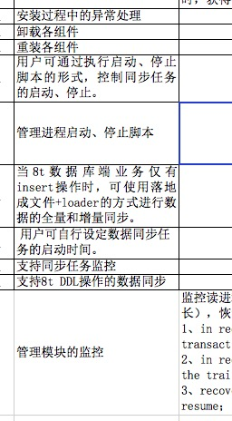 |
| 2016-08-19 16:13:50 | 我 | 嗯 |
| 2016-08-19 16:13:52 | 你 | 同步任务的启停 这部分总觉得设计上没那么简单 |
| 2016-08-19 16:14:11 | 我 | 这个得和监控一起做 |
| 2016-08-19 16:14:18 | 你 | 是吧 |
| 2016-08-19 16:14:40 | 你 | 其实现在的监控工具 大部分都是监视 |
| 2016-08-19 16:14:45 | 你 | 控制比较少 |
| 2016-08-19 16:14:50 | 我 | 是 |
| 2016-08-19 16:15:02 | 你 | 虽然Server这边接口有的都有 |
| 2016-08-19 16:15:17 | 你 | 咱们这个Server的接口都没有 所以监控得后作 |
| 2016-08-19 16:15:26 | 我 | 是 |
| 2016-08-19 16:16:15 | 你 | 这个迭代结束是不是要开release planning会了 |
| 2016-08-19 16:16:18 | 你 | 还接着做吗 |
| 2016-08-19 16:16:25 | 你 | 我指的是scrum |
| 2016-08-19 16:16:28 | 我 | 接着做 |
| 2016-08-19 16:16:36 | 我 | 这是一个长期的任务 |
| 2016-08-19 16:16:49 | 你 | 那就得开release planning会了吧 |
| 2016-08-19 16:16:59 | 我 | 是 |
| 2016-08-19 16:17:13 | 你 | 送测的就直接安排测试人员测试就行吧 研发这边不能停啊 |
| 2016-08-19 16:18:31 | 我 | 我还没有想好 |
| 2016-08-19 16:18:42 | 我 | 等下周再说吧 |
| 2016-08-19 16:18:50 | 你 | 好吧 |
| 2016-08-19 16:18:55 | 你 | 反正也不着急 |
| 2016-08-19 16:18:58 | 你 | 下周再说 |
| 2016-08-19 16:18:59 | 我 | 是 |
| 2016-08-19 16:19:05 | 我 | 你今天开车吗 |
| 2016-08-19 16:19:08 | 你 | 这个测试也不好测 |
| 2016-08-19 16:19:18 | 你 | 开车 |
| 2016-08-19 16:20:08 | 我 | 好的 |
| 2016-08-19 16:20:32 | 我 | 那你明天还得去接东东吧 |
| 2016-08-19 16:20:42 | 你 | 东东说自己坐车回 |
| 2016-08-19 16:20:45 | 你 | 我还不知道呢 |
| 2016-08-19 16:21:44 | 我 | 哦，那样还好，至少你还可以睡一个懒觉 |
| 2016-08-19 16:22:29 | 你 | 不知道睡不睡的着 |
| 2016-08-19 16:22:57 | 我 | 你昨天就没睡好 |
| 2016-08-19 16:23:05 | 你 | 是 |
| 2016-08-19 16:23:06 | 我 | 今天还不好好睡 |
| 2016-08-19 16:23:13 | 你 | 我想好好睡啊 |
| 2016-08-19 16:23:18 | 我 | 今天也别想事情了 |
| 2016-08-19 16:23:20 | 你 | 不知道大脑给不给力 |
| 2016-08-19 16:23:39 | 我 | 你要是一旦开始想了就肯定睡不着了 |
| 2016-08-19 16:23:48 | 你 | 看看李杰有没有事情 |
| 2016-08-19 16:23:57 | 你 | 没有给她打电话聊会 |
| 2016-08-19 16:24:06 | 我 | 好的 |
| 2016-08-19 16:24:18 | 你 | 你干嘛呢 |
| 2016-08-19 16:24:28 | 我 | 没事，陪你聊天呀 |
| 2016-08-19 16:24:43 | 你 | 昨天聊的挺好的 |
| 2016-08-19 16:24:52 | 你 | 结果打断了 |
| 2016-08-19 16:25:04 | 我 | 你是说下班前？ |
| 2016-08-19 16:25:25 | 你 | 对啊 下班前 |
| 2016-08-19 16:25:49 | 我 | 对了，你看完记录了吗 |
| 2016-08-19 16:26:30 | 你 | 看完了 |
| 2016-08-19 16:26:45 | 我 | 那就说说你的想法吧 |
| 2016-08-19 16:27:51 | 你 | 那次王洪越欺负我的时候 我记得你说过 说我在他的游戏规则里 没有出头的时候 |
| 2016-08-19 16:28:03 | 我 | 是 |
| 2016-08-19 16:28:04 | 你 | 所以你要推scrum 让我做PO |
| 2016-08-19 16:28:13 | 你 | 我以为只有这些 |
| 2016-08-19 16:28:25 | 你 | 没想到你为我想了那么那么远 |
| 2016-08-19 16:28:39 | 你 | 这个是我很意外的 |
| 2016-08-19 16:28:49 | 我 | 哦 |
| 2016-08-19 16:29:02 | 你 | 其次我想跟你说 我昨天说 我自己的想法的时候 说有推出矛盾 |
| 2016-08-19 16:29:33 | 你 | 矛盾就是 不管我怎么努力 开发中心好像都没有我的适合我的职位 |
| 2016-08-19 16:29:42 | 你 | 至少现在的组织架构是这样的 |
| 2016-08-19 16:30:20 | 我 | 是，你说的没错 |
| 2016-08-19 16:30:51 | 我 | 但是原来也没有开发中心，原来也没有开发中心副总 |
| 2016-08-19 16:31:27 | 我 | 甚至需求组原来也没有，也是我要求创建的 |
| 2016-08-19 16:31:39 | 我 | 组织架构是可以变的 |
| 2016-08-19 16:31:44 | 你 | 你肯定能够改变这些 |
| 2016-08-19 16:31:52 | 你 | 但是我就不能了 |
| 2016-08-19 16:32:14 | 你 | 如果我一直这样 王洪越不犯大错 我肯定也上不去啊 |
| 2016-08-19 16:32:26 | 我 | 但是现在的问题是我推动改组织架构，可是你的能力达不到我也没办法让你上 |
| 2016-08-19 16:32:28 | 你 | 即使王洪越犯了错 还有王志新在前边呢 |
| 2016-08-19 16:32:34 | 你 | 是啊 |
| 2016-08-19 16:32:43 | 你 | 所以你说的才是我该走的路 |
| 2016-08-19 16:32:48 | 你 | 这点我很认同 |
| 2016-08-19 16:33:00 | 你 | 所以我的重点是在如何做PO |
| 2016-08-19 16:33:01 | 我 | 所以你能力达到之前我反而要阻止相关的组织变动 |
| 2016-08-19 16:33:12 | 你 | 是 |
| 2016-08-19 16:33:13 | 我 | 就是要给你留着这个位置 |
| 2016-08-19 16:33:36 | 你 | 你这么帮我 就是因为我想要是吗 |
| 2016-08-19 16:33:54 | 我 | 你现在和老田、老杨搞好关系不是为了让他们重用你，是为了等你能上的时候不阻挠你 |
| 2016-08-19 16:34:00 | 我 | 对呀 |
| 2016-08-19 16:34:25 | 你 | 是 |
| 2016-08-19 16:34:31 | 我 | 我昨天也说了，你要是想做行政，我就不用这么费劲了 |
| 2016-08-19 16:34:35 | 你 | 我感动的都不知道说什么好 |
| 2016-08-19 16:34:44 | 你 | 我当然不能做行政 |
| 2016-08-19 16:34:50 | 你 | 你知道我很怕重复 |
| 2016-08-19 16:35:00 | 我 | 是，我看出来了 |
| 2016-08-19 16:35:09 | 你 | 我想成为的是 能够实现自我价值的焦点任务 |
| 2016-08-19 16:35:12 | 你 | 人物 |
| 2016-08-19 16:35:16 | 你 | 而不是行政人员 |
| 2016-08-19 16:35:23 | 我 | 对 |
| 2016-08-19 16:35:32 | 你 | 我要时时刻刻做焦点 而不是做行政那类的焦点 |
| 2016-08-19 16:35:35 | 我 | 所以你需要培养全面的能力 |
| 2016-08-19 16:35:40 | 你 | 嗯嗯 |
| 2016-08-19 16:35:53 | 我 | 而且还要改变自己的性格 |
| 2016-08-19 16:36:09 | 你 | 你能够想象 我心里有多感激你嘛 |
| 2016-08-19 16:36:14 | 你 | 我觉得你不能 |
| 2016-08-19 16:36:16 | 我 | 就想你昨天的想法就太幼稚了 |
| 2016-08-19 16:36:27 | 你 | 是 |
| 2016-08-19 16:36:34 | 我 | 我能想象 |
| 2016-08-19 16:36:48 | 我 | 因为我同样感激过别人 |
| 2016-08-19 16:37:01 | 我 | 我说过这就一种爱 |
| 2016-08-19 16:37:16 | 我 | 别人这么帮过我，现在是我帮你 |
| 2016-08-19 16:37:32 | 我 | 等你以后有能力了，你可以去帮其他人 |
| 2016-08-19 16:37:43 | 你 | 恩 |
| 2016-08-19 16:38:22 | 你 | 越懂得感恩的人 得到的越多 |
| 2016-08-19 16:38:27 | 你 | 这是什么道理 |
| 2016-08-19 16:38:50 | 我 | 其实就是信任 |
| 2016-08-19 16:39:12 | 我 | 整个人类社会就是建立在信任的基础上的 |
| 2016-08-19 16:39:32 | 我 | 信任可以大大降低社会成本，从而提供幸福感 |
| 2016-08-19 16:39:35 | 你 | 可是和你获得的比起来 总觉得我得到的更多 |
| 2016-08-19 16:39:41 | 你 | 这对你不公平 |
| 2016-08-19 16:39:55 | 我 | 这里没有什么不公平的 |
| 2016-08-19 16:40:15 | 我 | 别人帮我的时候是同样的 |
| 2016-08-19 16:40:28 | 我 | 你未来帮其他人的时候也是一样 |
| 2016-08-19 16:41:18 | 你 | 可能吧 |
| 2016-08-19 16:41:31 | 你 | 可能是没有站在你的高度 所以就体会不到 |
| 2016-08-19 16:41:50 | 你 | 我跟你说点我昨天想到的东西 |
| 2016-08-19 16:41:53 | 我 | 好呀 |
| 2016-08-19 16:42:11 | 你 | 是关于产品经理这个职位的 |
| 2016-08-19 16:42:20 | 我 | 嗯 |
| 2016-08-19 16:42:34 | 你 | 可能跟项目管理有相同的地方 |
| 2016-08-19 16:42:46 | 你 | 但现在咱们只聚焦产品经理 |
| 2016-08-19 16:42:54 | 我 | 好 |
| 2016-08-19 16:43:19 | 你 | 产品经理最主要的事是协调 或者也有平衡的意味 |
| 2016-08-19 16:43:25 | 你 | 但绝对不是执行层 |
| 2016-08-19 16:43:45 | 你 | 他只管事 不管人 |
| 2016-08-19 16:43:49 | 我 | 你继续说 |
| 2016-08-19 16:44:00 | 你 | 他负责告诉研发做什么 但不能插手怎么做 |
| 2016-08-19 16:44:12 | 你 | 研发的做的好坏 他也无权评判 |
| 2016-08-19 16:44:29 | 你 | 因为研发执行层的PBC是跟研发经理签的 |
| 2016-08-19 16:44:57 | 你 | 这只是产品经理很少的一部分职责 |
| 2016-08-19 16:45:15 | 你 | 产品经理最重要的是对产品负责 |
| 2016-08-19 16:45:21 | 我 | 是 |
| 2016-08-19 16:45:31 | 你 | 这点包含很多纬度 这个纬度跟产品模型有关 |
| 2016-08-19 16:45:48 | 你 | 大方向上 产品的定位 |
| 2016-08-19 16:45:54 | 你 | 功能 |
| 2016-08-19 16:46:04 | 你 | 易用性 |
| 2016-08-19 16:46:09 | 你 | 客户体验 |
| 2016-08-19 16:46:10 | 我 | 说的不错 |
| 2016-08-19 16:46:56 | 你 | 因为产品不是产品经理做的 是研发做的 |
| 2016-08-19 16:47:14 | 我 | 继续说 |
| 2016-08-19 16:47:18 | 你 | 出去产品经理对研发该做什么的定义外 协调是很主要的一部分工作 |
| 2016-08-19 16:47:27 | 你 | 这部分想的不是很好 |
| 2016-08-19 16:47:37 | 你 | 我说说我为什么想到这 |
| 2016-08-19 16:47:42 | 我 | 好的 |
| 2016-08-19 16:47:51 | 你 | 首先现在的田 几乎不怎么关心产品模型 |
| 2016-08-19 16:48:09 | 我 | 嗯 |
| 2016-08-19 16:49:15 | 你 | 然后他做的更多的是协调 |
| 2016-08-19 16:49:29 | 你 | 那如果换我做的话 我怎么才能比他做的好 |
| 2016-08-19 16:49:59 | 你 | 也就是说怎么定义产品经理优秀与否 |
| 2016-08-19 16:50:11 | 你 | 这个协调工作背后的道 是什么 |
| 2016-08-19 16:50:14 | 我 | 嗯 |
| 2016-08-19 16:50:24 | 你 | 两大块吧 产品模型+协调 |
| 2016-08-19 16:50:34 | 你 | 这句是总结的啊 |
| 2016-08-19 16:50:52 | 你 | 协调这部分我也在经历 |
| 2016-08-19 16:51:32 | 你 | 但我更多的还是走在掌握产品模型的道路上 |
| 2016-08-19 16:51:45 | 你 | 接着说 |
| 2016-08-19 16:51:51 | 我 | 好的 |
| 2016-08-19 16:51:59 | 你 | 再高的产品经理也是管事的 |
| 2016-08-19 16:52:36 | 你 | 不是管人的 |
| 2016-08-19 16:52:48 | 我 | 嗯 |
| 2016-08-19 16:53:11 | 你 | 既然是管事的 那管理类的知识相对会弱一些 |
| 2016-08-19 16:53:34 | 你 | 你知道管人和管事 完全不是一回事 |
| 2016-08-19 16:53:36 | 你 | 最开始 我理解这句话后 觉得有些失落 |
| 2016-08-19 16:53:57 | 你 | 因为 我想我心心念念的 大目标 终究还是逃不过执行层 |
| 2016-08-19 16:53:58 | 我 | 为什么 |
| 2016-08-19 16:54:35 | 你 | 就像我曾经跟你说过 驾驭人心是比较好玩的一件事 |
| 2016-08-19 16:54:47 | 你 | 可能短期内 我是做不到了 |
| 2016-08-19 16:54:57 | 你 | 3年 5年内 |
| 2016-08-19 16:55:05 | 我 | 哦 |
| 2016-08-19 16:55:18 | 我 | 你继续说 |
| 2016-08-19 16:55:30 | 你 | 但这个终究是个过程 我不知道我自己理解的对不对 |
| 2016-08-19 16:55:45 | 你 | 可能我理解错了 |
| 2016-08-19 16:55:53 | 你 | 我说的比较乱 |
| 2016-08-19 16:56:00 | 我 | 没事，我看的懂 |
| 2016-08-19 16:56:01 | 你 | 想的也比较碎 |
| 2016-08-19 16:56:13 | 你 | 然后回过头来说协调的事 |
| 2016-08-19 16:56:44 | 我 | 好的 |
| 2016-08-19 16:57:02 | 你 | 现在的scrum 什么时候 做什么功能 研发评估的工期 这也是协调 |
| 2016-08-19 16:57:18 | 你 | 但是我根本没能力质疑研发评估的工期 |
| 2016-08-19 16:58:00 | 你 | 包括做什么功能 也是在摸索 大部分时间都是你我先想 然后你 告诉我 我再分析为什么我没有想到你说的那个点 |
| 2016-08-19 16:58:27 | 你 | 但是老田怎么判断你们的工期呢 |
| 2016-08-19 16:58:53 | 你 | 我想咱们是有客户的 客户会给出时间点 可能他更多的是反推 |
| 2016-08-19 16:59:01 | 我 | 嗯 |
| 2016-08-19 16:59:21 | 你 | 但是没有客户的话呢 |
| 2016-08-19 16:59:33 | 你 | 就是产品级开发 |
| 2016-08-19 17:00:03 | 你 | 如果技不如人，自己不能判断 就只能信任研发了 |
| 2016-08-19 17:00:56 | 你 | 但是这种被动的 不在自己控制下的感觉很差 |
| 2016-08-19 17:01:14 | 我 | 没错 |
| 2016-08-19 17:04:02 | 你 | 你是绝对不允许自己处于没有准备 被动的状态的 |
| 2016-08-19 17:04:19 | 我 | 没错 |
| 2016-08-19 17:04:24 | 你 | 像我们这么聪明的人 处于被动状态与否自己都能分析出来 |
| 2016-08-19 17:04:25 | 你 | 哈哈 |
| 2016-08-19 17:04:48 | 你 | 就像是 逻辑推理的时候 推出矛盾一样 很别扭 |
| 2016-08-19 17:04:58 | 你 | 我是不是说的很乱 |
| 2016-08-19 17:05:04 | 我 | 不是 |
| 2016-08-19 17:05:11 | 我 | 我能看明白 |
| 2016-08-19 17:05:17 | 我 | 你接着说 |
| 2016-08-19 17:05:42 | 你 | 我说完了 |
| 2016-08-19 17:05:43 | 你 | 没了 |
| 2016-08-19 17:05:46 | 你 | 哈哈 |
| 2016-08-19 17:05:47 | 你 | 很乱 |
| 2016-08-19 17:05:56 | 我 | 不乱 |
| 2016-08-19 17:06:14 | 我 | 不过有些是错的 |
| 2016-08-19 17:06:28 | 你 | 你说说 |
| 2016-08-19 17:06:33 | 你 | 感觉没有闭环 |
| 2016-08-19 17:07:17 | 我 | 首先，不管是干什么，只要是工程类的，就至少有三个维度 |
| 2016-08-19 17:07:33 | 我 | 需求、进度、技术 |
| 2016-08-19 17:07:55 | 我 | 这三个维度对应三个不同的职责 |
| 2016-08-19 17:08:02 | 你 | 你去群里说吧 |
| 2016-08-19 17:08:17 | 我 | 也就有三个不同的角色 |
| 2016-08-19 17:08:25 | 我 | 好的 |
| 2016-08-19 17:19:49 | 我 | 王志就是从项目出来的 |
| 2016-08-19 17:20:00 | 我 | 所以他的研发比较差 |
| 2016-08-19 17:20:07 | 我 | 但是管人还可以 |
| 2016-08-19 17:20:11 | 你 | 嗯嗯 |
| 2016-08-19 17:20:12 | 你 | 知道了 |
| 2016-08-19 17:26:12 | 我 | 你现在应该知道田是什么情况了吧 |
| 2016-08-19 17:26:31 | 我 | 虽然管他叫产品经理，其实他就是一个项目经理 |
| 2016-08-19 17:26:38 | 你 | 对啊 |
| 2016-08-19 17:26:40 | 你 | 我觉得是 |
| 2016-08-19 17:26:50 | 你 | 产品模型的事 根本不管 |
| 2016-08-19 17:26:57 | 你 | 就是每天在定时间 |
| 2016-08-19 17:26:58 | 你 | 发版 |
| 2016-08-19 17:27:05 | 我 | 对 |
| 2016-08-19 17:27:15 | 你 | 要计划 |
| 2016-08-19 17:27:22 | 你 | 那严丹是什么 |
| 2016-08-19 17:27:33 | 我 | 严丹才是正式的项目经理 |
| 2016-08-19 17:27:35 | 你 | 他只负责项目管理中的一部分活是吗 |
| 2016-08-19 17:27:49 | 你 | 咱们公司的都是四不像 |
| 2016-08-19 17:28:02 | 我 | 原来老田干的活，有一部分是严丹的 |
| 2016-08-19 17:28:07 | 我 | 其实不是 |
| 2016-08-19 17:28:08 | 你 | 现在需求 研发倒是比较清楚 |
| 2016-08-19 17:28:29 | 我 | 当初老杨管的时候，严丹就是严格意义上的项目经理 |
| 2016-08-19 17:28:34 | 我 | 老杨是产品经理 |
| 2016-08-19 17:28:57 | 你 | 哦 明白了 |
| 2016-08-19 17:29:00 | 我 | 现在让老田当产品经理，他自己没那个能力 |
| 2016-08-19 17:29:07 | 你 | 老杨还是很重视需求的 |
| 2016-08-19 17:29:15 | 我 | 他自己只是知道怎么管项目 |
| 2016-08-19 17:29:17 | 你 | 那时候用户评审 他基本都会过 |
| 2016-08-19 17:29:31 | 我 | 所以就把严丹的一部分工作给抢走了 |
| 2016-08-19 17:29:32 | 你 | 严丹也挺郁闷 哈哈 |
| 2016-08-19 17:29:36 | 你 | 哈哈 |
| 2016-08-19 17:29:50 | 我 | 对呀 |
| 2016-08-19 17:30:07 | 我 | 老田只管发命令，不负责落实 |
| 2016-08-19 17:30:13 | 你 | 是 |
| 2016-08-19 17:30:15 | 我 | 就像今天开会这事 |
| 2016-08-19 17:30:31 | 你 | 嗯哪 |
| 2016-08-19 17:30:38 | 你 | 他自己干的不亦乐乎还 |
| 2016-08-19 17:30:41 | 我 | 严丹作为项目经理提出进度有风险是对的 |
| 2016-08-19 17:30:51 | 你 | 还老是要求别人 |
| 2016-08-19 17:30:52 | 我 | 结果老田还反对她 |
| 2016-08-19 17:31:10 | 你 | 老田不是反对他 是怪她没给解决方案 |
| 2016-08-19 17:31:22 | 你 | 项目经理也管这活？ |
| 2016-08-19 17:31:24 | 我 | 其实就是反对她 |
| 2016-08-19 17:31:32 | 你 | 而且今天这是就是屁大点事 |
| 2016-08-19 17:32:17 | 我 | 老田的意思就是下周评审也不会有问题，这个活好做 |
| 2016-08-19 17:32:51 | 我 | 其实老田反对严丹不是因为严丹提出风险了 |
| 2016-08-19 17:33:14 | 你 | 对 你说的对 我都忽略这个了 |
| 2016-08-19 17:33:42 | 我 | 所以我说这都是政治 |
| 2016-08-19 17:33:50 | 我 | 就是权利 |
| 2016-08-19 17:33:55 | 我 | 和工作没有关系 |
| 2016-08-19 17:34:15 | 你 | 恩 |
| 2016-08-19 17:35:20 | 我 | 简单说就是老田的政治吃相太难看了 |
| 2016-08-19 17:35:35 | 你 | 哈哈 |
| 2016-08-19 17:36:41 | 我 | 不说他们了，说说你吧，要不待会你该走了，又和昨天似的被打断 |
| 2016-08-19 17:37:12 | 你 | 没事 今天回家也能聊 |
| 2016-08-19 17:37:16 | 你 | 说我吧 |
| 2016-08-19 17:37:25 | 你 | 你今天算是给我解惑了 |
| 2016-08-19 17:37:37 | 我 | 好 |
| 2016-08-19 17:38:08 | 我 | 你刚才说到了被动的状态 |
| 2016-08-19 17:38:26 | 你 | 恩 |
| 2016-08-19 17:38:48 | 我 | 还有驾驭人心 |
| 2016-08-19 17:39:06 | 我 | 还有你说我经常做计划 |
| 2016-08-19 17:39:16 | 我 | 这三件事情是有联系的 |
| 2016-08-19 17:39:43 | 你 | 恩 |
| 2016-08-19 17:39:46 | 你 | 说说 |
| 2016-08-19 17:40:21 | 我 | 我就是不想被动，所以我经常做计划，每次都做好几套计划，考虑各种情况下的应对措施 |
| 2016-08-19 17:41:00 | 我 | 但是光做计划是没有用的，还必须有执行 |
| 2016-08-19 17:41:16 | 我 | 执行就必须靠人心 |
| 2016-08-19 17:41:30 | 我 | 所以还得需要考虑怎么驾驭人心 |
| 2016-08-19 17:41:54 | 我 | 比如说你经常怕我生气 |
| 2016-08-19 17:42:15 | 我 | 你也知道我们组的人都比较怕我 |
| 2016-08-19 17:42:45 | 你 | 是 |
| 2016-08-19 17:42:47 | 我 | 其实有一部分原因就是我通过自己的行为去控制 |
| 2016-08-19 17:43:02 | 你 | 我觉得这件事好难啊 |
| 2016-08-19 17:43:10 | 我 | 最近你是不是发现你认为我生气的时候其实我没生气 |
| 2016-08-19 17:43:49 | 我 | 这件事之所以难，是难在两个点上 |
| 2016-08-19 17:43:56 | 我 | 第一个就是理性 |
| 2016-08-19 17:44:07 | 我 | 第二个是对人性的了解 |
| 2016-08-19 17:44:18 | 我 | 第二个必须以第一个为基础 |
| 2016-08-19 17:44:36 | 我 | 如果没有理性，那么就永远无法了解人性 |
| 2016-08-19 17:44:44 | 你 | 这个我已经体验过很多次了『最近你是不是发现你认为我生气的时候其实我没生气』 |
| 2016-08-19 17:44:59 | 我 | 好了，现在就要说说和你的关系了 |
| 2016-08-19 17:45:05 | 你 | 好 |
| 2016-08-19 17:45:21 | 我 | 你的欠缺现在也很明显 |
| 2016-08-19 17:45:29 | 我 | 首先是理性 |
| 2016-08-19 17:45:52 | 我 | 我打算后面给你加强这方面的训练 |
| 2016-08-19 17:45:53 | 你 | 恩 |
| 2016-08-19 17:46:16 | 你 | 你说你能够做到假装生气 是理性的结果 |
| 2016-08-19 17:46:28 | 我 | 是 |
| 2016-08-19 17:46:46 | 你 | 这个理性是你判断自己要实现的目标的过程 |
| 2016-08-19 17:46:54 | 你 | 生气只是实现手段 |
| 2016-08-19 17:47:01 | 我 | 对 |
| 2016-08-19 17:47:09 | 我 | 你可以这么理解 |
| 2016-08-19 17:47:20 | 我 | 生气属于感性的部分 |
| 2016-08-19 17:47:47 | 我 | 我是通过理性分析，认为如果我生气那么执行力会提高 |
| 2016-08-19 17:47:50 | 你 | 比如 你认为你一生气 我会害怕 然后会记住你说的话 |
| 2016-08-19 17:47:59 | 你 | 你的目标是让我记住你说的话 |
| 2016-08-19 17:48:05 | 我 | 然后我的感性就会配合理性 |
| 2016-08-19 17:48:15 | 我 | 没有那么简单啦 |
| 2016-08-19 17:48:40 | 我 | 这些只是方法 |
| 2016-08-19 17:48:41 | 你 | 但是你分析过我 知道我的人性是害怕的时候就会长记性 |
| 2016-08-19 17:48:51 | 我 | 你先不要关注这些细节 |
| 2016-08-19 17:49:15 | 你 | 哎呀 |
| 2016-08-19 17:49:17 | 你 | 好吧 |
| 2016-08-19 17:49:21 | 你 | 你接着说 |
| 2016-08-19 17:49:28 | 你 | 我不打断你 |
| 2016-08-19 17:49:35 | 我 | 我从来没有冲你生过气 |
| 2016-08-19 17:49:44 | 你 | 我只是举个例子 |
| 2016-08-19 17:49:46 | 你 | 你接着说吧 |
| 2016-08-19 17:49:51 | 你 | 待会我再说 |
| 2016-08-19 17:50:00 | 我 | 我也不会利用你心理上的缺陷去达到我的目的 |
| 2016-08-19 17:50:17 | 我 | 好 |
| 2016-08-19 17:50:21 | 你 | 但你不会利用别人吗 |
| 2016-08-19 17:51:22 | 我 | 会呀 |
| 2016-08-19 17:51:38 | 你 | 这个利用的过程是理性分析的过程吗 |
| 2016-08-19 17:51:46 | 我 | 是 |
| 2016-08-19 17:52:01 | 你 | 你接着说 |
| 2016-08-19 17:52:10 | 你 | 我稍微打断下 |
| 2016-08-19 17:52:19 | 我 | 其次就是刚才说的那三个维度 |
| 2016-08-19 17:52:40 | 你 | 我用过这个方法 对付过东东 但是除他以外 对付谁都失效 |
| 2016-08-19 17:52:43 | 你 | 你接着说 |
| 2016-08-19 17:52:58 | 我 | 产品、项目、研发，你依次减弱 |
| 2016-08-19 17:53:19 | 我 | 我打算提高你这几个方面的能力 |
| 2016-08-19 17:53:28 | 你 | 恩 |
| 2016-08-19 17:54:04 | 我 | 先从项目开始 |
| 2016-08-19 17:54:28 | 你 | 项目？ |
| 2016-08-19 17:54:39 | 我 | 项目管理，你也可以自己先去找一找这方面的书 |
| 2016-08-19 17:54:41 | 你 | 做jira算吧 |
| 2016-08-19 17:54:45 | 你 | 好 |
| 2016-08-19 17:54:46 | 我 | 不算 |
| 2016-08-19 17:54:58 | 我 | 老杨的项目管理也是很厉害的 |
| 2016-08-19 17:54:59 | 你 | 项目管理的书都好枯燥 |
| 2016-08-19 17:55:05 | 你 | 是吧 |
| 2016-08-19 17:55:36 | 我 | 但是你短期内不准表现出你的项目管理能力 |
| 2016-08-19 17:56:05 | 你 | 知道 |
| 2016-08-19 17:56:07 | 我 | 因为很容易就因为你的项目管理能力而去让你做行政 |
| 2016-08-19 17:56:09 | 你 | 知道 |
| 2016-08-19 17:56:14 | 你 | 是吧 |
| 2016-08-19 17:56:34 | 我 | 咱们公司没有正式的项目管理岗位 |
| 2016-08-19 17:57:04 | 我 | 除了黄军雷其他的项目管理的都是兼职行政 |
| 2016-08-19 17:57:22 | 我 | 王欣、严丹、楼下的陈婕都是 |
| 2016-08-19 17:57:37 | 你 | 恩 我都以为项目管理就该管行政呢 |
| 2016-08-19 17:58:07 | 我 | 你要是走上行政这条路，我就回天乏术了，除非我管开发中心 |
| 2016-08-19 17:58:28 | 我 | 现在说说怎么锻炼理性 |
| 2016-08-19 17:58:44 | 我 | 锻炼理性需要从感性下手 |
| 2016-08-19 17:58:53 | 你 | 我不走行政 |
| 2016-08-19 17:59:00 | 你 | 说说 |
| 2016-08-19 17:59:01 | 我 | 理性弱就是因为感性太强 |
| 2016-08-19 17:59:17 | 我 | 你的行为习惯受感性控制的多 |
| 2016-08-19 17:59:20 | 你 | 此起彼伏 |
| 2016-08-19 17:59:24 | 你 | 是 |
| 2016-08-19 17:59:57 | 我 | 所以这个过程虽然谈不上痛苦，但是一定不是那么愉快 |
| 2016-08-19 18:00:25 | 你 | 没事的 |
| 2016-08-19 18:00:31 | 我 | 好的 |
| 2016-08-19 18:01:09 | 我 | 还有就是至少在早期，咱们只在面谈的时候锻炼理性 |
| 2016-08-19 18:01:33 | 我 | 我必须知道你的感性的真实反应 |
| 2016-08-19 18:01:44 | 你 | 好吧 |
| 2016-08-19 18:02:00 | 你 | 我几乎不能听懂你说的话了 |
| 2016-08-19 18:02:18 | 你 | 我先跟着做吧 |
| 2016-08-19 18:02:21 | 我 | 你还记得我曾经提到过的安全屋的概念吧 |
| 2016-08-19 18:02:27 | 你 | 记得 |
| 2016-08-19 18:02:34 | 我 | 我首先要保证的是你的安全 |
| 2016-08-19 18:02:41 | 我 | 心理上的安全 |
| 2016-08-19 18:02:52 | 你 | 我心里上为什么会不安全 |
| 2016-08-19 18:03:00 | 你 | 会觉得你不要我了吗 |
| 2016-08-19 18:03:03 | 我 | 因为要从感性入手 |
| 2016-08-19 18:03:08 | 你 | 恩 |
| 2016-08-19 18:03:10 | 你 | 好 |
| 2016-08-19 18:03:17 | 我 | 就会针对感性做一些训练 |
| 2016-08-19 18:03:24 | 你 | 好 |
| 2016-08-19 18:03:35 | 我 | 我不知道这些训练会对你产生什么副作用 |
| 2016-08-19 18:03:52 | 我 | 所以我必须看着你 |
| 2016-08-19 18:04:23 | 你 | 嗯嗯 |
| 2016-08-19 18:04:25 | 你 | 好 |
| 2016-08-19 18:05:00 | 我 | 等你过了感性这一关，那么后面就比较简单了 |
| 2016-08-19 18:06:52 | 你 | 我一定能过 |
| 2016-08-19 18:06:55 | 你 | 放心吧 |
| 2016-08-19 18:07:03 | 我 | 是 |
| 2016-08-19 18:07:27 | 我 | 我相信你 |
| 2016-08-19 18:07:34 | 你 | 恩 |
| 2016-08-19 18:07:51 | 你 | 我现在比以前理性多了都 |
| 2016-08-19 18:07:59 | 你 | 虽然还是很感性 |
| 2016-08-19 18:08:06 | 我 | 是，进步很大 |
| 2016-08-19 18:08:17 | 我 | 其实也就一年的时间 |
| 2016-08-19 18:08:27 | 你 | 一年半了 |
| 2016-08-19 18:08:36 | 我 | 嗯 |
| 2016-08-19 18:14:33 | 我 | 咱们这个sprint是从这周开始的吧 |
| 2016-08-19 18:21:17 | 你 | 是 |
| 2016-08-19 18:21:19 | 你 | 我先回家 |
| 2016-08-19 18:21:31 | 我 | 好的 |
| 2016-08-19 19:48:50 | 你 | 我在看林李大战呢 |
| 2016-08-19 19:50:25 | 我 | 好 |
| 2016-08-19 19:51:01 | 我 | 我也去看 |
| 2016-08-19 19:51:16 | 你 | 我特别喜欢李宗伟 |
| 2016-08-19 19:52:51 | 你 | 李宗伟心态太差 |
| 2016-08-19 19:53:36 | 我 | 千年老二，太想赢了 |
| 2016-08-19 19:54:23 | 你 | 就是心态buhao |
| 2016-08-19 19:54:35 | 我 | 是 |
| 2016-08-19 19:59:03 | 我 | 就像你说的，李宗伟心态不好，水平没发挥出来 |
| 2016-08-19 19:59:46 | 你 | 失误太多 |
| 2016-08-19 20:00:10 | 我 | 是 |
| 2016-08-19 20:00:26 | 你 | 好难过 |
| 2016-08-19 20:01:35 | 我 | 这几个不错 |
| 2016-08-19 20:02:00 | 你 | 恩 |
| 2016-08-19 20:02:04 | 你 | 第二局了 |
| 2016-08-19 20:05:15 | 我 | 漂亮 |
| 2016-08-19 20:05:29 | 你 | 你得几比几了 |
| 2016-08-19 20:05:45 | 我 | 7：2 |
| 2016-08-19 20:05:58 | 你 | 你比我快 |
| 2016-08-19 20:05:59 | 我 | 中央5 |
| 2016-08-19 20:06:08 | 你 | 我看的直播 |
| 2016-08-19 20:06:19 | 我 | 哦 |
| 2016-08-19 20:06:35 | 你 | 现在7:2 |
| 2016-08-19 20:06:45 | 我 | 那我就是剧透呀 |
| 2016-08-19 20:06:51 | 你 | 去去去 |
| 2016-08-19 20:07:07 | 我 | 😄 |
| 2016-08-19 20:11:15 | 你 | 可能风向确实有关系 |
| 2016-08-19 20:12:12 | 我 | 是 |
| 2016-08-19 20:12:45 | 你 | 林丹老出界 |
| 2016-08-19 20:13:08 | 我 | 刚才这个扣杀漂亮 |
| 2016-08-19 20:13:20 | 你 | 去去去 |
| 2016-08-19 20:13:31 | 你 | 剧透 |
| 2016-08-19 20:13:58 | 我 | 我都没法和你愉快的交流了 |
| 2016-08-19 20:14:12 | 你 | 我能和你愉快的交流 |
| 2016-08-19 20:15:05 | 我 | 😄 |
| 2016-08-19 20:15:22 | 你 | |
| 2016-08-19 20:18:41 | 我 | 打完了吗 |
| 2016-08-19 20:18:55 | 你 | 咩呢 |
| 2016-08-19 20:19:11 | 我 | [抓狂] |
| 2016-08-19 20:19:19 | 你 | 赢了 |
| 2016-08-19 20:19:30 | 我 | 我都憋出内伤了 |
| 2016-08-19 20:19:58 | 你 | 哈哈 |
| 2016-08-19 20:20:03 | 我 | 最后两个球很好 |
| 2016-08-19 20:20:08 | 你 | 看决胜局 |
| 2016-08-19 20:20:22 | 你 | 两个人都轻松点了 |
| 2016-08-19 20:21:37 | 你 | 我看他俩伦敦奥运会时，李宗伟输的时候，我都差点哭了 |
| 2016-08-19 20:21:50 | 我 | 嗯 |
| 2016-08-19 20:24:11 | 你 | 出界了 |
| 2016-08-19 20:24:34 | 我 | 嗯 |
| 2016-08-19 20:25:46 | 我 | 杀的漂亮 |
| 2016-08-19 20:25:59 | 你 | 去去去q |
| 2016-08-19 20:26:59 | 我 | [抓狂]我是数着秒，延时发送的[抓狂] |
| 2016-08-19 20:29:40 | 你 | 只能我做评论 |
| 2016-08-19 20:29:55 | 我 | 是[委屈] |
| 2016-08-19 20:36:24 | 我 | 太胶着了 |
| 2016-08-19 20:37:17 | 你 | 太胶着 |
| 2016-08-19 20:40:18 | 你 | 太 太 |
| 2016-08-19 20:40:31 | 我 | 嗯 |
| 2016-08-19 20:40:32 | 你 | 都累坏了 |
| 2016-08-19 20:40:43 | 你 | 估计两人都想早点结束 |
| 2016-08-19 20:40:47 | 我 | 是 |
| 2016-08-19 20:41:41 | 你 | 11:10了 |
| 2016-08-19 20:42:23 | 我 | 胶着 |
| 2016-08-19 20:55:29 | 你 | 我已经受不了了 |
| 2016-08-19 20:55:52 | 我 | 忍着 |
| 2016-08-19 20:57:41 | 你 | 李宗伟赢了 |
| 2016-08-19 20:57:49 | 我 | 是 |
| 2016-08-19 20:58:08 | 我 | 比你早2分钟知道 |
| 2016-08-19 21:06:20 | 我 | 不看了 |
| 2016-08-19 21:07:23 | 你 | 恩，休息会 |
| 2016-08-19 21:07:28 | 你 | 还有一场 |
{kind=link}
{kind=link}
2016-08-20¶
| 2016-08-20 10:02:42 | 你 | 加班来了 |
| 2016-08-20 10:03:15 | 我 | 啊，怎么又加班了 |
| 2016-08-20 10:03:38 | 你 | 正好接东东 昨天下午什么活都没干 |
| 2016-08-20 10:04:00 | 你 | 706项目那个用需出来了 洪越让我们看看 说下周我们三个一起写软需 |
| 2016-08-20 10:04:01 | 我 | 好的 |
| 2016-08-20 10:05:03 | 我 | 你今天是写周报吗 |
| 2016-08-20 10:05:11 | 你 | 是 |
| 2016-08-20 10:05:14 | 你 | 写周报 |
| 2016-08-20 10:05:22 | 我 | 好 |
| 2016-08-20 10:05:47 | 你 | 我昨天睡得很好 |
| 2016-08-20 10:05:56 | 我 | 好 |
| 2016-08-20 10:05:57 | 你 | 很早就睡了 早上起来很精神 |
| 2016-08-20 10:05:59 | 你 | 你呢 |
| 2016-08-20 10:06:15 | 我 | 我刚醒 |
| 2016-08-20 10:06:43 | 你 | 哈哈 |
| 2016-08-20 10:06:47 | 你 | 好好歇着吧 |
| 2016-08-20 10:08:59 | 我 | 你先写周报吧，我把昨天的聊天记录先传上去。 |
| 2016-08-20 10:09:25 | 你 | 好 |
| 2016-08-20 10:48:35 | 我 | 好了 |
| 2016-08-20 11:39:00 | 你 | 跟丽颖聊了一上午 |
| 2016-08-20 11:39:02 | 你 | 啥也没干 |
| 2016-08-20 11:39:12 | 你 | 抱怨田来着 |
| 2016-08-20 11:39:19 | 我 | 哦 |
| 2016-08-20 11:39:44 | 我 | 你该吃饭了吧 |
| 2016-08-20 11:40:06 | 你 | 恩，吃饭来了 |
| 2016-08-20 11:40:22 | 我 | 东东没和你一起吗 |
| 2016-08-20 11:40:34 | 你 | 没有 |
| 2016-08-20 11:41:16 | 你 | 你说旭明用这么累，怎么要孩子啊 |
| 2016-08-20 11:41:20 | 你 | 他还那么胖 |
| 2016-08-20 11:41:47 | 我 | 唉，到时候让丈母娘帮忙呗 |
| 2016-08-20 11:42:10 | 你 | 丈母娘怎么帮 |
| 2016-08-20 11:42:12 | 你 | 我晕 |
| 2016-08-20 11:42:29 | 你 | 我说的不是看孩子，是要孩子[发怒] |
| 2016-08-20 11:42:57 | 我 | 哦，理解错了 |
| 2016-08-20 11:43:15 | 我 | 这就得看他的本事啦 |
| 2016-08-20 12:00:06 | 你 | 唉 |
| 2016-08-20 12:00:09 | 你 | 吃完了 |
| 2016-08-20 12:00:30 | 我 | 好的，睡一会吧 |
| 2016-08-20 12:02:02 | 你 | 不睡了 |
| 2016-08-20 12:02:06 | 你 | 赶紧干活 |
| 2016-08-20 12:02:16 | 我 | 好的 |
| 2016-08-20 14:44:31 | 你 | 我要回家了 |
| 2016-08-20 14:44:33 | 你 | 累死了 |
| 2016-08-20 14:44:53 | 我 | 好的，回家歇着吧 |
| 2016-08-20 14:45:24 | 你 | 好 |
2016-08-22¶
| 2016-08-22 08:30:37 | 我 | [链接] 关于实施有效站会(Stand-Up Meeting)的三个技巧 | 外刊IT评论 |
| 2016-08-22 08:30:59 | 你 | 你怎么了 |
| 2016-08-22 08:31:05 | 你 | 大早起情绪不高啊 |
| 2016-08-22 08:31:27 | 我 | 太累了，昨天10点多才到家 |
| 2016-08-22 08:31:40 | 你 | 怎么那么晚啊 |
| 2016-08-22 08:32:00 | 我 | 去看我儿子了，回来的有点晚 |
| 2016-08-22 08:32:22 | 你 | 哦 是够晚的 |
| 2016-08-22 08:32:27 | 你 | 周末没休息好 |
| 2016-08-22 08:32:36 | 我 | 是 |
| 2016-08-22 08:37:30 | 我 | 周末你休息好了吗 |
| 2016-08-22 08:37:44 | 你 | 挺好的 |
| 2016-08-22 08:37:45 | 你 | 不错 |
| 2016-08-22 08:37:51 | 你 | 周六睡了一下午 |
| 2016-08-22 08:38:23 | 我 | 你不是来加班了吗 |
| 2016-08-22 08:39:04 | 你 | 下午3点走的 |
| 2016-08-22 08:39:10 | 你 | 后来回到家就睡觉 |
| 2016-08-22 08:39:20 | 我 | 哦 |
| 2016-08-22 08:39:56 | 你 | 那你中午得睡会 |
| 2016-08-22 08:40:06 | 我 | 看情况吧 |
| 2016-08-22 08:47:22 | 我 | 你和你姐联系了吗 |
| 2016-08-22 08:47:31 | 你 | 恩 联系了 |
| 2016-08-22 08:48:11 | 你 | 她说他们领导就随便跟她聊聊 聊完觉得挺别扭的 可能是觉得自己说话重了 也可能是觉得自己露怯了 |
| 2016-08-22 08:48:27 | 我 | 哦 |
| 2016-08-22 08:50:20 | 我 | 没说别的吗？ |
| 2016-08-22 08:50:41 | 你 | 就没说啥 |
| 2016-08-22 08:50:45 | 你 | 可能比较忙 吧 |
| 2016-08-22 08:50:57 | 你 | 当时巴拉巴拉的说完 就没事了 |
| 2016-08-22 08:51:06 | 你 | 女的嘛 |
| 2016-08-22 08:51:18 | 你 | 总是会有这样那样的不理性 |
| 2016-08-22 08:51:40 | 我 | 那以后你姐打算怎么做？ |
| 2016-08-22 08:52:20 | 你 | 他也不想这事 |
| 2016-08-22 08:52:40 | 你 | 我想了 这个也不是说一句两句她才能明白的 |
| 2016-08-22 08:52:54 | 你 | 我先跟他说说职场的政治 让她有个概念 |
| 2016-08-22 08:53:02 | 你 | 然后再应用 |
| 2016-08-22 08:53:06 | 我 | 好的 |
| 2016-08-22 08:53:11 | 你 | 昨天我俩聊到11点去了 |
| 2016-08-22 08:53:26 | 我 | 我觉得在这点上你们俩差别挺大的 |
| 2016-08-22 08:53:27 | 你 | 他总是说自己就想做项目 |
| 2016-08-22 08:53:32 | 你 | 等等之类的 |
| 2016-08-22 08:54:21 | 你 | 然后还老是找各种理由 特别排斥承认政治这一说 好像自己很不齿玩弄政治的人 就躲得远远的 |
| 2016-08-22 08:54:28 | 你 | 其实她的做法并不对 |
| 2016-08-22 08:54:35 | 你 | 这是逃避 |
| 2016-08-22 08:54:44 | 你 | 最后坑的是自己 |
| 2016-08-22 08:54:51 | 我 | 是 |
| 2016-08-22 08:55:07 | 我 | 她应该比你更感性 |
| 2016-08-22 08:55:31 | 我 | 或者说她的自我比你的弱 |
| 2016-08-22 08:55:54 | 你 | 也可能是你一开始把我保护的太好了 |
| 2016-08-22 08:55:55 | 你 | 真的 |
| 2016-08-22 08:55:59 | 我 | 不过我发现你们俩的超我好像都比较强 |
| 2016-08-22 08:56:06 | 你 | 我自己也是有过这么一段时间的 |
| 2016-08-22 08:56:11 | 我 | 哦 |
| 2016-08-22 08:56:12 | 你 | 对啊 |
| 2016-08-22 08:56:46 | 我 | 还记得周五我说要改变你的性格，需要从你的感性入手吗 |
| 2016-08-22 08:57:17 | 你 | 记得 |
| 2016-08-22 08:57:20 | 我 | 我昨天发现我可能有点错误 |
| 2016-08-22 08:57:51 | 我 | 单纯谈理性和感性是不对的 |
| 2016-08-22 08:58:20 | 你 | 这句话不懂 |
| 2016-08-22 08:58:21 | 我 | 你的问题可能是超我太强而自我太弱 |
| 2016-08-22 08:58:38 | 你 | 可能是 |
| 2016-08-22 08:59:12 | 我 | 因为超我是涉及到道德层面的，所以表现也经常是感性的 |
| 2016-08-22 08:59:26 | 你 | 对 |
| 2016-08-22 08:59:50 | 你 | 也是没有逻辑 就该这样 比如『就该与人为善』 |
| 2016-08-22 09:00:01 | 你 | 为什么该与人为善 不知道 |
| 2016-08-22 09:00:06 | 我 | 对 |
| 2016-08-22 09:00:20 | 你 | 无逻辑 也是感性的典型表现 |
| 2016-08-22 09:05:00 | 我 | 忘了问你了，你周六和杨丽莹都聊什么了 |
| 2016-08-22 09:05:34 | 你 | 一个话题是旭明太累 不好要孩子 |
| 2016-08-22 09:05:45 | 我 | 呵呵 |
| 2016-08-22 09:06:00 | 你 | 一个就是之所以累是因为老田不抗一线的压力造成的 |
| 2016-08-22 09:06:14 | 你 | 最主要的就是抱怨老田 |
| 2016-08-22 09:06:31 | 你 | 几乎没有提起你 |
| 2016-08-22 09:06:32 | 我 | 是她抱怨的多还是你抱怨的多 |
| 2016-08-22 09:06:44 | 你 | 主要还是她说 |
| 2016-08-22 09:06:59 | 你 | 我听着 也会跟她说说需求这边的抱怨 说王洪越难做 |
| 2016-08-22 09:07:09 | 你 | 他一直说让我理解王洪越 |
| 2016-08-22 09:07:25 | 你 | 我完全赞同他 说我们需求组现在处的很好 |
| 2016-08-22 09:07:36 | 我 | 嗯 |
| 2016-08-22 09:09:09 | 你 | 你说我要是跟杨总说说这个情况合适吗 |
| 2016-08-22 09:09:21 | 我 | 不合适 |
| 2016-08-22 09:09:30 | 你 | 恩 |
| 2016-08-22 09:09:35 | 我 | 他会告诉田的 |
| 2016-08-22 09:09:40 | 你 | 我也在想 |
| 2016-08-22 09:09:46 | 你 | 老杨并不傻 |
| 2016-08-22 09:09:51 | 你 | 我说的时候不说全 |
| 2016-08-22 09:09:55 | 你 | 只说比较突出的 |
| 2016-08-22 09:10:03 | 你 | 而且站在我的视角说 |
| 2016-08-22 09:10:21 | 你 | 今天早上 老杨给我发了篇需求分析的文章 |
| 2016-08-22 09:10:42 | 你 | 说的都是产品经理的 |
| 2016-08-22 09:11:13 | 我 | 好的 |
| 2016-08-22 09:31:02 | 你 | 你一早起这么大火气 |
| 2016-08-22 09:31:13 | 你 | 别激动啦 |
| 2016-08-22 09:31:54 | 我 | 唉，太不给力了 |
| 2016-08-22 09:32:19 | 你 | 怎么了 |
| 2016-08-22 09:32:26 | 我 | 我还把他当成自己人 |
| 2016-08-22 09:32:46 | 我 | 干活不过脑子 |
| 2016-08-22 09:33:01 | 你 | 不是每个人都像你那么聪明 |
| 2016-08-22 09:33:06 | 我 | 可能会把我给坑了 |
| 2016-08-22 09:36:45 | 你 | 解决了吗 |
| 2016-08-22 09:36:58 | 我 | 没有 |
| 2016-08-22 09:37:06 | 我 | 太笨了 |
| 2016-08-22 09:37:21 | 你 | 你今天心情不好 |
| 2016-08-22 09:37:25 | 你 | 不惹你 |
| 2016-08-22 09:37:41 | 我 | 哦 |
| 2016-08-22 09:37:52 | 我 | 没冲你发火呀 |
| 2016-08-22 09:37:58 | 我 | 也不会冲你发火 |
| 2016-08-22 09:38:09 | 我 | 和你聊天心情就好了 |
| 2016-08-22 09:38:26 | 我 | 我和他们着急是因为他们破坏了我的计划 |
| 2016-08-22 09:38:43 | 我 | 宋文彬就一心想把活干完 |
| 2016-08-22 09:38:49 | 你 | 恩 |
| 2016-08-22 09:38:57 | 你 | 我估计是 |
| 2016-08-22 09:39:03 | 我 | 可是这是DMD的合并，我必须有所准备 |
| 2016-08-22 09:39:12 | 你 | 是 |
| 2016-08-22 09:39:22 | 你 | 他们怎么跟你这么久 还这么笨、 |
| 2016-08-22 09:39:27 | 我 | 刚才我问他，一问三不知 |
| 2016-08-22 09:39:29 | 你 | 哈哈 |
| 2016-08-22 09:39:42 | 我 | 没办法 |
| 2016-08-22 09:39:48 | 你 | 是没反应过来 还是真不知道啊 |
| 2016-08-22 09:39:58 | 我 | 有你一半聪明就好了 |
| 2016-08-22 09:40:11 | 我 | 是他不去想 |
| 2016-08-22 09:40:21 | 我 | 这是周五的事情 |
| 2016-08-22 09:40:26 | 我 | 我不是不在吗 |
| 2016-08-22 09:40:33 | 你 | 哦 对 |
| 2016-08-22 09:40:36 | 我 | 人家就把事情给办了 |
| 2016-08-22 09:40:42 | 你 | 那天杨丽颖快忙死了 |
| 2016-08-22 09:40:51 | 你 | 你不在肯定不行 |
| 2016-08-22 09:40:53 | 我 | 我原来是要DMD给个说法 |
| 2016-08-22 09:40:54 | 你 | 没事还好 |
| 2016-08-22 09:41:03 | 你 | 哦 这样啊 |
| 2016-08-22 09:41:43 | 你 | 对了 我跟你说 那天我跟杨丽莹聊天 |
| 2016-08-22 09:41:56 | 你 | 我觉得她的思路还是很清楚的 |
| 2016-08-22 09:42:09 | 你 | 也比较知道自己要干啥 这点比旭明强 |
| 2016-08-22 09:42:20 | 我 | 是 |
| 2016-08-22 09:42:33 | 我 | 所以以前我还是重点培养她的 |
| 2016-08-22 09:43:01 | 你 | 还有他有时候 你说旭明的时候 会帮着旭明说话啥的 我觉得 她是知道你是对他们好 但是看着旭明太可怜了 就可能给铮铮口袋 |
| 2016-08-22 09:43:09 | 我 | 只是今年以来不是她一直和我闹别扭嘛 |
| 2016-08-22 09:43:40 | 你 | 昨天聊到老田老是自己给旭明派活 |
| 2016-08-22 09:43:43 | 你 | 她就不乐意 |
| 2016-08-22 09:43:50 | 你 | 说老田不该这样啥的 |
| 2016-08-22 09:44:00 | 你 | 旭明就不会拒绝别人 |
| 2016-08-22 09:44:18 | 你 | 他跟你闹别扭不是因为你够关心人家嘛 |
| 2016-08-22 09:44:26 | 你 | 我也有责任 |
| 2016-08-22 09:44:59 | 我 | 😄 |
| 2016-08-22 09:45:11 | 你 | 你竟然还认同 |
| 2016-08-22 09:45:15 | 你 | 我有什么责任啊 |
| 2016-08-22 09:45:26 | 你 | 我有责任那你别对我好了 对她自己好去吧 |
| 2016-08-22 09:45:33 | 你 | 这样比不是没烦恼了 |
| 2016-08-22 09:46:08 | 我 | 我就说吧 |
| 2016-08-22 09:46:36 | 我 | 你看我还没说话，就把你的实话套出来了 |
| 2016-08-22 09:47:05 | 你 | 你用套我话我 我可以直接告诉你 |
| 2016-08-22 09:47:06 | 我 | 你说我有那么傻吗 |
| 2016-08-22 09:47:17 | 你 | 我不知道你 |
| 2016-08-22 09:47:27 | 我 | 我只是觉得你的心太好了 |
| 2016-08-22 09:47:35 | 我 | 你太善良 |
| 2016-08-22 09:48:08 | 我 | 她对你怎么样，你都知道，可是你还是帮她说话 |
| 2016-08-22 09:49:00 | 我 | 我自己心里分得清楚，谁好谁坏我还是知道的 |
| 2016-08-22 09:49:38 | 你 | 我没有帮他说话 要是她对你不好 我肯定不让她 |
| 2016-08-22 09:49:49 | 你 | 主要我觉得她对你挺好的 或者说对一组挺好的 |
| 2016-08-22 09:50:01 | 你 | 这跟你的目标一致 |
| 2016-08-22 09:50:36 | 我 | 嗯 |
| 2016-08-22 09:50:39 | 你 | 而且你们组能用的人确实不多 周六我故意留意她的想法了 只是那天说的比较杂 有的我忘了 |
| 2016-08-22 09:50:50 | 我 | 嗯 |
| 2016-08-22 09:50:59 | 我 | 你知道我担心什么吗 |
| 2016-08-22 09:51:06 | 你 | 什么 |
| 2016-08-22 09:51:12 | 我 | 她把自己的感情掺杂在里面了 |
| 2016-08-22 09:51:21 | 你 | 你看范树磊发的这个 我每天跟着我都懒得看 |
| 2016-08-22 09:51:24 | 你 | 肯定会的 |
| 2016-08-22 09:51:41 | 你 | 『她把自己的感情掺杂在里面了』肯定会的 |
| 2016-08-22 09:51:42 | 我 | 如果她自己不能正确的区分，那么以后就会是一个定时炸弹 |
| 2016-08-22 09:51:47 | 你 | 不会 |
| 2016-08-22 09:51:49 | 你 | 你放心吧 |
| 2016-08-22 09:51:57 | 我 | 哦 |
| 2016-08-22 09:52:02 | 你 | 他跟你只是耍耍小脾气 |
| 2016-08-22 09:52:12 | 你 | 大事上肯定不会的 放心吧 |
| 2016-08-22 09:52:20 | 你 | 你放心吧 |
| 2016-08-22 09:52:38 | 我 | 好吧，我相信你 |
| 2016-08-22 09:53:12 | 你 | 你相信我吧 |
| 2016-08-22 09:53:18 | 我 | 嗯 |
| 2016-08-22 09:53:25 | 你 | 你没有必要特别防着她 |
| 2016-08-22 09:53:34 | 你 | 她很清除自己该干什么 |
| 2016-08-22 10:09:37 | 我 | 好的 |
| 2016-08-22 10:42:21 | 我 | 你的朋友圈发的很不错 |
| 2016-08-22 10:42:33 | 你 | 需求的那个吗 |
| 2016-08-22 10:43:07 | 我 | 是 |
| 2016-08-22 10:51:35 | 我 | 写的非常精辟 |
| 2016-08-22 10:52:36 | 你 | 我摘抄的 |
| 2016-08-22 10:52:49 | 你 | 是杨总给我发的那篇文章里的 |
| 2016-08-22 10:52:55 | 你 | 应该是6个原则 |
| 2016-08-22 10:52:59 | 我 | 好的 |
| 2016-08-22 10:53:04 | 你 | 不知道那篇文章就3个 |
| 2016-08-22 10:53:33 | 我 | 你拿关键字搜一下 |
| 2016-08-22 10:53:47 | 你 | 好 |
| 2016-08-22 11:18:21 | 你 | 还没开完吗 |
| 2016-08-22 11:18:36 | 我 | 刚好开完 |
| 2016-08-22 13:09:57 | 我 | 困了 |
| 2016-08-22 13:10:05 | 你 | 睡会吧 |
| 2016-08-22 13:10:18 | 你 | 你昨天太累 今天肯定会困 |
| 2016-08-22 13:10:21 | 我 | 告诉你个高兴的事情吧，中午旭明被贴条了 |
| 2016-08-22 13:10:22 | 你 | 下午开会吗 |
| 2016-08-22 13:10:27 | 你 | 真的啊？？？ |
| 2016-08-22 13:10:28 | 你 | 哈哈 |
| 2016-08-22 13:10:30 | 我 | 下午不开会了 |
| 2016-08-22 14:38:55 | 我 | 706的项目让你写吗？ |
| 2016-08-22 14:41:40 | 你 | 三个人一起写 |
| 2016-08-22 14:41:46 | 你 | 我写用户那部分 |
| 2016-08-22 14:42:11 | 我 | 好的 |
| 2016-08-22 14:42:19 | 我 | 什么时间要 |
| 2016-08-22 14:42:34 | 你 | 说半天就得写好 |
| 2016-08-22 14:43:21 | 我 | 看看你和领导在朋友圈里的互动[偷笑] |
| 2016-08-22 14:43:41 | 你 | 就一个来回 |
| 2016-08-22 14:43:44 | 你 | 他转发我发的了 |
| 2016-08-22 14:44:07 | 我 | 嗯，我知道 |
| 2016-08-22 14:44:30 | 我 | 你忙吧 |
| 2016-08-22 14:58:57 | 我 | 你怎么那种眼神 |
| 2016-08-22 14:59:54 | 你 | 你觉得是什么眼神 |
| 2016-08-22 15:00:44 | 我 | 不知道呀，所以才问你 |
| 2016-08-22 15:07:57 | 你 | 我没事啊 |
| 2016-08-22 15:08:01 | 你 | 刚才聊天了 |
| 2016-08-22 15:08:08 | 你 | 你跟洪越抽烟的时候说话吗 |
| 2016-08-22 15:08:13 | 你 | 不会很尴尬吗 |
| 2016-08-22 15:08:14 | 我 | 说话呀 |
| 2016-08-22 15:08:18 | 你 | 哈哈 |
| 2016-08-22 15:08:19 | 我 | 不会的 |
| 2016-08-22 15:08:21 | 你 | 有啥说的呢 |
| 2016-08-22 15:08:29 | 我 | 现在我们配合很好 |
| 2016-08-22 15:08:50 | 你 | 哈哈 |
| 2016-08-22 15:08:54 | 我 | 属于比较有默契的那种 |
| 2016-08-22 15:09:01 | 你 | 是吧 |
| 2016-08-22 15:09:02 | 我 | 刚才就是说说706的事情 |
| 2016-08-22 15:09:16 | 你 | 王洪越挺聪明的 |
| 2016-08-22 15:10:01 | 我 | 是，他就是不负责任，事情该怎么办他还是清楚的 |
| 2016-08-22 15:10:16 | 你 | 是 |
| 2016-08-22 15:10:30 | 你 | 昨天我跟我姐看了一个职场的11调准则啥的 |
| 2016-08-22 15:10:33 | 你 | 觉得说的不错 |
| 2016-08-22 15:10:55 | 你 | 说 在好上司下做能臣 在坏上司下做奸臣 |
| 2016-08-22 15:10:59 | 我 | 能发给我看看吗 |
| 2016-08-22 15:11:02 | 你 | 好多条呢 |
| 2016-08-22 15:11:05 | 你 | 我找找 |
| 2016-08-22 15:11:07 | 我 | 好的 |
| 2016-08-22 15:11:11 | 你 | 是小视频 |
| 2016-08-22 15:11:15 | 你 | 跟你说的都差不多 |
| 2016-08-22 15:11:21 | 你 | 说职场只讲利益 |
| 2016-08-22 15:11:23 | 你 | 啥的 |
| 2016-08-22 15:11:58 | 我 | 嗯 |
| 2016-08-22 15:12:01 | 你 | 周六那天 因为周报跟老田说了两句 |
| 2016-08-22 15:12:08 | 你 | 老田夸我做的很棒 |
| 2016-08-22 15:12:13 | 我 | 不错呀 |
| 2016-08-22 15:12:21 | 你 | 然后昨天看那个职场准则 |
| 2016-08-22 15:13:18 | 你 | 里边就说 上司夸你的话别当真 |
| 2016-08-22 15:13:40 | 你 | 一般考虑给你实际利益的上司 都不怎么夸人 |
| 2016-08-22 15:13:52 | 你 | 夸人只是他想用你的糖衣炮弹 |
| 2016-08-22 15:13:54 | 你 | 哈哈 |
| 2016-08-22 15:13:56 | 我 | 哦 |
| 2016-08-22 15:14:03 | 你 | 我今天中午一直在想这句话 |
| 2016-08-22 15:14:28 | 我 | 那我老夸你是不是就是老给你糖衣炮弹呀 |
| 2016-08-22 15:15:04 | 你 | 你当然不是了 |
| 2016-08-22 15:15:08 | 你 | 你想什么呢 |
| 2016-08-22 15:15:16 | 你 | 再说 我跟你没有上下级关系 |
| 2016-08-22 15:15:25 | 你 | 理论上你不能给我带来任何利益 |
| 2016-08-22 15:15:42 | 你 | 但是正好相反 你总是想着我的利益 |
| 2016-08-22 15:15:48 | 我 | 哈哈 |
| 2016-08-22 15:15:55 | 你 | 我中午想这句话 也是再想它说的对不对 |
| 2016-08-22 15:16:05 | 你 | 一方面吧 有的对 有的不对 |
| 2016-08-22 15:16:15 | 我 | 这个要根据情况 |
| 2016-08-22 15:16:29 | 我 | 咱俩的情况不在他说的范围以内 |
| 2016-08-22 15:16:41 | 我 | 可能更像你姐的情况 |
| 2016-08-22 15:16:58 | 你 | 是啊 |
| 2016-08-22 15:17:12 | 你 | 其实王洪越这个人 他几乎不会夸我 |
| 2016-08-22 15:17:38 | 你 | 但至少不会背后捅我 不过小事上也捅过 |
| 2016-08-22 15:17:43 | 你 | 不管他 |
| 2016-08-22 15:17:52 | 我 | 嗯 |
| 2016-08-22 15:18:01 | 你 | 唉 随便吧 |
| 2016-08-22 15:18:38 | 我 | 其实吧，他说的这些是一种比较普通的情况 |
| 2016-08-22 15:18:40 | 你 | 还是得目标明确 |
| 2016-08-22 15:19:01 | 你 | 我知道 不能以偏概全 |
| 2016-08-22 15:19:11 | 你 | 这句说的还是挺片面的 |
| 2016-08-22 15:19:23 | 我 | 是，了解一下就可以了 |
| 2016-08-22 15:19:29 | 你 | 是 |
| 2016-08-22 15:19:39 | 我 | 平时是需要考虑这些情况 |
| 2016-08-22 15:19:51 | 我 | 但是要根据情况 |
| 2016-08-22 15:20:03 | 你 | 是 |
| 2016-08-22 15:20:15 | 我 | 其中影响因素最大的还是信任 |
| 2016-08-22 15:20:20 | 你 | 是 |
| 2016-08-22 15:20:22 | 你 | 是的 |
| 2016-08-22 15:20:34 | 你 | 信任的两个人就完全不同了 |
| 2016-08-22 15:20:42 | 我 | 没错 |
| 2016-08-22 15:20:55 | 你 | 但是永远不要想 领导会主动信任下属 |
| 2016-08-22 15:21:26 | 你 | 规则应该还是下属给了投名状 才能得到领导的信任 |
| 2016-08-22 15:22:59 | 我 | 对 |
| 2016-08-22 15:27:40 | 你 | 你觉得我对你是死忠吗 |
| 2016-08-22 15:27:48 | 你 | 就像宋文斌一样 |
| 2016-08-22 15:27:52 | 我 | 不是 |
| 2016-08-22 15:29:41 | 我 | 他是一种愚忠 |
| 2016-08-22 15:29:55 | 我 | 你和他不一样 |
| 2016-08-22 15:30:23 | 我 | 咱俩更像朋友 |
| 2016-08-22 15:30:34 | 你 | 恩 |
| 2016-08-22 15:30:56 | 我 | 都知道对方会为自己的利益考虑 |
| 2016-08-22 15:31:12 | 你 | 是 |
| 2016-08-22 15:31:27 | 你 | 那他跟你为什么不一样 |
| 2016-08-22 15:31:36 | 你 | 他知道考虑你的利益? |
| 2016-08-22 15:31:47 | 你 | 他不知道考虑你的利益 |
| 2016-08-22 15:31:50 | 我 | 他和我不是朋友 |
| 2016-08-22 15:31:55 | 你 | 哈哈 |
| 2016-08-22 15:32:11 | 我 | 其实真正干活的时候我是不太信任他的 |
| 2016-08-22 15:32:23 | 我 | 因为他的思维方式和我的不太一样 |
| 2016-08-22 15:32:36 | 我 | 他不关注我关注的点 |
| 2016-08-22 15:32:58 | 我 | 他关注他自己关注的点，然后认为我也和他一样关注这些点 |
| 2016-08-22 15:33:41 | 你 | 哦 |
| 2016-08-22 15:33:46 | 我 | 咱俩不一样，就算我和你不知道对方关注的点，也会想办法去了解 |
| 2016-08-22 15:33:47 | 你 | 很多人都这样 |
| 2016-08-22 15:33:53 | 你 | 是 |
| 2016-08-22 15:34:01 | 你 | 先了解了 再干活 |
| 2016-08-22 15:34:05 | 我 | 对 |
| 2016-08-22 15:34:13 | 你 | 可能他没想过要了解你的思路 |
| 2016-08-22 15:34:16 | 你 | 只是干活 |
| 2016-08-22 15:34:17 | 我 | 所以是一种知己的感觉 |
| 2016-08-22 15:34:21 | 我 | 没错 |
| 2016-08-22 15:34:24 | 你 | 嘿嘿 |
| 2016-08-22 15:34:37 | 我 | 比如同样一件事情 |
| 2016-08-22 15:34:50 | 你 | 唉 其实大部分时间都是你迁就我 |
| 2016-08-22 15:35:10 | 我 | 我交给你，就会信任你。知道如果你不会就一定来问我 |
| 2016-08-22 15:35:21 | 我 | 我交给他就不行 |
| 2016-08-22 15:35:47 | 我 | 这不是迁就的事情 |
| 2016-08-22 15:36:02 | 我 | 是因为咱俩的思维方式相近 |
| 2016-08-22 15:36:26 | 你 | 恩 这个你说的不错 我要是不会 拿不准就会问你 |
| 2016-08-22 15:36:34 | 你 | 他不会问你吗 |
| 2016-08-22 15:37:38 | 我 | 他不问 |
| 2016-08-22 15:38:25 | 你 | 可能他觉得他问了 好像自己啥也不会似的 |
| 2016-08-22 15:38:28 | 你 | 可能吗 |
| 2016-08-22 15:38:37 | 我 | 有可能 |
| 2016-08-22 15:39:39 | 你 | 恩 |
| 2016-08-22 15:41:31 | 你 | 这个706的好奇怪 |
| 2016-08-22 15:44:59 | 我 | 怎么啦 |
| 2016-08-22 16:56:17 | 你 | 我发现一个王洪越对软需理解不透彻的问题 |
| 2016-08-22 16:56:18 | 你 | 哈哈 |
| 2016-08-22 16:56:23 | 你 | 我不打算跟他说了 |
| 2016-08-22 16:56:28 | 你 | 多心机 |
| 2016-08-22 16:56:35 | 我 | 哈哈 |
| 2016-08-22 18:00:28 | 我 | 咋了 |
| 2016-08-22 18:00:46 | 你 | 就那个朋友圈的事 领导转了 让大崔看到了 |
| 2016-08-22 18:01:04 | 你 | 然后大崔说让整理个分析用户需求说的提纲 |
| 2016-08-22 18:01:29 | 我 | 那个不是领导自己的吗 |
| 2016-08-22 18:03:12 | 你 | 那个是领导给我发的文章 |
| 2016-08-22 18:03:20 | 你 | 我粘贴了总结的那段话 |
| 2016-08-22 18:03:38 | 我 | 嗯 |
| 2016-08-22 18:03:42 | 你 | 这个事 应该是领导安排啊 |
| 2016-08-22 18:03:54 | 我 | 对呀 |
| 2016-08-22 18:04:07 | 你 | 为什么是严丹布置的呢 |
| 2016-08-22 18:04:10 | 你 | 好奇怪 |
| 2016-08-22 18:04:14 | 我 | 不知道，也许领导不想和洪越说话 |
| 2016-08-22 18:04:25 | 你 | 不知道 |
| 2016-08-22 18:04:29 | 我 | 或者领导觉得这事不好意思说 |
| 2016-08-22 18:04:33 | 你 | 嗯嗯 |
| 2016-08-22 18:04:40 | 你 | 我觉得可能是不好意思说 |
| 2016-08-22 18:04:46 | 你 | 这也没啥不好意思的 |
| 2016-08-22 18:04:56 | 你 | 但是领导说不一定要 就是先写着 |
| 2016-08-22 18:05:03 | 我 | 是 |
| 2016-08-22 18:05:24 | 你 | 我不跟你聊了 我得赶紧写 |
| 2016-08-22 18:05:27 | 你 | 我这个任务多 |
| 2016-08-22 18:05:30 | 我 | 好的 |
| 2016-08-22 19:10:57 | 你 | 我要走了 |
| 2016-08-22 19:11:10 | 我 | 好吧 |
| 2016-08-22 19:11:18 | 我 | 明天见 |
| 2016-08-22 19:26:02 | 我 | 你怎么还没走 |
| 2016-08-22 19:32:26 | 你 | 我今天这么累，你都不安慰安慰我 |
| 2016-08-22 19:32:32 | 你 | 
|
| 2016-08-22 19:32:50 | 我 | 我可心疼呢 |
| 2016-08-22 19:32:55 | 你 | 我走了 |
| 2016-08-22 19:33:00 | 你 | 别回了 |
2016-08-23¶
| 2016-08-23 08:54:42 | 我 | 你为啥不在群里说了？[呲牙] |
| 2016-08-23 08:55:06 | 你 | 怕影响你啊 |
| 2016-08-23 08:55:32 | 我 | 我没事呀，看着你们俩聊天，挺好玩的 |
| 2016-08-23 09:17:12 | 我 | 你今天打球吗 |
| 2016-08-23 09:21:19 | 你 | 打 |
| 2016-08-23 09:21:36 | 我 | 好的 |
| 2016-08-23 09:24:49 | 你 | 我这周还去北京 |
| 2016-08-23 09:25:07 | 我 | 去找你姐？ |
| 2016-08-23 09:25:13 | 你 | 是 |
| 2016-08-23 09:25:20 | 我 | 好的 |
| 2016-08-23 10:01:25 | 我 | 你过来吧 |
| 2016-08-23 11:00:02 | 你 | 我赶紧写软需呢 |
| 2016-08-23 11:00:21 | 我 | 好的，赶紧写吧 |
| 2016-08-23 11:17:24 | 你 | 发给他了 |
| 2016-08-23 11:17:38 | 我 | 好的 |
| 2016-08-23 11:17:46 | 你 | 我知道他着急要 但是一想到你们聊方案 还是忍不住想去听 |
| 2016-08-23 11:17:56 | 我 | 哈哈 |
| 2016-08-23 11:18:17 | 你 | 那个东西几乎没有什么技术含量 |
| 2016-08-23 11:18:27 | 你 | 不确定的 到现在还是不确定 |
| 2016-08-23 11:18:38 | 我 | 哦 |
| 2016-08-23 12:37:30 | 我 | 你不睡吗 |
| 2016-08-23 13:12:01 | 我 | 你睡了吗 |
| 2016-08-23 13:15:14 | 我 | 你咋啦 |
| 2016-08-23 13:18:35 | 你 | 看电视看的 |
| 2016-08-23 13:18:53 | 我 | 哦，中午你睡了吗 |
| 2016-08-23 13:19:02 | 你 | 没睡着 |
| 2016-08-23 13:19:26 | 我 | 喝点茶吧 |
| 2016-08-23 13:19:41 | 我 | 你今天晚上还去打球，会比较累的 |
| 2016-08-23 13:19:44 | 你 | 我没事 |
| 2016-08-23 13:19:45 | 你 | 没事 |
| 2016-08-23 13:20:01 | 我 | 看着你都有点发呆 |
| 2016-08-23 13:20:31 | 你 | 我没事 |
| 2016-08-23 13:20:37 | 你 | 在想剧情 |
| 2016-08-23 13:20:44 | 我 | 哦 |
| 2016-08-23 13:23:47 | 我 | 你下午还有事情吗 |
| 2016-08-23 13:23:55 | 你 | 好像没有什么了 |
| 2016-08-23 13:24:09 | 你 | 我想看看同步工具竞品 |
| 2016-08-23 13:24:13 | 我 | 好的，我两点去开会 |
| 2016-08-23 13:24:21 | 你 | 什么会 |
| 2016-08-23 13:24:29 | 我 | 核心研发 |
| 2016-08-23 13:57:24 | 你 | 要开会去了你 |
| 2016-08-23 14:03:07 | 我 | 是，你干啥呢 |
| 2016-08-23 14:14:19 | 你 | 没事 |
| 2016-08-23 14:14:24 | 你 | 看看企业管理器的需求 |
| 2016-08-23 14:14:27 | 我 | 无聊 |
| 2016-08-23 14:14:35 | 你 | 咱们聊天吧 |
| 2016-08-23 14:14:39 | 我 | 好 |
| 2016-08-23 14:14:47 | 我 | 你有想聊的吗 |
| 2016-08-23 14:15:29 | 你 | 没什么 |
| 2016-08-23 14:15:38 | 你 | 我就是老想电视剧 |
| 2016-08-23 14:15:52 | 我 | 那就说说电视剧吧 |
| 2016-08-23 14:16:08 | 我 | 上午我看你们说了一半 |
| 2016-08-23 14:16:22 | 我 | 后面的我就不知道了 |
| 2016-08-23 14:16:30 | 你 | 哦 其实没啥 就是被电视剧带入了 |
| 2016-08-23 14:17:17 | 你 | 那里边的男主女主我都特别喜欢 |
| 2016-08-23 14:17:24 | 你 | 剧情很虐 |
| 2016-08-23 14:17:29 | 我 | 我知道 |
| 2016-08-23 14:17:32 | 你 | 我就跟着哭了好久 |
| 2016-08-23 14:18:20 | 我 | 你不会是哭完了睡的吧 |
| 2016-08-23 14:18:27 | 你 | 不是 |
| 2016-08-23 14:18:33 | 你 | 哭完了洗漱 |
| 2016-08-23 14:18:58 | 我 | 东东没笑你？ |
| 2016-08-23 14:19:04 | 你 | 他睡着了 |
| 2016-08-23 14:19:11 | 我 | 哦 |
| 2016-08-23 14:19:24 | 你 | 阿娇跟他对象天天吵架 |
| 2016-08-23 14:19:30 | 我 | 啊 |
| 2016-08-23 14:19:36 | 你 | 我觉得他俩将来即使不离婚 阿娇也不会幸福 |
| 2016-08-23 14:19:48 | 我 | 嗯 |
| 2016-08-23 14:20:44 | 我 | 唉，人各有命 |
| 2016-08-23 14:20:47 | 你 | 你说为什么会这样呢 |
| 2016-08-23 14:21:20 | 我 | 好多人都这样 |
| 2016-08-23 14:22:19 | 你 | 是 他们注定就这样 |
| 2016-08-23 14:22:30 | 你 | 阿娇的童年太幸福了 |
| 2016-08-23 14:23:23 | 我 | 所以就不会太容人 |
| 2016-08-23 14:25:01 | 你 | 是啊 |
| 2016-08-23 14:25:06 | 你 | 真的很不容人 |
| 2016-08-23 14:25:12 | 你 | 而且情商低 |
| 2016-08-23 14:25:25 | 我 | 是，被宠坏了 |
| 2016-08-23 14:25:31 | 你 | 是 |
| 2016-08-23 14:26:00 | 你 | 他总是按照自己的想法做事 从来不考虑别人 跟他想的不一样 就觉得对方有问题 |
| 2016-08-23 14:26:13 | 你 | 我说过他很多次 他都不听 我就放弃了 |
| 2016-08-23 14:26:16 | 我 | 是 |
| 2016-08-23 14:26:37 | 我 | 你和她不一样，劝不了的 |
| 2016-08-23 14:26:45 | 我 | 道不同 |
| 2016-08-23 14:28:26 | 我 | 婚姻和爱情无关。因为爱情不可靠才需要婚姻。 |
| 2016-08-23 14:29:14 | 你 | 是啊 |
| 2016-08-23 14:31:09 | 你 | 稍等 |
| 2016-08-23 14:33:34 | 你 | 阿娇结婚 选的伴娘 杜杨不让 |
| 2016-08-23 14:33:41 | 你 | 说他不喜欢那个女的 |
| 2016-08-23 14:33:49 | 你 | 大吵一次 |
| 2016-08-23 14:34:08 | 我 | 啊 |
| 2016-08-23 14:35:43 | 你 | 说杜杨家务啥也不干 |
| 2016-08-23 14:35:52 | 你 | 我听着其实挺难受的 |
| 2016-08-23 14:35:58 | 你 | 但是爱莫能助 |
| 2016-08-23 14:36:34 | 我 | 是，现在的问题是两个人在不停的伤害对方 |
| 2016-08-23 14:36:46 | 你 | 对的 |
| 2016-08-23 14:36:47 | 你 | 就是 |
| 2016-08-23 14:36:53 | 我 | 已经形成了一个负循环 |
| 2016-08-23 14:36:58 | 你 | 是 |
| 2016-08-23 14:37:12 | 你 | 就是能量完全的相斥的 |
| 2016-08-23 14:37:34 | 我 | 是 |
| 2016-08-23 14:39:24 | 我 | 必须把这个循环打破，否则没戏 |
| 2016-08-23 14:39:32 | 你 | 打不破 |
| 2016-08-23 14:39:39 | 我 | 唉 |
| 2016-08-23 14:40:03 | 你 | 我已经尝试过很多次了 阿娇根本就是油盐不进 |
| 2016-08-23 14:40:40 | 你 | 我又想写文章了 |
| 2016-08-23 14:40:48 | 我 | 算了，她也没有你上进，恐怕现在没人能帮他 |
| 2016-08-23 14:40:53 | 我 | 你写吧 |
| 2016-08-23 14:41:11 | 我 | 多写点有好处 |
| 2016-08-23 14:41:14 | 你 | 我需要很安静 很放心的环境 |
| 2016-08-23 14:41:29 | 我 | 那就回家写吧 |
| 2016-08-23 14:41:33 | 你 | 我大哭或者大笑的时候 就想写 |
| 2016-08-23 14:41:47 | 你 | 就觉得心中有一股气 需要喷出去 |
| 2016-08-23 14:41:52 | 我 | 嗯 |
| 2016-08-23 14:42:19 | 你 | 要把我的这种感受 用文字表达出来 算是抒怀的一种方式吧 |
| 2016-08-23 14:42:36 | 我 | 是 |
| 2016-08-23 14:42:42 | 你 | 这种表达 跟整理思路无关 跟锻炼逻辑无关 |
| 2016-08-23 14:42:50 | 你 | 就是纯感性的 感情的 |
| 2016-08-23 14:42:55 | 我 | 是 |
| 2016-08-23 14:43:19 | 你 | 也没有什么技巧 |
| 2016-08-23 14:43:33 | 我 | 这个不需要技巧 |
| 2016-08-23 14:43:41 | 我 | 就是感情的表述 |
| 2016-08-23 14:45:20 | 我 | 你也可以考虑早上过来写，人少 |
| 2016-08-23 14:45:31 | 你 | 时间不够 |
| 2016-08-23 14:45:38 | 你 | 等晚上吧 看看 |
| 2016-08-23 14:45:47 | 我 | 好的 |
| 2016-08-23 14:46:43 | 你 | 你有过这种时候吗 |
| 2016-08-23 14:46:56 | 我 | 有呀 |
| 2016-08-23 14:47:06 | 你 | 应该都有吧 |
| 2016-08-23 14:47:12 | 我 | 只是我不会写下来 |
| 2016-08-23 14:47:23 | 我 | 我都记在脑子里 |
| 2016-08-23 14:47:24 | 你 | 就像那些诗人 一言不合就要写诗一样 |
| 2016-08-23 14:47:28 | 我 | 是 |
| 2016-08-23 14:52:24 | 你 | 阿娇说不去团建了 |
| 2016-08-23 14:52:26 | 你 | 我真晕 |
| 2016-08-23 14:52:44 | 你 | 现在越来越不喜欢她了 她真的是 什么都不能自己做主 |
| 2016-08-23 14:52:52 | 我 | 为啥 |
| 2016-08-23 14:54:11 | 你 | 因为杜杨让她跟他回家 办结婚的事啥的 |
| 2016-08-23 14:54:46 | 我 | 哦 |
| 2016-08-23 14:55:29 | 我 | 去吧，没办法 |
| 2016-08-23 14:55:58 | 你 | 没办法 |
| 2016-08-23 14:56:12 | 你 | 本来阿娇说不去 后来因为这事又吵架了 |
| 2016-08-23 14:56:32 | 你 | 今天中午还说呢 不去 这么会儿 又去 |
| 2016-08-23 14:56:38 | 你 | 不管了 随便吧 |
| 2016-08-23 14:56:44 | 你 | 我也是服了她了 |
| 2016-08-23 14:56:50 | 我 | 算了，不说她了 |
| 2016-08-23 14:56:54 | 你 | 嗯嗯 |
| 2016-08-23 14:57:00 | 你 | 就是我没伴了 |
| 2016-08-23 14:57:06 | 我 | 尽是负能量 |
| 2016-08-23 14:57:23 | 我 | 我陪你吧 |
| 2016-08-23 14:57:29 | 你 | 唉 |
| 2016-08-23 14:57:34 | 你 | 到时候再说吧 |
| 2016-08-23 14:57:44 | 我 | 嗯 |
| 2016-08-23 14:58:15 | 你 | 刚才我跟车主联系 问 人少的话 换个小点的车 会不会便宜 |
| 2016-08-23 14:58:25 | 你 | 车主说不会 除非少很多 |
| 2016-08-23 14:58:45 | 我 | 现在多少人了 |
| 2016-08-23 14:58:58 | 你 | 我想空座也没用 就跟车主说 到时候报人给他 他自己找装的下的车就行 |
| 2016-08-23 14:59:13 | 你 | 人家严丹说 不便宜就用大车 |
| 2016-08-23 14:59:22 | 我 | 嗯 |
| 2016-08-23 14:59:28 | 你 | 座多舒服 |
| 2016-08-23 14:59:39 | 你 | 你看我俩永远也想不到一块去 |
| 2016-08-23 14:59:45 | 你 | 我没跟他说 |
| 2016-08-23 14:59:51 | 你 | 到时候再说吧 |
| 2016-08-23 14:59:54 | 我 | 是 |
| 2016-08-23 15:00:04 | 你 | 阿娇不去的话 应该还剩50人 |
| 2016-08-23 15:00:29 | 我 | 哦，还是得大车 |
| 2016-08-23 15:01:28 | 我 | 估计以后这些事情就都是你的事情了 |
| 2016-08-23 15:03:06 | 你 | 我自己做一样 |
| 2016-08-23 15:03:37 | 我 | 嗯 |
| 2016-08-23 15:05:27 | 你 | 你们这个会要开这么长时间啊 |
| 2016-08-23 15:05:56 | 我 | 每次都是，至少两个小时 |
| 2016-08-23 15:07:35 | 我 | 今天和你单独说的那些你都明白了吗 |
| 2016-08-23 15:08:02 | 你 | 明白了 |
| 2016-08-23 15:08:17 | 你 | 自从上次planning会 你说我越界 我就思考过这个问题 |
| 2016-08-23 15:08:58 | 我 | 我觉得你姐也一样 |
| 2016-08-23 15:09:20 | 我 | 我不知道你注意没有 |
| 2016-08-23 15:09:34 | 你 | 我姐不一样 |
| 2016-08-23 15:09:42 | 你 | 他对技术一点不感兴趣 |
| 2016-08-23 15:09:46 | 我 | 工作中人和人之间都是有边界的 |
| 2016-08-23 15:09:47 | 你 | 这点跟我不一样 |
| 2016-08-23 15:09:51 | 我 | 嗯 |
| 2016-08-23 15:09:52 | 你 | 是 |
| 2016-08-23 15:09:56 | 你 | 各司其职 |
| 2016-08-23 15:10:01 | 你 | 越界的人很讨厌 |
| 2016-08-23 15:10:08 | 我 | 没错 |
| 2016-08-23 15:10:11 | 你 | 我有一个问题 |
| 2016-08-23 15:10:17 | 我 | 说 |
| 2016-08-23 15:11:04 | 你 | 我们把今早这件事再想一边 我给你说说我该怎么做 |
| 2016-08-23 15:11:23 | 我 | 好 |
| 2016-08-23 15:12:03 | 你 | 首先 RD的提出这个问题（现在架构可能会影响性能） 我应该说的第一个问题 对到点交付产品功能有影响吗 |
| 2016-08-23 15:14:00 | 你 | 在这之前 研发的提出来 ：如果推到了这个架构 会造成延期 那我应该关注 是否要跟用户协调功能 |
| 2016-08-23 15:14:11 | 我 | 是 |
| 2016-08-23 15:14:27 | 你 | 如果研发的提出来：还是按照这个这么做 |
| 2016-08-23 15:14:51 | 你 | 那我得记下来有性能慢的问题 |
| 2016-08-23 15:15:20 | 你 | 但是 整个过程一定是大家协调的结果 而不是我或者其他人拍板怎么做 |
| 2016-08-23 15:15:29 | 我 | 对 |
| 2016-08-23 15:15:42 | 我 | 这句很重要 |
| 2016-08-23 15:15:51 | 你 | 而且 我这个时候 应该更多的考虑用户的利益 尽量到点保证出功能 |
| 2016-08-23 15:16:02 | 我 | 没错 |
| 2016-08-23 15:16:12 | 你 | 其实现在就出现制约了 时间、架构、功能 甚至性能 |
| 2016-08-23 15:16:31 | 你 | 这个协调的结果 一定是团队讨论的结果 大家要对结果负责 |
| 2016-08-23 15:16:48 | 我 | 对 |
| 2016-08-23 15:17:01 | 你 | 最终的这个结果 研发的会按结果去做 我会按照结果去跟客户谈 |
| 2016-08-23 15:18:02 | 你 | 那单从我自己的角度考虑 我就要知道客户的底线 |
| 2016-08-23 15:18:13 | 你 | 时间、功能的 |
| 2016-08-23 15:18:31 | 我 | 说的太对啦 |
| 2016-08-23 15:18:44 | 你 | 就跟讨价还价一样 如果我让到了用户底线之下 就会造成我失信与客户 |
| 2016-08-23 15:19:14 | 你 | 这就损失了我自己的利益 而研发其实并不会真正的care这些 |
| 2016-08-23 15:19:28 | 我 | 嗯 |
| 2016-08-23 15:19:35 | 你 | 因为我损害自己利益的同时 对他们其实是有利的 |
| 2016-08-23 15:19:53 | 你 | 我其实犯了一个错误 |
| 2016-08-23 15:20:05 | 你 | 今早的时候就犯了 |
| 2016-08-23 15:20:59 | 你 | 今早他们找我 说这个问题的时候 我第一反应就是 很明显是开发技术能力不够 这是你关心的设计问题 需要找你来商量 |
| 2016-08-23 15:21:13 | 你 | 但是 我没有想没有你的话应该怎么做 |
| 2016-08-23 15:21:48 | 你 | 其实在以后的场景里 可能就没有你这个人的存在（技术大牛） 这些障碍都得我们自己消化 |
| 2016-08-23 15:21:56 | 你 | 包括技术能力不够的问题 |
| 2016-08-23 15:26:10 | 我 | 这个风险是团队必须承担的 |
| 2016-08-23 15:26:29 | 你 | 这个时候就应该开始协调了 ：研发说：这种能保证deadline的 不能保证性能，换架构的话 不能保证deadline 那么这个如何协调的过程 。我说：初期我们先不保证性能，但是这个好像有点太慢了，慢到用户不能接受，那换架构吧，换架构的话 到2号能完成哪些功能？等等 应该是这类的讨论 |
| 2016-08-23 15:26:46 | 我 | 是 |
| 2016-08-23 15:27:03 | 你 | 你说呢 最后我们通过平衡时间、架构、设计、功能、性能 订一个出来 |
| 2016-08-23 15:27:10 | 你 | 应该就是这样的 |
| 2016-08-23 15:27:14 | 我 | 没错 |
| 2016-08-23 15:27:39 | 我 | 至于架构是否合理其实是团队实力的问题 |
| 2016-08-23 15:28:08 | 你 | 这个过程 每个人代表利益相关者的利益 都是可以提一个想要的结果的 |
| 2016-08-23 15:28:24 | 你 | 但是最终一定是个综合协调的结果 |
| 2016-08-23 15:28:52 | 你 | 我理解的对吧 |
| 2016-08-23 15:29:13 | 你 | 你看你早上说的我是不是听懂了 |
| 2016-08-23 15:29:42 | 我 | 没错 |
| 2016-08-23 15:29:48 | 我 | 你都懂了 |
| 2016-08-23 15:30:17 | 我 | 这就是敏捷原则的一部分 |
| 2016-08-23 15:31:50 | 你 | 嗯嗯 |
| 2016-08-23 15:31:59 | 你 | 这么久了 才悟出点来 |
| 2016-08-23 15:32:18 | 你 | 主要我对设计的痴迷 也干扰了我 |
| 2016-08-23 15:32:30 | 我 | 嗯 |
| 2016-08-23 15:32:54 | 你 | 我痴迷设计是因为 那时候你总是说丽影很厉害 我就想到底是多厉害 |
| 2016-08-23 15:33:00 | 你 | 想找找那种感觉 |
| 2016-08-23 15:33:18 | 你 | 而且我最初看你讲设计模式的时候 听得太多了 |
| 2016-08-23 15:33:32 | 你 | 听得遍数太多 感觉自己想明白了很多事 |
| 2016-08-23 15:33:44 | 你 | 所以一说设计我就不自然的开脑洞 |
| 2016-08-23 15:33:45 | 你 | 哈哈 |
| 2016-08-23 15:35:31 | 我 | 你要是真喜欢我可以单独教你 |
| 2016-08-23 15:35:51 | 你 | 唉 我就是你们说的时候听听得了 |
| 2016-08-23 15:36:04 | 我 | 好的 |
| 2016-08-23 15:38:55 | 我 | 我感觉你还是做产品比较好 |
| 2016-08-23 15:39:06 | 你 | 我肯定是做产品的了 |
| 2016-08-23 15:39:13 | 你 | 设计就是业余爱好 |
| 2016-08-23 15:39:24 | 你 | 知道点总比一点不知道好 |
| 2016-08-23 15:40:21 | 我 | 你该去学点项目管理的知识了 |
| 2016-08-23 15:40:43 | 你 | 哦 要看书吗 |
| 2016-08-23 15:40:53 | 我 | 都行 |
| 2016-08-23 15:41:00 | 你 | 你有推荐的吗 |
| 2016-08-23 15:41:03 | 我 | 网上先看看也行 |
| 2016-08-23 15:41:06 | 你 | 好吧 |
| 2016-08-23 15:41:34 | 我 | 我没有，我当初看的都比较深了，不适合你 |
| 2016-08-23 15:41:44 | 你 | 恩 好吧 |
| 2016-08-23 15:41:47 | 你 | 不想看 |
| 2016-08-23 15:42:00 | 我 | 你现在产品类的知识短期内够用了 |
| 2016-08-23 15:42:11 | 你 | 恩 好 |
| 2016-08-23 15:42:14 | 你 | 好吧 |
| 2016-08-23 15:42:26 | 你 | 我肯定会看的 你经常给我讨论讨论呗 |
| 2016-08-23 15:42:31 | 你 | 项目管理的 |
| 2016-08-23 15:42:33 | 我 | 可以呀 |
| 2016-08-23 15:42:41 | 你 | 不然我比较怵 |
| 2016-08-23 15:43:11 | 我 | 这样吧 |
| 2016-08-23 15:43:17 | 我 | 你先看 |
| 2016-08-23 15:43:22 | 你 | 恩 |
| 2016-08-23 15:43:31 | 我 | 把你看的给我 |
| 2016-08-23 15:43:42 | 我 | 咱俩一起看 |
| 2016-08-23 15:43:53 | 我 | 然后我给你讲 |
| 2016-08-23 15:44:08 | 我 | 这样你也不会是无头苍蝇 |
| 2016-08-23 15:45:05 | 你 | 好 |
| 2016-08-23 15:45:11 | 你 | 那我得找找 |
| 2016-08-23 15:45:13 | 你 | 好吧 |
| 2016-08-23 15:45:42 | 我 | 嗯 |
| 2016-08-23 15:46:06 | 我 | 你是不是不爱看这类书 |
| 2016-08-23 15:47:14 | 你 | 马上用马上看的那种 效率比较高 |
| 2016-08-23 15:48:15 | 我 | 嗯，实用主义 |
| 2016-08-23 15:48:52 | 你 | 刚开始敏捷的时候 我看用户故事与敏捷那本书 |
| 2016-08-23 15:48:54 | 你 | 看的很快 |
| 2016-08-23 15:49:03 | 你 | 现在我又想再看一遍 |
| 2016-08-23 15:49:24 | 你 | 你要是让我看项目管理的 就比较犯愁 |
| 2016-08-23 15:49:31 | 你 | 不过你让我看 我肯定会看的 |
| 2016-08-23 15:49:35 | 我 | 好的 |
| 2016-08-23 15:49:44 | 我 | 其实我看书也一样 |
| 2016-08-23 15:50:56 | 你 | 是吧 |
| 2016-08-23 15:51:31 | 我 | 我也是先看一遍，等过一段时间再看 |
| 2016-08-23 15:51:40 | 我 | 温故知新 |
| 2016-08-23 15:51:56 | 你 | 对 |
| 2016-08-23 15:52:01 | 我 | 我觉得这样的效率高 |
| 2016-08-23 15:52:10 | 你 | 比看很多 都粗观大略的好 |
| 2016-08-23 15:52:12 | 你 | 是 |
| 2016-08-23 15:54:06 | 我 | 所以项目管理的你也别发愁，先看看再说 |
| 2016-08-23 15:54:32 | 我 | 等你发现能用上的时候就有兴趣了 |
| 2016-08-23 15:56:19 | 你 | 是 |
| 2016-08-23 15:56:21 | 你 | 好的 |
| 2016-08-23 15:56:31 | 你 | 没事的 你让我看的 我都不是特别排斥 |
| 2016-08-23 15:57:06 | 我 | 哈哈，我在你那的待遇真不低 |
| 2016-08-23 15:57:29 | 你 | 那必须的 |
| 2016-08-23 15:57:40 | 你 | 稍等 |
| 2016-08-23 16:55:13 | 你 | 领导脑子太快 语速也快 |
| 2016-08-23 16:55:23 | 你 | 每次跟他说话我的心都突突的 |
| 2016-08-23 16:55:25 | 你 | 真晕 |
| 2016-08-23 16:55:27 | 我 | 哈哈 |
| 2016-08-23 16:55:39 | 我 | 主要还是信息不对称 |
| 2016-08-23 16:55:43 | 你 | 亏你每次都一两个字的回他 |
| 2016-08-23 16:55:44 | 我 | 他知道的多 |
| 2016-08-23 16:55:58 | 你 | 而且他老是在洪越不在的时候问我 |
| 2016-08-23 16:56:01 | 你 | 我每次都不知道 |
| 2016-08-23 16:56:36 | 我 | 因为洪越每次都不告诉你们 |
| 2016-08-23 16:56:48 | 我 | 而且这事吧，他是一个整体 |
| 2016-08-23 16:56:59 | 我 | 你们知道的只是一部分 |
| 2016-08-23 17:01:20 | 我 | 没事的 |
| 2016-08-23 17:01:22 | 你 | 领导真是的 跟机关枪一样 |
| 2016-08-23 17:01:31 | 我 | 他太关注细节了 |
| 2016-08-23 17:01:34 | 你 | 我跟他说话 心跳的不行 |
| 2016-08-23 17:01:37 | 我 | 所以他说的很多 |
| 2016-08-23 17:01:49 | 我 | 其实他要的东西不多 |
| 2016-08-23 17:02:11 | 我 | 他还是只关注大的方面，只是从细节说的 |
| 2016-08-23 17:02:23 | 你 | 嗯嗯 |
| 2016-08-23 17:02:30 | 你 | 结果细节的我们还没有他了解 |
| 2016-08-23 17:02:32 | 你 | 唉 |
| 2016-08-23 17:02:38 | 我 | 我每次都是从他说的细节去总结他要的是哪发面的东西 |
| 2016-08-23 17:02:48 | 我 | 所以我回答都是几个字 |
| 2016-08-23 17:03:12 | 你 | 是呢 |
| 2016-08-23 17:03:28 | 你 | 主要他这个思维太快了 |
| 2016-08-23 17:04:19 | 我 | 哈哈，你是还没见过我的 |
| 2016-08-23 17:04:39 | 你 | 唉 |
| 2016-08-23 17:04:48 | 你 | 真是的 我都不知道他想干啥 |
| 2016-08-23 17:04:53 | 你 | 真晕 |
| 2016-08-23 17:04:56 | 我 | 以前和东海他们讨论的时候我的思维也很快 |
| 2016-08-23 17:05:00 | 我 | 他们也和你一样 |
| 2016-08-23 17:05:02 | 你 | 哈哈 |
| 2016-08-23 17:05:05 | 你 | 那肯定的 |
| 2016-08-23 17:05:18 | 我 | 只是每次我和你说的时候都先保证你能明白 |
| 2016-08-23 17:05:47 | 你 | 我知道 |
| 2016-08-23 17:07:02 | 你 | 你跟我说话的目的是保证我能听懂 |
| 2016-08-23 17:07:18 | 你 | 他说话的目的是保证知道自己想知道的 |
| 2016-08-23 17:07:23 | 我 | 是 |
| 2016-08-23 17:07:39 | 你 | 还是你说的信息不对等 |
| 2016-08-23 17:07:50 | 你 | 就昨天听王洪越说了一句 |
| 2016-08-23 17:07:53 | 你 | 说了一句会 |
| 2016-08-23 17:07:57 | 你 | 一会 |
| 2016-08-23 17:08:03 | 我 | 嗯 |
| 2016-08-23 17:08:07 | 你 | 我又讨厌跟领导说话了 |
| 2016-08-23 17:08:16 | 你 | 他太强势 |
| 2016-08-23 17:08:18 | 我 | 我知道 |
| 2016-08-23 17:08:34 | 我 | 如果你跟不上他就会觉得压力很大 |
| 2016-08-23 17:08:41 | 你 | 是呢 |
| 2016-08-23 17:35:05 | 你 | 这个面包太干了 |
| 2016-08-23 17:35:08 | 你 | 我都咽不下去 |
| 2016-08-23 17:37:04 | 我 | 是 |
| 2016-08-23 17:37:12 | 我 | 所以我才不吃呢 |
| 2016-08-23 17:37:49 | 你 | 你是明智的 |
| 2016-08-23 17:37:58 | 你 | 我还是乖乖的吃鲨鱼脆吧 |
| 2016-08-23 17:38:04 | 你 | 今天领导也去打球 |
| 2016-08-23 17:38:08 | 我 | 好 |
| 2016-08-23 17:38:11 | 你 | 不过应该不跟我们一起 |
| 2016-08-23 17:38:23 | 你 | 早上他给我发了两张邓紫棋的照片 |
| 2016-08-23 17:38:31 | 我 | 哦 |
| 2016-08-23 17:38:41 | 你 | 问我邓紫棋穿的是不是驴蹄鞋 |
| 2016-08-23 17:38:43 | 你 | 哈哈 |
| 2016-08-23 17:39:08 | 我 | 😄 |
| 2016-08-23 17:41:45 | 你 | 我打球去了 |
| 2016-08-23 17:42:01 | 我 | 啊，这么早就去呀 |
| 2016-08-23 17:42:12 | 你 | 六点的 |
| 2016-08-23 17:42:13 | 你 | 没啥事 |
| 2016-08-23 17:42:19 | 你 | 想早点走 |
| 2016-08-23 17:42:33 | 你 | 你那还有湿巾么 |
| 2016-08-23 17:42:34 | 我 | 哦，还没和你待够呢 |
| 2016-08-23 17:42:40 | 我 | 有，你过来拿吧 |
| 2016-08-23 17:42:44 | 你 | 给我袋 |
| 2016-08-23 17:42:50 | 你 | 好 |
| 2016-08-23 20:27:08 | 你 | 我回公司了 |
| 2016-08-23 20:27:14 | 你 | 我对象还没来 |
| 2016-08-23 20:27:32 | 你 | 你看，虽然我是产品经理，但是也得懂设计 |
| 2016-08-23 20:27:40 | 你 | 李杰说的 |
| 2016-08-23 20:27:45 | 我 | 哈哈 |
| 2016-08-23 20:27:58 | 你 | 笑什么 |
| 2016-08-23 20:28:22 | 我 | 懂技术呀 |
| 2016-08-23 20:28:33 | 我 | 今天刚问过你 |
| 2016-08-23 20:30:00 | 你 | 问过我啥 |
| 2016-08-23 20:30:40 | 我 | 给你讲设计呀 |
| 2016-08-23 20:30:53 | 你 | 必须要给我讲 |
| 2016-08-23 20:30:59 | 你 | 我一定得听 |
| 2016-08-23 20:31:34 | 我 | 嗯，我一定给你讲 |
| 2016-08-23 20:31:46 | 你 | 嗯嗯 |
| 2016-08-23 20:31:48 | 你 | 好 |
| 2016-08-23 21:05:13 | 你 | 回家，别回了 |
2016-08-24¶
| 2016-08-24 00:23:38 | 你 | 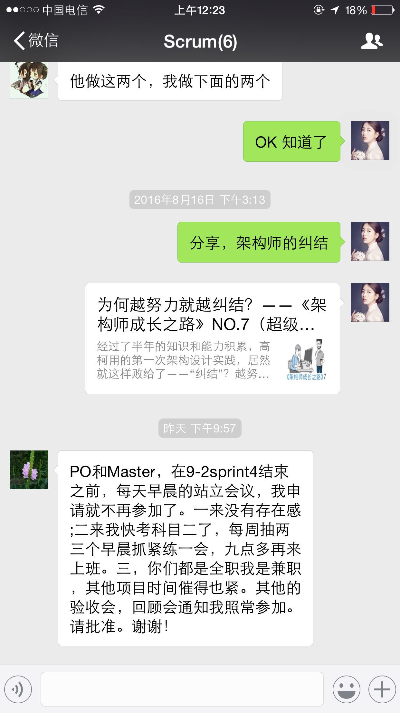 |
| 2016-08-24 00:24:05 | 你 | 别回了，没事 |
| 2016-08-24 00:24:16 | 你 | 那是马姐发的 |
| 2016-08-24 08:20:29 | 我 | [链接] 王雪松和李杰的聊天记录 |
| 2016-08-24 08:29:08 | 我 | 我和李杰的聊天你看了吗 |
| 2016-08-24 08:30:09 | 你 | 看了 也没啥 |
| 2016-08-24 08:30:12 | 你 | 就那么两句 |
| 2016-08-24 08:30:59 | 我 | 其实我后面是想知道邱是不是真的回避越级汇报 |
| 2016-08-24 08:31:29 | 你 | 他要是不喜欢 为什么还直接给李杰分配任务呢 |
| 2016-08-24 08:31:42 | 我 | 我觉得李杰的情况可能有点像王洪越的情况 |
| 2016-08-24 08:37:00 | 我 | 你看现在老杨也不喜欢洪越，也是直接给你安排任务，然后通知一下洪越 |
| 2016-08-24 08:37:26 | 我 | 我就想邱是不是也是这种情况 |
| 2016-08-24 08:37:59 | 我 | 邱不喜欢阎，所以经常直接安排 |
| 2016-08-24 08:38:57 | 我 | 如果是这种情况，至少在阎这个问题上邱应该是对越级汇报不反感 |
| 2016-08-24 08:39:10 | 我 | 你能明白吗 |
| 2016-08-24 08:39:29 | 你 | 哦 |
| 2016-08-24 08:39:40 | 你 | 我始终觉得是这样 |
| 2016-08-24 08:42:48 | 我 | 我昨天问李杰的几个问题其实就是想知道邱是怎么做的 |
| 2016-08-24 08:43:34 | 我 | 还有一个我昨天没好意思问，就是李杰和邱不能私聊吗？ |
| 2016-08-24 08:44:10 | 你 | 估计不会 |
| 2016-08-24 08:44:20 | 我 | 哦 |
| 2016-08-24 08:44:21 | 你 | 他们没什么私交 |
| 2016-08-24 08:44:52 | 我 | 这些道理你都懂，你回来和李杰交流吧 |
| 2016-08-24 08:45:48 | 你 | 我说她也不听 |
| 2016-08-24 08:45:52 | 你 | 不掉坑就不听 |
| 2016-08-24 08:46:07 | 我 | 哦 |
| 2016-08-24 08:46:25 | 我 | 这点你们俩不像 |
| 2016-08-24 08:46:26 | 你 | 昨天老杨说的那个706用需的事 用跟洪越说声吗 |
| 2016-08-24 08:46:42 | 我 | 你说一声吧 |
| 2016-08-24 08:46:52 | 我 | 没准今天晨会会问 |
| 2016-08-24 08:47:08 | 你 | 好 |
| 2016-08-24 08:56:25 | 你 | 我今天找马姐的时候跟他说下 不用她参加晨会了 |
| 2016-08-24 08:56:29 | 你 | 行吗 |
| 2016-08-24 08:56:38 | 我 | 行 |
| 2016-08-24 08:57:59 | 你 | 马姐 我跟老王给你问了 他说你要是忙就不用参加晨会了 但是review会和反思会还是尽量参与 |
| 2016-08-24 08:58:12 | 你 | 这样回复合适吗 review会我还得让马姐参与 |
| 2016-08-24 08:58:15 | 我 | 好 |
| 2016-08-24 08:59:48 | 你 | 杨总他对象比他大一岁 |
| 2016-08-24 08:59:57 | 我 | 是 |
| 2016-08-24 09:00:13 | 我 | 我媳妇比我大两岁 |
| 2016-08-24 09:00:23 | 你 | 啊？ |
| 2016-08-24 09:00:25 | 你 | 好吧 |
| 2016-08-24 09:00:32 | 你 | 你比我爸妈小四岁 |
| 2016-08-24 09:00:40 | 我 | 哦 |
| 2016-08-24 09:00:58 | 你 | 侯欣比你还大呢 |
| 2016-08-24 09:01:10 | 我 | 是 |
| 2016-08-24 09:01:30 | 你 | 那一辈子就是个公司职员了 |
| 2016-08-24 09:02:07 | 我 | 是啊，那还能怎样，我不也一样吗 |
| 2016-08-24 09:02:09 | 你 | 我昨天没有更新jira 因为不太清楚他们今天干啥 |
| 2016-08-24 09:02:21 | 我 | 没事 |
| 2016-08-24 09:02:26 | 你 | 不一样啊 你跟他当然不一样了 你是开发中心副总了 |
| 2016-08-24 09:02:33 | 你 | 他是啥 |
| 2016-08-24 09:02:41 | 你 | 他还依然啥也不会 |
| 2016-08-24 09:02:44 | 你 | 不说他了 |
| 2016-08-24 09:03:04 | 我 | 哈哈 |
| 2016-08-24 09:04:08 | 你 | 身份信息的 我要是把你也写成开发中心 就显得太刻意了 |
| 2016-08-24 09:04:24 | 你 | 所以就只把老田和老杨写成开发中心了 |
| 2016-08-24 09:05:05 | 我 | 没事，这种情况我不在意 |
| 2016-08-24 09:05:17 | 你 | 恩 我在意 所以跟你说下 |
| 2016-08-24 09:05:33 | 你 | 我偷偷发给你 让你知道些小事情 哈哈 |
| 2016-08-24 09:05:47 | 我 | 嗯[微笑] |
| 2016-08-24 09:06:11 | 你 | 杨总又给我发了骗文章 |
| 2016-08-24 09:06:59 | 你 | 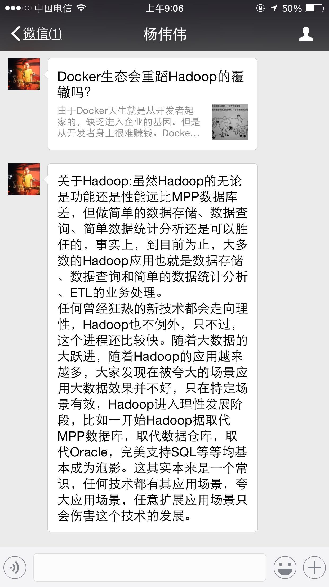 |
| 2016-08-24 09:07:06 | 我 | 最近都是他主动找你啦 |
| 2016-08-24 09:07:08 | 你 | 他是不是发错人了 |
| 2016-08-24 09:07:14 | 你 | 对啊，每次都是 |
| 2016-08-24 09:07:19 | 你 | 我没空搭理他 |
| 2016-08-24 09:07:35 | 我 | 这个他刚发到主管群里的 |
| 2016-08-24 09:07:46 | 你 | 啊？真的啊 |
| 2016-08-24 09:07:53 | 我 | 估计也是想让你看看 |
| 2016-08-24 09:08:00 | 你 | 那就是没发错 |
| 2016-08-24 09:08:02 | 你 | 我看看 |
| 2016-08-24 09:08:12 | 我 | 这些东西没有必要大范围 |
| 2016-08-24 09:08:30 | 你 | 哦 我不给别人发 也不发朋友圈 |
| 2016-08-24 09:08:31 | 你 | 呜呜 |
| 2016-08-24 09:10:05 | 我 | 你误会我的意思啦，我是说这种技术文章没有必要发到总群里面，所以都会是小范围发 |
| 2016-08-24 09:10:21 | 我 | 我也经常在一组里面发一些 |
| 2016-08-24 09:10:52 | 你 | 恩 |
| 2016-08-24 09:10:54 | 你 | 开会去吧 |
| 2016-08-24 09:10:58 | 我 | 好 |
| 2016-08-24 09:30:01 | 我 | 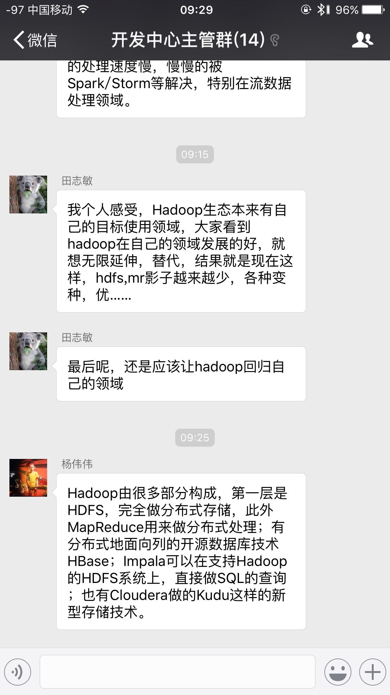 |
| 2016-08-24 09:30:23 | 我 | 不知道你看了什么感觉 |
| 2016-08-24 09:30:52 | 我 | 我觉得老田现在是急于表现他的技术 |
| 2016-08-24 09:35:07 | 你 | 唉 |
| 2016-08-24 09:36:10 | 我 | 706的软需你写的那部分 |
| 2016-08-24 09:38:25 | 你 | 账号的，但是这个模版是王洪越写的 |
| 2016-08-24 09:39:13 | 我 | 好的，里面有些问题，我先问问是不是你写的 |
| 2016-08-24 09:40:13 | 你 | 后边那6个用例， |
| 2016-08-24 09:40:30 | 我 | 好的 |
| 2016-08-24 11:06:30 | 我 | 亲，你忙吗 |
| 2016-08-24 11:07:02 | 你 | 不忙 看书呢 |
| 2016-08-24 11:07:23 | 我 | 好的，想和你聊天，不知道该聊什么 |
| 2016-08-24 11:07:38 | 我 | 现在好像就是想和你聊 |
| 2016-08-24 11:10:52 | 你 | 是啊 |
| 2016-08-24 11:10:57 | 你 | 我看你挺忙的 |
| 2016-08-24 11:11:21 | 我 | 是，不管多忙都想和你聊天 |
| 2016-08-24 11:11:48 | 你 | 嘿嘿 |
| 2016-08-24 11:12:09 | 你 | 那我说个话题吧 |
| 2016-08-24 11:12:20 | 你 | 我跟李杰问了下他们敏捷的测试 |
| 2016-08-24 11:12:22 | 我 | 好 |
| 2016-08-24 11:12:50 | 你 | 他们迭代完（最多两周）就要上线 |
| 2016-08-24 11:13:02 | 你 | 所以每次迭代的功能很小 很少 |
| 2016-08-24 11:13:07 | 你 | 也没有什么文档 |
| 2016-08-24 11:13:32 | 你 | 就是planning会的时候 测试人员会参与 然后研发的送测 测试的直接测 |
| 2016-08-24 11:13:34 | 你 | 没有文档 |
| 2016-08-24 11:13:44 | 我 | 嗯 |
| 2016-08-24 11:13:52 | 我 | 这是敏捷的正常状态 |
| 2016-08-24 11:13:53 | 你 | 最后测试的出一个性能的结果和数据准确性的 |
| 2016-08-24 11:14:12 | 你 | 咱们这个一个release 功能就比较多了 |
| 2016-08-24 11:14:19 | 你 | 所以得有文档 |
| 2016-08-24 11:14:45 | 你 | 上午马姐没来 我已经约了他了 等下午我问问她 |
| 2016-08-24 11:14:55 | 你 | 完了把结果告诉你 |
| 2016-08-24 11:15:24 | 我 | 好的 |
| 2016-08-24 11:18:17 | 你 | 这不是我说的那个话题 |
| 2016-08-24 11:18:36 | 我 | 哦 |
| 2016-08-24 11:19:31 | 你 | 稍等啊 |
| 2016-08-24 11:23:01 | 你 | 下午再聊吧 |
| 2016-08-24 11:23:08 | 我 | 好的 |
| 2016-08-24 11:23:16 | 你 | 我看看团建的那个事 严丹说不急 老田说着急 |
| 2016-08-24 11:23:25 | 我 | 好 |
| 2016-08-24 12:02:36 | 我 | 你吃的真快 |
| 2016-08-24 12:04:51 | 你 | 恩 |
| 2016-08-24 13:01:19 | 我 | 你一直在弄身份证吗 |
| 2016-08-24 13:01:33 | 你 | 那个早弄好了 |
| 2016-08-24 13:01:50 | 我 | 哦 |
| 2016-08-24 13:02:01 | 你 | 我看看采购的东西 分组 然后组织一个后勤的小队 帮我干活 |
| 2016-08-24 13:02:09 | 我 | 3点我有个会 |
| 2016-08-24 13:02:16 | 你 | 什么会啊 |
| 2016-08-24 13:03:02 | 我 | 任职的辅导 |
| 2016-08-24 13:03:07 | 我 | 辅导王志 |
| 2016-08-24 13:04:40 | 你 | 他也是专家啊？ |
| 2016-08-24 13:04:49 | 你 | 升为专家吗 |
| 2016-08-24 13:04:54 | 我 | 不是，他是被辅导 |
| 2016-08-24 13:05:00 | 我 | 因为没有升级 |
| 2016-08-24 13:05:44 | 你 | 哦，一对一吗 |
| 2016-08-24 13:06:32 | 我 | 我和鹿明辅导王志 |
| 2016-08-24 13:06:43 | 你 | 这么正式啊 |
| 2016-08-24 13:07:01 | 你 | 他升级参加答辩了吗 |
| 2016-08-24 13:07:06 | 我 | 是 |
| 2016-08-24 13:07:21 | 你 | 没听你说起啊 |
| 2016-08-24 13:08:17 | 我 | 结果没出来之前我是不能说的 |
| 2016-08-24 13:11:37 | 你 | 杨丽颖最近忙吗 |
| 2016-08-24 13:11:43 | 你 | 我想让他帮我干点事 |
| 2016-08-24 13:12:15 | 你 | 团建的时候我想让她和张明静负责收集整理游戏的道具 |
| 2016-08-24 13:12:30 | 你 | 本来是想阿娇和她的 阿娇太不给力了 |
| 2016-08-24 13:12:32 | 我 | 最近肯定不行，r2发版现在就她拖后腿了 |
| 2016-08-24 13:12:46 | 你 | r2什么时候送测啊 |
| 2016-08-24 13:12:51 | 我 | 月底 |
| 2016-08-24 13:13:02 | 你 | 具体哪天 |
| 2016-08-24 13:13:08 | 你 | 我自己看周报吧 |
| 2016-08-24 13:13:18 | 我 | 30号吧 |
| 2016-08-24 13:26:58 | 你 | 我今天很忙 |
| 2016-08-24 13:27:09 | 我 | 好吧 |
| 2016-08-24 13:27:15 | 你 | 得把团建的事落实下 |
| 2016-08-24 13:27:23 | 我 | 好 |
| 2016-08-24 13:27:28 | 我 | 你忙吧 |
| 2016-08-24 13:27:37 | 你 | 正在写周知邮件 |
| 2016-08-24 13:27:57 | 我 | 好的 |
| 2016-08-24 14:28:57 | 你 | 唉 |
| 2016-08-24 14:29:10 | 你 | 不知道究竟是谁的事 |
| 2016-08-24 14:29:57 | 我 | 咋了 |
| 2016-08-24 14:35:58 | 你 | 亲 |
| 2016-08-24 14:36:02 | 你 | 我觉得特别疲惫 |
| 2016-08-24 14:36:09 | 我 | 啊 |
| 2016-08-24 14:36:14 | 我 | 怎么啦 |
| 2016-08-24 14:36:18 | 你 | 这种事真是伤人伤己 |
| 2016-08-24 14:36:30 | 你 | 我特别想你 |
| 2016-08-24 14:36:32 | 你 | 怎么办 |
| 2016-08-24 14:41:40 | 我 | 亲，是什么事情呀 |
| 2016-08-24 14:41:50 | 我 | 好心疼你 |
| 2016-08-24 14:42:05 | 你 | 没事 |
| 2016-08-24 14:42:16 | 你 | 是你以前教给我的一些事情 应验了 |
| 2016-08-24 14:42:30 | 你 | 当时觉得没什么 现在觉得挺痛苦的 |
| 2016-08-24 14:42:44 | 我 | 啊，什么事情 |
| 2016-08-24 14:52:15 | 你 | 没什么大事 都是小事情 |
| 2016-08-24 14:52:18 | 你 | 不想烦你 |
| 2016-08-24 14:52:28 | 我 | 说吧 |
| 2016-08-24 14:52:40 | 我 | 你不说会急死我的 |
| 2016-08-24 14:53:21 | 你 | 对不起 又让你着急了 |
| 2016-08-24 14:53:38 | 你 | 软需里对copyright的范围限定的事 |
| 2016-08-24 14:53:51 | 我 | 嗯 |
| 2016-08-24 14:53:58 | 你 | 老田的意思是所有可执行组件返回的信息包含的都该 |
| 2016-08-24 14:54:11 | 你 | 王志理解的是help信息里包含的都改 |
| 2016-08-24 14:54:22 | 你 | 测试方案评审的时候 测试的理解的也是 |
| 2016-08-24 14:54:41 | 你 | 然后我不认可 最后也没说下来 然后让田定 |
| 2016-08-24 14:54:50 | 你 | 这是一个事 |
| 2016-08-24 14:55:00 | 我 | 好 |
| 2016-08-24 14:55:10 | 我 | 还有吗 |
| 2016-08-24 14:55:18 | 你 | 还有一个 测试提出select @@version;返回的版本信息也是完整的 |
| 2016-08-24 14:55:23 | 你 | 但是需求里没提 |
| 2016-08-24 14:55:32 | 你 | 测试的坚持也要改 |
| 2016-08-24 14:55:46 | 你 | 研发的意思是软需里没提 |
| 2016-08-24 14:55:56 | 你 | 我定不了 然后提出让老田定 |
| 2016-08-24 14:56:32 | 你 | 等回来以后我测试了以下 返回的跟select version();一模一样 王志说他做了 确实一样 |
| 2016-08-24 14:56:44 | 你 | 但是这个问题还是提出来了 |
| 2016-08-24 14:57:01 | 我 | 这个不是什么大事 |
| 2016-08-24 14:57:09 | 你 | 我跟洪越说 该不该需求 洪越说要是一样就不改了 |
| 2016-08-24 14:57:14 | 我 | 最多改需求 |
| 2016-08-24 14:57:20 | 你 | 但是跟测试研发说 还是要改 |
| 2016-08-24 14:57:25 | 你 | 那就改呗 |
| 2016-08-24 14:57:35 | 我 | 你别管这事 |
| 2016-08-24 14:57:42 | 你 | 可是旭明和王志评审的时候一直说需求变来变去的 |
| 2016-08-24 14:57:44 | 我 | 你就让洪越定 |
| 2016-08-24 14:57:49 | 你 | 这我就很冤枉啊 |
| 2016-08-24 14:58:31 | 我 | 那你就说需求评审的时候没人提 |
| 2016-08-24 14:58:48 | 你 | 这两个问题来说 需求变什么了 第一个需求根本没有变 他们理解不一致 就得我该需求 到领导那 他也会说我的 |
| 2016-08-24 14:59:07 | 我 | 第一个不一样 |
| 2016-08-24 14:59:24 | 我 | 第一个是产品级的事情 |
| 2016-08-24 14:59:36 | 你 | 这是两个问题 |
| 2016-08-24 14:59:41 | 你 | 你说的话一个个说 |
| 2016-08-24 15:00:05 | 我 | 第二个你反映给洪越就行 |
| 2016-08-24 15:00:13 | 你 | 我跟洪越说了 |
| 2016-08-24 15:00:18 | 你 | 爱怎么着就怎么着 |
| 2016-08-24 15:00:24 | 我 | 你就别管了 |
| 2016-08-24 15:00:42 | 我 | 我先开会 |
| 2016-08-24 15:00:52 | 你 | 嗯嗯 |
| 2016-08-24 15:00:53 | 你 | 好 |
| 2016-08-24 15:00:55 | 你 | 开吧 |
| 2016-08-24 15:01:58 | 我 | 现在就是扯皮 |
| 2016-08-24 15:02:15 | 我 | 你现在需要把洪越推出去 |
| 2016-08-24 15:02:26 | 你 | 算了 |
| 2016-08-24 15:02:28 | 我 | 让他挡在你前面 |
| 2016-08-24 15:02:30 | 你 | 你先忙 我没事 |
| 2016-08-24 15:03:08 | 我 | 这事我也会问问，但是我不能做的过于明显帮你 |
| 2016-08-24 15:03:48 | 我 | 你需要关注的是这事是怎么解决的 |
| 2016-08-24 15:03:55 | 你 | 你不用帮着我 我没受委屈 |
| 2016-08-24 15:04:00 | 我 | 至于结果其实和你无关 |
| 2016-08-24 15:04:04 | 你 | 这次跟上次软需评审不一样 |
| 2016-08-24 15:04:12 | 我 | 你要关注的是过程 |
| 2016-08-24 15:04:13 | 你 | 你不用为我出头 真的 |
| 2016-08-24 15:04:26 | 你 | 我跟你说的也是我关注过程后 我的感受 |
| 2016-08-24 15:04:35 | 我 | 等我 |
| 2016-08-24 15:04:39 | 你 | 更多的是跟你探讨 |
| 2016-08-24 15:05:51 | 我 | 嗯 |
| 2016-08-24 15:23:51 | 我 | 完事 |
| 2016-08-24 15:26:23 | 我 | 亲，你主要是烦什么呀？ |
| 2016-08-24 15:27:52 | 你 | 我不烦 |
| 2016-08-24 15:28:07 | 你 | 我只是觉得世态炎凉 没有朋友 都是利益 |
| 2016-08-24 15:28:25 | 我 | 唉 |
| 2016-08-24 15:29:10 | 我 | 这样也好，你就没有心理负担了[偷笑] |
| 2016-08-24 15:29:17 | 你 | 是 |
| 2016-08-24 15:29:52 | 你 | 我以前犯错的时候 或者觉得影响到他人利益的时候 会觉得自己很错 也会给别人道歉 |
| 2016-08-24 15:30:06 | 你 | 我发现他们都好的很快 都不跟我计较 |
| 2016-08-24 15:30:55 | 你 | 我想是我小人了 |
| 2016-08-24 15:30:56 | 你 | 可是 |
| 2016-08-24 15:30:59 | 你 | ！！！！！！！！！！！ |
| 2016-08-24 15:31:09 | 你 | 可是当他们为了维护自己利益 侵犯我的利益的时候 他们竟然丝毫不讲情面 |
| 2016-08-24 15:31:17 | 你 | 也没有我当初的负罪感 |
| 2016-08-24 15:31:25 | 我 | 是 |
| 2016-08-24 15:32:39 | 你 | 团建的周知邮件我编好后先发给田和严丹看吧 |
| 2016-08-24 15:32:52 | 你 | 他俩说行我再发 行吗 |
| 2016-08-24 15:32:59 | 我 | 我一般把人分成两种，一种是“亲人”，就是很亲近的人；一种是“其他人” |
| 2016-08-24 15:33:01 | 我 | 行 |
| 2016-08-24 15:33:08 | 你 | 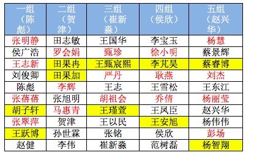 |
| 2016-08-24 15:33:24 | 你 | 这是新的分组 你看看有你需要调整的吗 |
| 2016-08-24 15:33:53 | 我 | 把我放到贺津他们组 |
| 2016-08-24 15:34:03 | 你 | 那你跟我一个组 |
| 2016-08-24 15:34:19 | 我 | 对呀 |
| 2016-08-24 15:34:27 | 你 | 而且还和老田 |
| 2016-08-24 15:34:32 | 你 | 你乐意吗 |
| 2016-08-24 15:34:47 | 我 | 那倒是，需要把老田调走 |
| 2016-08-24 15:35:19 | 你 | 我要是跟你一个组 会不会有人说闲话 |
| 2016-08-24 15:35:23 | 你 | 说我假公济私 |
| 2016-08-24 15:35:30 | 你 | 我可以跟乔倩调换 |
| 2016-08-24 15:35:36 | 我 | 我主要是想和贺津增进一下感情 |
| 2016-08-24 15:35:44 | 我 | 不会的 |
| 2016-08-24 15:35:59 | 我 | 是你太小心啦 |
| 2016-08-24 15:36:00 | 你 | 恩 我觉得有必要 我看看 |
| 2016-08-24 15:36:46 | 我 | 把我和田对调吧 |
| 2016-08-24 15:36:47 | 你 | 你不想跟田一起是吧 |
| 2016-08-24 15:36:57 | 你 | 人家那是一家四口人 |
| 2016-08-24 15:36:58 | 我 | 那倒不是 |
| 2016-08-24 15:37:00 | 你 | 亲爱的 |
| 2016-08-24 15:37:13 | 我 | 只是一个组里面都是领导就不好了 |
| 2016-08-24 15:37:31 | 你 | 我调吧 |
| 2016-08-24 15:37:34 | 你 | 你稍等 |
| 2016-08-24 15:38:10 | 我 | 好的，你先调着。我接着说 |
| 2016-08-24 15:38:58 | 你 | 好 |
| 2016-08-24 15:40:46 | 我 | 我对“亲人”和“其他人”的处理原则是不同的，“其他人”是按照利益的原则处理。“亲人”则是按照信任的原则处理。你就属于“亲人”的范畴。旭明和杨丽莹就属于“其他人”的范畴。 |
| 2016-08-24 15:40:56 | 你 | 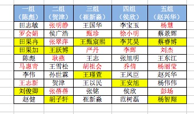 |
| 2016-08-24 15:40:58 | 你 | 再看看 |
| 2016-08-24 15:42:08 | 我 | 对于“亲人”我会投入感情，所以会比较包容，会更多从对方的利益出发 |
| 2016-08-24 15:42:43 | 我 | 对于“其他人”我会先维护我自己的利益，在此前提下去考虑他们的利益 |
| 2016-08-24 15:43:03 | 我 | 只有这样安排，自己的心理才能比较平衡 |
| 2016-08-24 15:43:15 | 我 | 也不会出现你现在出现的问题 |
| 2016-08-24 15:43:34 | 我 | 你怎么把你自己调开了呢 |
| 2016-08-24 15:44:32 | 你 | 不行 我不能跟你在一组 太明显了 |
| 2016-08-24 15:44:40 | 你 | 杨丽颖很肯定不爽 |
| 2016-08-24 15:44:46 | 我 | 好吧 |
| 2016-08-24 15:44:48 | 你 | 他肯定认为我假公济私 |
| 2016-08-24 15:45:00 | 你 | 其实我很想跟你一组的 真的真的 |
| 2016-08-24 15:45:04 | 我 | 就她一个人，有什么关系 |
| 2016-08-24 15:45:09 | 我 | 那就和我一组把 |
| 2016-08-24 15:45:19 | 我 | 你会发现什么事情都没有的 |
| 2016-08-24 15:47:08 | 你 | 真的吗 |
| 2016-08-24 15:47:12 | 你 | 没有事/ |
| 2016-08-24 15:47:23 | 我 | 放心吧，没事的 |
| 2016-08-24 15:47:32 | 你 | 那好吧 |
| 2016-08-24 15:47:33 | 我 | 真的 |
| 2016-08-24 15:47:36 | 你 | 我跟耿燕换一下 |
| 2016-08-24 15:47:40 | 我 | 好的 |
| 2016-08-24 15:48:11 | 你 | 你说的很对 |
| 2016-08-24 15:48:18 | 你 | 利益的那个 |
| 2016-08-24 15:48:27 | 你 | 我以前真的还是没看透 |
| 2016-08-24 15:48:30 | 我 | 我知道 |
| 2016-08-24 15:48:49 | 我 | 这些东西你必须经历过你才能明白 |
| 2016-08-24 15:49:28 | 我 | 我提前告诉你只是减少你经历痛苦的时间 |
| 2016-08-24 15:50:35 | 你 | 是 |
| 2016-08-24 15:50:37 | 你 | 是 |
| 2016-08-24 15:50:54 | 你 | 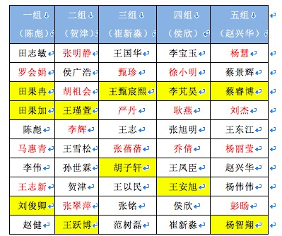 |
| 2016-08-24 15:50:59 | 我 | 还有一件事情，就是以后不论是什么情况，只要你觉得不舒服了，都要和我说 |
| 2016-08-24 15:51:00 | 你 | 再看看 |
| 2016-08-24 15:51:41 | 我 | 这样安排挺好 |
| 2016-08-24 15:51:48 | 你 | OK |
| 2016-08-24 15:51:50 | 你 | 那就这样 |
| 2016-08-24 15:52:20 | 我 | 你不能因为怕麻烦我就不说了 |
| 2016-08-24 15:52:37 | 我 | 你说了，我就能帮你，你就能快点成长 |
| 2016-08-24 15:53:12 | 我 | 你不说，也许这次没事，可是等以后我还是会知道的，我一样会担心的 |
| 2016-08-24 15:53:28 | 你 | enen 好 |
| 2016-08-24 15:53:32 | 你 | 我怕我老是烦你 |
| 2016-08-24 15:53:42 | 我 | 我知道 |
| 2016-08-24 15:54:02 | 我 | 可是你和我说了我其实是很高兴的 |
| 2016-08-24 15:54:18 | 我 | 每次能帮上你我都很高兴 |
| 2016-08-24 15:54:56 | 我 | 其实这些事情我只是点拨你一下就行 |
| 2016-08-24 15:55:15 | 我 | 你自己的能力是已经能够应付这些事情了 |
| 2016-08-24 15:55:32 | 我 | 只是你自己有时候会钻牛角尖 |
| 2016-08-24 15:55:59 | 你 | 是 |
| 2016-08-24 15:56:08 | 你 | 你说的正式我刚才经历的过程 |
| 2016-08-24 15:56:33 | 我 | 嗯 |
| 2016-08-24 16:01:27 | 你 | 这个邮件你看下 行吗 |
| 2016-08-24 16:01:29 | 你 | 真累人 |
| 2016-08-24 16:02:37 | 我 | 你的名单好像是旧的 |
| 2016-08-24 16:02:46 | 你 | 不是吧 |
| 2016-08-24 16:03:03 | 你 | 果然 |
| 2016-08-24 16:03:13 | 我 | 那就这样吧，别换了，太显眼了 |
| 2016-08-24 16:03:22 | 你 | 不行啊 |
| 2016-08-24 16:03:27 | 你 | 我真是太笨了 |
| 2016-08-24 16:03:37 | 你 | 哎呀 |
| 2016-08-24 16:03:39 | 我 | 没事，这都是小事 |
| 2016-08-24 16:04:10 | 你 | 没事 还是能调节的 |
| 2016-08-24 16:04:29 | 你 | 邮件不能撤销了吧 |
| 2016-08-24 16:04:35 | 我 | 不能了 |
| 2016-08-24 16:04:56 | 你 | 不行 我得换 |
| 2016-08-24 16:05:03 | 你 | 严丹也提意见了 |
| 2016-08-24 16:05:07 | 我 | 先歇会 |
| 2016-08-24 16:05:14 | 我 | 静静脑子 |
| 2016-08-24 16:05:46 | 你 | 不能撤销吗 |
| 2016-08-24 16:06:19 | 我 | 只能撤销从网页发的 |
| 2016-08-24 16:56:40 | 我 | 忙完了吗 |
| 2016-08-24 16:56:47 | 你 | meine |
| 2016-08-24 16:56:51 | 你 | 等 |
| 2016-08-24 17:56:05 | 你 | 亲 我很忙 |
| 2016-08-24 17:56:22 | 我 | 心疼死了 |
| 2016-08-24 17:56:30 | 我 | 你忙吧，我没事 |
| 2016-08-24 17:57:39 | 你 | 嗯嗯 |
| 2016-08-24 17:57:44 | 你 | 我是想跟你聊天 |
| 2016-08-24 17:58:15 | 我 | 嗯，你先忙 |
| 2016-08-24 17:58:45 | 我 | 以前都是我忙，终于有你比我忙的时候了[呲牙] |
| 2016-08-24 17:59:03 | 你 | 是啊 不过忙过这一阵就好了 |
| 2016-08-24 17:59:13 | 我 | 嗯 |
| 2016-08-24 18:41:44 | 你 | 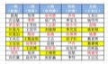 |
| 2016-08-24 18:41:47 | 你 | 新版的 |
| 2016-08-24 18:41:59 | 你 | 咱们那组关键人物都没变 |
| 2016-08-24 18:42:08 | 我 | 好的 |
| 2016-08-24 18:56:35 | 你 | 我是不是让你很无奈 |
| 2016-08-24 18:56:43 | 我 | 没有呀 |
| 2016-08-24 18:56:53 | 我 | 看着你很可爱 |
| 2016-08-24 18:57:15 | 你 | 真的吗 我都想找个地洞钻进去 |
| 2016-08-24 18:57:27 | 我 | 你做的挺好的 |
| 2016-08-24 18:57:40 | 我 | 你以前没有组织过 |
| 2016-08-24 18:58:02 | 你 | 你快别安慰我了 |
| 2016-08-24 18:58:05 | 我 | 今天你只是有点乱 |
| 2016-08-24 18:58:11 | 我 | 是因为你没有经验 |
| 2016-08-24 18:58:33 | 我 | 记着这种事情最重要的就是不能慌张 |
| 2016-08-24 18:58:41 | 你 | 恩 恩 |
| 2016-08-24 18:58:44 | 你 | 是呢 |
| 2016-08-24 19:03:53 | 我 | 赶紧回家吧 |
| 2016-08-24 19:04:41 | 我 | 看着你好心疼 |
| 2016-08-24 19:06:12 | 我 | 你不是去北京吗 |
| 2016-08-24 19:06:25 | 你 | 这周没空 |
| 2016-08-24 20:12:50 | 我 | 我不坐你车 |
| 2016-08-24 20:19:33 | 我 | 这么晚 |
| 2016-08-24 20:25:04 | 我 | 还没来接你吗 |
| 2016-08-24 20:25:29 | 你 | 一会就该来了 |
| 2016-08-24 20:25:50 | 你 | 你说你说的关于需求的这些我为什么就想不到呢 |
| 2016-08-24 20:25:55 | 你 | 我很生气 |
| 2016-08-24 20:26:07 | 我 | 因为我没和你讲过 |
| 2016-08-24 20:26:21 | 我 | 别生气啦 |
| 2016-08-24 20:26:31 | 你 | 你没跟我讲过，可是我自己也想不到啊 |
| 2016-08-24 20:26:32 | 我 | 是因为我说你吗 |
| 2016-08-24 20:26:37 | 你 | 不是， |
| 2016-08-24 20:26:44 | 我 | 想不到正常呀 |
| 2016-08-24 20:26:47 | 你 | 我是说你说的需求挖掘的事 |
| 2016-08-24 20:26:54 | 你 | 我怎么就想不到呢 |
| 2016-08-24 20:27:06 | 你 | 可是需求你已经带了我很久了 |
| 2016-08-24 20:27:11 | 我 | 开发中心没几个能想到 |
| 2016-08-24 20:27:14 | 你 | 我忒生日 |
| 2016-08-24 20:27:17 | 你 | 生气 |
| 2016-08-24 20:27:29 | 我 | 我多少年经验啦 |
| 2016-08-24 20:27:45 | 我 | 你要是真的能想到这些 |
| 2016-08-24 20:27:48 | 你 | 我不管，既然我是做需求的，我就得做好 |
| 2016-08-24 20:28:00 | 你 | 可是我真的一点点都没想到 |
| 2016-08-24 20:28:13 | 我 | 我就该找块豆腐撞死了 |
| 2016-08-24 20:28:15 | 你 | 可能这就是人外有人，山外有山吧 |
| 2016-08-24 20:28:49 | 我 | 你呀，眼界太高了 |
| 2016-08-24 20:28:50 | 你 | 我特别希望自己有点突破，而不是每次都是你告诉我 |
| 2016-08-24 20:29:04 | 我 | 以后就会有的 |
| 2016-08-24 20:29:06 | 你 | 我干了这么久的需求了，竟然还是这个样子 |
| 2016-08-24 20:29:09 | 你 | 唉 |
| 2016-08-24 20:29:15 | 我 | 你现在欠缺的还太多 |
| 2016-08-24 20:29:22 | 我 | 特别是人性 |
| 2016-08-24 20:29:37 | 我 | 做需求必须了解人性 |
| 2016-08-24 20:29:56 | 你 | 其实你说的这句话我就不是特别能理解 |
| 2016-08-24 20:30:41 | 你 | 你别告诉我，我想自己想 |
| 2016-08-24 20:31:18 | 你 | 不开心， |
| 2016-08-24 20:31:58 | 我 | 亲，你应该开心 |
| 2016-08-24 20:32:03 | 你 | 我还有很远的路要走 |
| 2016-08-24 20:32:09 | 我 | 至少我今天陪着你呀 |
| 2016-08-24 20:32:14 | 你 | 我也有开心的地方 |
| 2016-08-24 20:32:49 | 你 | 至少我知道，我还能走的更远，我还能靠你在需求的路上走的更远 |
| 2016-08-24 20:33:04 | 我 | 对呀 |
| 2016-08-24 20:33:07 | 你 | 不聊了，我需要静静 |
| 2016-08-24 20:33:30 | 我 | 好 |
{kind=link}
{kind=link}
{kind=link}
{kind=link}
{kind=link}
{kind=link}
{kind=link}
2016-08-25¶
| 2016-08-25 08:12:22 | 你 | 你别跟我说了 |
| 2016-08-25 08:12:26 | 你 | 她具体说的是啥 |
| 2016-08-25 08:12:49 | 你 | 你别跟我说她具体说的是啥了 |
| 2016-08-25 08:12:55 | 我 | 好的 |
| 2016-08-25 08:15:01 | 你 | 亲 你知道吗 我跟东东好了这么多年 他从来没给我买过花 我也从来没让他买过 |
| 2016-08-25 08:15:19 | 你 | 对于收花这种事 我跟你想法差不多 |
| 2016-08-25 08:15:32 | 我 | 嗯 |
| 2016-08-25 08:16:12 | 你 | 也可能是我们的经济水平没到那个地步 送花这件事 一点意义都没有 |
| 2016-08-25 08:16:38 | 你 | 我还觉得那种当众求婚的 特别无聊 |
| 2016-08-25 08:16:51 | 你 | 日子都是给自己过的 何必演戏给别人看 |
| 2016-08-25 08:16:56 | 我 | 是 |
| 2016-08-25 08:17:56 | 你 | 你知道我为啥说不让你跟我说杨丽颖说啥了吗 |
| 2016-08-25 08:18:16 | 我 | 不知道 |
| 2016-08-25 08:19:49 | 你 | 还是我自己太年轻 |
| 2016-08-25 08:20:05 | 你 | 我觉得我跟杨丽莹最近互动还不错 |
| 2016-08-25 08:20:26 | 你 | 周六那天上午聊了那么久 |
| 2016-08-25 08:20:31 | 我 | 嗯 |
| 2016-08-25 08:20:36 | 你 | 其实我是个很容易相信别人的人 |
| 2016-08-25 08:20:44 | 我 | 是的 |
| 2016-08-25 08:21:43 | 你 | 最主要的是 昨天丽影说 她以为我会跟我对象吵架、说外边下雨了，看咱们讨论就没跟咱们说啥的 等等这些细节的事 都让我对她挺有好感的 |
| 2016-08-25 08:21:47 | 你 | 真的 一点不骗你 |
| 2016-08-25 08:22:01 | 你 | 你看昨天咱们三个一起聊天 多美好 |
| 2016-08-25 08:22:28 | 你 | 其实这都不是真的 转头她就给我一刀 |
| 2016-08-25 08:27:03 | 我 | 唉 |
| 2016-08-25 08:27:15 | 我 | 我昨天和你说的 亲人和其他人的区别就是这样 |
| 2016-08-25 08:37:10 | 我 | 你看，我和杨丽莹不在一个层次，所以我不太会care她的这种事情。但是我和老田在一个层次，所以我不会因为老田和我说几句好话我就觉得我们的关系好了 |
| 2016-08-25 08:37:34 | 我 | 以前我和洪越也是这样的关系 |
| 2016-08-25 08:38:04 | 我 | 还有一个就是昨天你不应该当着杨丽莹的面说研发不好 |
| 2016-08-25 08:38:14 | 你 | 恩 我知道是我的问题 |
| 2016-08-25 08:38:27 | 我 | 具体来说这件事情确实是王志和胖子的问题 |
| 2016-08-25 08:38:44 | 我 | 但是有杨丽莹在我就不能帮你说话 |
| 2016-08-25 08:39:01 | 我 | 所以后来我把话题扯到流程上 |
| 2016-08-25 08:39:30 | 我 | 这还是因为你的政治经验太少的缘故 |
| 2016-08-25 08:40:01 | 我 | 首先这不是你的问题 |
| 2016-08-25 08:40:10 | 你 | 我没事 我没觉得这是你的任何问题 |
| 2016-08-25 08:40:18 | 你 | 我们昨天聊的很好 |
| 2016-08-25 08:40:19 | 你 | 真的 |
| 2016-08-25 08:40:26 | 你 | 你说的也对 |
| 2016-08-25 08:40:29 | 我 | 其次这些坑都得你自己去填一遍 |
| 2016-08-25 08:40:55 | 我 | 你昨天光关注我说的话的具体内容了 |
| 2016-08-25 08:41:05 | 我 | 其实还有一个更重要的事情 |
| 2016-08-25 08:41:13 | 我 | 就是我转移话题的能力 |
| 2016-08-25 08:41:21 | 我 | 你需要学习这种能力 |
| 2016-08-25 08:41:43 | 我 | 未来你作为一个leader，这种能力是必须的 |
| 2016-08-25 08:42:09 | 我 | 这也是驾驭人心的一部分 |
| 2016-08-25 08:43:22 | 你 | 恩 |
| 2016-08-25 08:43:35 | 你 | 我现在不想想这些 你让我自己静静 好吗 |
| 2016-08-25 08:43:41 | 你 | 我一会就没事了 |
| 2016-08-25 08:43:47 | 你 | 我真没事 |
| 2016-08-25 08:43:49 | 你 | 真的 |
| 2016-08-25 08:43:51 | 我 | 不好呗 |
| 2016-08-25 08:44:00 | 我 | 我怕你钻牛角尖 |
| 2016-08-25 08:44:08 | 你 | 不会的 |
| 2016-08-25 08:46:04 | 你 | 没事 |
| 2016-08-25 08:46:08 | 你 | 我自己想一会 |
| 2016-08-25 08:46:18 | 我 | 嗯 |
| 2016-08-25 09:39:19 | 我 | 告诉你一件事情吧 |
| 2016-08-25 09:39:41 | 你 | 说说 |
| 2016-08-25 09:39:52 | 我 | 昨天回家我发现光纤挂了[抓狂] |
| 2016-08-25 09:40:07 | 我 | 我的流量也用光了 |
| 2016-08-25 09:40:13 | 你 | 啊？ |
| 2016-08-25 09:40:17 | 你 | 然后呢 |
| 2016-08-25 09:40:23 | 我 | 昨晚连微博都没敢刷 |
| 2016-08-25 09:40:24 | 你 | 你流量都没了啊 |
| 2016-08-25 09:40:40 | 你 | 然后呢 |
| 2016-08-25 09:40:48 | 我 | 开着飞行玩了半天然后就睡觉了 |
| 2016-08-25 09:42:17 | 你 | 就告诉我这个啊？ |
| 2016-08-25 09:42:37 | 我 | 让你高兴一下呀 |
| 2016-08-25 09:45:19 | 我 | 番薯把你卖了 |
| 2016-08-25 09:45:55 | 你 | 昨天都卖了一次了 |
| 2016-08-25 09:46:29 | 我 | 找他打架去，我支持你 |
| 2016-08-25 10:21:26 | 我 | 我以为你找番薯打架去了 |
| 2016-08-25 10:21:32 | 你 | 打去了 |
| 2016-08-25 10:21:34 | 你 | 打完了 |
| 2016-08-25 10:21:40 | 我 | 我还去找你们了 |
| 2016-08-25 10:21:41 | 你 | 他真是冥顽不灵 |
| 2016-08-25 10:21:49 | 你 | 刚才王洪越 老田都在 |
| 2016-08-25 10:21:52 | 你 | 说这个事了 |
| 2016-08-25 10:21:56 | 我 | 给你壮胆去呢 |
| 2016-08-25 10:22:01 | 我 | 我看见了 |
| 2016-08-25 10:22:14 | 你 | 不用 我自己占理 不怕他们 |
| 2016-08-25 10:22:17 | 你 | 谁来都不怕 |
| 2016-08-25 10:22:21 | 我 | 好的 |
| 2016-08-25 10:22:34 | 你 | 他们分明就是在做可行性 根本不是需求 |
| 2016-08-25 10:22:50 | 你 | 我跟他说 汇报的时候说自己干的活 别说干需求的活 |
| 2016-08-25 10:23:01 | 你 | 他说我干的就是需求的活 投入人力了 怎么说 |
| 2016-08-25 10:23:02 | 我 | 没错 |
| 2016-08-25 10:23:14 | 我 | 使劲说他 |
| 2016-08-25 10:23:16 | 你 | 我说你干的是究竟怎么实现 这不是需求的活 |
| 2016-08-25 10:25:14 | 你 | 刚才番薯跟老田谈了下实现的事 我跟洪越 一言不发 |
| 2016-08-25 10:25:33 | 我 | 嗯 |
| 2016-08-25 10:25:45 | 你 | 不过是老田先问的 |
| 2016-08-25 10:25:56 | 你 | 我想这事还不找老王先说 笨死了 |
| 2016-08-25 10:26:23 | 我 | 唉，我正和番薯聊呢 |
| 2016-08-25 10:38:26 | 我 | 我训他了，就是你说的那些话 |
| 2016-08-25 10:41:05 | 你 | 他是不是跟你白扯白天 |
| 2016-08-25 10:41:08 | 你 | 他就是那样 |
| 2016-08-25 10:41:14 | 你 | 我都懒得跟他说话 |
| 2016-08-25 10:41:28 | 我 | 嗯 |
| 2016-08-25 10:42:30 | 你 | 别理他 |
| 2016-08-25 10:42:43 | 我 | 是 |
| 2016-08-25 10:42:46 | 你 | 我刚才跟他说也是 他根本不理我 就一直一直一直说他那一套 |
| 2016-08-25 10:43:05 | 我 | 没错，我都想打他 |
| 2016-08-25 10:43:13 | 我 | 使劲抽 |
| 2016-08-25 10:56:29 | 我 | 忙吗 |
| 2016-08-25 10:56:35 | 你 | 不忙 |
| 2016-08-25 10:56:37 | 你 | 怎么了 |
| 2016-08-25 10:57:13 | 我 | 想和你聊天 |
| 2016-08-25 10:58:28 | 你 | 好 聊吧 |
| 2016-08-25 10:58:51 | 我 | 你昨天有一个问题想和我说一直没空说呢 |
| 2016-08-25 10:59:08 | 你 | 我好像忘了说啥了 |
| 2016-08-25 10:59:17 | 你 | 的看聊天记录去 |
| 2016-08-25 10:59:43 | 我 | 我还没上传呢 |
| 2016-08-25 11:00:11 | 你 | 别传了 没事 等想起来再说 |
| 2016-08-25 11:00:49 | 我 | 好的 |
| 2016-08-25 11:01:07 | 我 | 最近的事情是不是让你很郁闷呀 |
| 2016-08-25 11:02:37 | 你 | 还好吧 |
| 2016-08-25 11:03:33 | 你 | 没有撞我郁闷的正点的 |
| 2016-08-25 11:03:39 | 我 | 那就是有呗 |
| 2016-08-25 11:04:06 | 你 | 除了那些杂事 就是杨丽颖这个 |
| 2016-08-25 11:04:14 | 我 | 嗯 |
| 2016-08-25 11:04:22 | 你 | 昨天评审的那事 我一点不郁闷 就是感触很多 |
| 2016-08-25 11:04:25 | 你 | 世态炎凉 |
| 2016-08-25 11:04:39 | 你 | 其实什么是江湖 这就是江湖 |
| 2016-08-25 11:06:05 | 你 | 农耕时代有武林盟主 因为那个时代 武功高能统治武林 现在只是不是『武』功统治武林了 但是江湖依然存在 |
| 2016-08-25 11:06:11 | 你 | 爱恨情仇也依然存在 |
| 2016-08-25 11:06:54 | 我 | 没错 |
| 2016-08-25 11:08:44 | 我 | 这些都是因为人性 |
| 2016-08-25 11:09:06 | 我 | 自古以来人性的变化是很小的 |
| 2016-08-25 11:09:35 | 你 | 对 是的 |
| 2016-08-25 11:10:37 | 我 | 你看古龙的书，讲的人性的恶的一面就比较多。金庸的书讲的人性的善的一面就比较多 |
| 2016-08-25 11:10:41 | 你 | 社会在变 技术在变 物也在变 唯一不变的就是人性 |
| 2016-08-25 11:10:48 | 我 | 哈哈 |
| 2016-08-25 11:10:54 | 我 | 这句话是我想和你说的 |
| 2016-08-25 11:11:09 | 你 | 恩 古龙的小说 尤其是边城 基调很灰 很悲伤 |
| 2016-08-25 11:11:25 | 我 | 每册 |
| 2016-08-25 11:11:28 | 我 | 没错 |
| 2016-08-25 11:11:30 | 你 | 没错 |
| 2016-08-25 11:11:32 | 你 | 哈哈 |
| 2016-08-25 11:11:48 | 你 | 我给你讲个桥段 |
| 2016-08-25 11:11:54 | 我 | 好 |
| 2016-08-25 11:12:32 | 你 | 傅红雪一直为父报仇 叶开看着被仇恨折磨的像鬼一样的红雪 心里i很难过 一直劝他放弃报仇 |
| 2016-08-25 11:12:48 | 你 | 说的是红雪会危害整个武林 |
| 2016-08-25 11:12:59 | 你 | 那大义凛然的样子 |
| 2016-08-25 11:13:09 | 我 | 嗯 |
| 2016-08-25 11:13:24 | 你 | 你知道叶开是个的浪子 |
| 2016-08-25 11:13:37 | 你 | 像树叶一样轻盈 永远开心 |
| 2016-08-25 11:14:21 | 你 | 但是 当李寻欢告诉叶开说他才是白天羽和花白凤的孩子的时候 |
| 2016-08-25 11:14:35 | 你 | 他也说以前的叶开已经死了 |
| 2016-08-25 11:15:20 | 你 | 当他再次听到说书的说白天羽是武林败类后 她像红雪附体一样 |
| 2016-08-25 11:15:26 | 你 | 跟那些人打架 |
| 2016-08-25 11:16:00 | 你 | 你看 从这点上就能看出来 道理懂了 和真能做到 中间隔了多远 |
| 2016-08-25 11:16:12 | 你 | 隔了不知道多少个叶开 |
| 2016-08-25 11:16:17 | 我 | 没错 |
| 2016-08-25 11:17:12 | 你 | 我们无时无刻的不在做取舍 |
| 2016-08-25 11:17:29 | 你 | 放弃什么 不放弃什么 都是自己的选择 |
| 2016-08-25 11:17:47 | 你 | 设计是 需求也是 |
| 2016-08-25 11:17:58 | 我 | 没错 |
| 2016-08-25 11:18:06 | 我 | 这就叫平衡 |
| 2016-08-25 11:18:14 | 你 | 还有一个桥段 |
| 2016-08-25 11:18:23 | 你 | 我觉得跟你和我很像 |
| 2016-08-25 11:18:24 | 我 | 我们整个人生就是要不停的平衡 |
| 2016-08-25 11:18:28 | 你 | 是 |
| 2016-08-25 11:19:12 | 你 | 但不懂得这一点的人大有人在 而如何平衡才是更难的 |
| 2016-08-25 11:19:44 | 你 | 另一个桥段背景太长 不说了 |
| 2016-08-25 11:20:23 | 我 | 好 |
| 2016-08-25 11:20:49 | 我 | 你知道吗，我的世界观受古龙的影响很大 |
| 2016-08-25 11:21:02 | 你 | 真的吗 说说 |
| 2016-08-25 11:21:03 | 我 | 当初看古龙的时候我是在高中 |
| 2016-08-25 11:21:10 | 我 | 之前看金庸的 |
| 2016-08-25 11:21:25 | 我 | 觉得人都应该向善 |
| 2016-08-25 11:21:36 | 我 | 可是看了古龙的就不一样 |
| 2016-08-25 11:21:42 | 我 | 好人不一定有好报 |
| 2016-08-25 11:21:57 | 你 | 是 |
| 2016-08-25 11:21:59 | 我 | 坏人不一定有坏报 |
| 2016-08-25 11:22:17 | 我 | 特别是好人和坏人的界限很模糊 |
| 2016-08-25 11:22:22 | 你 | 看自己想要什么了 |
| 2016-08-25 11:22:23 | 你 | 对 |
| 2016-08-25 11:22:37 | 你 | 正道的都说魔教坏 |
| 2016-08-25 11:22:45 | 你 | 说傅红雪是恶魔 |
| 2016-08-25 11:22:51 | 我 | 这些直接促使我去思考善恶 |
| 2016-08-25 11:22:57 | 你 | 是吧 |
| 2016-08-25 11:23:13 | 你 | 现在想来 这句善有善报 真是无根无据 |
| 2016-08-25 11:23:20 | 你 | 一点逻辑都没有 |
| 2016-08-25 11:24:41 | 你 | 杨丽颖说我的时候 你怎么回她的 |
| 2016-08-25 11:25:09 | 我 | 我只是说我知道情况 |
| 2016-08-25 11:25:18 | 我 | 这事我知道该怎么处理 |
| 2016-08-25 11:25:38 | 我 | 然后我就把话题岔开了 |
| 2016-08-25 11:25:47 | 你 | 恩 |
| 2016-08-25 11:26:03 | 你 | 你怎么看她说我这件事 |
| 2016-08-25 11:26:14 | 你 | 他跟你说我的时候 你觉得意外吗 |
| 2016-08-25 11:26:24 | 我 | 不意外 |
| 2016-08-25 11:26:40 | 我 | 你和我说的时候我就想到了她肯定有看法 |
| 2016-08-25 11:30:13 | 你 | 恩 |
| 2016-08-25 11:30:41 | 我 | 你去吃饭吗 |
| 2016-08-25 11:31:02 | 你 | 去 |
| 2016-08-25 11:31:10 | 我 | 好的 |
| 2016-08-25 13:30:29 | 你 | 这个评审为什么去 |
| 2016-08-25 13:31:39 | 我 | 不是定长的吗 |
| 2016-08-25 13:33:46 | 你 | 定长？不知道 |
| 2016-08-25 13:35:21 | 我 | 加载的，李连成也来了 |
| 2016-08-25 13:35:37 | 我 | 我忘了这是什么了 |
| 2016-08-25 13:36:06 | 你 | 加载不写磁盘的吧 |
| 2016-08-25 13:36:23 | 我 | 我还没睡醒呢 |
| 2016-08-25 13:36:33 | 你 | 哈哈 |
| 2016-08-25 13:56:07 | 我 | 又跑偏了 |
| 2016-08-25 13:56:15 | 你 | 跑哪去了 |
| 2016-08-25 13:57:02 | 我 | 李连成提出一个解决方案 |
| 2016-08-25 13:58:02 | 你 | 哈哈 |
| 2016-08-25 14:07:27 | 我 | 还是没有做需求挖掘 |
| 2016-08-25 14:08:08 | 我 | 都搞不清用户是要不写磁盘还是要自动清理 |
| 2016-08-25 14:08:35 | 我 | 王洪越今天一直问老毛 |
| 2016-08-25 14:15:14 | 我 | 老毛太要命啦，居然建议现在给现场打电话确认需求 |
| 2016-08-25 14:46:21 | 我 | 开完了 |
| 2016-08-25 14:46:30 | 我 | 重新确认需求 |
| 2016-08-25 15:10:26 | 我 | 你干啥去了 |
| 2016-08-25 15:10:35 | 你 | 筹备会 |
| 2016-08-25 15:10:52 | 我 | 团建吗 |
| 2016-08-25 15:13:35 | 你 | 是 |
| 2016-08-25 15:13:42 | 你 | 严丹这个人啊 |
| 2016-08-25 15:13:53 | 我 | 怎么啦 |
| 2016-08-25 15:14:17 | 你 | 她这个人 非得跟别人不一样 |
| 2016-08-25 15:14:38 | 你 | 非得显得他比每个人都有经验 都想的多 |
| 2016-08-25 15:15:22 | 我 | 他是有这个毛病 |
| 2016-08-25 15:15:40 | 我 | 特别是对你这样比较年轻的 |
| 2016-08-25 15:16:25 | 你 | 是 |
| 2016-08-25 15:16:35 | 你 | 范树磊 张旭明 还有我 |
| 2016-08-25 15:16:46 | 你 | 讨论的时候 就显她了 |
| 2016-08-25 15:16:58 | 你 | 我们说个A 她就说不好 非得B |
| 2016-08-25 15:17:07 | 你 | 她也不是针对我 是针对所有人 |
| 2016-08-25 15:17:11 | 我 | 是 |
| 2016-08-25 15:17:21 | 你 | 然后她说什么就是什么 |
| 2016-08-25 15:17:28 | 你 | 我也不跟她争 |
| 2016-08-25 15:19:31 | 我 | 是，没必要 |
| 2016-08-25 15:19:43 | 我 | 这也是我不想管这些事情的原因 |
| 2016-08-25 15:19:55 | 我 | 太多人觉得自己是专家了 |
| 2016-08-25 15:20:25 | 你 | 是 |
| 2016-08-25 15:20:29 | 你 | 你说的太对了 |
| 2016-08-25 15:20:34 | 你 | 尤其是严丹这类的 |
| 2016-08-25 15:40:54 | 我 | 你还在忙团建？ |
| 2016-08-25 15:42:40 | 你 | 是 |
| 2016-08-25 16:19:57 | 你 | 听讲课来了 |
| 2016-08-25 16:20:15 | 我 | 哦，好吧 |
| 2016-08-25 16:21:36 | 我 | 我特意为了和你聊天，才没去听他们的 |
| 2016-08-25 16:40:23 | 你 | 啊？我想听听8611的 |
| 2016-08-25 16:40:47 | 你 | 你可以随时来啊 |
| 2016-08-25 16:40:49 | 你 | 哈哈 |
| 2016-08-25 16:40:50 | 我 | 听吧，我没事。 |
| 2016-08-25 16:40:57 | 我 | 我写方案 |
| 2016-08-25 16:52:41 | 你 | 我可以不听了 |
| 2016-08-25 16:52:53 | 你 | 架构的基本讲完了 |
| 2016-08-25 16:53:03 | 我 | 好的 |
| 2016-08-25 16:56:01 | 你 | 你看我发的那个团建的组长职责明细行吗 |
| 2016-08-25 16:56:16 | 我 | 看了，不错 |
| 2016-08-25 16:56:22 | 你 | 唉，你看我最近有没有太高调啥的 |
| 2016-08-25 16:56:34 | 你 | 我特别怕严丹会恨我 |
| 2016-08-25 16:56:37 | 我 | 没有呀 |
| 2016-08-25 16:56:40 | 我 | 没事的 |
| 2016-08-25 16:57:16 | 你 | 以前这些事都是她管，现在换人了，她觉得我做的不好也有情可原 |
| 2016-08-25 16:57:59 | 你 | 别等着我没啥感觉的得罪她，得罪她是件很烦人的事 |
| 2016-08-25 16:58:12 | 我 | 你就别瞎想了 |
| 2016-08-25 16:58:26 | 你 | 恩，好 |
| 2016-08-25 16:58:41 | 我 | 她现在没把你放眼里 |
| 2016-08-25 16:58:55 | 你 | 唉，她啥也不管才好呢 |
| 2016-08-25 16:59:09 | 你 | 不放在眼里更好 |
| 2016-08-25 16:59:20 | 你 | 她事太多了 |
| 2016-08-25 16:59:35 | 我 | 是 |
| 2016-08-25 16:59:51 | 你 | 我跟老田碰事情比跟她轻松多了 |
| 2016-08-25 17:01:18 | 我 | 严丹其实和老杨是一类人 |
| 2016-08-25 17:01:25 | 我 | 都是管的特别细的人 |
| 2016-08-25 17:01:33 | 你 | 说说今天评需求的事 |
| 2016-08-25 17:01:59 | 你 | 管细没问题，严丹是非得按照她说的做， |
| 2016-08-25 17:02:08 | 我 | 嗯 |
| 2016-08-25 17:02:16 | 你 | 要是别人提不同意见，她就开始喷 |
| 2016-08-25 17:02:21 | 你 | 受不了 |
| 2016-08-25 17:02:26 | 你 | 不说她了 |
| 2016-08-25 17:02:31 | 我 | 好 |
| 2016-08-25 17:02:33 | 你 | 说说需求的事， |
| 2016-08-25 17:02:49 | 你 | 你怎么觉得他们没挖掘了，我学习学习 |
| 2016-08-25 17:03:24 | 我 | 今天李连成上来就给了一个方案，说可以压缩，可以按时间分类 |
| 2016-08-25 17:03:34 | 我 | 等等说了一大堆 |
| 2016-08-25 17:03:47 | 我 | 我一听这是要扩大需求 |
| 2016-08-25 17:03:56 | 你 | 恩 |
| 2016-08-25 17:04:06 | 你 | 他们一部都一个德性 |
| 2016-08-25 17:04:15 | 我 | 我就问用户到底是要什么，是什么原因让他们提的这个需求 |
| 2016-08-25 17:04:36 | 我 | 王志新就说就是她文档里面写的东西 |
| 2016-08-25 17:04:57 | 我 | 我说如果按照文档写的，那么用户就是不想让写日志 |
| 2016-08-25 17:05:11 | 你 | 然后呢 |
| 2016-08-25 17:05:16 | 我 | 可是日志这个东西本来就不是面向用户的 |
| 2016-08-25 17:05:27 | 我 | 是面向研发定位问题用的 |
| 2016-08-25 17:05:34 | 你 | 恩 |
| 2016-08-25 17:06:28 | 我 | 我说从用户反馈的情况看，我认为用户的痛点是文件数量太多导致系统报错 |
| 2016-08-25 17:06:55 | 我 | 如果是这个原因的话和文档里面写的就不完全一致 |
| 2016-08-25 17:07:24 | 我 | 我让他们继续和用户沟通，我想赶紧结束 |
| 2016-08-25 17:07:42 | 我 | 结果老毛来一句现在就打电话吧 |
| 2016-08-25 17:07:59 | 我 | 把我给气坏了 |
| 2016-08-25 17:09:10 | 你 | 哈哈 |
| 2016-08-25 17:09:41 | 你 | 他不知道你在想什么 |
| 2016-08-25 17:09:50 | 你 | 他以为你想确定需求 |
| 2016-08-25 17:10:10 | 我 | 对呀 |
| 2016-08-25 17:10:31 | 我 | 他说这样比较快 |
| 2016-08-25 17:11:08 | 我 | 可是这是一屋子人帮着收集需求 |
| 2016-08-25 17:11:28 | 我 | 洪越可高兴了，立刻就打电话 |
| 2016-08-25 17:12:29 | 我 | 结果技术支持说刚开始就是因为文件太多导致系统报错 |
| 2016-08-25 17:12:30 | 你 | 哈哈 |
| 2016-08-25 17:12:43 | 你 | 现场打电话了啊 |
| 2016-08-25 17:12:45 | 你 | 我晕 |
| 2016-08-25 17:13:01 | 我 | 后来有其他机器的硬盘坏了 |
| 2016-08-25 17:13:28 | 我 | 客户就说这是咱们写文件太多闹得 |
| 2016-08-25 17:13:42 | 我 | 其实和咱们没关系 |
| 2016-08-25 17:13:43 | 你 | 哦 |
| 2016-08-25 17:13:54 | 我 | 但是客户不干 |
| 2016-08-25 17:14:06 | 我 | 要求不写日志 |
| 2016-08-25 17:14:14 | 你 | 明白了 |
| 2016-08-25 17:14:20 | 你 | 原来是这样 |
| 2016-08-25 17:14:38 | 你 | 就是客户为什么不想写日志，这个问题需求文档里没写？ |
| 2016-08-25 17:14:46 | 我 | 对 |
| 2016-08-25 17:15:04 | 你 | 需求就直接让憋写日志了 |
| 2016-08-25 17:15:06 | 你 | 别 |
| 2016-08-25 17:15:11 | 我 | 我说这个分两件事情 |
| 2016-08-25 17:15:18 | 你 | 为什么不写没说？ |
| 2016-08-25 17:15:29 | 我 | 一个是文件数量太多导致的，这个是我们系统的问题 |
| 2016-08-25 17:15:34 | 你 | 对 |
| 2016-08-25 17:15:45 | 我 | 另一个是客户臆想出来的，这不是需求 |
| 2016-08-25 17:15:58 | 你 | 这是客户提的解决方案啊 |
| 2016-08-25 17:16:10 | 我 | 那么首先，客户对文件数量敏感 |
| 2016-08-25 17:16:35 | 你 | 数量太多是设计的事，系统现状，跟别写日志没关系 |
| 2016-08-25 17:16:40 | 你 | 你接着说 |
| 2016-08-25 17:17:20 | 我 | 客户是否对文件大小和磁盘读写敏感，我们现在无法得出结论 |
| 2016-08-25 17:17:47 | 你 | 哦 |
| 2016-08-25 17:18:25 | 我 | 所以如果只是解决数量的问题，那么我们可以通过限制数量来满足客户，不一定非得不写日志 |
| 2016-08-25 17:18:38 | 你 | 是现场出现的问题是否是文件太多导致的，这个不知道吗？ |
| 2016-08-25 17:18:44 | 你 | 哦，我明白了 |
| 2016-08-25 17:19:33 | 我 | 日志文件数量多确实是咱们系统的设计问题 |
| 2016-08-25 17:20:09 | 你 | 恩 |
| 2016-08-25 17:23:59 | 我 | 我之所以说这是需求挖掘的事情，原因就是用户提出来的不写日志的需求其实是一个被扩大的需求 |
| 2016-08-25 17:24:24 | 你 | 恩 |
| 2016-08-25 17:24:27 | 你 | 明白了 |
| 2016-08-25 17:24:30 | 我 | 并不是问题所对应的真正的需求 |
| 2016-08-25 17:24:54 | 我 | 今天其实就是我替他们做了一次需求挖掘 |
| 2016-08-25 17:25:23 | 我 | 本来这些事情都应该是王志新去做 |
| 2016-08-25 17:41:32 | 我 | 你没事了吧 |
| 2016-08-25 17:43:04 | 你 | 没事 |
| 2016-08-25 17:44:59 | 我 | 好的 |
| 2016-08-25 18:00:31 | 你 | 你干嘛呢 |
| 2016-08-25 18:00:57 | 我 | 看微博 |
| 2016-08-25 18:07:13 | 你 | 什么微博必须现在刷啊 |
| 2016-08-25 18:07:26 | 你 | 我周末去北京 跟我姐一起玩去 |
| 2016-08-25 18:07:47 | 我 | 无聊呀 |
| 2016-08-25 18:07:53 | 你 | 聊啊 |
| 2016-08-25 18:07:55 | 我 | 你又不陪我 |
| 2016-08-25 18:08:29 | 我 | 我看你和他们聊的挺好 |
| 2016-08-25 18:08:38 | 你 | 我跟谁聊了啊 |
| 2016-08-25 18:08:53 | 我 | 胖子他们呀 |
| 2016-08-25 18:10:50 | 我 | 你几点回家 |
| 2016-08-25 18:11:01 | 我 | 不会又九点吧 |
| 2016-08-25 18:11:15 | 你 | 不知道 |
| 2016-08-25 18:11:23 | 我 | 唉 |
| 2016-08-25 18:12:20 | 你 | 没事的 |
| 2016-08-25 18:12:23 | 你 | 你干嘛呢 |
| 2016-08-25 18:12:35 | 我 | 等你呢 |
| 2016-08-25 18:12:47 | 你 | 我没事了 |
| 2016-08-25 18:13:16 | 我 | 好 |
| 2016-08-25 18:16:43 | 我 | 昨天你看剧了吗 |
| 2016-08-25 18:16:52 | 你 | 看了 又哭了 |
| 2016-08-25 18:16:57 | 你 | 咱们聊小说吧 |
| 2016-08-25 18:17:06 | 我 | 嗯 |
| 2016-08-25 18:17:56 | 我 | 你昨天看到哪了 |
| 2016-08-25 18:18:19 | 你 | 看到翠浓又活了 |
| 2016-08-25 18:18:31 | 我 | 哦 |
| 2016-08-25 18:18:55 | 我 | 这一段好像是挺揪心的 |
| 2016-08-25 18:19:04 | 你 | 是 |
| 2016-08-25 18:19:07 | 你 | 你也看呢吗 |
| 2016-08-25 18:19:10 | 我 | 时间长了，有点忘了 |
| 2016-08-25 18:19:25 | 你 | 我早记不住了 |
| 2016-08-25 18:19:26 | 我 | 没看 |
| 2016-08-25 18:19:33 | 我 | 以前看书 |
| 2016-08-25 18:19:47 | 你 | 就是翠侬替傅红雪挡了刀 |
| 2016-08-25 18:19:55 | 我 | 是 |
| 2016-08-25 18:20:19 | 我 | 古龙写感情就是写的这么激烈 |
| 2016-08-25 18:20:42 | 你 | 我最难受的是傅红雪 |
| 2016-08-25 18:20:55 | 我 | 你了解古龙这个人吗 |
| 2016-08-25 18:20:58 | 你 | 剧里他是个瘸子 |
| 2016-08-25 18:21:25 | 你 | 走路的时候我的心都跟着颤 |
| 2016-08-25 18:21:33 | 你 | 而且是个大帅哥 |
| 2016-08-25 18:21:39 | 你 | 我心疼的啊 |
| 2016-08-25 18:21:47 | 你 | 不了解 据说古龙超级爱喝酒 |
| 2016-08-25 18:22:09 | 我 | 是 |
| 2016-08-25 18:22:10 | 你 | 都是一边写小说一边换酒钱 |
| 2016-08-25 18:22:34 | 我 | 其实是很落魄的一个人 |
| 2016-08-25 18:22:39 | 你 | 嗯嗯 |
| 2016-08-25 18:22:45 | 我 | 但是很乐观 |
| 2016-08-25 18:22:48 | 你 | 好像听我爸爸说过 |
| 2016-08-25 18:22:50 | 你 | 是吗 |
| 2016-08-25 18:22:56 | 我 | 也看得开 |
| 2016-08-25 18:23:11 | 我 | 有钱就花天酒地 |
| 2016-08-25 18:23:34 | 我 | 没钱就写小说 |
| 2016-08-25 18:23:45 | 你 | 真的啊 |
| 2016-08-25 18:23:49 | 你 | 很喜欢女人 |
| 2016-08-25 18:23:50 | 你 | ？ |
| 2016-08-25 18:23:55 | 我 | 非常喜欢 |
| 2016-08-25 18:24:07 | 你 | 唉 |
| 2016-08-25 18:24:16 | 我 | 所以他对人性非常了解 |
| 2016-08-25 18:24:36 | 我 | 酸甜苦辣都经历过 |
| 2016-08-25 18:25:31 | 你 | 你说没有经历的人 总是不能写出那么引起共鸣的作品 |
| 2016-08-25 18:25:52 | 我 | 是 |
| 2016-08-25 18:26:19 | 你 | 你说傅红雪 从小就是被她妈妈训练的成个复仇的工具 |
| 2016-08-25 18:26:27 | 我 | 其实我一直觉得，不是我在看他的书 |
| 2016-08-25 18:26:30 | 你 | 他的世界里没有爱 只有恨 |
| 2016-08-25 18:26:42 | 我 | 是他替我经历这些人生 |
| 2016-08-25 18:26:44 | 你 | 是在经历他的人生 |
| 2016-08-25 18:26:46 | 你 | 嗯嗯 |
| 2016-08-25 18:26:49 | 你 | 神同步 |
| 2016-08-25 18:26:53 | 我 | 是 |
| 2016-08-25 18:26:58 | 你 | 好同步 |
| 2016-08-25 18:27:07 | 你 | 我们接着说傅红雪 |
| 2016-08-25 18:27:11 | 我 | 好 |
| 2016-08-25 18:27:14 | 你 | 在他身上找自己的影子 |
| 2016-08-25 18:27:42 | 你 | 他的世界都是灰色的 他没有感情 他的感情都被他藏起来了 |
| 2016-08-25 18:27:48 | 我 | 是 |
| 2016-08-25 18:27:59 | 你 | 这种藏 不是故意的 |
| 2016-08-25 18:28:08 | 你 | 是他长期培养的习惯 |
| 2016-08-25 18:28:26 | 我 | 没错 |
| 2016-08-25 18:28:35 | 你 | 你说这么一个人 |
| 2016-08-25 18:28:45 | 你 | 没有享受过任何人生 |
| 2016-08-25 18:28:54 | 你 | 没有放纵过任何欲望 |
| 2016-08-25 18:29:35 | 我 | 是 |
| 2016-08-25 18:29:38 | 你 | 当他足够强大 到准备杀人 |
| 2016-08-25 18:29:57 | 你 | 此时遇见了翠侬 |
| 2016-08-25 18:30:05 | 你 | 这个边城的花魁 |
| 2016-08-25 18:30:28 | 你 | 当一个女人 用如火的热情拥抱他的时候 她的内心会怎样 |
| 2016-08-25 18:30:35 | 你 | 他 |
| 2016-08-25 18:31:23 | 我 | 其实他什么都知道 |
| 2016-08-25 18:31:46 | 我 | 他只是压抑自己 |
| 2016-08-25 18:31:57 | 你 | 他知道吗 |
| 2016-08-25 18:32:03 | 我 | 他知道 |
| 2016-08-25 18:32:15 | 我 | 首先他是一个杀手 |
| 2016-08-25 18:32:22 | 你 | 他刚开始就是怜惜翠侬 |
| 2016-08-25 18:32:30 | 我 | 而且是一个优秀的杀手 |
| 2016-08-25 18:33:01 | 你 | 而且电视里的他特别有爱心 |
| 2016-08-25 18:33:15 | 我 | 是 |
| 2016-08-25 18:33:22 | 你 | 总是让翠侬离开 |
| 2016-08-25 18:33:42 | 你 | 别在无名居作舞女 |
| 2016-08-25 18:34:11 | 你 | 后来他知道她为万马堂做暗探后 更让她离开 |
| 2016-08-25 18:34:43 | 你 | 说看着翠侬因为所谓的使命 做自己不喜欢做的事 就想到自己 |
| 2016-08-25 18:35:51 | 你 | 后来翠侬死的时候 他说希望下辈子遇见的时候 都只是普通人 |
| 2016-08-25 18:36:33 | 我 | 嗯 |
| 2016-08-25 18:39:35 | 我 | 你觉得自己和翠侬像吗？ |
| 2016-08-25 18:40:15 | 你 | 不像 |
| 2016-08-25 18:40:23 | 你 | 我觉得他俩特别可怜 |
| 2016-08-25 18:40:31 | 你 | 真的是苦命鸳鸯 |
| 2016-08-25 18:40:53 | 你 | 团建大家都挺兴奋的 |
| 2016-08-25 18:40:57 | 我 | 是 |
| 2016-08-25 19:02:08 | 你 | 你不回家吗 |
| 2016-08-25 19:02:30 | 我 | 不着急，宋文彬去打球了 |
| 2016-08-25 19:02:41 | 我 | 现在地铁人多 |
| 2016-08-25 19:03:29 | 你 | 哦 |
| 2016-08-25 19:03:33 | 你 | 我想回家 |
| 2016-08-25 19:03:40 | 我 | 赶紧回家吧 |
| 2016-08-25 19:03:51 | 你 | 我老公不下班 我回不去 |
| 2016-08-25 19:04:08 | 我 | 命令他立刻来接你 |
| 2016-08-25 19:04:17 | 你 | 哈哈 |
| 2016-08-25 19:04:22 | 你 | 我试试 |
| 2016-08-25 19:10:34 | 我 | 东东来吗 |
| 2016-08-25 19:10:47 | 你 | 估计最快还得半个小时 |
| 2016-08-25 19:10:51 | 你 | 我要崩溃了 |
| 2016-08-25 19:11:03 | 我 | 我陪你会吧 |
| 2016-08-25 19:11:27 | 你 | 好 |
| 2016-08-25 19:12:44 | 我 | 项目百态：软件项目管理面面观（修订版） |
| 2016-08-25 19:13:25 | 你 | 这本书 |
| 2016-08-25 19:13:47 | 我 | 想看吗，我有电子版 |
| 2016-08-25 19:14:22 | 你 | 好 发给我 |
| 2016-08-25 19:14:31 | 你 | 想听真话还是假话 |
| 2016-08-25 19:14:41 | 我 | 真话呀 |
| 2016-08-25 19:15:51 | 你 | 不想看 |
| 2016-08-25 19:16:06 | 我 | 为啥呢 |
| 2016-08-25 19:16:54 | 你 | 因为我懒 |
| 2016-08-25 19:17:06 | 我 | 哈哈 |
| 2016-08-25 19:17:47 | 我 | 放到同步文件夹了 |
| 2016-08-25 19:17:52 | 你 | 咱们很久没做过黑白的游戏了 |
| 2016-08-25 19:17:53 | 你 | 好的 |
| 2016-08-25 19:18:00 | 我 | 你可以先看看，没准你就有共鸣了 |
| 2016-08-25 19:18:09 | 你 | 说的对 |
| 2016-08-25 19:18:11 | 我 | 这个可以随时看 |
| 2016-08-25 19:18:19 | 你 | 恩 |
| 2016-08-25 19:18:29 | 我 | 非常适合碎片时间 |
| 2016-08-25 19:19:15 | 你 | 嗯嗯 好的 |
| 2016-08-25 19:19:29 | 我 | 我平时都是在手机里面看 |
| 2016-08-25 19:20:01 | 我 | 你想玩黑白游戏了？ |
| 2016-08-25 19:20:18 | 你 | 是啊 |
| 2016-08-25 19:20:26 | 你 | 怎么弄到手机里 |
| 2016-08-25 19:21:03 | 我 | 我一般用airdrop |
| 2016-08-25 19:21:10 | 我 | 需要打开蓝牙 |
| 2016-08-25 19:22:04 | 你 | 我看会小说 |
| 2016-08-25 19:22:11 | 你 | 明天在弄 |
| 2016-08-25 19:22:14 | 我 | 好的 |
| 2016-08-25 19:25:00 | 我 | “网球场上有“白线”，项目也需要白线来严格界定需求的边界” 摘录来自: [美] Tom DeMarco Peter Hruschka Tim Lister Steve McMenamin James Robertson Suzanne Robertson. “项目百态：软件项目管理面面观（修订版）”。 iBooks. |
2016-08-26¶
| 2016-08-26 08:11:39 | 我 | 早 |
| 2016-08-26 08:12:35 | 你 | 早 |
| 2016-08-26 08:56:16 | 你 | 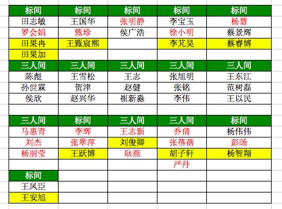 |
| 2016-08-26 08:56:29 | 你 | 你跟贺津 赵兴华一屋 |
| 2016-08-26 08:56:31 | 你 | 可以吗 |
| 2016-08-26 08:56:36 | 我 | 可以 |
| 2016-08-26 10:45:39 | 你 | 你怎么不搭理我 |
| 2016-08-26 10:45:40 | 你 | 呜呜 |
| 2016-08-26 10:45:58 | 我 | 我不是看你一直忙呢吗 |
| 2016-08-26 10:46:13 | 你 | 我不忙 |
| 2016-08-26 10:46:25 | 我 | 好吧 |
| 2016-08-26 10:46:28 | 我 | 聊天呀 |
| 2016-08-26 10:46:35 | 你 | 我忙也需要你 |
| 2016-08-26 10:46:37 | 你 | 哈哈 |
| 2016-08-26 10:46:41 | 你 | 需要你陪我 |
| 2016-08-26 10:46:53 | 我 | 好，那就陪着你 |
| 2016-08-26 10:47:05 | 我 | 我是乐此不疲 |
| 2016-08-26 10:47:07 | 你 | 咱们组的队歌选《明天会更好》行吗 |
| 2016-08-26 10:47:12 | 你 | 我特喜欢这首歌 |
| 2016-08-26 10:47:17 | 我 | 可以 |
| 2016-08-26 10:47:26 | 你 | 还可以跟你一起唱 多美好 |
| 2016-08-26 10:47:28 | 你 | 哈哈 |
| 2016-08-26 10:47:35 | 我 | 是呀 |
| 2016-08-26 10:47:41 | 你 | 你喜欢吗 |
| 2016-08-26 10:48:01 | 我 | 喜欢 |
| 2016-08-26 10:48:21 | 你 | 真的假的 |
| 2016-08-26 10:48:24 | 你 | 你会唱吗 |
| 2016-08-26 10:48:41 | 我 | 真的喜欢 |
| 2016-08-26 10:48:46 | 我 | 我应该会唱 |
| 2016-08-26 10:50:07 | 我 | 是群星合唱的吧 |
| 2016-08-26 10:50:54 | 你 | 是 |
| 2016-08-26 11:09:06 | 你 | 严丹就得胡祖会治 |
| 2016-08-26 11:09:18 | 我 | 咋了 |
| 2016-08-26 12:18:32 | 我 | 亲，你不睡吗 |
| 2016-08-26 12:18:42 | 你 | 心情不好 |
| 2016-08-26 12:18:55 | 我 | 啊，咋了 |
| 2016-08-26 12:19:03 | 我 | 赶紧和我说说 |
| 2016-08-26 12:19:13 | 你 | 看着你跟他们玩 心情不好 |
| 2016-08-26 12:19:42 | 我 | 哦，我去找你玩去。 |
| 2016-08-26 12:20:28 | 你 | 不用 |
| 2016-08-26 12:20:38 | 我 | 话说你这两天是太忙了 |
| 2016-08-26 12:20:39 | 你 | 我不想跟他们说话 |
| 2016-08-26 12:20:44 | 你 | 我不忙 |
| 2016-08-26 12:20:47 | 你 | 我没觉得忙 |
| 2016-08-26 12:20:54 | 我 | 我去找你 |
| 2016-08-26 12:20:59 | 你 | 不用 |
| 2016-08-26 12:21:01 | 你 | 别来 |
| 2016-08-26 12:25:50 | 我 | 你睡觉吗 |
| 2016-08-26 12:28:05 | 我 | 刚才光想着去找你了，都忘了带个道具过去[呲牙] |
| 2016-08-26 12:31:37 | 你 | 哈哈 |
| 2016-08-26 14:00:10 | 我 | 你忙 啥呢 |
| 2016-08-26 14:01:25 | 你 | 企业管理器有个需求 |
| 2016-08-26 14:01:59 | 我 | 好的，那你先忙 |
| 2016-08-26 14:33:22 | 你 | 我今天好忙 |
| 2016-08-26 14:33:32 | 我 | 是 |
| 2016-08-26 14:33:48 | 我 | 又有新的事情了？ |
| 2016-08-26 14:36:45 | 你 | 你不是说让范树磊和我写测试说明嘛 |
| 2016-08-26 14:36:56 | 你 | 番薯也不会写 那我就写吧 |
| 2016-08-26 14:36:59 | 我 | 不是测试说明 |
| 2016-08-26 14:37:39 | 我 | 是这次研发的主要功能 |
| 2016-08-26 14:37:58 | 我 | 等送测的时候要写送测说明 |
| 2016-08-26 14:48:27 | 我 | 我的电脑死机了 |
| 2016-08-26 14:53:18 | 你 | 我上不去网了 |
| 2016-08-26 14:53:48 | 我 | 稍等，我看一下 |
| 2016-08-26 14:54:24 | 你 | 好了 |
| 2016-08-26 14:54:32 | 我 | 好 |
| 2016-08-26 14:57:15 | 我 | 你和番薯说了吗 |
| 2016-08-26 14:58:08 | 你 | 说了 他没空写 我写写吧 |
| 2016-08-26 14:58:37 | 我 | 唉，他太会偷懒啦 |
| 2016-08-26 14:58:49 | 我 | 以后不能把你们安排在一起了 |
| 2016-08-26 14:58:53 | 你 | 没有 |
| 2016-08-26 14:58:54 | 我 | 他们老欺负你 |
| 2016-08-26 14:59:05 | 你 | 下次不能让我跟他一起干活 |
| 2016-08-26 14:59:15 | 你 | 他是leader 老推给我 |
| 2016-08-26 14:59:27 | 我 | 是 |
| 2016-08-26 14:59:32 | 你 | 我想这次我就忍了 |
| 2016-08-26 15:00:26 | 我 | 这事怨我 |
| 2016-08-26 15:00:44 | 你 | 没事拉 |
| 2016-08-26 15:00:50 | 你 | 也不是啥大事 写写没坏处 |
| 2016-08-26 15:00:52 | 你 | 真的 |
| 2016-08-26 15:00:59 | 你 | 我要是真不想写 我就不写了 |
| 2016-08-26 15:01:05 | 我 | 好吧 |
| 2016-08-26 15:13:15 | 我 | 他不知道你和我说了 |
| 2016-08-26 15:13:32 | 我 | 我只是问他写的怎么样了 |
| 2016-08-26 15:13:42 | 你 | 然后呢 |
| 2016-08-26 15:13:52 | 我 | 他说你写，我说你怎么写得了 |
| 2016-08-26 15:14:09 | 你 | 然后呢 |
| 2016-08-26 15:14:10 | 我 | 你又没有送测过 |
| 2016-08-26 15:14:31 | 我 | 后来他就说他写 |
| 2016-08-26 15:14:41 | 你 | 我晕 |
| 2016-08-26 15:14:42 | 你 | 好吧 |
| 2016-08-26 15:15:35 | 我 | 你要是想写你就写 |
| 2016-08-26 15:15:47 | 我 | 不想写就直接发给他 |
| 2016-08-26 15:16:39 | 你 | 好的 |
| 2016-08-26 15:16:51 | 你 | 多谢 你有为我出头 |
| 2016-08-26 15:17:15 | 我 | 不用，这事本来就是我惹出来的 |
| 2016-08-26 15:17:40 | 你 | 也不是啥大事 |
| 2016-08-26 15:17:42 | 你 | 没事啊 |
| 2016-08-26 15:17:45 | 我 | 田财迷的毛病又犯了 |
| 2016-08-26 15:19:05 | 你 | 咋了 |
| 2016-08-26 15:19:58 | 你 | 你看老田写的那句话 就是团建的第一段 |
| 2016-08-26 15:19:59 | 你 | 哈哈 |
| 2016-08-26 15:21:05 | 我 | 公司组建虚拟网，个人的工作机以后就没法调试代码了，需要新买一批机器，前两天说经费公司出，田就让多报，今天说经费行销部出，他就挨台确认用途了 |
| 2016-08-26 15:21:12 | 你 | |
| 2016-08-26 15:21:35 | 你 | 哈哈 |
| 2016-08-26 15:21:41 | 你 | 你看我写的 |
| 2016-08-26 15:21:52 | 我 | 说的真不错 |
| 2016-08-26 15:22:31 | 你 | 必须的 前边还有一段 就不给你发了 |
| 2016-08-26 15:22:41 | 我 | 哦 |
| 2016-08-26 15:23:17 | 你 | 唉 我是不是特积极 |
| 2016-08-26 15:23:39 | 我 | 是呀 |
| 2016-08-26 15:24:21 | 你 | 哈哈 |
| 2016-08-26 15:24:35 | 你 | 有没有特别高调 |
| 2016-08-26 15:24:50 | 我 | 没有，组织的挺好的 |
| 2016-08-26 15:25:01 | 你 | 恩 好 |
| 2016-08-26 15:35:13 | 你 | 这个活终于可以交出去了 |
| 2016-08-26 15:35:17 | 你 | 太感谢你了 |
| 2016-08-26 15:35:24 | 你 | 愁的我啊 |
| 2016-08-26 15:35:51 | 我 | 以后你有发愁的事情都和我说 |
| 2016-08-26 15:36:02 | 我 | 我都会给你解决的 |
| 2016-08-26 15:36:11 | 我 | 你不要怕麻烦我 |
| 2016-08-26 15:36:24 | 我 | 这些事情对我只是举手之劳 |
| 2016-08-26 16:33:31 | 你 | 我终于忙的差不多了 |
| 2016-08-26 16:46:07 | 我 | 你今天不是要去北京吗 |
| 2016-08-26 16:46:14 | 你 | 啊hi |
| 2016-08-26 16:46:19 | 你 | 是 |
| 2016-08-26 16:46:26 | 我 | 几点的车 |
| 2016-08-26 16:51:18 | 你 | 你睡觉呢啊 |
| 2016-08-26 16:51:22 | 你 | 6：18的车 |
| 2016-08-26 16:51:27 | 你 | 我觉得洪越好可怜 |
| 2016-08-26 16:51:43 | 我 | 我没睡呀 |
| 2016-08-26 16:52:10 | 我 | 我给你找个车送你吧 |
| 2016-08-26 16:52:20 | 我 | 我今天不回家 |
| 2016-08-26 16:52:22 | 你 | 不用 我对象送我 |
| 2016-08-26 16:52:25 | 你 | 我知道 |
| 2016-08-26 16:52:27 | 我 | 好的 |
| 2016-08-26 16:52:28 | 你 | 不用 |
| 2016-08-26 16:52:36 | 你 | 我身份证在我家车里呢 |
| 2016-08-26 16:52:42 | 你 | 所以他必须来一次 |
| 2016-08-26 16:52:43 | 我 | 哦 |
| 2016-08-26 16:53:11 | 我 | 让东东早点来，别耽误车 |
| 2016-08-26 16:53:32 | 你 | 没事 时间挺充足的 |
| 2016-08-26 16:53:39 | 我 | 嗯 |
| 2016-08-26 16:53:49 | 你 | 他5：20到 送我去地铁 |
| 2016-08-26 16:53:52 | 你 | 一个小时 |
| 2016-08-26 16:54:01 | 你 | 足够了 |
| 2016-08-26 16:54:23 | 我 | 好 |
| 2016-08-26 17:12:13 | 你 | [链接] 【陈令孤】为什么现在的古龙剧不好看？ |
| 2016-08-26 17:13:38 | 我 | 古龙小说看似是武侠，其实是哲学，充满各种意念和禅悟，写意气息浓 |
| 2016-08-26 17:16:36 | 你 | 对写意 |
| 2016-08-26 17:16:52 | 你 | 这世上知道傅红雪的人并不多 |
| 2016-08-26 17:17:02 | 我 | 是 |
| 2016-08-26 17:17:06 | 你 | 这世上知道傅红雪的人也并不少 |
| 2016-08-26 17:18:22 | 我 | 亲，你该走了吧 |
| 2016-08-26 17:35:00 | 你 | 今天早点回家吧 |
| 2016-08-26 17:35:06 | 你 | 太累了这几天 |
| 2016-08-26 17:35:30 | 我 | 嗯 |
| 2016-08-26 17:35:47 | 我 | 你也累坏了吧 |
| 2016-08-26 17:35:57 | 你 | 我没事 |
| 2016-08-26 17:36:01 | 你 | 还好还好 |
| 2016-08-26 17:36:36 | 我 | 这几天你就没怎么歇着 |
| 2016-08-26 17:36:49 | 你 | 没事， |
| 2016-08-26 17:37:05 | 你 | 我手机电不多，不能一直跟你聊了[微笑] |
| 2016-08-26 17:38:04 | 我 | 好的，我没事 |
| 2016-08-26 17:38:14 | 我 | 路上注意安全 |
| 2016-08-26 17:38:20 | 你 | en |
| 2016-08-26 18:51:31 | 你 | [链接] 视频 | Hadoop之父Doug Cutting 清华演讲全文 |
| 2016-08-26 18:52:14 | 我 | 下车了吗 |
| 2016-08-26 18:52:31 | 你 | 没呢 |
| 2016-08-26 18:52:38 | 你 | 晚点了6分钟 |
| 2016-08-26 18:53:20 | 我 | 哦 |
| 2016-08-26 18:53:35 | 你 | 我现在觉得自己越来越喜欢做产品了 |
| 2016-08-26 18:54:32 | 你 | 做产品能把我的人性，我对人性的理解注入到产品中 |
| 2016-08-26 18:55:20 | 你 | 是件很伟大的事情 |
| 2016-08-26 19:36:42 | 你 | 等着跟李杰碰面 |
{kind=link}
{kind=link}
2016-08-27¶
{kind=link}
2016-08-28¶
| 2016-08-28 09:28:41 | 你 | 电科院项目：监控接口技术可行性评估；范树磊；100% |
| 2016-08-28 09:28:48 | 你 | 大叔 这是个什么任务啊 |
| 2016-08-28 09:28:57 | 你 | 对应模块是监控工具吗 |
| 2016-08-28 09:29:12 | 我 | 我给你查一下 |
| 2016-08-28 09:29:34 | 你 | 这是番薯给的人力分解 我都不知道写的是啥 |
| 2016-08-28 09:29:44 | 你 | 我给你打个电话把 |
| 2016-08-28 09:29:52 | 我 | 好 |
| 2016-08-28 10:57:35 | 你 | 亲 你写方案的那个项目是哪个？ |
| 2016-08-28 10:57:40 | 你 | 定长的那个 |
| 2016-08-28 10:58:04 | 我 | 北京移动GBK定长导入导出 |
| 2016-08-28 10:58:31 | 我 | 现在这个计划还没有开始 |
| 2016-08-28 10:58:39 | 我 | 软需好像还有问题 |
| 2016-08-28 10:59:07 | 你 | 哦 好吧 计划没发出来呢是吗 |
| 2016-08-28 10:59:35 | 我 | 发出来了，好像是9月15日开始方案设计 |
| 2016-08-28 10:59:49 | 你 | 好 |
| 2016-08-28 11:00:06 | 你 | 评估工期了吗 |
| 2016-08-28 11:00:21 | 我 | 3个人1.5个月 |
| 2016-08-28 11:00:35 | 我 | 不过好像旭明最后要了1个月 |
| 2016-08-28 11:00:51 | 你 | 就是3人月是吗 |
| 2016-08-28 11:01:42 | 你 | 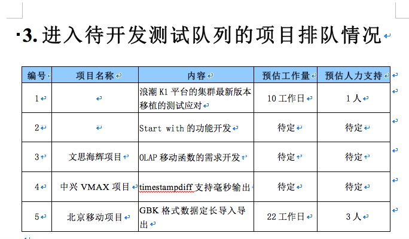 |
| 2016-08-28 11:01:45 | 我 | 我得查一下，你写周报要用吗 |
| 2016-08-28 11:01:46 | 你 | 我这么写的 |
| 2016-08-28 11:01:52 | 你 | 别查了 |
| 2016-08-28 11:02:02 | 我 | 没问题 |
{kind=link}
2016-08-29¶
| 2016-08-29 08:29:45 | 你 | 上车了，恨死坐火车 |
| 2016-08-29 08:30:15 | 我 | 😄，歇会吧 |
| 2016-08-29 08:30:29 | 你 | 恩，不累 |
| 2016-08-29 08:31:33 | 我 | 你姐和你一起出门的？ |
| 2016-08-29 08:31:45 | 你 | 是 |
| 2016-08-29 08:31:53 | 你 | 她也起的很早 |
| 2016-08-29 08:32:30 | 我 | 她应该比你早到公司 |
| 2016-08-29 08:32:38 | 你 | 他早就到了 |
| 2016-08-29 08:33:39 | 我 | 哦 |
| 2016-08-29 08:34:04 | 你 | 你写方案吧，我睡会 |
| 2016-08-29 08:35:09 | 我 | 好的 |
| 2016-08-29 09:29:43 | 你 | 下车了，上了出租车 |
| 2016-08-29 09:29:51 | 我 | 好的 |
| 2016-08-29 09:29:55 | 我 | 不着急 |
| 2016-08-29 10:09:00 | 我 | 你进来的时候碰上领导了吗 |
| 2016-08-29 10:09:05 | 你 | 没有 |
| 2016-08-29 10:09:09 | 我 | 好的 |
| 2016-08-29 10:09:11 | 你 | 刚好没碰到 |
| 2016-08-29 10:09:23 | 你 | 我觉得一上午跟一个世纪似的 |
| 2016-08-29 10:09:41 | 我 | [微笑] |
| 2016-08-29 10:10:51 | 我 | 头发不错 |
| 2016-08-29 10:11:06 | 你 | 好看吗 |
| 2016-08-29 10:11:12 | 我 | 好看呀 |
| 2016-08-29 10:11:25 | 你 | 有变化吗 |
| 2016-08-29 10:11:43 | 我 | 有呀，能看看出来 |
| 2016-08-29 10:11:53 | 我 | 下面是大花吧 |
| 2016-08-29 10:12:21 | 你 | 就烫了一个卷 染了染 |
| 2016-08-29 10:12:43 | 我 | 嗯，挺漂亮的 |
| 2016-08-29 10:13:04 | 你 | 你准备准备开会把 |
| 2016-08-29 10:13:11 | 我 | 嗯 |
| 2016-08-29 10:14:08 | 你 | 老杨不是提同步工具的事了 |
| 2016-08-29 10:14:11 | 你 | 可能会问 |
| 2016-08-29 10:14:36 | 我 | ？ |
| 2016-08-29 10:15:01 | 你 | 刚才问的啊 |
| 2016-08-29 10:15:20 | 我 | 问谁了 |
| 2016-08-29 10:18:08 | 你 | 严丹没来吗 |
| 2016-08-29 10:18:40 | 我 | 没有，上午请假了 |
| 2016-08-29 10:22:20 | 你 | 恩 知道了 |
| 2016-08-29 10:34:04 | 你 | 你为什么问我早上有没有碰到领导 |
| 2016-08-29 10:34:52 | 我 | 我去抽烟回来看见你来了，又看见领导在 |
| 2016-08-29 10:35:07 | 你 | 恩 |
| 2016-08-29 10:50:00 | 你 | 怎么样啊 |
| 2016-08-29 10:50:19 | 我 | 稍等 |
| 2016-08-29 11:20:17 | 我 | 同步工具事情有点多，回去再说 |
| 2016-08-29 11:20:34 | 你 | 好 |
| 2016-08-29 11:37:23 | 我 | 今天老田搅和同步测试的问题 |
| 2016-08-29 11:38:19 | 我 | 说scrum就应该每个迭代测试 |
| 2016-08-29 11:39:14 | 我 | 我说我只有一个兼职的测试，还让监控工具给占了，所以现在没有正式测过 |
| 2016-08-29 11:39:40 | 我 | 最后决定后面还是要测一遍 |
| 2016-08-29 11:41:33 | 你 | 可以每个迭代都测，让他给人啊 |
| 2016-08-29 11:42:14 | 我 | 是，我就抓住这个理由 |
| 2016-08-29 11:42:40 | 我 | 不过后面够马大姐忙的了 |
| 2016-08-29 11:44:13 | 你 | 那就不是咱们的问题了 |
| 2016-08-29 11:44:31 | 我 | 唉 |
| 2016-08-29 11:45:08 | 我 | 你看吧，马大姐肯定会怨咱们没给她安排任务 |
| 2016-08-29 12:02:40 | 你 | 她顾不上 |
| 2016-08-29 12:02:54 | 你 | 阿娇他们都没看出来我弄头发了 |
| 2016-08-29 12:04:43 | 我 | 她们没眼光 |
| 2016-08-29 12:05:02 | 你 | 你看出来了吗 |
| 2016-08-29 12:05:05 | 你 | 别骗我 |
| 2016-08-29 12:06:55 | 我 | 我当然看出来了 |
| 2016-08-29 12:07:02 | 你 | haha |
| 2016-08-29 12:07:28 | 我 | 你一进来我就看出来了 |
| 2016-08-29 12:08:04 | 你 | 是不是更美了 |
| 2016-08-29 12:08:14 | 我 | 对呀 |
| 2016-08-29 12:08:41 | 你 | 我看着也挺好看的 |
| 2016-08-29 12:09:03 | 我 | 嗯 |
| 2016-08-29 13:22:56 | 我 | 你醒啦 |
| 2016-08-29 13:23:08 | 你 | 早醒了 |
| 2016-08-29 13:23:22 | 我 | 哦，没听见 |
| 2016-08-29 13:24:32 | 你 | 你写方案呢把 |
| 2016-08-29 13:24:52 | 我 | 没有 |
| 2016-08-29 13:25:01 | 你 | 没写啊 |
| 2016-08-29 13:25:03 | 你 | 那干嘛呢 |
| 2016-08-29 13:25:16 | 我 | 我昨天把我的终端的配置文件给删了 |
| 2016-08-29 13:25:32 | 你 | 不知所云 |
| 2016-08-29 13:25:35 | 我 | 现在正在想办法恢复呢 |
| 2016-08-29 13:25:45 | 你 | 这个文件是什么 |
| 2016-08-29 13:25:51 | 我 | 配色的 |
| 2016-08-29 13:26:07 | 我 | 就是各种五颜六色 |
| 2016-08-29 13:26:33 | 我 | 我原来配好的都没了[流泪] |
| 2016-08-29 13:27:26 | 你 | 哪个的？ |
| 2016-08-29 13:27:30 | 你 | 聊天记录吗 |
| 2016-08-29 13:27:40 | 我 | 不是 |
| 2016-08-29 13:27:46 | 我 | 就是控制台的 |
| 2016-08-29 13:27:54 | 我 | 命令行界面 |
| 2016-08-29 13:28:28 | 你 | 哦 |
| 2016-08-29 13:28:30 | 我 | 中午你吃的什么 |
| 2016-08-29 13:28:31 | 你 | 那找找把 |
| 2016-08-29 13:38:47 | 我 | 你今天有事吗 |
| 2016-08-29 13:39:08 | 你 | 没啥事 我想追追企业管理器需求的那个事 |
| 2016-08-29 13:39:13 | 你 | 你给我安排活吗 |
| 2016-08-29 13:39:21 | 我 | 我没有 |
| 2016-08-29 13:39:28 | 你 | 恩 好 |
| 2016-08-29 15:20:58 | 你 | 亲 |
| 2016-08-29 15:21:00 | 你 | 干嘛呢 |
| 2016-08-29 15:21:02 | 你 | 这么失落 |
| 2016-08-29 15:21:19 | 我 | 刷微博 |
| 2016-08-29 15:21:48 | 我 | 刚才发现我昨天写的有错误，所以心情不好了 |
| 2016-08-29 15:22:12 | 你 | 怎么了 |
| 2016-08-29 15:22:33 | 我 | 想简单了 |
| 2016-08-29 15:22:41 | 你 | 哦 别不好了 |
| 2016-08-29 15:22:42 | 我 | 有好多东西没写 |
| 2016-08-29 15:22:52 | 你 | 现在想起来也不晚啊 |
| 2016-08-29 15:23:00 | 我 | 是 |
| 2016-08-29 15:23:13 | 你 | 别心情不好了 |
| 2016-08-29 15:23:15 | 我 | 我需要静静 |
| 2016-08-29 15:24:11 | 你 | 不想我搭理你啊 |
| 2016-08-29 15:24:23 | 我 | 没有呀 |
| 2016-08-29 15:24:43 | 你 | 我现在挺喜欢刘杰了 |
| 2016-08-29 15:24:47 | 你 | 不知道为啥 |
| 2016-08-29 15:24:51 | 你 | 你看女人多善变 |
| 2016-08-29 15:24:53 | 我 | 哈哈 |
| 2016-08-29 15:24:54 | 你 | 哈哈 |
| 2016-08-29 15:25:19 | 我 | 是你心太好 |
| 2016-08-29 15:25:42 | 你 | 真的吗 反正挺喜欢 |
| 2016-08-29 15:25:49 | 你 | 挺喜欢逗她 |
| 2016-08-29 15:26:03 | 你 | 这是什么声音啊 滋滋的 |
| 2016-08-29 15:26:23 | 我 | 严丹放在出风口的纸 |
| 2016-08-29 15:26:41 | 你 | 烦死人了 |
| 2016-08-29 15:26:50 | 你 | 以前我那个破电脑就这个声 |
| 2016-08-29 15:26:53 | 我 | 我四点还要去开会 |
| 2016-08-29 15:26:59 | 你 | 开什么会啊 |
| 2016-08-29 15:27:05 | 我 | GBK的测试方案 |
| 2016-08-29 15:27:19 | 你 | 哦 |
| 2016-08-29 15:28:03 | 你 | 你打算不在群里说话是吗 |
| 2016-08-29 15:28:06 | 你 | 你也是二组的啊 |
| 2016-08-29 15:28:17 | 我 | 什么？ |
| 2016-08-29 15:28:27 | 你 | 团建的组啊 |
| 2016-08-29 15:28:59 | 我 | 哦，我静音了 |
| 2016-08-29 15:29:19 | 你 | 那天周六早上在群里讨论 笑死我了 |
| 2016-08-29 15:29:59 | 你 | 你会唱吗 |
| 2016-08-29 15:30:03 | 你 | 我特想听你唱 |
| 2016-08-29 15:30:05 | 你 | 哈哈 |
| 2016-08-29 15:30:16 | 你 | 很喜欢这首歌 |
| 2016-08-29 15:31:00 | 我 | 我会 |
| 2016-08-29 15:31:21 | 我 | 以前唱过很多次 |
| 2016-08-29 15:31:40 | 你 | 那就好 |
| 2016-08-29 15:31:49 | 你 | 歌词挺多的 |
| 2016-08-29 16:06:13 | 我 | 开会来了 |
| 2016-08-29 16:06:18 | 你 | 恩 |
| 2016-08-29 16:07:47 | 我 | 这个需求其实还有问题呢，这几天写方案，发现一堆小错 |
| 2016-08-29 16:08:08 | 你 | 是吧 |
| 2016-08-29 16:08:14 | 你 | 很多细节 |
| 2016-08-29 16:09:22 | 我 | 等回来再说吧 |
| 2016-08-29 16:09:36 | 我 | 你今天累吗 |
| 2016-08-29 16:09:44 | 你 | 不累 |
| 2016-08-29 16:09:49 | 你 | 今天没干啥事 |
| 2016-08-29 16:10:08 | 我 | 好的 |
| 2016-08-29 16:10:26 | 我 | 你姐的声音和你几乎一样 |
| 2016-08-29 16:10:49 | 你 | 是 你单独看见我俩的话 应该分不出来 |
| 2016-08-29 16:10:54 | 我 | 昨天她电话里冒出一句，我当时还以为是你 |
| 2016-08-29 16:10:59 | 你 | 是吧 |
| 2016-08-29 16:11:12 | 你 | 我一说跟你打电话 赶紧凑过来说了句 |
| 2016-08-29 16:11:26 | 我 | 😄 |
| 2016-08-29 16:11:35 | 你 | 贺津严重不合格 |
| 2016-08-29 16:11:49 | 你 | 啥也不干 还组长呢[微笑] |
| 2016-08-29 16:12:02 | 我 | 你去训他 |
| 2016-08-29 16:12:10 | 你 | 我不想去他们屋 |
| 2016-08-29 16:12:35 | 你 | 我因为团建特意买了个大t恤 我姐给我买的 |
| 2016-08-29 16:12:44 | 你 | 等周六的时候穿 |
| 2016-08-29 16:12:45 | 你 | 哈哈 |
| 2016-08-29 16:12:57 | 我 | 好 |
| 2016-08-29 16:15:06 | 我 | 团建需要多带套衣服，可能会下雨 |
| 2016-08-29 16:15:29 | 你 | 我看了 不下雨 |
| 2016-08-29 16:15:46 | 我 | 好的 |
| 2016-08-29 16:15:49 | 你 | 你说的那个歌词提取器是啥 |
| 2016-08-29 16:16:21 | 我 | 卡拉OK都有呀，一般都是一个显示器 |
| 2016-08-29 16:16:42 | 你 | 哦 |
| 2016-08-29 16:17:33 | 你 | 没有 |
| 2016-08-29 16:17:39 | 你 | 没有什么设备 |
| 2016-08-29 16:17:58 | 我 | 那就提前打印出来吧 |
| 2016-08-29 16:18:12 | 你 | 恩 我跟贺津说下 |
| 2016-08-29 16:27:06 | 我 | 哈哈，你太可爱了 |
| 2016-08-29 16:27:17 | 你 | 他都不搭理我 |
| 2016-08-29 16:27:23 | 你 | 你说他多讨厌 |
| 2016-08-29 16:27:39 | 我 | 就是，太讨厌了 |
| 2016-08-29 16:28:04 | 你 | 我就当看不见 程序员 你懂的 |
| 2016-08-29 16:28:16 | 我 | 😄 |
| 2016-08-29 16:31:01 | 我 | 完了，这个会早了去了 |
| 2016-08-29 16:31:08 | 你 | 哈哈 |
| 2016-08-29 16:54:40 | 你 | 胡组会太讨厌了 |
| 2016-08-29 16:54:44 | 你 | 不是一般的讨厌 |
| 2016-08-29 16:54:54 | 我 | 怎么啦 |
| 2016-08-29 16:55:14 | 你 | 刚才我打了歌词 给贺津送过去 那个歌词有男女 她嘚啵半天 不好唱怎么的 |
| 2016-08-29 16:55:34 | 我 | 她和咱们一组吗？ |
| 2016-08-29 16:55:36 | 你 | 你说关他啥事 |
| 2016-08-29 16:55:41 | 你 | 不是一个组的啊 |
| 2016-08-29 16:56:11 | 你 | 我就说 他说半天 我就说这是我们组的订的 |
| 2016-08-29 16:56:19 | 你 | 她就不说话了 |
| 2016-08-29 16:56:26 | 你 | 关他啥事啊 |
| 2016-08-29 16:56:33 | 我 | 就是 |
| 2016-08-29 16:57:02 | 你 | 就是 后来找兴华说 不会唱 我说你就学学呗 |
| 2016-08-29 16:58:04 | 你 | 后来贺津就说唱、唱，不换不换 就这个 |
| 2016-08-29 16:58:14 | 你 | 就没人说话了 |
| 2016-08-29 16:59:01 | 我 | 嗯 |
| 2016-08-29 17:03:53 | 我 | 完了，惨了 |
| 2016-08-29 17:04:14 | 你 | 咋了 |
| 2016-08-29 17:04:17 | 你 | 什么事情 |
| 2016-08-29 17:04:21 | 我 | 方案又错了 |
| 2016-08-29 17:04:28 | 你 | 啊？？？？ |
| 2016-08-29 17:04:34 | 你 | 需求又变了吗？ |
| 2016-08-29 17:04:45 | 你 | 这会已经开了3个小时了 |
| 2016-08-29 17:04:53 | 我 | 不是，是我考虑简单了 |
| 2016-08-29 17:05:17 | 我 | 有一种异常非常复杂 |
| 2016-08-29 17:05:30 | 我 | 我当初的想法有错误 |
| 2016-08-29 17:06:28 | 你 | 哦，这样啊 |
| 2016-08-29 17:22:29 | 我 | 你太可爱啦 |
| 2016-08-29 17:22:35 | 我 | 还要缓缓 |
| 2016-08-29 17:24:02 | 你 | 是啊 这信息量不要太大 |
| 2016-08-29 17:24:08 | 你 | 我的精神支柱垮了 |
| 2016-08-29 17:24:21 | 我 | 啊 |
| 2016-08-29 17:25:04 | 我 | 你的精神支柱是啥呀 |
| 2016-08-29 17:25:09 | 你 | 我姐怎么办啊 |
| 2016-08-29 17:25:24 | 你 | 我觉得邱总可能会想杨总一样照顾她 |
| 2016-08-29 17:25:30 | 我 | 不一定是坏事 |
| 2016-08-29 17:25:33 | 你 | 结果他离职了 |
| 2016-08-29 17:27:24 | 我 | 关键是要看新来的 |
| 2016-08-29 17:27:39 | 我 | 没准会更重用你姐了 |
| 2016-08-29 17:27:52 | 你 | 唉 几率不大 |
| 2016-08-29 17:28:20 | 你 | 几率大吗 |
| 2016-08-29 17:28:23 | 我 | 谋事在人 |
| 2016-08-29 17:28:37 | 我 | 成事在天 |
| 2016-08-29 17:28:51 | 我 | 首先得谋 |
| 2016-08-29 17:29:01 | 你 | 唉 |
| 2016-08-29 17:34:19 | 我 | 现在也只能这样了 |
| 2016-08-29 17:34:39 | 你 | 是啊 |
| 2016-08-29 17:34:43 | 你 | 我觉得李杰好可怜 |
| 2016-08-29 17:34:57 | 我 | 还有就是你姐的现在的心态 |
| 2016-08-29 17:35:12 | 你 | 恩 是 |
| 2016-08-29 17:35:27 | 我 | 简单说如果有本事就不怕换人 |
| 2016-08-29 17:35:59 | 你 | 是 |
| 2016-08-29 17:40:09 | 你 | 还没完啊 |
| 2016-08-29 17:40:13 | 你 | 怎么这么多 |
| 2016-08-29 17:40:17 | 我 | 早呢 |
| 2016-08-29 17:40:29 | 你 | 谁的问题 |
| 2016-08-29 17:40:37 | 我 | 都有 |
| 2016-08-29 17:40:44 | 你 | 需求多吗 |
| 2016-08-29 17:40:48 | 我 | 需求的问题多 |
| 2016-08-29 17:40:53 | 你 | 细节需求肯定想不到 |
| 2016-08-29 17:41:03 | 我 | 因为设计问题也有 |
| 2016-08-29 18:15:22 | 我 | 还没完 |
| 2016-08-29 18:15:32 | 你 | 都已经这么晚了 |
| 2016-08-29 18:15:41 | 我 | 你和你姐聊了吗 |
| 2016-08-29 18:18:23 | 你 | 没有 |
| 2016-08-29 19:37:21 | 你 | 亲 我想去开发中心大群里呼吁下 |
| 2016-08-29 19:37:47 | 你 | 让大家好好练歌 多提议点好的游戏的点子 |
| 2016-08-29 19:37:56 | 我 | 可以 |
| 2016-08-29 19:38:03 | 你 | 那我错措辞 |
| 2016-08-29 19:38:10 | 我 | 好的 |
| 2016-08-29 20:07:05 | 你 | 团建大家都找到组织了吧[偷笑]， 这次团建给了大家一个唱歌的任务，希望大家能够重视起来，我们不是应付，而应该享受其中，这才是团建的意义。工作中的我们很理性，很逻辑，总是在黑、白、灰中切换，团建给了我们别样的色彩，这是一个放松且欢乐的环境，大家可以卸下防备，尽情表现。团建中的游戏，也希望大家能够积极的参与到策划中，被选中游戏的，有奖励哦。 1、跟美女吃一顿烛光晚餐（谁掏钱你俩定） 2、如果你已婚没有关系，如果你有孩子没有关系，可以免费得到专业游泳培训（田总教） 3、如果你是个姑娘，可能有机会跟杨总一起逛街，提供专业的搭配建议。 |
| 2016-08-29 20:07:12 | 你 | 看看 |
| 2016-08-29 20:08:17 | 我 | 哈哈，写的太好啦 |
| 2016-08-29 20:08:22 | 你 | 哈哈 |
| 2016-08-29 20:08:26 | 你 | 怎么样 |
| 2016-08-29 20:08:45 | 你 | 大家速来报名吧，杨总、田总都等着呢！机不可失，失不再来。 |
| 2016-08-29 20:08:56 | 我 | 就这么发 |
| 2016-08-29 20:09:10 | 你 | 开开玩笑 嘿嘿 |
| 2016-08-29 20:09:22 | 我 | 不用改，太好玩啦 |
| 2016-08-29 20:13:30 | 你 | 发了 |
| 2016-08-29 20:15:28 | 我 | 看见了 |
| 2016-08-29 20:15:39 | 你 | 哈哈 是不是很好玩 |
| 2016-08-29 20:15:47 | 你 | 单位好黑啊 我都不敢上厕所 |
| 2016-08-29 20:16:03 | 我 | 你拿手机去 |
| 2016-08-29 20:16:25 | 我 | 可以开手电 |
| 2016-08-29 20:16:33 | 我 | 或者去一楼 |
| 2016-08-29 20:19:42 | 你 | 好可怕 |
| 2016-08-29 20:20:00 | 你 | 你说他们会不会被我的才华震惊。。。。 |
| 2016-08-29 20:20:17 | 我 | 肯定的 |
| 2016-08-29 20:20:33 | 我 | 明天领导一定会找你私聊 |
| 2016-08-29 20:20:37 | 你 | 你说杨总和老田看了啥感觉 |
| 2016-08-29 20:20:38 | 你 | 哈哈 |
| 2016-08-29 20:20:49 | 你 | 肯定被逗坏了 |
| 2016-08-29 20:21:02 | 我 | 是呗 |
| 2016-08-29 20:21:33 | 你 | 我就不喜欢干什么都干不好 稀里糊涂的 我就喜欢干一件是一件 |
| 2016-08-29 20:21:40 | 你 | 要么不干 要么就干好 |
| 2016-08-29 20:21:50 | 我 | 是 |
| 2016-08-29 20:21:55 | 你 | 唱个歌 应应付付 |
| 2016-08-29 20:22:04 | 你 | 还不如不唱呢 |
| 2016-08-29 20:22:30 | 你 | 今天王东江才建的他们组的群 杨总我拉进来的 |
| 2016-08-29 20:22:39 | 你 | 杨总一直都特别积极 |
| 2016-08-29 20:22:41 | 我 | 哦 |
| 2016-08-29 20:22:50 | 你 | 想歌啊 游戏啊 啥的 |
| 2016-08-29 20:22:59 | 你 | 他们真是太不会表现自己了 |
| 2016-08-29 20:23:11 | 你 | 你说王东江这样的 |
| 2016-08-29 20:23:27 | 你 | 要是不是这个机会 没准根本都没机会跟领导说话 |
| 2016-08-29 20:23:32 | 我 | 没办法 |
| 2016-08-29 20:23:36 | 我 | 注定了 |
| 2016-08-29 20:23:43 | 你 | 我就在群里捧场呗 |
| 2016-08-29 20:23:57 | 你 | 后来我实在是受不了他们了 我就主动退群了 |
| 2016-08-29 20:24:36 | 你 | 本来领导对这些事就比较在意 也不是耽误工作啥的啦 找个集中点的时间 讨论一下就行呗 |
| 2016-08-29 20:24:45 | 你 | 都不积极 怎么推 |
| 2016-08-29 20:24:48 | 我 | 是 |
| 2016-08-29 20:24:51 | 你 | 要组长是干嘛的 |
| 2016-08-29 20:24:53 | 你 | 多气人 |
| 2016-08-29 20:25:01 | 我 | 领导最不喜欢这样的 |
| 2016-08-29 20:25:07 | 你 | 就是 |
| 2016-08-29 20:25:16 | 你 | 王东江说了一句话 领导一直回 |
| 2016-08-29 20:25:27 | 你 | 一直捧场 |
| 2016-08-29 20:25:36 | 你 | 唉 |
| 2016-08-29 20:25:38 | 你 | 没办法 |
| 2016-08-29 20:26:21 | 我 | 码农 |
| 2016-08-29 20:26:33 | 我 | 就知道傻干活 |
| 2016-08-29 20:26:46 | 你 | 就是 就知道傻干活 |
| 2016-08-29 20:27:18 | 你 | 你到家了吗 |
| 2016-08-29 20:27:23 | 你 | 我得几点才能回去啊 |
| 2016-08-29 20:27:27 | 我 | 快了 |
| 2016-08-29 20:27:39 | 我 | 打电话催催 |
| 2016-08-29 20:27:50 | 你 | 催也没用 |
| 2016-08-29 20:27:52 | 你 | 等着吧 |
| 2016-08-29 20:27:56 | 我 | 东东最近忙什么呢 |
| 2016-08-29 20:28:05 | 你 | 都是测试的活 |
| 2016-08-29 20:28:18 | 你 | 对了 我周六是用李杰的电话给你打的 |
| 2016-08-29 20:28:19 | 我 | 唉 |
| 2016-08-29 20:28:24 | 你 | 你可以存下她的号 |
| 2016-08-29 20:28:28 | 我 | 好的 |
| 2016-08-29 20:28:32 | 你 | 没准以后会用到 |
| 2016-08-29 20:28:40 | 我 | 嗯 |
| 2016-08-29 20:29:23 | 你 | 你说李杰是不是很可怜 |
| 2016-08-29 20:29:53 | 我 | 这么说吧，最近她是有点背 |
| 2016-08-29 20:30:00 | 你 | 是呢 |
| 2016-08-29 20:30:02 | 你 | 唉 |
| 2016-08-29 20:30:06 | 你 | 告诉你个小秘密 |
| 2016-08-29 20:30:16 | 你 | 其实李杰他们单位有好几个她的男生 |
| 2016-08-29 20:30:26 | 你 | 男神 |
| 2016-08-29 20:30:27 | 你 | 哈哈 |
| 2016-08-29 20:30:30 | 我 | 哦 |
| 2016-08-29 20:30:31 | 你 | 邱总是一个 |
| 2016-08-29 20:30:37 | 你 | 还有一个叫路加的 |
| 2016-08-29 20:30:53 | 我 | 不是研发吗 |
| 2016-08-29 20:31:00 | 你 | 路加是研发 |
| 2016-08-29 20:31:15 | 你 | 所以 你说产品和研发的关系特别好的话 也不好 |
| 2016-08-29 20:31:19 | 你 | 怎么干活啊 |
| 2016-08-29 20:31:32 | 我 | 是因为长的帅？ |
| 2016-08-29 20:31:35 | 你 | 这是典型的非利益导向的 |
| 2016-08-29 20:31:40 | 我 | 哈哈 |
| 2016-08-29 20:31:41 | 你 | 哈哈 |
| 2016-08-29 20:31:45 | 你 | 挺帅的 |
| 2016-08-29 20:31:53 | 你 | 然后她俩还老是吵架 |
| 2016-08-29 20:32:05 | 你 | 但一点男女感情都没有啊 |
| 2016-08-29 20:32:06 | 我 | 嗯 |
| 2016-08-29 20:32:21 | 你 | 就是纯粹的欣赏型的 |
| 2016-08-29 20:32:26 | 我 | 是 |
| 2016-08-29 20:32:31 | 你 | 就跟我喜欢傅红雪一样 |
| 2016-08-29 20:32:33 | 你 | 哈哈 |
| 2016-08-29 20:32:43 | 你 | 杨总也是我的男神啊 |
| 2016-08-29 20:32:49 | 我 | 就像我欣赏你一样 |
| 2016-08-29 20:33:00 | 你 | 那我是你的女神吗 |
| 2016-08-29 20:33:11 | 你 | 没有你欣赏我这么深刻 |
| 2016-08-29 20:33:37 | 我 | 我的女神都太老了 |
| 2016-08-29 20:33:48 | 你 | 那我就不是了呗 |
| 2016-08-29 20:34:11 | 我 | 你还小 |
| 2016-08-29 20:34:24 | 你 | 那倒是 |
| 2016-08-29 20:34:35 | 你 | 我肯定不能算你的男神了 |
| 2016-08-29 20:34:40 | 你 | 女神 |
| 2016-08-29 20:34:49 | 你 | 打错了 心里光想着我的男神了 |
| 2016-08-29 20:35:25 | 我 | 哈哈 |
| 2016-08-29 20:35:29 | 你 | 你说刘杰是不是每天会在单位化妆啊 |
| 2016-08-29 20:35:49 | 你 | 感觉晚上走的时候 脸惨白惨白的 |
| 2016-08-29 20:35:54 | 我 | 应该是 |
| 2016-08-29 20:35:56 | 你 | 摸了好多粉 |
| 2016-08-29 20:36:01 | 你 | 我见过好几次了 |
| 2016-08-29 20:36:04 | 我 | 太瘆人了 |
| 2016-08-29 20:36:09 | 你 | 是呢 |
| 2016-08-29 20:36:11 | 你 | 太白了 |
| 2016-08-29 20:36:23 | 你 | 其实她也不黑 干嘛整成那样 |
| 2016-08-29 20:37:10 | 我 | 唉 |
| 2016-08-29 20:37:50 | 你 | 你给我的在这个项目管理面面观 怎么是个.epub格式的呢 |
| 2016-08-29 20:38:01 | 我 | 对呀 |
| 2016-08-29 20:38:12 | 我 | ibook可以直接看 |
| 2016-08-29 20:38:44 | 我 | 明天我告诉你怎么在手机里面看 |
| 2016-08-29 20:38:49 | 你 | 好吧 |
| 2016-08-29 20:39:00 | 你 | 我还没倒倒手机里呢 |
| 2016-08-29 20:40:40 | 我 | 明天吧 |
| 2016-08-29 20:40:50 | 你 | 好 |
| 2016-08-29 20:58:05 | 我 | 亲，你还没走呢 |
| 2016-08-29 22:10:59 | 你 | 到家了 |
2016-08-30¶
{kind=link}
2016-08-31¶
| 2016-08-31 08:21:49 | 你 | 你干嘛 |
| 2016-08-31 08:21:51 | 你 | 呢 |
| 2016-08-31 08:22:06 | 我 | 没事 |
| 2016-08-31 08:22:54 | 你 | 你昨天怎么会那么晚 |
| 2016-08-31 08:23:28 | 我 | 不是送测出问题了吗 |
| 2016-08-31 08:23:39 | 我 | 本来是想早点回去的 |
| 2016-08-31 08:24:44 | 我 | 你昨晚和李杰聊天了吗 |
| 2016-08-31 08:25:10 | 你 | 没有 |
| 2016-08-31 08:26:21 | 我 | 看起来她还是挺难受的 |
| 2016-08-31 08:27:05 | 你 | 是 肯定的 |
| 2016-08-31 08:28:03 | 我 | 你应该多和她聊聊 |
| 2016-08-31 08:28:16 | 我 | 说出来了就好了 |
| 2016-08-31 08:32:15 | 你 | 她没事 不用担心她 |
| 2016-08-31 08:32:24 | 你 | 这算情伤把 |
| 2016-08-31 08:32:33 | 我 | 哦 |
| 2016-08-31 08:32:36 | 你 | 需要时间 劝也没用 |
| 2016-08-31 08:32:51 | 我 | 好吧 |
| 2016-08-31 08:40:59 | 我 | 你姐大概几点上班，我有几个问题想问问她 |
| 2016-08-31 09:04:26 | 你 | 你问吧 |
| 2016-08-31 09:04:30 | 你 | 随时都行 |
| 2016-08-31 09:04:42 | 你 | 你看严丹 又没事找事 |
| 2016-08-31 09:06:57 | 我 | 咋了，刚才我睡着了 |
| 2016-08-31 09:59:17 | 你 | 我早上也睡着了 |
| 2016-08-31 09:59:20 | 你 | 你干嘛呢 |
| 2016-08-31 10:00:11 | 我 | 给老杨找文档 |
| 2016-08-31 10:00:24 | 你 | 忙吧 |
| 2016-08-31 10:00:45 | 我 | 下午的培训我去讲一些设计的东西 |
| 2016-08-31 10:01:37 | 你 | 好的 我也去 |
| 2016-08-31 10:04:57 | 你 | 怎么发聊天记录啊 |
| 2016-08-31 10:05:06 | 你 | 我想发给你一段 |
| 2016-08-31 10:05:45 | 我 | 在手机上长按聊天，选择更多 |
| 2016-08-31 10:06:06 | 我 | 选好后合并发送 |
| 2016-08-31 10:07:09 | 你 | [链接] 李辉和Dan的聊天记录 |
| 2016-08-31 10:08:08 | 我 | 什么意思 |
| 2016-08-31 10:08:22 | 我 | 是让你接手行政吗 |
| 2016-08-31 10:09:12 | 你 | 应该是 |
| 2016-08-31 10:09:26 | 我 | 唉，我最担心的事情 |
| 2016-08-31 10:13:11 | 你 | 我先干着呗 现在拒绝肯定是不好 要是以后我群众基础打好了 我就撤 做我的PO |
| 2016-08-31 10:13:13 | 你 | 你说呢 |
| 2016-08-31 10:13:26 | 你 | 你早就说过了 别让我表现的太过 |
| 2016-08-31 10:13:34 | 你 | 看来还是表现的太过了 |
| 2016-08-31 10:13:51 | 我 | 是 |
| 2016-08-31 10:14:04 | 我 | 无所谓啦 |
| 2016-08-31 10:14:26 | 我 | 今天我心情不好 |
| 2016-08-31 10:14:40 | 我 | 是因为你姐的事情 |
| 2016-08-31 10:14:49 | 我 | 不是事情本身 |
| 2016-08-31 10:15:18 | 我 | 而是我自己分析过以后产生的无力感 |
| 2016-08-31 10:15:47 | 我 | 你刚才说的事情也属于这类 |
| 2016-08-31 10:17:07 | 我 | 我以前和你说的很多东西你都没有理解，只有等掉过坑了才明白。我的原意是想让你能躲开坑 |
| 2016-08-31 10:17:52 | 你 | 嗯嗯 |
| 2016-08-31 10:18:07 | 我 | 你姐的事情也是一个道理，只是不管我说什么你们现在都没法理解，所以我只能眼睁睁的看着你们 |
| 2016-08-31 10:18:21 | 你 | 是 |
| 2016-08-31 10:18:26 | 我 | 这种无力感让我很烦 |
| 2016-08-31 10:18:32 | 你 | 以后你别搭理她了 |
| 2016-08-31 10:18:35 | 你 | 别烦了 |
| 2016-08-31 10:18:46 | 你 | 想点开心的事呗 |
| 2016-08-31 10:18:50 | 你 | 都是我俩不好 |
| 2016-08-31 10:19:05 | 我 | 和你俩无关 |
| 2016-08-31 10:19:18 | 你 | 我不知道怎么劝你 |
| 2016-08-31 10:19:27 | 我 | 你不用劝 |
| 2016-08-31 10:19:38 | 我 | 这是我自己的心理疏导问题 |
| 2016-08-31 10:19:50 | 我 | 现在和你聊天的是理性的我 |
| 2016-08-31 10:20:14 | 我 | 闹情绪的我那个被我摁着呢 |
| 2016-08-31 10:20:26 | 我 | 只是不知道今天谁会倒霉 |
| 2016-08-31 10:20:40 | 我 | 你也不用自责 |
| 2016-08-31 10:20:46 | 你 | 亲 你别这样 |
| 2016-08-31 10:21:01 | 你 | 我看着你这样我会很难受的 |
| 2016-08-31 10:21:08 | 我 | 我和你说只是想让你知道这么一种情况 |
| 2016-08-31 10:21:21 | 我 | 也可以算是在教你东西 |
| 2016-08-31 10:21:33 | 你 | 嗯嗯 我知道 |
| 2016-08-31 10:21:47 | 你 | 可这种教学会让你很难受 |
| 2016-08-31 10:21:51 | 你 | 其实我也有过 |
| 2016-08-31 10:21:54 | 你 | 真的 |
| 2016-08-31 10:22:05 | 我 | 你看刚才在团建群里我还拿你开玩笑呢 |
| 2016-08-31 10:22:22 | 我 | 我的承受力比你想象的大得多 |
| 2016-08-31 10:22:27 | 你 | 就跟李杰讲这些道理的时候 我也会给她一些建议 她大都不听 |
| 2016-08-31 10:22:28 | 你 | 嗯嗯 |
| 2016-08-31 10:22:35 | 你 | 我只是不希望你心情不好 |
| 2016-08-31 10:23:03 | 我 | 心情不好是感性的部分，没有人能控制住。 |
| 2016-08-31 10:23:15 | 我 | 所以我们才需要理性 |
| 2016-08-31 10:23:27 | 你 | 恩 |
| 2016-08-31 10:23:39 | 我 | 看看今天哪个不开眼会惹到我吧[阴险] |
| 2016-08-31 10:23:48 | 你 | 聊点别的吧 转移下你的注意力 |
| 2016-08-31 10:23:52 | 你 | 不会是我吧 |
| 2016-08-31 10:24:03 | 我 | 怎么可能呢 |
| 2016-08-31 10:32:18 | 你 | 你别不开心了 |
| 2016-08-31 10:32:54 | 我 | 好了 |
| 2016-08-31 10:33:37 | 你 | 又能听你讲设计模式了 |
| 2016-08-31 10:33:45 | 你 | 好开心 |
| 2016-08-31 10:33:57 | 我 | 😄 |
| 2016-08-31 10:50:48 | 你 | 已经把歌词打好给贺津了 我告诉他让他拿着 我不想背 嘻嘻 |
| 2016-08-31 10:51:08 | 我 | [微笑] |
| 2016-08-31 13:27:25 | 我 | 你快点安慰一下你姐吧，我快顶不住啦 |
| 2016-08-31 13:27:31 | 你 | enen hao |
| 2016-08-31 13:27:35 | 你 | 我马上 |
| 2016-08-31 13:48:57 | 我 | 我怎么觉得你姐的脾气比你大呢 |
| 2016-08-31 13:49:11 | 我 | 不会你也一样吧 |
| 2016-08-31 13:49:32 | 你 | 哈哈 王洪越惹我了 我也脾气很大 |
| 2016-08-31 13:49:40 | 你 | 但是我姐脾气确实比我大点 |
| 2016-08-31 13:58:53 | 我 | 你今天怎么这么忙 |
| 2016-08-31 13:58:58 | 你 | 对啊 |
| 2016-08-31 13:59:01 | 你 | 特别忙 |
| 2016-08-31 13:59:04 | 你 | 中午都没有休息 |
| 2016-08-31 13:59:18 | 你 | 你看我说李杰的对不 |
| 2016-08-31 13:59:24 | 我 | 对 |
| 2016-08-31 14:00:03 | 你 | 其实她自己真的有毛病， |
| 2016-08-31 14:00:24 | 我 | 唉，人都有毛病 |
| 2016-08-31 14:05:13 | 我 | 不过李杰的问题不在她自身的毛病 |
| 2016-08-31 14:05:30 | 我 | 而是办公室政治 |
| 2016-08-31 14:05:49 | 我 | 她其实是把自己推到闫的对立面了 |
| 2016-08-31 14:06:07 | 我 | 她需要明白的是这个道理 |
| 2016-08-31 14:06:32 | 我 | 工作中的毛病反而没有那么重要 |
| 2016-08-31 14:07:15 | 我 | 就好像你在洪越手下和在我手下，毛病是一样的 |
| 2016-08-31 14:11:12 | 我 | 又不理我了[委屈] |
| 2016-08-31 14:12:54 | 你 | 稍等 |
| 2016-08-31 14:29:27 | 我 | 好吧，我实在是无聊了。亲，你把手机连上网吧，我给你备份 |
| 2016-08-31 14:29:44 | 我 | 总得给自己找点事情干呀 |
| 2016-08-31 14:30:50 | 你 | 你的方案呢 |
| 2016-08-31 14:32:31 | 我 | 唉，别提了。遇到一个技术难点，我让胖子给我看，到现在他也没理我 |
| 2016-08-31 14:32:42 | 你 | 哈哈 |
| 2016-08-31 14:36:47 | 你 | 亲 我快忙死了 |
| 2016-08-31 14:36:53 | 你 | 我想跟你聊天 |
| 2016-08-31 14:37:02 | 我 | 是，我也想 |
| 2016-08-31 14:37:22 | 你 | 我现在体会到严丹的痛苦了 这些破烂事搞得自己很疲惫不说 还没心情干别的事 |
| 2016-08-31 14:37:29 | 你 | 主要这种事太简单 |
| 2016-08-31 14:37:32 | 我 | 唉 |
| 2016-08-31 14:37:50 | 我 | 要是以后真让你干行政，你得什么样子呀 |
| 2016-08-31 14:38:00 | 你 | 我肯定疯了 |
| 2016-08-31 14:38:01 | 我 | 想想就心疼死了 |
| 2016-08-31 14:38:14 | 你 | 这些事情太没有深度 |
| 2016-08-31 14:38:28 | 我 | 是，而且非常琐碎 |
| 2016-08-31 14:38:42 | 你 | 是 |
| 2016-08-31 14:41:37 | 你 | 发工资列 |
| 2016-08-31 14:41:39 | 你 | 嘿嘿 |
| 2016-08-31 14:43:16 | 我 | 嗯 |
| 2016-08-31 14:44:08 | 我 | 好像比上个月少了[流泪] |
| 2016-08-31 14:44:17 | 你 | 少了吗 |
| 2016-08-31 14:44:21 | 你 | 我好像没少 |
| 2016-08-31 14:44:45 | 我 | 不知道又扣什么了 |
| 2016-08-31 14:45:15 | 你 | 等看工资条把 |
| 2016-08-31 14:45:26 | 我 | 是 |
| 2016-08-31 14:48:48 | 你 | 我得去趟华庄子 |
| 2016-08-31 14:49:04 | 我 | 啊，干嘛去 |
| 2016-08-31 14:49:07 | 你 | 倒霉的范树磊 让他买魔术贴 跟他说了一百遍 他还是忘了 气死我了 |
| 2016-08-31 14:49:22 | 我 | 唉 |
| 2016-08-31 14:49:35 | 你 | 你说他多笨 |
| 2016-08-31 14:49:43 | 你 | 我又不忍心再让他跑一次 |
| 2016-08-31 14:49:46 | 你 | 气死我了 |
| 2016-08-31 14:49:59 | 我 | 要不你等会，现在太晒了 |
| 2016-08-31 14:50:14 | 你 | 嗯嗯 你几点开始讲课 |
| 2016-08-31 14:50:24 | 我 | 早呢，4点 |
| 2016-08-31 14:51:54 | 你 | 团建回来我还有一堆破事 |
| 2016-08-31 14:51:57 | 你 | 都是算账的 |
| 2016-08-31 14:52:06 | 我 | 是 |
| 2016-08-31 14:57:56 | 你 | 你有读卡器吗 |
| 2016-08-31 14:58:11 | 我 | 好像有 |
| 2016-08-31 14:58:37 | 你 | 帮我找找呗 |
| 2016-08-31 14:58:43 | 你 | 没有的话 我再找别人问问 |
| 2016-08-31 14:58:51 | 我 | 好的 |
| 2016-08-31 14:59:24 | 我 | 找到了 |
| 2016-08-31 14:59:56 | 你 | 真的 |
| 2016-08-31 14:59:58 | 你 | 这么快 |
| 2016-08-31 15:00:00 | 你 | 哈哈 |
| 2016-08-31 15:00:07 | 我 | 就在包里 |
| 2016-08-31 15:12:59 | 我 | 去抽颗烟，然后回来准备讲课 |
| 2016-08-31 15:20:40 | 你 | 你陪我去华庄子把 |
| 2016-08-31 15:20:48 | 你 | 我不想去 不想去 不想去 |
| 2016-08-31 15:21:03 | 我 | 好的，我陪你去吧 |
| 2016-08-31 15:21:10 | 你 | 真的啊 |
| 2016-08-31 15:21:13 | 我 | 对呀 |
| 2016-08-31 15:21:15 | 你 | 那现在走吧 |
| 2016-08-31 15:21:17 | 我 | 好 |
| 2016-08-31 15:51:29 | 你 | 多谢你陪我 |
| 2016-08-31 15:51:49 | 我 | 不用那么客气 |
| 2016-08-31 15:52:11 | 我 | 其实是我想和你单独呆着 |
| 2016-08-31 15:52:21 | 我 | 好久没有一起了 |
| 2016-08-31 15:52:25 | 你 | 我是真的感谢你 |
| 2016-08-31 15:52:32 | 我 | 我知道 |
| 2016-08-31 15:52:33 | 你 | 是 很久没有面谈了 |
| 2016-08-31 16:08:07 | 我 | 你不来吗？没座啦 |
| 2016-08-31 18:16:50 | 你 | 我都被你惊呆了 |
| 2016-08-31 18:17:19 | 我 | 啊 |
| 2016-08-31 18:17:25 | 我 | 不会吧 |
| 2016-08-31 18:17:30 | 你 | 是不是很累 |
| 2016-08-31 18:17:36 | 我 | 就是随便说说 |
| 2016-08-31 18:17:41 | 我 | 是累了 |
| 2016-08-31 18:17:50 | 你 | 我可能一辈子都学不到你这个程度了 |
| 2016-08-31 18:18:00 | 你 | 我指的不是设计 |
| 2016-08-31 18:18:07 | 我 | 不可能 |
| 2016-08-31 18:18:16 | 我 | 你一定能做到 |
| 2016-08-31 18:18:31 | 你 | 不能 |
| 2016-08-31 18:18:46 | 我 | 我说能就能 |
| 2016-08-31 18:18:59 | 我 | 你有我呢 |
| 2016-08-31 18:22:39 | 你 | 刚才我问起强蛋糕的事 |
| 2016-08-31 18:22:51 | 你 | 我说大家都听呆了 |
| 2016-08-31 18:22:58 | 你 | 反正我是听呆了 |
| 2016-08-31 18:23:10 | 你 | 后来杨总问讲的啥 谁讲的 |
| 2016-08-31 18:23:14 | 你 | 我说你讲的 |
| 2016-08-31 18:23:25 | 你 | 就随便应对了两句 |
| 2016-08-31 18:23:31 | 我 | 好的 |
| 2016-08-31 18:23:39 | 你 | 不会给你引来麻烦把 |
| 2016-08-31 18:23:43 | 我 | 没事 |
| 2016-08-31 18:23:54 | 你 | 我说我不知道别人 反正我是听呆了 |
| 2016-08-31 18:24:04 | 你 | 大家都直勾勾的 盯着你 |
| 2016-08-31 18:24:05 | 我 | [链接] 王雪松和田志敏的聊天记录 |
| 2016-08-31 18:24:21 | 我 | 😄 |
| 2016-08-31 18:24:48 | 你 | 他为什么要这个 你觉得 |
| 2016-08-31 18:25:07 | 我 | 因为他不知道 |
| 2016-08-31 18:25:21 | 你 | 因为他不知道你们干啥去了 |
| 2016-08-31 18:25:23 | 你 | 是不是 |
| 2016-08-31 18:25:27 | 我 | 就是觉得失控了 |
| 2016-08-31 18:25:30 | 我 | 是 |
| 2016-08-31 18:25:31 | 你 | 对 |
| 2016-08-31 18:25:37 | 我 | 我也会有 |
| 2016-08-31 18:25:38 | 你 | 我刚才想的就是这个词 |
| 2016-08-31 18:25:45 | 你 | 领导下午应该也在 |
| 2016-08-31 18:25:50 | 我 | 现在现场问题就是这个情况 |
| 2016-08-31 18:25:59 | 我 | 我快失控了 |
| 2016-08-31 18:26:08 | 你 | 怎么了 |
| 2016-08-31 18:26:10 | 你 | 怎么了 |
| 2016-08-31 18:26:28 | 我 | 我对现场问题快失控了 |
| 2016-08-31 18:26:34 | 我 | 我没事[呲牙] |
| 2016-08-31 18:26:36 | 你 | 为什么 |
| 2016-08-31 18:26:47 | 你 | 现场问题不一直是这样么 |
| 2016-08-31 18:26:49 | 我 | 田直接找旭明 |
| 2016-08-31 18:26:55 | 你 | 哦 哦 明白了 |
| 2016-08-31 18:26:58 | 我 | 甚至直接找老毛 |
| 2016-08-31 18:27:05 | 你 | 今天就找了 |
| 2016-08-31 18:27:11 | 我 | 是 |
| 2016-08-31 18:27:19 | 我 | 所以我什么都不知道 |
| 2016-08-31 18:27:31 | 你 | 他就是想什么都攥在自己手里 该管的事什么都不管 不该管的 啥都管 |
| 2016-08-31 18:27:45 | 我 | 嗯 |
| 2016-08-31 18:28:03 | 你 | 不过研发两个组一走 他也就剩光杆司令了 |
| 2016-08-31 18:28:14 | 你 | 你说我刚才在领导面前那么说 合适吗 |
| 2016-08-31 18:28:18 | 我 | 没事 |
| 2016-08-31 18:28:22 | 你 | 我真怕会给你带来麻烦 |
| 2016-08-31 18:28:30 | 我 | 你怎么说都没事 |
| 2016-08-31 18:28:33 | 你 | 不过我说的时候看似很无意 |
| 2016-08-31 18:28:56 | 你 | 领导关注你们了 也一直说我 要先有准备 |
| 2016-08-31 18:29:07 | 我 | 说什么了 |
| 2016-08-31 18:29:22 | 你 | 说我得看书 让我看设计模式 |
| 2016-08-31 18:29:26 | 你 | 别的没啥 |
| 2016-08-31 18:29:34 | 你 | 光听不行 |
| 2016-08-31 18:29:40 | 我 | 那没事 |
| 2016-08-31 18:30:01 | 你 | 我还没跟你说完 我的感受呢 |
| 2016-08-31 18:30:47 | 你 | 你说的那个复合和策略的 我想到了一个实例 |
| 2016-08-31 18:54:18 | 我 | 说说 |
| 2016-08-31 18:54:41 | 你 | 我跟你说过了 |
| 2016-08-31 18:54:47 | 你 | 我说说我今天的感受 |
| 2016-08-31 18:55:22 | 你 | 我觉得你又变了套路了， |
| 2016-08-31 18:55:33 | 我 | 啊 |
| 2016-08-31 18:55:49 | 你 | 褒义词 |
| 2016-08-31 18:56:06 | 你 | 我本来觉得了解你了 现在看来又不了解了 |
| 2016-08-31 18:56:20 | 我 | 哈哈 |
| 2016-08-31 18:57:26 | 你 | 你注意我崇拜的小眼神了吗 |
| 2016-08-31 18:57:48 | 我 | 当然啦 |
| 2016-08-31 18:58:00 | 我 | 所以我都不敢看你 |
| 2016-08-31 18:58:14 | 我 | 你看你脑子就空白了 |
| 2016-08-31 18:58:29 | 我 | 一看你脑子就空白了 |
| 2016-08-31 18:58:33 | 你 | 为啥啊 |
| 2016-08-31 18:58:43 | 你 | 那我的眼神岂不是都白搭了 |
| 2016-08-31 18:58:48 | 我 | 错了 |
| 2016-08-31 18:58:58 | 我 | 你的眼神太勾魂了 |
| 2016-08-31 18:59:09 | 你 | 开玩笑呢 |
| 2016-08-31 18:59:14 | 我 | 因为我要把自己的理性放在讲课上 |
| 2016-08-31 18:59:25 | 你 | 我那是纯理性的眼神 |
| 2016-08-31 18:59:26 | 我 | 所以感性的部分就不受控制了 |
| 2016-08-31 18:59:32 | 我 | 我知道 |
| 2016-08-31 18:59:33 | 你 | 哇哇 都是理性的 |
| 2016-08-31 18:59:44 | 我 | 我是说我的感性 |
| 2016-08-31 18:59:59 | 我 | 我有一个习惯 |
| 2016-08-31 19:00:11 | 你 | 什么 |
| 2016-08-31 19:00:18 | 我 | 当我开始理性思考的时候，我就会乱看 |
| 2016-08-31 19:00:27 | 我 | 其实那时候是什么都看不见的 |
| 2016-08-31 19:00:37 | 你 | 哦 |
| 2016-08-31 19:00:42 | 我 | 我的思维已经完全内视了 |
| 2016-08-31 19:00:49 | 你 | 是吧 |
| 2016-08-31 19:00:53 | 你 | 就像刚才 ？ |
| 2016-08-31 19:00:57 | 你 | 一直看我的脚 |
| 2016-08-31 19:01:08 | 我 | 是吗，嘿嘿 |
| 2016-08-31 19:01:22 | 你 | 什么叫是 吗 ？ |
| 2016-08-31 19:01:28 | 你 | 你别打短我 |
| 2016-08-31 19:01:32 | 你 | 我还没说完呢 |
| 2016-08-31 19:01:39 | 我 | 我不知道我看你的脚 |
| 2016-08-31 19:01:42 | 我 | 说吧 |
| 2016-08-31 19:02:08 | 你 | 我觉得吧 你对设计的这块理解简直太透彻了 抛开你知识面的广度 深度上简直快崇拜死我了 |
| 2016-08-31 19:02:30 | 我 | 好吧，小小的骄傲一把 |
| 2016-08-31 19:02:34 | 你 | 你说的那些语言啊 scala erlang啥的 其实我没怎么听 |
| 2016-08-31 19:02:54 | 你 | 你就该骄傲啊 |
| 2016-08-31 19:03:16 | 你 | 你知道我在想，你都这么牛了 为什么会觉得我还不错呢 |
| 2016-08-31 19:03:28 | 你 | 你应该根本看不见我才对啊 |
| 2016-08-31 19:03:37 | 我 | 错了 |
| 2016-08-31 19:03:45 | 你 | 你先别打断我 |
| 2016-08-31 19:03:51 | 你 | 我有点偏题了 |
| 2016-08-31 19:03:59 | 我 | 继续说吧 |
| 2016-08-31 19:04:10 | 你 | 说你对设计理解的深度 |
| 2016-08-31 19:04:41 | 你 | 你讲的时候 我都能感觉到你当时学习的时候 不断问为什么 为什么的过程 |
| 2016-08-31 19:05:00 | 我 | 嗯 |
| 2016-08-31 19:05:04 | 你 | 就是不断的找区别 找本质 |
| 2016-08-31 19:05:19 | 你 | 然后用比较浅显的道理讲出来 |
| 2016-08-31 19:05:50 | 你 | 听得时候 我感觉自己都在刨坑 |
| 2016-08-31 19:06:01 | 你 | 被你带着 一层一层的 刨 |
| 2016-08-31 19:06:02 | 你 | 哈哈 |
| 2016-08-31 19:06:11 | 我 | 哈哈 |
| 2016-08-31 19:06:26 | 你 | 而且 我觉得你的脾气真的是超级好 |
| 2016-08-31 19:06:29 | 你 | 我都做不到 |
| 2016-08-31 19:06:33 | 你 | 真的 不骗你 |
| 2016-08-31 19:06:44 | 我 | 不会吧 |
| 2016-08-31 19:06:57 | 你 | 在你知道这么多事的情况下 还能如此谦虚 如此包容 |
| 2016-08-31 19:06:58 | 你 | 唉 |
| 2016-08-31 19:07:09 | 我 | 哦 |
| 2016-08-31 19:07:17 | 你 | 你看领导 就有点自大 |
| 2016-08-31 19:07:38 | 你 | 这也是我为啥不喜欢他的地方之一 |
| 2016-08-31 19:07:44 | 我 | 哦 |
| 2016-08-31 19:08:12 | 你 | 每次他见到我就是说教 |
| 2016-08-31 19:08:18 | 你 | 根本不理会我的感受 |
| 2016-08-31 19:08:22 | 你 | 不聊他 |
| 2016-08-31 19:08:25 | 你 | 接着说你啊 |
| 2016-08-31 19:08:33 | 我 | 好 |
| 2016-08-31 19:08:54 | 你 | 我想你看着 下边这群人的时候 应该很着急吧 |
| 2016-08-31 19:08:59 | 你 | 一群猪 |
| 2016-08-31 19:09:03 | 你 | 包括我 |
| 2016-08-31 19:09:15 | 你 | 我连猪都算不太上 |
| 2016-08-31 19:09:17 | 我 | 你不一样 |
| 2016-08-31 19:09:32 | 我 | 你是他们中间我最欣赏的 |
| 2016-08-31 19:09:46 | 我 | 也是最有希望继承我衣钵的 |
| 2016-08-31 19:09:55 | 你 | 我觉得我不能了 |
| 2016-08-31 19:10:04 | 你 | 虽然那是我的目标 |
| 2016-08-31 19:10:18 | 你 | 但是我觉得你真的是太高太高太高了 |
| 2016-08-31 19:10:37 | 我 | 以后你会明白我说的 |
| 2016-08-31 19:10:44 | 你 | 接着说 |
| 2016-08-31 19:11:25 | 你 | 上次你讲scrum的时候，第一遍，感觉没内容，第二遍，有点感觉了，第三遍，原来竟是这个样子 |
| 2016-08-31 19:12:03 | 你 | 等到自己淌了几个坑以后 发现 这个东西TMD怎么能不能言传到这个地步 |
| 2016-08-31 19:12:17 | 你 | 可是我听你讲设计模式的时候 |
| 2016-08-31 19:12:28 | 你 | 就很深 |
| 2016-08-31 19:12:32 | 你 | 真的 这是我的感触 |
| 2016-08-31 19:12:46 | 我 | 嗯 |
| 2016-08-31 19:12:49 | 你 | 就是我的脑子在刨坑 |
| 2016-08-31 19:13:21 | 你 | 所以 我那时候说 scrum你的套路（这次不太好，想不出合适的），是那样的 |
| 2016-08-31 19:13:33 | 你 | 跟你教我写软需差不多 |
| 2016-08-31 19:14:03 | 你 | 现在讲设计模式 你的套路又完全变了 |
| 2016-08-31 19:14:21 | 你 | 你真的是个超级超级神秘的人 |
| 2016-08-31 19:14:36 | 你 | 幸好你不是我的敌人 |
| 2016-08-31 19:14:37 | 我 | 哦 |
| 2016-08-31 19:14:38 | 你 | 哈哈 |
| 2016-08-31 19:14:49 | 你 | 最后这句逗你玩呢 |
| 2016-08-31 19:14:51 | 你 | 嘻嘻 |
| 2016-08-31 19:14:55 | 我 | 我知道 |
| 2016-08-31 19:15:06 | 你 | 也有一种可能 |
| 2016-08-31 19:15:16 | 你 | 设计模式太博大精深了 |
| 2016-08-31 19:15:26 | 我 | 你知道吗，看你发过来的消息，我一直在笑 |
| 2016-08-31 19:15:27 | 你 | scrum、软需肯定没法跟他比 |
| 2016-08-31 19:15:34 | 你 | 真的吗 |
| 2016-08-31 19:15:35 | 我 | 你真的是太可爱了 |
| 2016-08-31 19:15:38 | 你 | 我没感觉出来啊 |
| 2016-08-31 19:15:44 | 你 | 你停止 |
| 2016-08-31 19:15:48 | 你 | 你又开始夸我了 |
| 2016-08-31 19:15:51 | 你 | 我不想听 |
| 2016-08-31 19:15:52 | 我 | [委屈] |
| 2016-08-31 19:16:08 | 你 | 我这么蠢 还不努力 你还夸我做甚 |
| 2016-08-31 19:16:17 | 你 | 你就是对我太好了 |
| 2016-08-31 19:16:21 | 我 | 哈哈 |
| 2016-08-31 19:30:23 | 我 | 你几点回家 |
| 2016-08-31 19:30:35 | 你 | buzhidao |
| 2016-08-31 19:30:52 | 我 | 我想回家了，今天累了 |
| 2016-08-31 19:31:03 | 你 | 快回去把 |
| 2016-08-31 19:31:08 | 你 | 今天估计累坏了 |
| 2016-08-31 19:31:12 | 你 | 太累了 |
| 2016-08-31 19:31:19 | 你 | 下次你坐着 让他们说 |
| 2016-08-31 19:31:22 | 我 | 还行吧 |
| 2016-08-31 19:31:25 | 我 | 哈哈 |
| 2016-08-31 19:31:32 | 我 | 其实我不习惯 |
| 2016-08-31 19:31:41 | 我 | 我喜欢走着说 |
| 2016-08-31 19:32:34 | 你 | 哈哈 |
| 2016-08-31 19:32:42 | 你 | 这不是怕你累嘛 |
| 2016-08-31 19:33:26 | 我 | 是 |
| 2016-08-31 19:36:10 | 我 | 我走了 |
| 2016-08-31 19:36:21 | 你 | 走吧 好好休息 |
| 2016-08-31 19:38:10 | 我 | 嗯 |
| 2016-08-31 19:40:29 | 你 | 就这么走了 |
| 2016-08-31 19:40:31 | 你 | 我也走 |
| 2016-08-31 19:44:18 | 我 | 哈哈 |